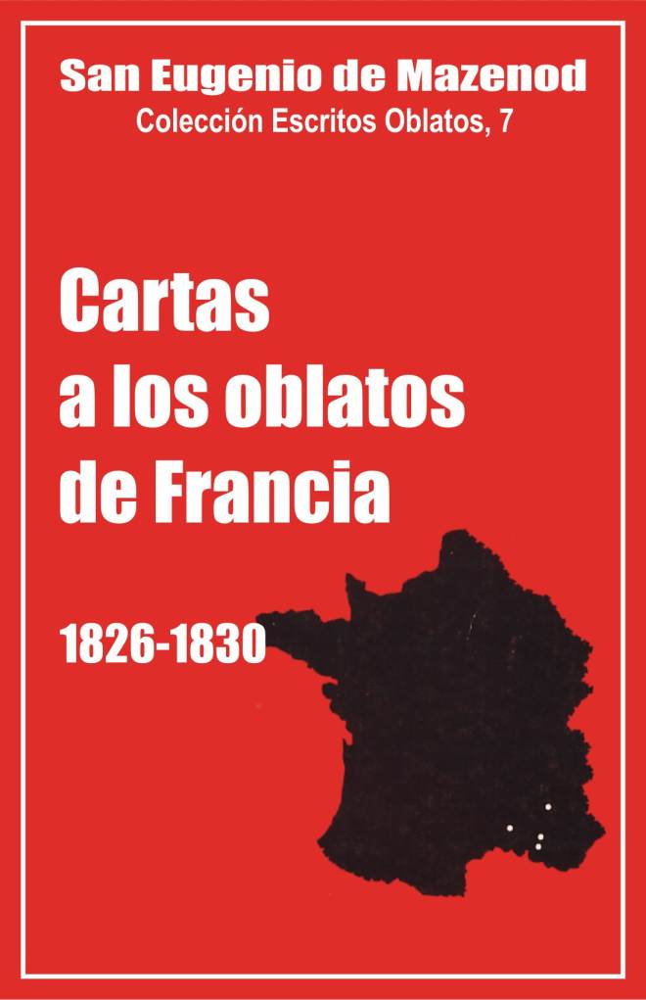

Palo Gordo
2019
Escritos Oblatos: - 01 - 02 - 03 - 04 - 05 - 06 - 07 - 08 - 09 - 10 - 11 - 12 - 13 - 14 - 15 - 16 - 17 - 18 - 19 - 20 - 21 - 22

EUGENIO DE MAZENOD
Colección Escritos Oblatos, 7
Postulación general, O.M.I.
Via Aurelia, 290 Roma – 1983
Traducción por un equipo
de oblatos españoles
Palo Gordo
2019
1826 - 1827 - 1828 - 1829 - 1830
INTRODUCCIÓN
Este séptimo volumen de Escritos Oblatos comprende dos grupos de cartas de desigual valor: las que se escribieron en Roma y en el curso del viaje de regreso a Francia, de enero a junio de 1826, y las siguientes, muy fragmentarias, escritas de julio de 1826 a diciembre de 1830.
I - Cartas de 1826: aprobación de la Congregación
Las cartas escritas en Roma forman la parte más sustancial de este volumen, no por su número, sino por su extensión y por su interés. Nunca se destacará bastante el valor y la importancia de las mismas.
En 1825-1826 vivió uno de los grandes momentos de su vida, y la Congregación, sin darse del todo cuenta, franqueó una etapa esencial de su historia. Esto se percibe fácilmente leyendo y releyendo estas páginas en que la vivacidad, el humor, la fe viva y vigorosa, la alegría y la gratitud estimulan sin cesar nuestro interés y nos invitan a cantar el Te Deum como hizo el Fundador el 18 de febrero.
Gestiones del Fundador en Roma y aprobación de las Reglas
Ya hacía unos años que el P. de Mazenod, por razón de las dificultades surgidas con algunos obispos, se estaba dando cuenta de que, para dar remate a su obra y ponerla al abrigo de las tempestades, labia que lograr el reconocimiento de la Santa Sede. Sin embargo, no se decidía a ir a Roma. El P. Rambert explica así los motivos de esa vacilación: "Eran entonces tan pocos, tan pequeños, tan desconocidos. Además, hay que decirlo, un motivo personal paralizaba el ánimo del Superior general. El, hombre de ordinario tan decidido, que sin esfuerzo y con solo el temple de su carácter llevaba hasta el límite la audacia del bien, él, que no sabía echarse atrás ante los obstáculos aparentemente más insalvables, no encontraba plenamente en sí mismo la confianza que necesitaba para ir a buscar la aprobación de su Congregación. Le faltaba, es verdad, por naturaleza esa disposición obsequiosa con la que, para obtener un favor, uno se presenta como solicitante. Pero no solo tenía que vencer el orgullo natural de su carácter y cierta delicadeza de sentimientos; tenía que luchar también con su humildad. Se decía a si mismo, como repitió varias veces, que no tenía talla para que la Iglesia lo reconociera como fundador de una orden religiosa y que sería presuntuoso de su parte ir a pedir al Sumo Pontífice un acto que implicaba ese título... Por otra parte, sabía también que, si no tenía éxito en su gestión, tal fracaso proyectaría el descrédito sobre su Congregación. Los obispos podrían, a su vez, retirar la aprobación y los candidatos vacilarían en ingresar en una comunidad religiosa que Roma se hubiera negado a reconocer" (Vie..., 1,412-413).
Con todo, salió para Roma en noviembre de 1825, empujado por los deseos de todos los miembros de la Congregación y especialmente del R. Albini. Así escribe él mismo en sus Memorias; "... Siete obispos aprobaron nuestras Reglas. Provisto de todas esas aprobaciones tan halagüeñas, yo vacilaba todavía en emprender el viaje a Roma, cuando nuestro santo Padre Albini, empujándome por los hombros (literalmente, apoyó en ellos ambas manos), me dijo con seguridad: vaya, querido Padre, vaya, que lo logrará. Fui, efectivamente, confiando en la Providencia".
Llegado a Roma el 26 de noviembre, el fundador pasó las primeras semanas entrando en contacto con cardenales y obispos, prefectos y secretarios de las Sagradas Congregaciones, y con diversos prelados y personajes. Advirtió con aprensión que, desde hacía mucho tiempo, la Congregación de Obispos y Regulares concedía inicialmente solo un decreto de alabanza a las Congregaciones que pedían la aprobación. Decidió, pues, decir al Santo Padre, con todo el calor y la convicción de que era capaz, que un decreto de alabanza "no le dejaría satisfecho".
Su primera audiencia tuvo lugar el 20 de diciembre. En media hora el fundador logró convencer a León XII de que era preciso aprobar y no solo alabar. Esta convicción del Papa se volvió decisión categórica unos días más tarde en presencia del prosecretario de la Congregación de Obispos y Regulares, el arcipreste Adinolfi: "Esta Sociedad me gusta —habría dicho a Adinolfi el Santo Padre—, quiero favorecerla. Elija un cardenal de los más benévolos..., vaya a él de mi parte y dígale que mi intención es que no solo se alaben estas Reglas, sino que se aprueben".
Animado por esa benevolencia, el P. de Mazenod se preocupó inmediatamente de lograr una simplificación del procedimiento, que hubiera podido durar varios meses, ya que tendrían que leer el manuscrito de las Reglas ocho cardenales para dar su dictamen en una congregación especial. Tan bien expuso esta nueva petición al cardenal Pacca, prefecto de la S. Congregación, que éste obtuvo del Papa, el 18 de enero, la facultad de formar una comisión compuesta solo de tres cardenales: Pacca, Pedicini, ponente, y Pallotta, amigo del cardenal ponente.
De improviso surgió el tercer obstáculo, el cual, no obstante, contribuyó a acelerar el resultado final. Tres obispos del sur de Francia, que habían concedido una carta de aprobación de las Reglas, los Monseñores Arbaud, Bausset y Miollis, escribieron al Papa explicándole que los estatutos de los Oblatos, que habían sido examinados muy de prisa, les parecían inaceptables, contrarios a los derechos de los obispos y a las leyes civiles del Reino. Estos motivos, inspirados en el galicanismo, no tuvieron fuerza, afortunadamente, para disuadir a los cardenales, quienes, al contrario, se sintieron aun más resueltos a afianzar con un acto auténtico la autoridad de la Santa Sede.
Los cardenales, reunidos con el cardenal Pacca el 15 de febrero, se pronunciaron unánimemente por la aprobación de las Reglas. Dos días después aprobaba y confirmaba León XII la decisión de la congregación.
Asombro del Fundador y confianza que inspira a todos
El Fundador se sorprendió luego del resultado tan positivo y tan rápido de sus gestiones, resultado logrado por la bondad de Dios, pero también por la especie de fascinación que ejerció él mismo sobre las personas con las que había conectado, de cuya calurosa acogida y benévola comprensión siempre tuvo que felicitarse. En efecto, durante su estancia en Roma en 1825 y 1826, se dio o volvió a darse cuenta, en primer lugar, del encanto y ascendiente de su personalidad que en todas partes causó fuerte impresión y ganó todas las voluntades para sus miras, pero además y sobre todo, de la infinita bondad de Dios para con él y para con su Congregación. Adquirió así más que nunca la convicción de que es preciso abandonarse enteramente a la santa voluntad de Dios después de haber actuado lo mejor posible. Citamos unos trozos reveladores de sus cartas: "... De no estar íntimamente persuadido de que Dios se ha complacido en prepararme los caminos y en abrirme todos los corazones, tendría ciertamente motivos para enorgullecerme al ver la diligencia, la estima y el efecto que cada cual me ha testimoniado durante mi estancia en esta capital del mundo. Gracias al Señor, ni siquiera he sido tentado por ese miserable orgullo: pero mentiría si dijera que no he quedado satisfecho y consolado ante esa acogida general: al contrario, he experimentado en ello un sentimiento habitual de alegría y de agradecimiento, porque, tengo que decírselo, desde los lacayos, los hermanos legos, etc. remontándome hasta el Papa, todos andaban a ver quién me daba testimonios más sensibles de adhesión o de afecto. Si usted hubiera visto al Papa en la audiencia de media hora larga que me concedió ayer, habría llorado de emoción..." (carta del 16 de abril).
En ocasión de su visita de despedida a la embajada de Francia, el 4 de mayo, el Sr. Montmorency-Laval, con quien el fundador se había mostrado siempre cortés pero muy reservado, confesó que el P. de Mazenod "gozaba en Roma de muy alta consideración". Añadió que aquel mismo día iba a escribir al Rey "que entre los sacerdotes que habían llegado a Roma, el que había sido más considerado y del que se estaba más satisfecho era el abate de Mazenod..." (carta del 4 de mayo).
Por último, el P. Mautone, procurador general de los Redentoristas, no quiso que se fuera el Fundador, sin haberle dado muchas muestras de estima. Este anota en su Diario íntimo: "El R.P. Mautone, el redentorista que ha tenido la dicha de conocer al beato Ligorio, me ha hecho un regalo precioso que estimo más que un tesoro: es un trozo de hueso del beato y una carta escrita de su puño y letra... Me sentí también muy emocionado por lo que me dijo al entregármela. Tal vez sea una debilidad el referirlo, pero esta confesión, salida de la boca de un hombre que jamás en su vida ha hecho cumplidos a nadie, me explica el enigma de la acogida general que se me ha dispensado en Roma, y quiero consignarla aquí, no para mi propio recuerdo, sino para consuelo de nuestros amigos, a quienes exclusivamente será confiado este diario, para regocijarlos por unos instantes: ‘Todos los que le han conocido en Roma, me decía ese buen Padre, repiten que usted se ha sabido granjear todos los corazones y que no hay ni uno solo que no le ame y estime. Es el beato quien ha hecho eso, añadía" (Diario, 24 de abril de 1826).
Intensa actividad. Unión con Dios
Pero el éxito de las gestiones del Fundador se logró también gracias a su incansable actividad, aunque siempre le disgustó el oficio de pedigüeño. "¡Ay, querido arrugo, —confesaba al P. Tempier el 11 de febrero— vale más predicar misiones, vale más incluso saborear las molestias de un vicario general, que hacer el triste oficio que . tengo que hacer aquí". El 5 de enero escribía: "Corro porque siempre estoy corriendo, voy corriendo al correo". El 20 de febrero añade: "No descuido ninguno de los medios que la prudencia humana puede sugerir, y no ahorro los pasos ni doy descanso a mi espíritu para secundar los designios de la divina Providencia..." El 27 recuerda nuevamente al P. Tempier; "No pierdo un minuto, porque está bien que sepa que desde que estoy en este país desarrollo una actividad increíble para acelerar todo lo que tengo que hacer; así, ya sea en parte por esa razón, ya sea sobre todo porque Dios me está ayudando a cada paso, he dejado detrás de mí a muchos que habían empezado seis meses antes que yo..."
En la carta del 4 de enero el Fundador había hecho al P. Tempier la siguiente confidencia: "Crea que no me duermo; tomaré los baños cuando regrese, porque hay que reconocer que esta operación no puede hacerse sin acaloramiento. Sin embargo, me siento muy bien de cuerpo y de espíritu; parece en verdad que Dios quiere que me consagre del todo a mi asunto, aunque bien unido a El, y no permite que le ofenda, por lo menos en forma consciente". El 10 de enero rectifica esta afirmación, "que sería— piensa— demasiado absurda y ridícula si no la hubiera escrito en la intimidad de la confianza a mi amigo, al confidente de mis pensamientos más secretos; no se me habría escapado ciertamente con cualquiera otra persona. Cuando dije que no pecaba, quise decir que pecaba menos; la razón es bien sencilla. En primer lugar, mientras me ocupo de nuestros asuntos, he procurado aprovechar lo mejor posible las gracias extraordinarias y múltiples del Jubileo. Por otra parte, aquí todo recuerda los grandes ejemplos de los santos que parecen estar todavía vivos para aquellos que recorren esta ciudad con un mínimo de espíritu de fe. Además, llevando entre manos un asunto de capital importancia, cuyas consecuencias deben influir tan poderosamente en la edificación de la Iglesia, la gloria de Dios y la salvación de las almas; un asunto que ha de verse entorpecido por el infierno y que no puede triunfar sino gracias a una protección muy especial de Dios, a quien pertenece en exclusiva el poder tocar los corazones y dirigir las voluntades de los hombres, tuve necesariamente que persuadirme de que era mi deber hacer cuanto dependía de mí para vivir en la unión más íntima que me fuera posible con Dios y resolverme, por consiguiente, a ser fiel a su gracia y ano contristar a su espíritu. En la presente situación, la menor infidelidad voluntaria me parecería un crimen, no solo porque disgustaría a Dios, lo que sería sin duda el mayor mal, sino también por las consecuencias que podría acarrear.
Tengo que añadir que, desde que salí de Francia, pero sobre todo desde que estoy en Roma, Dios me asiste en todo de forma tan sensible que me parece que me resultaría imposible dejar de conservar en mi alma un sentimiento habitual de agradecimiento que me lleva a alabar, bendecir y dar gracias a Dios, a Nuestro Señor Jesucristo, y, en la debida proporción, a la Santísima Virgen, a los ángeles y a los santos a quienes creo deber la protección y los consuelos que siento. Esto no impide que me confiese dos veces por semana y que siempre encuentre, en mayor o menor grado, motivos para humillarme ante Dios...".
Abandono en Dios. Agradecimiento. Obligación de tender a la santidad
Ese convencimiento de la bondad de Dios para con él y para con la Congregación no hizo más que aumentar. Ya tras su primera audiencia con el Papa el Fundador había escrito: "Hay que recordar el dicho de San Ignacio: que en nuestros asuntos tenemos que actuar como si el éxito dependiera de nuestra habilidad y poner en Dios toda la confianza como si todas nuestras gestiones fueran a resultar infructuosas. Sin embargo, confieso que, a la vista de todo lo ocurrido hasta ahora, solo cuento con la ayuda de Dios, y si actúo por mi parte, es por la forma y por no dar la impresión de tentar a Dios" (carta del 28 de diciembre, 1825).
El 20 de enero, luego de. haberse visto dispensado del examen de ocho cardenales, se expresa así: "Sigamos rezando, mi querido amigo, y no dejemos de poner nuestra confianza en Dios. A El solo corresponde arreglar y disponer todas las cosas según su infinita sabiduría para la mayor gloria de su nombre. Confieso que nunca había comprendido como ahora el valor de este abandono en Dios, nunca me había sentido impulsado a poner en práctica esta virtud (pues lo es) como en esta circunstancia... Cuando sigo en espíritu la marcha de nuestro asunto, me lleno de admiración ante la bondad de Dios y me siento transportado por grandes sentimientos de gratitud. Hasta el presente, todo está marcado con el sello de una protección especial. ¿Quién pudo prepararme los caminos? ¿Quién pudo disponer al Jefe de la Iglesia para que quisiera hacer con nosotros una excepción singular?, ¿quién es el que le inspira para que encuentre bien todo lo que le propongo?
La conclusión que saca el P. de Mazenod para sí y para sus hijos, de esa incomprensible bondad de Dios, es que en adelante es preciso vivir más santamente, amar más a la Congregación y observar más fielmente las Reglas, que valen tanto como las de las grandes Ordenes. El 9 de marzo escribe: "Tenía razón el cardenal Pedicini: si Dios no hubiera puesto su santa mano, habríamos tenido para más de un año. Lo que me divierte es la sorpresa del arcipreste Adinolfi, que es, como le he dicho, la clave del secretariado: se hacen cruces ante el giro que tomó el asunto desde el principio. "Non si è visto mai": nunca se ha visto —dice—, en ningún asunto de este género, que el Papa se ocupara personalmente de allanarlo todo, de zanjar las dificultades, de prescribir hasta los detalles y de dictar las expresiones mismas del breve. Nuestros señores ¿se dan cuenta de ello, por lo menos? Si supieran lo que eso significa, exultarían de alegría o quedarían estupefactos de admiración. Aquí la gente espera a veces seis meses por un sí o un no, se fija en un gesto, trata de penetrar algunos pensamientos del Sumo Pontífice, y se siente feliz con una leve esperanza por muy lejana que esté. Y es el mismo Sumo Pontífice quien lo ha hecho todo por nosotros. ¿Qué título teníamos para ello? ¿Quién me concedió que, en una sola audiencia, le inspirara un interés tan vivo, tan real y tan constante? ¿Cómo no ver ahí algo sobrenatural? Entonces ¿cómo no sentirnos transportados de agradecimiento a Dios, y, volviendo la mirada sobre nosotros mismos, cómo no adherirnos más todavía a la Sociedad que acaba de recibir pruebas tan convincentes de la protección del Señor? A ella pertenecemos ya de un modo muy distinto, pues en el orden jerárquico por ella nos vinculamos al Jefe supremo de la Iglesia que es nuestro primer moderador. Ahora es cuando tenemos que adquirir ese espíritu de cuerpo que incita a no dejarnos ganar por ninguna otra corporación en virtud, en regularidad, etc.". El 20 de marzo continúa: "¡Oh sí, tenemos que decírnoslo, hemos recibido una gran gracia. Cuanto más de cerca la considero en todas sus circunstancias, más valoro el favor. Nunca podremos corresponder a él más que con una fidelidad a toda prueba y con un incremento de celo y dedicación por la gloria de Dios, el servicio de la Iglesia y la salvación de las almas, sobre todo las más abandonadas, conforme a nuestra vocación. Después de esto, lo que pido a Dios es que nos escoja y nos envíe las personas que nos hacen falta para realizar su obra. Tiene usted razón al decir que a todos os parecía ser hombres nuevos: así es en verdad. ¡Ojalá comprendamos bien lo que somos! Espero que el Señor nos concederá esta gracia, con la asistencia y por la protección de nuestra santa Madre, María Inmaculada, a quien hemos de profesar gran devoción en nuestra Congregación. ¿No le parece que es un signo de predestinación llevar el nombre de Oblatos de María, es decir, consagrados a Dios bajo los auspicios de María, de quien la Congregación lleva el nombre como apellido que le es común con la Santísima e Inmaculada Madre de Dios? Es como para que nos tengan envidia..."
Reacción de la Congregación
Sólo muy imperfectamente conocemos las reacciones de la Congregación. Han desaparecido las cartas del P. Tempier, menos unas líneas de la del 9 de marzo en la que escribe: "Es para quedar encantados ver cómo la Providencia ha actuado en la conducción de nuestro asunto. Agradecimiento eterno al grande y santo Pontífice León XII, que tan dignamente ocupa la cátedra de San Pedro y que vivirá eternamente en nuestros corazones. El recuerdo de sus beneficios, con el de sus virtudes, se trasmitirá de boca en boca en nuestra Sociedad mientras exista un miembro de la familia. Tenga la seguridad, mi querido Padre, de que este sentimiento está profundamente grabado en el corazón de sus hijos. Tendría que habernos visto cuando fui a leer a nuestros Padres que están en Aubagne la carta en la que usted nos decía que nuestro Santo Padre había aprobado la decisión de la congregación. ¡Tendría, digo, que habernos visto! Nos abrazábamos con una alegría desbordante, sentíamos en nosotros un no sé qué que nos decía que éramos otros hombres. Lágrimas de alegría y de gratitud brotaban de nuestros ojos. Iguales sentimientos se manifestaron en la casa de Aix".
Las actas del Capítulo general, tenido en Marsella del 10 al 13 de julio; dejan también adivinar la alegría y el entusiasmo de todos. El Capítulo se clausuró con una sesión solemne en presencia de todos los oblatos que renovaron sus votos. Se dice en el acta: "La presencia de Nuestro Señor en medio de nuestra familia reunida en tan importante circunstancia, el profundo recogimiento de todos, y los sublimes pensamientos que nos ocupaban, daban a la ceremonia una belleza celestial. Unos vertían lágrimas abundantes, otros estaban enternecidos, y seguramente Dios también debía de estar conmovido. Un Te Deum solemne de acción de gracias por todos los favores derramados sobre la Sociedad, y la Bendición con el Santísimo concluyeron la piadosa asamblea".
A la salida de la capilla, el fundador quiso todavía saludar a los oblatos con estas palabras: "Es el feliz comienzo de una era nueva para la Sociedad. Dios ha ratificado los proyectos que habíamos ideado para su gloria; ha bendecido los lazos que nos unen; en adelante combatiremos a los enemigos del cielo bajo un estandarte que nos será propio y que la Iglesia nos ha dado. En este estandarte brilla el nombre glorioso de la Santísima Virgen Inmaculada; este mismo nombre pasa a ser el nuestro porque estamos consagrados a la Santísima Virgen; somos más especialmente sus hijos; y su protección sobre nosotros, tan sensible hasta ahora, lo será todavía más en adelante, si nos mostramos dignos de tal madre..."
II Cartas de 1827-1830. Crisis personal del Fundador.
Después de la aprobación de las Reglas y del Instituto ¿íbamos a asistir al "feliz comienzo de una era nueva para la Sociedad", como había dicho el Fundador en el Capítulo de 1826? En esta ocasión el P. de Mazenod no fue buen profeta. Entre julio de 1826 y 1831 asistimos a uno de los períodos más grises de la vida de la Congregación, en el que el Fundador pasa por una noche obscura de los sentidos y del espíritu que se va a prolongar durante diez años. Nuestros autores espirituales apenas han estudiado este período de su vida, pero sin duda alguna él atraviesa entonces una crisis profunda por múltiples causas: la formación y la perseverancia de los miembros, a quienes no se logra mejorar, la Congregación que no responde convenientemente al deseado ideal de vida religiosa y apostólica, la diócesis de Marsella que se resiste a las reformas juzgadas necesarias, la muerte de seres queridos como Marcou, Suzanne, Natalia de Boisgelin y León XII, y por último la enfermedad de varios Padres y la del Fundador mismo, que queda incapacitado para trabajar durante 18 meses.
Una circunstancia acentúa aún más la diferencia de tono que se percibe entre las cartas de 1826 y las de los años siguientes. Conservamos las primeras en su texto casi completo, mientras que de las otras nos quedan solo fragmentos, migajas. Aunque se encuentren hermosas páginas en que se expresa el espíritu de fe y la sumisión a Dios, Yenveux y los biógrafos parece que no retuvieron para este período más que sobre todo los pasajes en que el P. de Mazenod habla de enfermedades, de lutos, de apostasías, de desengaños y del aburrimiento en su cargo de vicario general que le hace enmohecer en su sillón en vez de ir con sus hermanos a anunciar el Evangelio.
Desarrollo aparente de la Congregación
La Sociedad parece crecer al ritmo lento pero seguro de los años anteriores. Se enriquece primero con dos nuevas casas. La de Nimes tuvo que cerrarse, cuando la revolución de julio de 1830, pero se había formado ya otra oportunidad en 1827, en Marsella, para asegurar la dirección del seminario mayor, y en setiembre de 1830 se compró un viejo castillo en Billens (Suiza), que sirvió de refugio a los novicios y a los escolásticos.
La Congregación contaba en 1826,15 sacerdotes y 15 novicios o escolásticos, mientras que en 1831 tiene 22 sacerdotes, 10 hermanos escolásticos, 2 hermanos conversos y 5 o 6 novicios. Sin embargo, tras esta fachada aparentemente sólida ¡cuántas grietas en el edificio!
Problemas causados por el noviciado y por la escasa perseverancia de los candidatos.
Pocos son los jóvenes verdaderamente serios que se sienten atraídos a la Congregación. En 1826, de 9 que tomaron el hábito, solo 3 emiten los primeros votos; en 1827, de 13 profesan 3; en 1828, de 10 profesan 6; en 1829, de 15 profesan 9, y en 1830, de 17 profesan 3. Además, esos novicios no reciben todavía la sólida formación que el Fundador desea. Al visitar diversas casas religiosas en Italia en 1825-1826, él había quedado impresionado por la perfecta regularidad que reinaba en todas partes. "Aquí recorro —escribe el 16 de marzo— las casas más respetables, converso con los hombres más experimentados, intento, en una palabra hacer que mi viaje sea útil para la Sociedad, en cuanto me es posible. De todo lo que veo y lo que oigo saco la conclusión de que nosotros hemos foliado desde el principio respecto al noviciado, y de que éste no está todavía en el nivel en que debería estar..." A pesar de las numerosas preocupaciones del Fundador en Roma, las necesidades del noviciado y el porvenir de la Congregación ocupan continuamente su espíritu. A primeros de enero toma incluso una decisión importante. El P. Courtés, demasiado ocupado en Aix por la Congregación de la juventud y el servicio de la capilla, no puede atender suficientemente a la formación de los novicios. Habrá que confiarlos cuanto antes al P. Guibert y trasladarlos junto al Superior general y al P. Tempier. "Mientras yo esté en Marsella—escribe el 10 de enero—seré favorable a que el noviciado se coloque en esa ciudad, porque podré echar una mano al maestro y algunas ojeadas a los alumnos..."
Tan pronto como regresa a Marsella, en el verano de 1826, el Fundador nombra maestro de novicios al P. Guibert, que se ocupa con celo e inteligencia de la formación de los futuros oblatos. Pero en menos de dos años la vida sedentaria le hace enfermar. Tras unas semanas de descanso durante el verano de 1828, pide y obtiene reanudar la vida misionera. El Superior general entonces llama al P. Honorat, uno de los pocos buenos misioneros que le quedan. Le escribe el 4 de mayo de 1828: "La Providencia nos había proporcionado en el P. Guibert un maestro de novicios que me parecía totalmente apto para desempeñar ese papel importantísimo. Se dedicó al principio con todo el corazón a la obra, pero su salud, que nunca ha sido buena, se alteró y hubo que cambiarle de aires y descargarle enteramente de ese empleo. Este, sin embargo, es el más importante en la Sociedad. Sin noviciado, se va a pique la Sociedad... Hace falta, pues, que a estas alturas nuestro noviciado interior quede bien montado, y para eso hace falta un maestro de novicios. Ese maestro de novicios eres tú, mi querido P. Honorat, que juntas con la adhesión inviolable a la Sociedad, el amor al orden y a la regularidad. Lo he pensado bien. Me hubiera gustado encontrar a otro para dejarte en Nimes donde estás trabajando bien, pero no tengo a ningún otro en la Sociedad y nadie verá mal que haga pasar el servicio de la misma antes que cualquier otro, sobre todo cuando se trata de formar a los miembros que van a impedir que se extinga". ¿Rehusó el P. Honorat, o bien se había comprometido demasiado en varias misiones importantes? El caso es que no ocupó ese puesto hasta más de m año después: de noviembre de 1829 al verano de 1830. Antes y después de él algunos Padres más jóvenes hacen de maestros de novicios: el P. Reynier en Marsella (primavera de 1828), el P. Guigues en Saint-Just (de junio 1828 a agosto 1839), el P. Capmas en Saint-Just (setiembre-octubre 1830) y el P. Mille en Suiza (1830-1831). Estos cambios de responsables y de lugares perjudicaron ciertamente la seriedad de la formación.
Además, durante este período, la Congregación sigue perdiendo miembros. En seis años, 10 profesos, entre ellos 6 Padres, dejan la Familia o son expulsados por falta de espíritu religioso.
Se continúa ejerciendo, sí, el principal ministerio del Instituíoslas misiones populares, pero con efectivos reducidos y entre numerosas dificultades. En primer lugar, la necesidad de predicar el Jubileo en 1826 impide a los Padres ocuparse de su misión esencial, con gran descontento del Fundador. Luego, en N.D. de Laus, Mons. Arbaud confía a los oblatos pocas misiones en su diócesis y encima siempre halla objeciones que hacerles sobre la doctrina y la práctica del confesionario. Por último, la revolución de julio de 1830 pone fin, en forma drástica, a ese apostolado.
El interés por las vocaciones, por la formación de los candidatos y por su perseverancia debió de preocupar mucho entonces a los superiores, puesto que trataron sobre todo de ese problema en el capítulo general de 1831. Parece extraño, en efecto, que no se haya dicho una palabra acerca de lo que podía provocar la muerte del Instituto: la imposibilidad de predicar misiones desde hacía más de un año.
Personal poco brillante
Enfrentado con estos problemas y debilitado por la enfermedad ¡cómo hacer proyectos para el futuro! Hay, sí, un grupo de Padres jóvenes, de los cuales algunos no carecen de talento ni de virtud (Aubert, Telmon, Ricard, Martin, Semeria, Dassy), pero en conjunto el Fundador los encuentra muy por debajo de lo que exigirían la gravedad de los problemas y las dificultades de los tiempos. Forzado a descansar en Friburgo en 1830, escribe al P. Tempier el 1 de agosto: "..Ayer mismo, cuando la solemnidad y la duración de los oficios que me hicieron presidir en la fiesta de San Ignacio, y la circunstancia de verme en el último día de mis 48 años, excitaban en mí más devoción y más santos deseos y me dejaban también tiempo para reflexionar bajo la influencia de Jesucristo presente y expuesto, ¡en qué abismo me sumergía! ¡cuántos sentimientos diferentes! Estaba feliz en el altar, ofrecía el santo sacrificio por la Orden de los Jesuitas, sin olvidar a nuestra familia. Felicitaba a su santo fundador por las maravillas que había realizado; pero ¡cuántas ayudas no tuvo para eso! Nada parecido se da en nuestros días. Si tuvo como enemigos a tantos herejes y malos cristianos, ¡qué protección manifiesta de parte de los Papas y Obispos más célebres! Todo se veía perdido en la Iglesia, se confió a su Orden la causa de la Iglesia: de ahí todo lo que logró.
Pero, hay que decirlo, ¡por qué hombres fue secundado! Ya en los primeros años de su agrupación, se podría haber dicho de cada uno de ellos que hacía más que él. No hablo solo de los primeros compañeros, hablo de todos los que se unieron a ellos en cuanto se dieron a conocer. Parece que todos los que sentían, a la vez que el celo por la defensa de la Iglesia tan horriblemente desgarrada, el talento para serle útil y la virtud para consagrarse a esa gran obra, venían a alistarse bajo la bandera de Ignacio. Su Compañía fue desde el principio un ejército de generales. ¡Asómbrese, entonces, de todo lo que han hecho!
¿Vemos algo parecido a nuestro alrededor? Hay que formar penosamente a algunos jóvenes, de los cuales la mayoría no son capaces de concebir los grandes ideales que deberían elevarles por encima de todo lo que les rodea. Ni uno solo que pueda proporcionar algo propio, aportar una piedra al edificio que habría que construir entre todos. ¡Tiempos desgraciados! ¡Detestable influencia del siglo en los espíritus! Si hay quienes podrían producir algo, es en sentido inverso, y en lugar del impulso que daría el concierto de muchas voluntades orientadas hacia el mismo objetivo, nos toca ver amortiguarse y debilitarse todos los ardores de nuestras almas con los miramientos, las precauciones y los razonamientos que hay que emplear con ellos a fin de utilizarlos al menos en la región mediana en que esas almas frías y sin vigor quieren mantenerse.
Acabé pidiendo a Dios que me llevara de este mundo, si no voy a hacer más dé lo que he hecho..."
Administración de la diócesis de Marsella
Las dificultades halladas en la administración de la diócesis de Marsella no aparecen apenas en las cartas a los oblatos. El canónigo Leflon las describió bien en su biografía del Fundador. Los Mazenod tuvieron que actuar con firmeza, especialmente con el clero, acostumbrado durante un cuarto de siglo a vivir en la independencia, sin obispo residente. Los métodos pastorales y los actos de bondad ^e atribuían habitualmente a Mons. Fortunato; mientras que a su sobrino se le consideraba responsable de las medidas de rigor. "Se creía —escribe Leflon— que el prelado se reservaba la misericordia y que los imperativos de sus mónita, el vigor de sus entredichos y la severidad de sus cartas eran inspirados a su debilidad por un sobrino cuyo carácter valía por dos. Tanto el prefecto Thomas, como los artículos de diarios liberales y los escritos lanzados contra su administración, distinguen siempre entre el ejecutor resignado y d inspirador que le arrastra y le domina, y solo alaban al primero para mejor denigrar al segundo", Los historiadores del Fundador han demostrado la falsedad de estas acusaciones tanto más fácilmente cuanto que, desde el final de 1825 hasta el principio de 1831, el Vicario General pasó por lo menos 22 meses fuera de la diócesis y estuvo casi otro año sin trabajar en el obispado, ocupado con los enfermos o enfermo él mismo. Es cierto, sin embargo, que esas críticas y la función misma de vicario general le pesaban mucho. Nunca lo ocultó. Escribe al P. Honorat el 12 de diciembre de 1827: "Todo lo que añades completa el cuadro de esas hermosas misiones... ¡Ojalá pudiera yo tomar en ellas parte más directa! Pero mis pecados me retienen en la esclavitud de una infinidad de otras ocupaciones, de las que ninguna va con mi gusto: no, no hay ni una sola ocupación en el día que me satisfaga y que yo no ofrezca a Dios con cierta amargura en expiación de mis pecados: tan pesadas y tan difíciles de cumplir me resultan. ¡Cuántos motivos de pena! ¡qué inquietudes incesantemente renovadas! A veces estoy triste hasta la muerte y no tengo a nadie para consolarme". El 2 de enero siguiente felicita el año nuevo al P. Courtés y prosigue: "... Mi mesa de trabajo está tan cargada que no puedo colocar en ella una lámpara, pero es como si no tuviera nada que hacer. No me siento ya con fuerzas para continuar este oficio. Si mi conciencia no me retuviera en él, hace tiempo habría tomado mi decisión, pero mi responsabilidad me asusta un poco, o mejor dicho, mucha. Cuando hablo de responsabilidad, me refiero a la que he contraído en 1817 y 1823. Creí que hacía bien, y es posible que haya hecho bien; veo a diario los felices resultados para la religión: pero no tuve bastante en cuenta mi interés personal, mi descanso, mi existencia totalmente sacrificada, con el adicional desagrado de verme atado y sentir que, por mi posición esencialmente dependiente, no puedo hacer ni la mitad del bien que desearía, y el mismo que tengo la dicha de hacer, no lo hago como pienso que debería hacerse. Además ¡cómo tomar una decisión acerca de todos los detalles mecánicos que absorben la mitad y a menudo la totalidad de mis jornadas! Querido Courtés, no puedo más y la muerte se acerca, pues estoy rozando la vejez. Cuando quede libre, ya no podré actuar. Esperando que Dios os libre de un hombre tan inútil como yo me he vuelto, actuad vosotros por mí. Que la obra del Señor se cumpla..."
Enfermedad y muerte de varios oblatos.
Habitualmente las dificultades tenían como efecto, no el abatir al Fundador, sino más bien el multiplicar su actividad y su resistencia. Entre 1827 y 1831 esta reacción no se produce. El dolor causado por la muerte de seres queridos le debilita demasiado física y moralmente. Se trata de un hecho capital en su vida. Cinco de los mejores oblatos fallecen: el P. JJ. Marcou en 1826, el P. VA. Arnoux y el H. Ph. P. Dumolard en 1828, el P. MJA. Suzanne en 1829, y el P. J.T.M. Capmas, el 10 de enero de 1831. Además la enfermedad frena el impulso de los de más edad y de los más activos: Dupuy en 1826, Reynier, Albini y Guibert en 1827, Suzanne en 1828, y Mye, Courtés y el mismo Fundador en 1829-1830.
En junio de 1826, él P. de Mazenod vuelve a toda prisa a Marsella, sin detenerse en Gap ni en Nuestra Señora de Laus, para correr a la cabecera del P. Suzanne enfermo. Este se repone, pero el P. Marcou muere el 20 de agosto. "Dios acaba de llevarnos... a uno de nuestros más santos misioneros —escribe en la carta del 21 de agosto al P. Honorat—. Lloro a un hermano tan precioso para nuestra Sociedad, por la que tanto efecto sentía, pero me reprocho en cierto modo mis lágrimas, como si me atreviera a deplorar su dicha. Será nuestro protector ante Dios. Resignémonos. Nuestro Padre que está en el cielo conoce nuestras necesidades y proveerá; con todo, mi corazón sufre mucho. No tengo bastante virtud para sobreponerme del todo a la naturaleza, naturaleza bien elevada, sin embargo, si no es una especie aparte, en el amor que os tengo, mis queridos hijos, a quienes tanto quiero en el Señor y que lo merecéis por tantos títulos".
Durante el verano de 1827, son los Padres Albiniy Guibert y el H. Reynier quienes caen enfermos y preocupan al Fundador. El mismo es víctima de un accidente de coche que le produjo varias heridas en las piernas. Escribe el 18 de julio al P. Suzanne: "Hice mal, mi querido P. Suzanne, lo reconozco, no exponiendo ciertos detalles acerca del accidente ocurrido a mis piernas... Desde entonces, otros acontecimientos han preocupado mi espíritu: el temor de ver morir de una inflamación a nuestro hermano Reynier, la ansiedad, la pena y no sé si debo añadir la fatiga: todo eso me hace olvidar mis propios sufrimientos, a los cuales por otra parte soy siempre menos sensible que a los de los otros".
En julio de 1828, con pocos días de intervalo, mueren el P. Arnoux y el H. Dumolard. Así se queja en carta del 8 de julio al P. Courtés: "No puedo hacerme a la idea de perder hombres del temple del P. Arnoux. No podrás creer cuánto prometía por su parte el pobre Dumolard que está luchando con la muerte desde hace tanto tiempo... Dios sabe lo que precisa cada una de sus criaturas y sebe también lo que más conviene a las familias que viven bajo sus leyes. Esto es un poderoso motivo de resignación". Y el 9 de julio escribe: "Rece... por mí que siempre siento con demasiada viveza tales golpes".
Al enterarse del fallecimiento del P. Arnoux, escribe al P. Courtés el 27 de julio: "... He preferido guardar silencio; pero, por cierto, he sentido vivamente la privación que me has impuesto con tu negligencia en informarme del estado de nuestro santo enfermo. ¿No sabes que miro como un deber principal asistir a todos aquellos hermanos nuestros que, estando a mi alcance, se hallan en peligro de muerte? ¿Estamos acaso tan lejos de Aix que en mas horas no hubiera podido acercarme al enfermo? ... Excuso decirte con cuánta avidez hemos leído los detalles que nos das de sus últimos momentos y de su sepultura. Regué tus cartas con lágrimas cada vez que me puse a leerlas..."
Fallecimiento del P. Suzanne
Pero durante todo este período es la enfermedad del P. Suzanne lo que constituye la principal preocupación del P. de Mazenod y lo que contribuye más que todo lo demás a debilitar poco a poco sus fuerzas. Tras haber vomitado sangre en 1826 y luego en febrero de 1827, la tercera recaída en noviembre de 1828 no deja ya esperanza de recuperación. Durante más de dos meses el desolado padre pasa los días y las noches junto al enfermo, a quien había conocido adolescente en Aix (como a Marcou, Honorat y Courtés) y a quien quería como a hijo predilecto. Todas sus cartas des de 1826 a enero de 1829 son un crescendo de preocupaciones y de dolor por esa causa. A su pluma acuden las expresiones más fuertes de un alma inconsolable: "susceptibilidad de nú excesiva ternura" (29-3-1828, a Suzanne): "... en cuanto a mí... el dolor que he sentido estos dos días pasados ha sido tan vivo y tan constante que considero como una especie de milagro él no haber sucumbido; afortunadamente, pude verter gran abundancia de lágrimas, lo cual creo me ha salvado. Me queda, sin embargo, una extremada fatiga. Me va a costar la vida amaros como os amo. Pero no podría arrepentirme ni quejarme de ello. Adiós" (15-11-1828, a Courtés). "Tiene que ser de hierro mi cuerpo para resistir a emociones del alma tan violentas y tan continuas... Vosotros estáis en el campo de batalla, y yo al pie de la cruz en la que nuestro pobre hermano está clavado" (28-11-1828, a Guibert). "Si mostrara exteriormente todas las angustias que siento, me iban a tomar por un loco, mientras que soy solo un hombre..." (15-12-1828, a Courtés). "Creo, querido amigo, que hace mucho que no te he escrito; mis horas, mis días y mis noches transcurren al lado de nuestro bienaventurado paciente que está consumando su sacrificio con sentimientos heroicos. Todos están atentos a recoger sus palabras y yo lo estoy a meditar en los sufrimientos de la Santísima Virgen al pie de la cruz, de los cuales tenía una idea muy imperfecta hasta ahora... ¡Dios mío! estos pensamientos se me hacen familiares y alimentan mi dolor, quiero beber el cáliz hasta las heces... Adiós, te estrecho contra mi corazón, cuya llaga no podría ser más profunda. Adiós" (29- 1-1829 a Courtés).
El P. Suzanne murió el 31 de enero de 1829. Durante varios meses el P. de Mazenod fue casi incapaz de trabajar. Escribió al P. Courtés el 19 de febrero: "... cuando tengo que entrar en mi despacho, siento repugnancia a dedicarme a cualquier cosa, como el hidrófobo la siente por el agua. En este estado me ha dejado la pérdida que he sufrido, la cual me resulta hoy tan sensible como el primer día. No creo faltar de resignación; no rehúso los consuelos que la santa muerte de ese hijo tan querido proporciona a un padre cristiano; pero la llaga siempre sangrante no podría ser curada ni siquiera por ese bálsamo sobrenatural. Tengo siempre delante a mi hijo, tal como la gracia lo había moldeado en su última enfermedad..."
Enfermedad del P. Courtés
Mientras estaba enfermo el P. Suzanne, el P. Courtés no se sentía muy bien. El Fundador le había escrito el 18 de noviembre de 1828: "Te mando que te cuides, porque dos golpes así me harían perder o la razón o la vida". Pues bien, el 10 de abril de 1829 le anuncian que el P. Courtés está gravemente enfermo. "Para el corazón todavía destrozado del P. de Mazenod, aquello fue un verdadero rayo", escribe el P. Rey (1,467). "El quería al P. Courtés tanto como al P. Suzanne; era, como éste, uno de sus primeros hijos, uno de los que le habían comprendido mejor y se habían impregnado más plenamente de su espíritu y de sus sentimientos. Por otra parte, el P. Courtés, por sus talentos, por su rara prudencia, su aptitud para los negocios, su espíritu religioso y su dedicación a toda prueba, se había vuelto el hombre necesario y era aquel con quien, después de Dios, contaba el Fundador para el futuro de su obra..."
El P. de Mazenod pasa un mes a la cabecera de este otro hijo moribundo. El 10 de mayo ya no puede más. Escribe al P. Tempier: "Rasgo la carta que le estaba escribiendo... expresaba demasiado vivamente el estado de angustia, el desgarramiento interior que me causa la situación de nuestro querido P. Courtés, y usted habría quedado demasiado afligido al verme tal como soy. No tengo realmente ánimos para escribirle diciéndole que casi no me quedan esperanzas... Por mí mismo, aunque no manifiesto nada exteriormente, no soy capaz de decir una palabra. La violencia que me veo obligado a hacerme, me pone en un estado que parece una agonía. No sé si es agotamiento o abatimiento o qué es; no me siento con fuerzas físicas para hacer de nuevo lo que hice por esa otra niña de mis ojos que me ha sido quitada como hay peligro de que se me quite ésta. Tendría que ser más desinteresado de lo que soy por su existencia, para poder conversar con él acerca de su muerte cercana. La idea de mi desesperación es inseparable de ello. Por muy resignado que deba estar a los decretos de la divina Providencia, no dejaré de sentirme desgraciado para el resto de mi triste vida, tras haber perdido a dos seres como éstos. Jamás podrá nadie en el mundo comprender lo que han sido para mí. Este, probándomelo cada día más, no digo que renueva, pues no he olvidado nada, sino que confirma todo lo que el otro era para mí. Nunca se conocerá cuál era la perfección de su confianza, de su amor, de su abandono filial conmigo. Y nuestra Sociedad ¿cómo podrá rehacerse de estos dos mazazos? Todo me abate en esta pérdida, nunca voy a reponerme de ella..."
Enfermedad y convalecencia del P. de Mazenod
Mientras el P. Courtés se fue reponiendo poco a poco desde el 15 de mayo de 1829, el Fundador cayó en cama. El mismo explicó al P. Tempier el 15 de mayo la naturaleza de su mal: "... ni estado actual es el de un hombre cuyos órganos interiores no tuvieran bastante espacio para dilatarse y cumplir sus funciones; siento opresión en el pecho, en el corazón, en el estómago, en la cabeza, y en todas partes".
El estado del enfermo se agravó tanto que el 14 de junio el P. Tempier fue a administrarle la extremaunción y el viático. Hizo entonces su testamento y nombró al P. Tempier vicario general del Instituto.
Un mes después, el 18 de julio, el diario L’Ami de la Religión anunciaba su fallecimiento: "Aunque no tengamos aún detalles sobre su muerte prematura, no dudamos de que ella haya sido tan edificante como su vida". Este falso rumor llegó hasta Roma. Pero el enfermo estaba entonces fuera de peligro en casa de su tío Roze-Joannis, en Grans. Sin embargo, su convalecencia resultó interminable, con altos y bajos, y fue retardada por la pérdida de su sobrina Natalia de Boisgelin, de 19 años, junto a la cual pasó dos meses.
El Fundador pasó el invierno y la primavera en Marsella en reposo parcial, pero a primeros de julio salió para descansar en Suiza con su hermana, su madre y su sobrino Luis de Boisgelin. La revolución de julio de 1830 le obligó a diferir su regreso. No pudo volver a Marsella hasta febrero de 1831, después de haber pasado unos meses junto a su tío Fortunato en Niza. Allí se enteró del fallecimiento de otro oblato a quien estimaba mucho, el P. Capmas. Las reflexiones que comunica al P. Tempier el 11 de enero de 1831 nos dan la clave de los principios que le inspiran en su vida afectiva y permiten ver con bastante claridad que las pruebas pasadas le han ayudado a dominar mejor su corazón y han hecho que su sumisión a la voluntad de Dios se volviera menos penosa para su natural afectuoso: "... Hay que reconocer que la enfermedad y la muerte golpean en medio de nosotros con una destreza que dejaría desconcertados a hombres menos sumisos que nosotros a la voluntad de Dios. No temo hacer esta reflexión porque me parece que estoy bastante afianzado en ese hábito de conformidad con los designios inescrutables de la divina Providencia, aunque no me ufano por cierto de ser insensible a los golpes que a veces parece deberían dejarnos aplastados. Ese género de perfección, aunque me lo ofrecieran, no lo querría. Digo más, es perra mí, en cierto modo, motivo de escándalo cuando lo veo preconizado en algunas historias en que se atribuye, falsamente sin duda, a hombres a quienes se intenta colocar, no sin engaño, fuera de la naturaleza humana y a quienes se calumnia, en mi opinión, de manera cruel. Jesucristo, nuestro único modelo, no nos dio ese ejemplo. Yo adoro su conmoción y sus lágrimas junto a la tumba de Lázaro, tanto como desdeño y aborrezco el estoicismo, la insensibilidad y el egoísmo de todos los que quisieran, según parece, superar a este prototipo de toda perfección que quiso santificar todas las situaciones de nuestro triste peregrinar. Espero pues temblando la noticia que usted me dará el jueves: y esta vez lo que absorbe todo mi pensamiento es el bien general de la familia, mucho más que cualquier otra consideración o cualquier afecto personal. Me preparo a cualquier eventualidad con la oración y con el más absoluto abandono a la voluntad del Señor de nuestros destinos por quien estamos aquí abajo".
Estas cartas de 1827 a 1830 contrastan con las escritas desde Roma en 1825 y 1826. Aquí hay ardor, dinamismo, alegría, proyectos para el futuro: allí, cansancio, enfermedad, deseo de morir, tristeza, pesimismo, resignación. Dos cuadros, dos fases de una misma vida, dos actitudes de un mismo hombre frente a la fortuna y a los infortunios de la existencia. Pero a la lectura atenta de estas cartas ¡cuánto mejor le comprendemos, qué cercano le vemos a nosotros y a los problemas de hoy y de siempre!
Yvon Beaudoin, o.m.i.
215. [Al P. Tempier, en Marsella]
Felicitaciones de año nuevo. El card. F.X. Castiglioni, "gran penitenciario", no está de acuerdo con el Papa sobre la aprobación inmediata de las Constituciones. Siete cardenales deberían leer el volumen de las Reglas. Indultos otorgados por el Papa. Poca esperanza del fundador de ver pronto el fin de sus gestiones. Proyecto de ir a Nocera deTagani para rezar ante el cuerpo del B. Alfonso. Obispos franceses han escrito probablemente al card. Castiglioni.
L.J.C.
Roma, 1 de enero de 1826
Mi querido Tempier, para tener el gusto de felicitarle el año nuevo como es debido, empiezo mi carta hoy, poco después de mandar la que había comenzado el otro día, mientras espero vuestras queridas y cada día más ansiadas noticias. Como regalo, le transcribiré los preciosos favores otorgados por nuestro Santo Padre el Papa a nuestra pobre sociedad, que, a lo que parece, no va a tener jamás paz en la tierra, pues da la impresión de que quienes la persiguen se relevan unos a otros para no darnos tiempo de tomar aliento. La extensa relación de usted que acaban de entregarme [1] responde plenamente a todas las objeciones; está hecha con fuerza y moderación a la vez, y la respuesta prueba que ha causado impresión en la persona que evidentemente había escrito ab irato la primera carta.
Mis gestiones de hoy, 2 de enero, no me han satisfecho mucho. Encontré un cardenal con el cual habría debido contar, puesto que se me había adelantado, haciéndome llamar ayer a la capilla del Vaticano para testimoniarme abiertamente el deseo que tenía de conocerme, dado que él era el buen servidor del Sr. Obispo de Marsella, etc. Había ido a verme, según me dijo; en efecto, yo había encontrado un billete en casa. En resumen, me citó para esta mañana a las 9. Era para hablarme de la alegría que sentía viendo que el obispo de Marsella había formado una casa en que se profesa amor y respeto a la doctrina del beato Alfonso, etc. Tan animado estaba y decía cosas tan bellas al respecto, que creí lisa y llanamente haber hecho un hallazgo interesante. Le expresé, pues, mi pesar de que él no formara parte de la Congregación que debe juzgar nuestra causa y, con la intención de que me diera alguna buena recomendación para los que la componen, tuve la ingenuidad de hablarle con toda confianza y detalladamente de dicho asunto. ¡Cuál no fue mi sorpresa al encontrarlo en una actitud del todo opuesta a la del Papa! [2]. Daba lástima ver las objeciones que me hacía. Llegó hasta el punto de preguntarme si había hablado de ello a nuestro Embajador, como si hubiera que consultar a los laicos sobre casos de conciencia, y mil cosas más por el estilo. ¡Cómo se me quemó la sangre! Felizmente estaba en ayunas, si no, la violencia que me hacía habría sido capaz de cortarme la digestión. Mucho me temo que hable al Papa en el mismo sentido que a mí, y que esa verborrea cause mala impresión en el Santo Padre, que hasta ahora se ha mostrado tan favorable, como usted ha podido juzgar por todo lo que le escribí en mi penúltima carta.
Al salir de la casa del cardenal Gran Penitenciario, fui donde el cardenal Pedicini. Quise que me explicara la marcha del asunto. ¡Nuevo sinsabor! Yo creía que en su calidad de ponente él haría el informe del asunto y que ese informe sería lo que se iba a enviar a cada cardenal miembro de la congregación. Nada de eso. Tiene que leer él todo ese grueso volumen con las piezas anexas y luego debe pasar ese mismo grueso volumen a otros seis cardenales sucesivamente, quienes harán cada uno a su vez una lectura atenta del mismo. Piense adónde nos lleva esto. Verdaderamente tengo pesar de no haberme contentado con las aprobaciones directas de nuestros obispos e indirectas del Papa. Si a lo menos pudiéramos lograr lo que deseamos, pero nada más dudoso. Los cardenales serán sin duda más prudentes que el Papa. Contamos, no obstante, con la opinión particular del mismo; es lástima que se haya creído obligado a cumplir esas formalidades que nos abruman.
Ya está bien de contar cosas desagradables; ahora voy a transcribirle las gracias concedidas por el Sumo Pontífice. No debe usted olvidar que hizo que le leyeran cada artículo, uno tras otro, y que todo lo otorgó con conocimiento de causa. Notará incluso que las dos gracias importantes que concedió a perpetuidad, las había concedido primero con las demás ad septennium, porque el redactor de la súplica había expuesto así la petición. Volví a tocar este tema, y en la audiencia siguiente, el Arzobispo secretario de la Congregación de Propaganda expuso de nuevo al Santo Padre mi petición y atrajo así su atención sobre un asunto de tanta importancia, y el Santo Padre, muy libremente, con reflexión y bien deliberadamente otorgó a perpetuidad una gracia que debe ser considerada como una aprobación de la cosa y para siempre. La gracia concedida a perpetuidad en la segunda audiencia no está contenida en la redacción de la concesión ad septennium porque hice la segunda súplica al día siguiente de la primera audiencia, antes que el secretario hubiera puesto en limpio las notas tomadas en la misma audiencia bajo el dictado del Papa. Así las dos redacciones se hicieron después de la segunda audiencia y, cuando el Papa había concedido ya, por favor muy especial, la indulgencia a perpetuidad, habría sido inútil hacer mención de la primera gracia otorgada solo por siete años. Todas estas explicaciones no están de más cuando se trata de una cosa de tanto interés. Si yo tuviera que regresar dentro de quince días, no me molestaría en transcribir este largo documento; pero como estoy clavado aquí, no quiero que quedéis privados del placer y del provecho que podéis sacar recibiendo cuanto antes las numerosas gracias que la munificencia y la bondad paternal del jefe de la Iglesia os procuran.
Me quedan todavía muchas gestiones que hacer; es verdad que a menudo hay tiempo para descansar en las antecámaras o en el salón, pues hay que decir que nunca me dejan en la antecámara. Esto no sería nada si se acabara obteniendo lo que se pide con tanta justicia, pero mucho me temo que voy a derrochar mi tiempo y mis esfuerzos. El giro que esto está tomando no me gusta nada. Sé que en cualquier asunto hay altibajos, momentos felices y sacudidas y fracasos; pero resulta duro que, teniendo a favor la opinión y la voluntad del Papa, único juez verdadero, por estas tristes formalidades nos veamos expuestos a obtener un resultado igual que el que han tenido tantos otros en cuyo favor no se había pronunciado el Papa (como el Sr. Deshayes y el Sr. Coudrin). Si hubiera podido prever que la voluntad del Papa no iba a arrastrar la opinión de todos los cardenales de la Congregación, habría suplicado al Santo Padre que me permitiera contentarme con su aprobación verbal y con las gracias que se dignaba agregar. Redoblad las oraciones; tal vez el resultado será diferente de lo que las apariencias hacen presumir.
3 de enero. - Aunque hoy estoy muy atrasado, porque, por escribirle, no pude rezar el oficio ayer tarde y porque la comunidad se ha levantado más tarde a causa de las vigilias de las 40 horas, no quisiera darle el mal ejemplo de dejar espacio blanco en mis cartas y me interesa que ésta salga hoy mismo. Vuelvo a ponerme ante la perspectiva de mi eterna estancia aquí. ¿Qué piensa usted? ¿Qué color darle? Aquí ya ha terminado el jubileo y va a empezar en Francia. No es natural que en estas circunstancias prolongue yo mi estancia en el extranjero por mi gusto o por mi devoción. Se podrá decir fácilmente que, puesto que estoy en Roma, podré llegar hasta Nápoles, y de hecho es posible que vaya a hacer la peregrinación a Nocera de Pagani, donde descansa el cuerpo del beato Alfonso, que probablemente será canonizado antes de un año. He visto aquí a uno de los Padres de su Compañía, a quien él mismo recibió; me ha contado maravillas que ignorábamos completamente. Lo compara a San José de Calasanz por razón de los disgustos domésticos y de las injusticias cometidas contra él. Recuerda usted lo que le he referido de ese santo. El nuestro murió bajo una especie de anatema. Por un falso informe» Pío VI, sin oírle ni consultarle, nombró a otro Rector Mayor, separó de la Congregación al beato y a sus Padres del reino de Nápoles, etc. Solo después de su muerte se arreglaron de nuevo las cosas y se restableció la unión.
Concibo cómo pueden ocurrir estos desórdenes. Basta que, con la ayuda del diablo, alguien indisponga a aquel que hace los informes de tal o cual asunto para el Papa; ordinariamente, éste se fía del mismo y, como usted sabe, es más fácil infundir prevenciones en contra que inducir a aceptar juicios favorables. A propósito de prevenciones, ¿no se me ha ocurrido pensar que, en el momento de su gran irritación, el que le ha escrito, haya escrito a la vez al cardenal Gran Penitenciario? [3]. No me explico de otro modo ciertas frases que he tenido que tragar, con la gracia de Dios, por supuesto; por ejemplo, que no habría que fiarse de los atestados aunque estén refrendados con el sello principal y los más de ellos hayan sido escritos personalmente por los obispos, y que habría que escribirles a ellos o bien a los obispos vecinos. Puede imaginarse que, dejando a un lado todo lo que tenían de ofensivo para mí esas advertencias, expresadas con mucha delicadeza y con ciertas reticencias que a mi ver no dejaban de ser ridículas, contesté como convenía sobre el asunto en sí mismo. Pero ciertamente en esas ocasiones uno siente la necesidad y a la vez experimenta la ayuda de la gracia. Lo repito, aunque ese cardenal no sea de la congregación, temo que nos perjudique, sobre todo si ha recibido alguna carta indiscreta. Solo me queda sitio para abrazaros, a usted y a toda la buena familia.
216. [Al P. Tempier, en Marsella]
La carta del 8 de diciembre de los obispos de Bausset-Roquefort, Miollis y Arbaud al Papa no ha convencido a los cardenales Castiglioni y Pediclni, que desean la aprobación de las Constituciones. Visitas a Mons. Marchetti, secretario de la S.C. de Obispos y Regulares. Esperanza de encontrar un medio de abreviar el procedimiento.
Roma, 4 de enero de 1826
Si yo tuviera, querido amigo, tanta virtud como perspicacia, me estimaría muy feliz. ¿No había adivinado lo que ha ocurrido? Y, a pesar de toda la finura del Sr. cardenal, de todos los rodeos y de las precauciones que tomó en aquella famosa conversación que duró cerca de dos horas ¿no me había percatado del motor secreto de aquella extraña oposición? Ahora todo se ha descubierto, y lo que yo había supuesto en mi carta de ayer es muy real. Uno de los obispos que habían dado su aprobación, encargó a su agente que creara oposición, de forma que nuestro asunto, que iba viento en popa, sufra un fracaso del que no creo que pueda reponerse. No sé todavía quién es ese hombre, al que Dios juzgará, que acaba de dar un golpe tan terrible a la obra de Dios; pero, a mi juicio, no puede ser otro que el obispo de Gap. Ese es el agradecimiento que nos testimonia por todo el bien que hemos hecho junto a él. Para calificar debidamente ese gesto, habría que calcular las consecuencias. No puede imaginarse el efecto que produce aquí un procedimiento de esa clase, a más del inconveniente capital de dar publicidad a un asunto que exigía el mayor secreto. Hay muchas cosas que no se pueden expresar más que verbalmente. Da pena ver la política y la especie de vil dependencia de algunos personajes que cuentan con la ayuda de las cortes en ciertas épocas que se permiten prever. Dejemos esto. Así estamos ahora.
Esta mañana creí que debía ir a conversar con Mons. Marchetti, que ha sido nombrado, como le dije, secretario de la Congregación. Apenas me senté, no me ocultó que un emisario había presentado oposición, de parte de uno de los mismos obispos que habían dado su aprobación. ¡Un emisario, un miserable agente a sueldo, se ha convertido en procurador acreditado de un obispo en un asunto de tanta importancia y que va a acarrear tan funestas consecuencias! No tuve tiempo de abrir la boca para contestar, pues en el mismo instante se anunció al cardenal Castiglioni, ese mismo cardenal con quien estuve anteayer y con quien tuve aquella conversación poco satisfactoria que le conté. Me levanté en seguida para no encontrarme con él, pero al salir, dije al Arzobispo que el cardenal nos era contrario, a fin de prevenirle un poco contra lo que yo suponía que iba a referirle. Le anuncié también que mañana volvería junto a él.
Quise comenzar inmediatamente mi carta, porque mañana solo podré ver al Arzobispo a eso de mediodía, y como el correo sale a las dos, temía no tener tiempo de ponerle al corriente de este desgraciado tropiezo. ¡Qué traición de parte de ese obispo que solo es obispo porque yo no tomé su sede! Si no le conveníamos, era sencillísimo, bastaba que nos dijera que saliéramos de su diócesis; pero ¿con qué derecho viene a contrariar nuestra marcha y a impedirnos hacer el bien en otras partes como el espíritu de Dios nos indica? Esta indigna y encubierta reclamación va nada menos que a atenuar todas las demás aprobaciones y a dejarlas, por decirlo así, sin efecto. ¡Qué daño nos ha hecho ese hombre!
Comencé la carta en casa de Ferrucci, que me queda en camino yendo a la casa del cardenal a quien debe pasar nuestro manuscrito el cardenal Pedicini una vez que lo haya estudiado. Me confirmé más en la convicción íntima de que nuestro asunto estaba ganado, si no fuera por la indigna maniobra del obispo. Conversé por tres cuartos de hora con ese cardenal y le atraje suavemente a mi sentir haciéndole entrar a fondo en nuestros intereses. Fue él quien me dijo: "Aun cuando la congregación no fuera de esta opinión, nosotros sólo somos, después de todo, los consejeros del Papa, y cuando él quiere, puede actuar independientemente de nuestro parecer. Ahora bien, el Papa quería, y quería en tal forma, que había encargado al secretario que diera a conocer su voluntad al cardenal ponente. Pero ahora es muy de temer que deje ir las cosas según el curso ordinario, por el pánico que aquí inspira la oposición de un obispo de Francia, que se imaginan va a poner en movimiento a todas las Galias.
El cardenal Castiglioni no habrá dejado de hablar al Santo Padre en este sentido, y usted sabe qué fácil es causar impresión cuando se abunda en un sentido sin que nadie replique. Cuando pienso en el mal incalculable que nos hace ese obispo, sin provecho alguno para él, digo el Pater noster para ahogar el sentimiento de indignación que tal proceder suscitaría en mi alma. Por lo demás, no estoy todavía seguro de que sea él; no tardaré en saberlo positivamente. Voy a volver mañana a casa de Mons. Marchetti y trataré de dejar en claro el asunto. ¿Qué nombre dar a todo este enredo? ¿Hacen falta otras pruebas para Convencemos de la necesidad de la medida que queríamos tomar? Se lo digo y se lo repito: nuestra causa estaba ganada si no fuera por este desgraciado incidente que ha suscitado el espíritu de las tinieblas, él sabe por qué. Dejo esto, porque si me entregara a mis reflexiones, no dejaría ya sitio para lo que me queda por decirle mañana, una vez que haya visto a Mons. Marcheti, quien sin duda habrá sido bien adoctrinado hoy por ese bendito cardenal Castiglioni.
5 de enero. - Empecé mi jomada yendo a ofrecer el santo sacrificio sobre la tumba de San José de Calasanz, con la intención de obtener por su intercesión las luces y la fuerza necesarias para sostener esta nueva lucha suscitada por el demonio contra nuestra santa obra. Salí de allí para ir a casa del arcipreste Adinolfi, a quien no había visto desde el día en que lo encontré a la puerta de Mons. Marchetti. Su actitud me ha tranquilizado mucho. Me dijo que no era uno solo sino tres de aquellos que habían dado aprobación, quienes habían escrito una brava carta común, que carecía de sentido común y era totalmente anticanónica: son sus propias expresiones. Primero él había creído que era una jugada de algún emisario envidioso de Ferrucci; pero había confrontado las firmas y no quedaba duda de que los tres obispos firmaron esa carta. Me tranquilizó mucho y me confesó que desde el principio de este asunto él, que está tan acostumbrado a tratar cosas parecidas, había quedado sorprendido de su marcha y no podía entender cómo iba avanzando tanto sin encontrar obstáculos. Este no le sorprendió, pero no le infundió gran temor. Yo había tomado fuertes resoluciones ante San José de Calasanz; las palabras del arcipreste añadieron esperanza a mi fe.
Aprisa me puse en camino hacia el Quirinal, donde habita Mons. Marchetti; me hallaba cerca de San Pedro, al menos en las cercanías del castillo Sant’Angelo, es decir, al otro extremo de la ciudad. Llegado a casa de Mons. Marchetti, nueva sorpresa. "Adivine —me dijo— qué vino a hacer aquí ayer el cardenal Castiglioni. Vino a recomendarme muy calurosamente su causa, al tiempo que me hacía el mayor elogio de su persona". Ante esto, me restregué los ojos. Tero todo lo que me dijo eran objeciones que le planteaba, etc.". ¿No será —me dije interiormente— que ha visto al Papa persistir en su resolución? Es una idea que me vino a la mente. Pues tengo que decirle que el Papa quedó tan encantado de la exposición que le hice, que dijo al prosecretario de la Congregación: "Estoy encantado de esta institución; nos falta en Italia y me gustaría establecerla en mis Estados". Sea lo que sea, Mons. Marchetti me aseguró que conocía al cardenal Castiglioni y que ciertamente le había hablado con sinceridad. Esto va bien.
Corro a casa del cardenal Pedicini, a quien hallo todavía con nuestro volumen en las manos. Grandes cumplimientos y grandes elogios. No encuentra ni una palabra que corregir; todo está previsto, todo es admirable, todo es santo. "Pero, Monseñor, ¿esa cierta carta? Yo vengo para responder a ella". "Ahí la tiene; léala en voz alta". Y no me dejaba el trabajo de refutarla, él mismo se encargaba de ello, a medida que yo iba leyendo, citando las propias palabras de nuestro libro. En efecto, es una cosa que da pena y de la que siento vergüenza por el honor de nuestro episcopado. Es una miserable producción de ese buen obispo de Gap, escrita por su secretario, que lleva abajo las firmas del arzobispo de Aix, del obispo de Digne y la suya propia.
Si mi reloj, que está aquí en la mesa, no me apremiara para el correo, le diría más sobre este particular, pero temo llegar tarde, y eso me aplazaría hasta el domingo, cuando tanto me gusta que usted conozca cuanto antes todos estos detalles... Voy a intentar algo, de cuyo éxito no puedo estar seguro: voy a rogar al cardenal Pacca que pida de mi parte al Papa que consienta que se le presente el informe del cardenal ponente sin que tenga que pasar el asunto por tantas manos, que me retendrían aquí más de lo que permitiría el bien de la diócesis y el de la familia. Si el cardenal acepta presentar mi petición y el Papa consiente, estamos bien; en otro caso, me consumiré todavía por mucho tiempo aquí, pues ya ve el tiempo que esto lleva. El cardenal Pedicini no podrá pasar el legajo al que viene tras él más que hacia el fin de la próxima semana, y quedan siete después de él. Crea que no me duermo; tomaré baños cuando regrese, porque hay que reconocer que esta operación no puede llevarse a cabo sin recalentamiento. Con todo, me siento estupendamente en el cuerpo y en el espíritu: parece en verdad que Dios quiere dejarme enteramente entregado a mi tarea y bien unido a él, y no permite que le ofenda, al menos de forma que me dé cuenta de ello.
Adiós, corro, pues estoy siempre corriendo, corro al correo. Ceno esta noche en casa del Embajador. Le abrazo, así como a mi tío y a toda la familia.
217. [Al P. Tempier, en Marsella]
Estado del alma del fundador que trata de vivir lo más santamente posible. Proyecto de establecer el noviciado en Marsella. Enfermedad del card. Pacca.
L.J.C.
Roma, 10 de enero de 1826
Mi querido Padre Tempier, empiezo rectificando una afirmación de mi última carta que seria demasiado absurda y ridícula, si no hubiera escrito en la intimidad de la confianza a mi amigo y al confidente de mis más secretos pensamientos; ciertamente eso no se me habría escapado con cualquier otra persona. Cuando dije que no pecaba, quise decir que pecaba menos; la razón es muy sencilla. En primer lugar, mientras me ocupaba de nuestros asuntos, he procurado aprovechar lo mejor posible las gracias extraordinarias y múltiples del jubileo. Por otra parte, aquí todo recuerda los grandes ejemplos de los santos, que parecen seguir viviendo para aquellos que recorren esta ciudad con un mínimo de espíritu de fe. Además, llevando entre manos un asunto de capital importancia, cuyas consecuencias van a influir tan poderosamente en la edificación de la Iglesia, la gloria de Dios y la santificación de las almas, un asunto que ha de ser obstaculizado por el infierno y que no puede triunfar sino gracias a una protección muy especial de Dios, el único que puede conmover los corazones y dirigir las voluntades de los hombres, necesariamente tuve que convencerme de que era deber mío hacer cuanto de mí dependía para vivir en la unión más íntima que me fuera posible con Dios, y tomar, por tanto, la resolución de ser fiel a su gracia y de no contristar a su espíritu. Tal como están actualmente las cosas, la menor infidelidad voluntaria me parecería un crimen, no sólo porque disgustaría a Dios, lo cual sería sin duda el mayor mal, sino también por las consecuencias que podría acarrear.
Debo añadir que desde que salí de Francia, pero sobre todo desde que estoy en Roma, Dios me asiste en todo de manera tan sensible que me parece que no "podría menos de conservar en mi alma un sentimiento habitual de gratitud que me lleva a alabar, bendecir y dar gracias a Dios, a Nuestro Señor Jesucristo, y, en la proporción debida, a la Santísima Virgen, a los ángeles y a los santos a quienes creo deber la protección y los consuelos que experimento. Esto no obsta para que me confiese dos veces por semana y para que siempre encuentre mayor o menor motivo de humillarme ante Dios...
No tendré nada nuevo que decirle sobre el asunto por el que estoy aquí, hasta mañana, y eso si el cardenal Pacca, con quien comí ayer, no se olvida de presentar al Papa la petición que me aventuré a hacerle. Previne de ello hoy al cardenal Pedicini, para que suspendiera el envío de los documentos al cardenal que debía examinarlos después de él, hasta que sepamos si el Papa ha querido o no acceder a mi ruego...
...Mientras yo esté en Marsella, me inclinaría a que el noviciado se pusiera en esa ciudad, pero habría que poner en práctica lo que en todas partes se observa, y es que los novicios no tengan comunicación alguna ni siquiera con los Padres de la Sociedad. Estarían durante el año de noviciado enteramente separados —segregad—, haciéndolo todo en común y aparte, excepto en la iglesia y en la mesa. En todos los noviciados que he visto y que veo, los novicios no tienen celda particular. Cualquier cosa que se hace, la hacen también los otros, es decir, que al toque de una campanilla se pasa de la lectura de la Sagrada Escritura a la de las Reglas, y así lo demás. Pero cuando hayamos llegado a ese punto, daré instrucciones al que esté encargado de ese empleo...
11 de enero. - El cardenal Pacca, por estar algo indispuesto, no fue esta mañana a la audiencia del Papa, no hay, pues, novedad sobre nuestro asunto. Si se encuentra bien el viernes, que es su segundo día de audiencia, hará lo que hubiera hecho hoy; pidamos, mientras tanto, la santa paciencia. La pequeña indisposición del cardenal hace que nuestro asunto duerma, pues el cardenal Pedicini ha terminado su examen; pero más vale perder unos días que dejar que las cosas sigan de forma que ya no se pueda volver atrás. ¡Ah, si el Papa consintiera que el examen fuera hecho solo por tres! Pero no me atrevo a esperarlo. Reconozca, sin embargo, que va a ser bien duro prolongar indefinidamente mi estancia aquí. Ya estoy harto. Os abrazo a todos.
218. [AI P. Tempier, en Marsella]
Enfermedad del card. Pacca. Numerosas invitaciones a comer. Visitas y oraciones a San Pedro y a los santos romanos.
L.J.C.
Roma, 13 de enero de 1826
Hace falta paciencia en los negocios, mi querido amigo; yo se la pido a Dios para no perder el mérito de mis pruebas. Le había dicho que había quedado acordado con el cardenal Pacca que él propondría, el martes pasado, al Papa que se contentara con el examen hecho por el cardenal ponente quien le informaría a él, prefecto de la Congregación, para presentar luego su trabajo al Santo Padre. El cardenal estuvo algo indispuesto el martes, y no fue a ver al Papa; yo esperaba que hoy quedaría reparada la cosa; fui expresamente ayer tarde a casa del secretario del cardenal para que recordara a su Eminencia el asunto, y para saber al mismo tiempo si tenía intención de ir a la audiencia. Me aseguraron que iría, y me prometieron que antes de media noche le informarían del objetivo de mi visita. Esta mañana, estando en el salón del Secretario de Estado, a la hora en que creía a mi cardenal con el Papa, casualmente hablé de él a un señor que estaba a mi lado; éste me aseguró que el cardenal no había salido de casa, y como yo parecía poner en duda su aserto, no me ocultó que él mismo se lo había prescrito, de lo que deduje que era su médico. Puede imaginarse el gusto que me dio ese hombre con su sentencia.
Al salir del Vaticano, mandé a alguien a casa del cardenal para averiguar lo que habían me dijeron que Su Eminencia no había salido. Padece algunos ataques de reumatismo; así, si la estación es un obstáculo para que él salga, como los reumatismos no se curan, ya tiene para todo el invierno. Mire qué divertido resulta. Entre tanto, el cardenal Pedicini terminó su trabajo hace unos días y, si, en fin de cuentas, hay que seguir la marcha ordinaria, esto será tiempo perdido. Sm embargo, la esperanza de abreviar tan considerablemente, me hace aguantar esa pérdida con menos pesar. Pero debo confesar que no quedé contento con el chasco de esta mañana y que tuve necesidad de ir a recibir la bendición del Santísimo Sacramento para resignarme sin murmurar. Ayer yo había propuesto claramente al cardenal Pedicini que fuese él mismo a ver al Papa para presentarle la petición que había rogado presentara el cardenal Pacca; pero hubo dificultades; temió que todos los demás cardenales de la congregación pudieran pensar que deseaba avocar a sí todo el asunto; él solo se habría decidido a ello en caso de que el cardenal prefecto le diera el encargo por escrito. Alabé su delicadeza, y mañana veré si puedo persuadir al cardenal Pacca a darle ese encargo; esto no deja de ser tampoco muy delicado porque doy la impresión de cansarme y de no estar contento con el primer mediador. Mi temor es que entre tanto el Papa sea informado de la carta de marras y que esto le enfríe e incluso le impida adherirse a mi propuesta. Ya basta por esta tarde.
14 de enero. - No tengo mucho que añadir a lo que le dije ayer. Fui a casa del cardenal Pacca y quedamos de acuerdo en que, si el martes no puede visitar al Papa, pedirá por escrito al cardenal Pedicini que vaya en su nombre. Aguardemos, pues, con paciencia hasta el martes. Mañana no tendré tiempo de terminar mi carta porque tengo que ir otra vez al Vaticano para ver al cardenal secretario de Estado, que me ha dado cita; pasaré luego por casa del cardenal Pedicini para informarle de lo que se acordó con el cardenal Pacca; tendré también que ver al secretario de la Congregación; así no mandaré mi carta hasta el martes, cuando sepa si mi cardenal se ha decidido a ir a ver al Papa.
16 de enero. - Si solo estuviera en Roma para pasar cierto tiempo agradablemente, divertirme y recoger los testimonios más halagüeños de la estima y consideración de los más distinguidos personajes, tendría ciertamente motivo para estar muy satisfecho, porque me deja confundido todo lo que se hace por mí y la opinión que amablemente se han formado de mí, sin duda mirando mi etiqueta. Desde el comienzo de enero, no he comido tres veces en casa; no sé cuándo acabará esta maniobra, pero todavía estoy comprometido hasta el jueves, y ese día, en casa del cardenal del que le había hablado; no sé con quién me encontraré en su casa, ya veremos. Pero no es para eso para lo que estoy aquí, y me consumo en demasía por el atraso que sufre nuestro asunto. Fui hoy también a tomar nuevas fuerzas y a implorar un aumento de ayuda en la tumba de los santos Apóstoles; celebré por tercera vez la misa en la confesión de San Pedro, y reconozco que Dios se ha dignado resarcirme con su gracia de las penas que el infierno nos suscita. Invoqué a San Pedro de todo corazón y me demostró que sabía ser buen patrono. Aproveché la ocasión para encomendaros a todos muy encarecidamente a Dios. Pedí para todos amplia participación en las virtudes y en los méritos de ese gran apóstol. Uno reza con confianza, se lo aseguro, cuando se siente en compañía de Jesucristo y su Vicario, sus Apóstoles y los primeros jefes de la Iglesia como san Lino, etc., al ofrecer el santo sacrificio sobre cuerpos que han sido animados por almas tan grandes, sobre miembros que han tocado al Salvador, de los cuales parece que se siente brotar todavía el fuego sagrado de aquel amor que los entregó a los tormentos del martirio por confesar el nombre de su Señor, que es también el nuestro. ¡Alto ahí! Pues pronto no me quedaría ya sitio para contarle que vi al cardenal Pacca. ¡Ay! no me atrevo a afirmarle que él vaya mañana a ver al Papa, pero me aseguró que iba a tomar un medio para abreviar este trabajo. Se ve que está enojado por ser la causa de un retraso que sabe que me apena mucho; pero ¿qué oponer a las prescripciones de un médico que amenaza con que se hará incurable la enfermedad si no se obedecen sus órdenes? Insinué muy suavemente que yo también tenía en el muslo un reumatismo que venía arrastrando en todo tiempo por las calles y los caminos reales. Mañana, antes de cerrar la carta, podré decirle cuando más, si subió a ver al Papa o si se quedó en casa. Si fue a ver al Papa, no podré darle a usted el resultado de la visita, porque tendré que llevar la carta al correo antes que él regrese del Vaticano, pero Dios quiera que pueda decirle que salió; no me atrevo a ilusionarme con ello. Con todo, previne al cardenal Pedicini, que toma con mucho interés el asunto, para que tengamos por fin una decisión. Pero yo preferiría que el cardenal Pacca hiciera esa gestión.
17 de enero. - Está haciendo frío solo desde hace dos días, y hoy el cierzo, que aquí llaman la tramontana, es bastante fuerte. Con esto en cierto modo le anuncio que el cardenal Pacca no se habrá atrevido a subir al Vaticano. No me he cerciorado todavía, pero estoy en cuenta de que ahora, al pasar por su casa, me van a decir: Su Eminencia no ha salido a causa del mal tiempo... Así voy a salir para enterarme de que mi cardenal, intimidado por su médico, se ha quedado al calor de la lumbre. Se lo indicaré en el margen que queda. Empleo el resto de esta página para testimoniarle de nuevo cuánto me cuesta vivir separado de mi querida familia. Le abrazo, por lo menos, muy afectuosamente, así como a mi querido tío y a los nuestros que están en Marsella Adiós.
Lo que había previsto ocurrió: el cardenal no ha salido. Sin embargo, hace buen tiempo con un sol hermoso, pero hace frío. ¿Qué le vamos a hacer? Aquí eso no sorprende, los asuntos no marchan más aprisa. ¡Con tal que llegara su término! Pero estos retrasos dan tiempo a los otros para crear malestar, sin contar con que el Papa puede volver a caer enfermo. Le escribiré de nuevo dentro de unos días. Mando rápidamente la carta al correo, aunque el correo del martes no va tan de prisa como el del jueves.
219. [Al P. Tempier, en Marsella]
Abandono en la Providencia. Oraciones y gestiones para el éxito de la causa. Tres cardenales, en vez de ocho, van a examinar las Constituciones. Cartas del P. Tempier y de Mons. Fortunato. Pobreza de los que ingresan en la Congregación.
L.J.C.
Roma, 20 de enero de 1826
Sigamos rezando, mi querido amigo, y no cesemos de poner nuestra confianza en Dios. A él solo corresponde arreglar y disponer todas las cosas según su infinita sabiduría para la mayor gloria de su nombre. Tengo que confesar que nunca en mi vida había comprendido como ahora el valor de este abandono en Dios, nunca me había sentido tan impulsado a poner en práctica esta virtud (porque lo es) como en esta circunstancia. Sin embargo, el verdadero cristiano nunca debería prescindir de ella. ¡Oh, qué contento estoy de haber hecho cuanto ha dependido de mí para hacérmela familiar! Esto no impide que se rece de todo corazón para lograr lo que uno cree bueno; por el contrario, uno reza con más confianza, con una especie de seguridad de ser oído.
Ya sabe que desde que estoy en Roma ofrezco el santo sacrificio por el éxito de nuestra obra; no me presento ni una vez ante el santísimo sacramento sin que hable de ella a Nuestro Señor, ni invoco a un santo sin rogarle que sea nuestro intercesor; hago incluso, aunque bastante mal, ciertas oraciones con este fin, como las letanías de los santos y otras parecidas. Junto con esto, no descuido ninguno de los medios que la prudencia humana puede sugerir, y no ahorro mis esfuerzos ni doy descanso a mi espíritu para secundar los designios de la divina Providencia. Hasta el presente todo ha resultado por encima de nuestras esperanzas. Dios ha permitido, sin embargo, ciertas alarmas y ha dejado lugar a ciertas inquietudes, pero no ha quitado nuestra confianza; al contrario, en los momentos difíciles la oración tomaba un aire de mayor ternura, y me atrevo a decir casi de familiaridad entre un niño y su padre.
Cuando repaso en espíritu la marcha de nuestra obra, me siento lleno de admiración por la bondad de Dios y movido a grandes sentimientos de gratitud. Todo hasta el presente está marcado con el sello de una protección especial. ¿Quien ha podido prepararme los caminos? ¿Quién ha podido disponer al Jefe de la Iglesia para que quisiera hacer por nosotros una excepción singular? ¿Quién es el que le inspira encontrar bien todo lo que le propongo? Ayer nuevamente ¿a quién debemos que haya consentido sin la menor dificultad en dispensarme del interminable examen de ocho cardenales, que acaso se iban a resignar difícilmente a abandonar en favor nuestro el sistema adoptado para con todos los demás, y en autorizar al cardenal Pacca para que reúna en su casa una pequeña congregación de tres cardenales, es decir, incorpore a otro cardenal que con el cardenal Pedicini y el Arzobispo secretario de la Congregación emitirán su juicio sobre el libro e informarán directamente al Santo Padre? Es Dios, dueño de los corazones, por la poderosa mediación de su Hijo, Nuestro Señor. Así es como estamos, mi querido amigo; con eso puede ver cuán simplificado ha quedado el asunto. Ahora depende del cardenal Pacca reunir en su casa, cuando quiera, su pequeña congregación. Aunque sea algo lento, esto no puede prolongarse mucho. Espero que el cardenal Pallotta, que ha sido elegido, no será de opinión distinta a la del ponente. A lo mejor podré saber algo de aquí a la salida del correo.
21 de enero. - Al no haber podido dispensarme de asistir hoy al servicio fúnebre que se celebra el día 21 aquí como en Francia, la hora propicia para visitar a los cardenales fue empleada en San Luis. Así no sabrá usted hasta mi próxima carta cuándo se reunirá nuestra comisión; ahora unos días más o menos importan poco para el asunto. Sin embargo, no les dejaré dormirse. Mientras tanto, le diré, o más bien no podré decirle la alegría que me ha causado su carta bien repleta y tal como me gustan las de la familia. Aunque solo menciona la recepción de mi carta del 22, comprendo, por la apostilla de mi tío, que recibió también la del 25; no sé si me equivoco de fecha, al menos quiero hablar de la que da los detalles de mi audiencia; usted debió de recibirla en efecto el 8 o antes; su número 7 es de esa fecha. Yo sabía de antemano lo satisfecho que usted iba a quedar, y ciertamente lo que le contaba era para llenaros a todos de la más viva alegría; mis cartas posteriores debieron de amortiguar algo ese sentimiento, por las alternativas de temor y de esperanza que le he dado a conocer escrupulosamente para tenerle siempre al corriente de todas las fases de nuestra interesante historia...
22 de enero. - Querría que no perdiera usted de vista una cosa que continuamente me preocupa, y es que no hay nadie en nuestra Compañía que tenga una peseta, y que el día en que ciertos recursos vengan a faltar, nos vamos a ver muy mal para alimentar y vestir a tanta gente; sé que hay que contar con la divina Providencia, como aconseja la sabiduría cristiana. Por eso he tenido siempre el propósito de constituir un capital que pudiera proveer a las necesidades más apremiantes de la vida, no ciertamente con la idea de atesorar, sino para suplir a las dotaciones que todas las Congregaciones tienen en todos los países del mundo, porque si ocurriera un día que nos quedáramos solo con la retribución de las misas, no tendríamos con qué hacer marchar a nuestras comunidades. Si se emplea ese dinero en construcciones, quedamos reducidos a cero. Piénselo bien, porque aquellos que se entregan a Dios en la Compañía tienen derecho a que se provea a sus necesidades. Si no han aportado nada, no es culpa suya; lo supimos y lo consentimos.
Diga a mi querido y buen tío que agradezco mucho las pocas palabras que amablemente añade en las cartas de usted; no le escribo directamente por no aumentar los gastos inútilmente, pero él sabe cuánto le quiero y cuánto me cuesta estar alejado de él. Los asuntos marchan lentamente aquí; así y todo, qué deuda de gratitud tengo para con el Santo Padre por haberme abreviado el camino en más de dos tercios, sin contar los obstáculos y dificultades que se habrían multiplicado en proporción al número de votantes; al menos hemos ganado tres meses y se han allanado montañas. Quedan todavía bastantes problemas, y no cantaré victoria hasta el día en que tenga en la mano la palma, es decir el breve, si es que logro obtenerlo.
Le abrazo, mi querido y buen amigo, de todo corazón. Beso las manos a mi tío y saludo a todos los que merecen este recuerdo de mi parte. Adiós.
220. [Al P. Suzanne, en Nimes]
Pesar por tener que quedar en Roma, mientras los oblatos tienen tanto que hacer. La conducta del obispo de Gap es inexplicable.
Roma, 25 de enero de 1826
¡Ay! No puedo velar por ti más que de lejos. Juzga cuánta resignación me hace falta para aguantar pacientemente el verme aquí, pasando de una invitación a otra, de la mesa de Su Eminencia a la de Su Excelencia, de los cardenales a los embajadores, de los monseñores a los ministros, de los prelados a los duques, mientras que toda mi querida familia está en campaña, enfrentada con el infierno, entregándose a un trabajo excesivo y a toda clase de privaciones y de penas. Yo solo puedo ofrecer a Dios mis aburrimientos...
La conducta del obispo de Gap es inexplicable. Se trataba para él de una cosa bien sencilla; si esto no le conviene, no haga uso de ello. No hay por qué asustar a unos jueces que, situados a 300 leguas de distancia, fácilmente pueden recibir falsas impresiones y temer oposiciones que ciertamente no se van a encontrar. En esas estamos. Hay que admitir que el demonio ha empleado un medio muy apto para alcanzar sus fines, al servirse de un obispo para ahogar un bien del que tiene tantos motivos para recelar. Pidamos a Dios que no prevalezca el enemigo; pero comprenderás que, a pesar de la resignación en que me esfuerzo con toda mi alma por mantenerme, no puedo librarme de pasar momentos muy penosos...
221 [Al P. Tempier, en Marsella]
Lentitud del card, Pacca, prefecto de la S.C. de Obispos y Regulares. Cartas de Mons. Arbaud contra la aprobación de las Reglas. Carnaval. Los tres cardenales se reunirán al principio de la cuaresma. Escribir cada semana. Gastos. Vestidos gastados. Hermanos alemanes.
L.J.C.
Roma, 28 de enero de 1826
Ahí tiene, mi querido Tempier, otra semana perdida gracias a las lentitudes de este buen cardenal Pacca. Fue el día de la Cátedra de San Pedro, es decir el 18, si no me equivoco, cuando el Santo Padre le concedió, ante el ruego que él le hizo en mi nombre, que se reuniera con otros dos cardenales y el arzobispo secretario de la Congregación para examinar el asunto en cuestión; hoy estamos a 28, y todavía no ha notificado esa decisión papal a aquellos que solo están esperando su aviso para terminar prontamente esa operación. ¡Cuántas gestiones no he hecho para ello, sin contar las molestias que me tomé para hacerle llevar al Papa mi embajada! Mientras tanto, el enemigo no pierde el tiempo, ha escrito cartas y más cartas y por último envió un informe para impedir que se decida la causa como pretendemos. Juzgue usted el efecto que produce tal oposición, mientras que todos aquellos que me han precedido para asuntos parecidos han sido secundados por gran número de obispos, que de seguro no tenían con ellos las mismas obligaciones que tiene con nosotros quien actúa contra nosotros con tanto furor. Tengo la certeza más absoluta de que, sin esa indigna oposición, lo habríamos logrado todo muy fácilmente; primero, porque el Papa se había pronunciado del modo más claro y más expreso; luego, porque el cardenal ponente había entrado perfectamente en nuestras perspectivas; porque el cardenal prefecto, informado por mis frecuentes conversaciones, no habría tenido un sentir distinto al del cardenal ponente; porque el secretario, que antes de haberme visto había tomado mal las cosas, se había rendido sin esfuerzo a mis razones y con tan buena gracia que, sin que yo se lo pidiera, había informado al Papa del asunto en forma muy propicia, había hallado al Santo Padre siempre en las mismas disposiciones, y había sacado de su audiencia una relación favorable que me había leído; y finalmente, porque el tercer cardenal era de nuestra elección, amigo del ponente y dispuesto a adoptar su trabajo. Ahora ¿qué se puede esperar con todo el ruido que ha hecho y no cesa de hacer ese hombre del que se está sirviendo el demonio para arruinar nuestra causa? Las primeras reclamaciones no habían hecho mucha impresión, pero me hablan demasiado de su persistencia en perseguirnos, para que no conciba algunos temores, no porque se vayan a dar por buenas sus razones, que, al contrario, dan lástima a todos, sino porque se puedan tener miramientos para no indisponerle a él y a aquellos en cuyo nombre habla.
¿Quién hubiese esperado esto de ese hombre a quien creíamos amigo de la Obra y de la Sociedad? Si Dios permite que, a pesar de sus tretas y de sus esfuerzos, consigamos nuestros fines, podremos considerar este éxito como el mayor milagro de esta clase que haya sucedido, y esta prueba podrá contarse entre las que han encontrado siempre aquellos cuyas huellas seguimos; porque ellos encontraron sin duda oposiciones y dificultades, pero no eran de este género; por el contrario, ellos fueron siempre apoyados ante la Santa Sede por aquellos que a nosotros nos persiguen por haberles hecho demasiado bien. En efecto, quienes nos persiguen no son aquellos que no tienen con nosotros obligación ninguna, aquellos por los que no hemos vertido una gota de sudor; no, son aquellos a los que hemos consagrado la vida desde hace diez años con trabajos exorbitantes, con toda clase de privaciones, con el sacrificio de nuestra salud y de nuestra vida. ¡Qué horror!
Por apenado que esté por una conducta tan poco conforme a la equidad y tan contraria al espíritu de religión, cuyas consecuencias pueden ser tan perjudiciales para la gloria de Dios, la edificación de la Iglesia y la salvación de las almas, no rezo sino con más devoción el Padrenuestro, que encierra todo lo que debemos pedir en esta circunstancia, como siempre: que el nombre de Dios sea santificado, que se haga su voluntad, que nos perdone como perdonamos, que nos libre del mal, que nos defienda del demonio, y que no permita que las pruebas ni las tentaciones estén por encima dé nuestras fuerzas. Yo añado también gustosamente, que el Señor me haga aguantar con resignación el aburrimiento de mi estancia aquí y las fastidiosas ocupaciones a las que forzosamente me he de dedicar.
Acabo de ver al cardenal Pacca; me dijo que estaba muy deseoso de ver terminado mi asunto, tanto más cuanto que esa era la intención del Santo Padre; pero que uno de los cardenales que había elegido estaba un poco enfermo y por eso quería ver al cardenal Pedicini para elegir otro. Sabiendo que el cardenal Pedicini tiene mucho interés en que sea ese cardenal enfermo quien se le agregue, rogué al cardenal Pacca que mantuviera la primera elección. Me dio esperanzas de que al comienzo de la cuaresma se reunirían. Hoy comienza aquí el carnaval, y mientras le estoy escribiendo toda la ciudad está en el corso para ver las carreras de caballos que se tienen tres veces por semana hasta la cuaresma. La sentencia, pues, está dada; tendré que pasar aquí toda la cuaresma. ¡Dios mío, qué penitencia! No va a significar nada aceptar la detestable comida de vigilia que aquí se hace, a causa del aceite de jabonera que se pone en todas las salsas. Pero, el no ver, después de tres meses de ausencia, el final de mi destierro ¡es demasiado! Escríbame por lo menos regularmente cada semana. Anda un poco atrasado esta vez, pues calculo que habrá recibido tres de mis cartas, desde que me escribió la última, el 8. Le compadezco por sus muy numerosas y muy serias ocupaciones, pero es preciso hacer este esfuerzo por mí; es mi único consuelo.
Mandé a mi tío, por vía marítima, un busto en yeso del Papa reinante; está hecho por un gran maestro y es perfectamente parecido. Vi uno en casa del cardenal Secretario de Estado, y quedé impresionado: me parecía verle el día de mi famosa audiencia. Inmediatamente me vino la idea de enviar uno a mi tío para que lo colocara en la consola de su salón; pero como aquí nada es fácil, tuve que andar con mil diligencias para colocarlo bastante mal en el barco que debe llevarlo a Marsella. No Había ya sitio, y hubo que contentarse con dejarlo en la cubierta, afortunadamente bien embalado, pero sé lo que cuesta. Si no estuviera persuadido de que ese envío va a dar gusto a mi tío, me pesaría haberlo hecho, por lo exorbitante que encuentro el precio de todas estas cosas.
Tomé hoy 100 piastras del corresponsal de los Srs. Cailhol y Cía.
La carta que me había dado el Sr. Régnier para el Sr. Torlonia me ha procurado muchas atenciones de este banquero, que es un gran señor, pues ha comprado el ducado de Bracciano y hace, se puede decir, los honores de Roma. Me ha invitado dos veces a comer, mientras que el Sr. Civrani solo me ha hecho cumplidos de palabra; pero no me atreví a dirigirme a Torlonia por la pequeña suma de 100 escudos romanos, así que los tomé en casa del Sr. Civrani. Voy a pedir a mi tío que lo tome en cuenta con los Sres. Cailhol y Verdillon.
Con este dinero he pagado mis deudas, es decir dos meses de pensión alimenticia en la casa donde vivo. Aunque no coma allí la mitad de las veces, me hacen pagar 4 paulas por día. El chocolate corre de mi cuenta, cuando quiero tomarlo; esto depende de mis salidas. Yo lavo la ropa, y ellos me proporcionan el aceite para la lámpara. No resultaría caro si comiera en casa a diario, pero este mes he comido fuera más de quince veces. Lo que me inquieta es mi ropa. Hay que ver cómo la cuido. Aprovecho el tiempo seco para acabar de gastar mis viejos pantalones, que están rotos en ambas rodillas y en la entrepierna, por delante y por detrás, pero la sotana lo tapa todo. Cuando llueve, hay que alzar ese tápalo todo y entonces se vería demasiado. Tengo demasiadas camisas, en cambio, las medias son mi tormento: cada vez que las pongo, tengo que hacer agujeros. Si no estuviera obligado a comparecer todos los días ante algún cardenal, no me quitaría la sotana vieja, cuyas arrugas ocultaría mi hermoso manteo; la pongo por la mañana antes de salir. Solo el amor de la pobreza es lo que me obliga a mudarme tres veces al día, porque al volver por la tarde, cambio todavía otra vez. Es que temo estar aún a la mitad de mi tiempo.
Dejo para mañana la otra cara de mi carta, con la esperanza de recibir alguna noticia de usted. Mientras tanto, le he entretenido con tonterías, a modo de recreación. Así hago mi carnaval, conversando con usted como si estuviera presente. ¡Cuándo llegará el día en que esto no sea una ficción! Adiós, hasta mañana.
29 de enero. - Llegó el correo, y no me trae cartas de usted. Contaba por lo menos con una, pues muy bien calculo que podría haber contestado a tres de las mías, las del 1, 3 y 5 de enero. Recibo sus cartas a los 10 días, lo que no es sorprendente, ya que no tardan más que las de París; si las mías le llegan en el mismo lapso, el 15 ya tenía usted mis tres cartas, y como estamos a 29, habría tenido usted cuatro días pata responder a la última, y más proporcionalmente para responder a las otras dos; le escribí luego el li o el 12, el 17, el 22 y hoy 29. Mire qué exacto soy; sin contar con que he escrito a Suzanne el 12 y el 26. Esperemos, pues, con paciencia otro correo. Pero me cuesta mucho verme defraudado en mis esperanzas. Si usted supiera con qué ansia cuento los días y hasta, puedo decir, los minutos. Sería preciso, para esto, haber experimentado lo que es encontrarse a 300 leguas de la familia, sin tener al lado a alguien que la represente y con quien conversar sobre ella. No intento, Sin embargo, hacerle reproches, porque comprendo su posición, sobre todo si en el intervalo ha tenido que ocuparse de las hospitalarias. .Mientras en Marsella se las persigue, el Papa establece a algunas aquí con toda clase de alientos. Yo no sé quién merece mayor censura, si los administradores o los ministros, sobre todo aquel qué por deber tenía que haberse dedicado enteramente a defender a esas heroínas de la caridad cristiana.
El Hermano que me sirve desearía seguirme, a toda costa: todavía es solo novicio, tiene 20 años y es zapatero de oficio. Es un joven encantador que entiende un poco de costura y sabe hacer una tortilla. Repugna a mi delicadeza consentir a sus deseos; pero es duro para nosotros no tener Hermanos, mientras que aquí sobran; entre otros, tienen tres alemanes que valen un Perú. Uno es carpintero, otro cocinero, y el tercero sastre. No sé por qué no tenemos de esos buenos alemanes en Francia. Respecto a los franceses, se comprende por qué no se encuentran: es que los jóvenes que se sienten inclinados a la vida religiosa, al poder ser admitidos en el estado eclesiástico sin dinero y sin talentos, se dejan inducir a ese trafico...
Hábleme algo de la casa. El cardenal Pacca quiere que le dé un extracto de la carta que Suzanne me ha escrito para leérselo al Papa. ¡Dios mío, cuándo podremos salir a flote!... Adiós; le abrazo, así como a mi tío y á nuestros Padres.
222. [Al P. Courtés, en Aix]
Motivos de esta carta al P. Courtés. Consejos acerca del P. Suzanne, capellán del hospital, del P. Bernard, etc. Congregación de la Juventud. Cuadro del B. Alfonso. Cuidados a los novicios.
[Roma], 2 de febrero de 1826
... Tal vez sería más conforme con la estricta pobreza privarme del gusto de escribirte para ahorrarte los gastos del porte de mi carta, sabiendo por otra parte que no estás privado de mis noticias, ya que el P. Tempier se cuida de dártelas y de pasarte incluso las cartas que le escribo. Pero, aparte de que sería exagerar un poco la perfección de esta virtud, aun cuando no tuviera más razón para escribirte que la mutua satisfacción de una correspondencia legítima, tú eres el superior de la casa más interesante de nuestra Sociedad, tienes bajo tu dirección la esperanza de la Compañía y eres uno de los principales miembros de la familia; es, pues, justo que te escriba de vez en cuando directamente, así que lo hago sin escrúpulo y con toda la satisfacción que siempre siento en mis relaciones contigo, a quien tengo el hábito y la dicha de amar casi desde que empezaste a existir.
... Me alegro de que el P. Suzanne haya podido cumplir las funciones de capellán en el hospital de Aix... Hay que velar también con cuidado por la salud de este hijo que no anda muy bien, y prescribirle que te avise si se halla demasiado cansado. Por santo y meritorio que sea ese ministerio, no entra en nuestras atribuciones; además, tú sabes mejor que nadie que solo a la fuerza nos hicimos cargo de él; y mucho me temo que nos vaya a costar demasiado desprendemos del mismo, y que la ocasión favorable que tú deseas igual que yo, no vaya a llegar nunca mientras dure el episcopado del Sr. Arzobispo.
... Tienes contigo a Bernard, cuida su salud que está delicada, pero no lo dejes ocioso; hazle escribir muchos sermones, aprovechemos su facilidad y la frescura de su imaginación, pero exígele también que estudie todos los días un poco de teología y dale facilidades para conocer todos los buenos autores, en una palabra, cultívale; con un poco de método, uno llega a muchas cosas. Toma como tuyo ese asunto, cuento contigo.
... Ya que me hablas del Sagrado Corazón y del nombramiento para la nueva prefectura, así como del cuadro que vais a hacer, te diré que habéis obrado muy bien, pero ten cuidado no vayan a creer que esa dignidad es vitalicia; que se rece, pues, Dios que la Sra. de La Fare sobreviva tras el año de su mandato [4] Reflexionad antes de inscribir los nombres de los dos que han precedido; hay que arreglar las cosas de modo que no haya intervalos en que la Congregación haya estado sin jefe, pues ello sería poner al descubierto nuestra negligencia. Lo que me dices del proyecto del cuadro hecho por el Sr. Clairian, me agrada. Todo hace pensar que antes de un año será canonizado el Beato Ligorio. El grabado que tenemos de su apoteosis hubiera podido darle algunas ideas al pintor. Mi parecer sería, a falta de otro mejor, que para alcanzar dos objetivos a la vez, se representara al S. Corazón en la gloria y al Santo en el primer plano del cuadro como personaje principal, con los atributos que le son propios; hay que advertir que si se le representa en la tierra, es preciso conservarle la actitud de un anciano con la cabeza inclinada sobre el pecho. Si eligen otro plan y se representa elevándose al cielo, hay libertad para pintarle de otro modo, porque la resurrección libera de toda deformidad a aquellos que están llamados a reinar en el cielo. Lo esencial es que se le caracterice de forma que no se le tome por un San Agustín o un San Francisco de Sales.
¿Qué te voy a decir de la Congregación de los jóvenes? Es tal cual la han dejado la envidia y el odio del bien. Pero mientras quede uno, es necesario que siga la serie de los prefectos. Aquí uno los encuentra por todos lados, y es que tienen más espíritu de piedad qué los nuestros. Entre los filipinos, entre los jesuitas y en otras partes, toman la disciplina en Congregación tres veces por semana. Y nadie se va por eso.
[... Los novicios] no tienen todavía el espíritu de la sociedad; hay que moldearlos en la obediencia, en la abnegación de sí mismos, en el amor a la pobreza y en muchas otras virtudes desconocidas en los seminarios donde han vivido hasta el presente. La esperanza de la Sociedad se apoya en el buen empleo del tiempo del noviciado, no puedo salirme de eso. No vacilo en sacrificarlo todo a esta primera necesidad de la Compañía; tanto peor para los escolares que están en formación; va a ser más lenta su marcha, lo siento; que vayan a instruirse a otra parte si quieren ir más aprisa. Los volveremos a recoger cuando hayan aprendido lo que hace falta para entrar en el noviciado. Concluyo recomendándote que no hagas eso que me dices que te va a cansar, aun cuando tengan que sufrir por ello los escolares; y no debes contar por mucho tiempo ni con Riccardi ni con Reynier, a quienes no dejaré salir del noviciado hasta que estén verdaderamente formados en el espíritu religioso.
223. [Al P. Tempier, en Marsella]
La congregación de los tres cardenales se reunirá el 15 de febrero. Lentitud del card. Pacca, precisión del card. Pedicini, enfermedad del card. Pallotta. Curación debida a las oraciones del P. Albini durante la misión de Noyers. Salud de Mons. Fortunato. Trabajos en la casa del Calvario para poner allí el noviciado.
L.J.C.
Roma, 11 de febrero de 1826
Mis preocupaciones se reanudan, mi querido Tempier, al volver a ponerse en marcha nuestros asuntos después de un mes de estancamiento. Anteayer hice, por centésima vez, mis estaciones acostumbradas; esta vez han dado algún resultando. Habiéndome enterado en casa del Sr. Obispo de Arcira que éste se hallaba en aquel momento con el cardenal Pacca, me apresuré a ir a casa de Su Eminencia; pero antes de subir a sus antecámaras entré en el despacho de su secretario para escribirle dos renglones, que pedí al chambelán le entregase en mano inmediatamente. Así se hizo. En ese billete decía al cardenal que, ya que el secretario estaba en su despacho, le rogaba que diera a éste las instrucciones necesarias para que la Congregación particular que debía reunirse en su casa pudiera empezar los trabajos. Se me contestó que todo se arreglaría conforme a mis deseos. Esta mañana, al entrar en la sacristía después de la misa, encontré a un sirviente del cardenal Pedicini que me rogaba pasara a verle. Este buen cardenal, que es un hombre muy puntual y que cumple a conciencia lo que se le encomienda, estaba afligido por la lentitud con que se novia en marcha nuestro asunto; estaba encantado de haber recibido ‘a carta oficial que hacía tiempo esperaba y deseaba decirme que inmediatamente había enviado la positio al cardenal Pallotta, y que yo debía ir cuanto antes a ver a este cardenal.
No lo diferí ni un minuto; al salir de la casa del cardenal Pedicini, me trasladé en seguida a la del cardenal Pallotta. Su chambelán, acostumbrado a verse molestado por solicitante, me recibió muy fríamente y me dijo que Su Eminencia, por estar algo acatarrado, no se había levantado todavía. Insistí queriendo saber cuándo podría verle; no se sabía. Sin embargo, como le dije que iba de parte del cardenal Pedicini, el chambelán, siempre con la misma dignidad, me respondió que el cardenal Pallotta acababa de escribir al cardenal Pedicini pidiéndole un documento que le faltaba, y que podría intentar volver a las 10 de la noche para ver a Su Eminencia. No me han acostumbrado en Roma a modales tan secos, por eso no quedé contento, y si no hubiera tenido que tratar con ese cardenal y previsto que tendría que volver a menudo ante este glacial personaje encargado de introducir las cosas y las personas a su señor, tal vez le habría manifestado que no consideraba corteses unos modales tan fríos. Tanto es así que regresé a pie a casa del cardenal Pedicini para contarle mi contratiempo. Estaba contestando a la carta del cardenal Pallotta. Este tenía razón, no había recibido carta de aviso y pedía al menos una copia de la enviada al cardenal Pedicini. Ofrecí a este cardenal ser portador de su respuesta, con la esperanza de que ella me serviría de pasaporte para entrar en el santuario del cardenal Pallotta; pero, antes de dejar a mi cardenal, que me recibe siempre con los brazos abiertos, le divertí un poco con mis observaciones sobre el cancerbero que Pallotta ha puesto en su antecámara.
Al volver a la casa de éste, di un rodeo para darle el tiempo de levantarse. Precaución superflua. Cuando llegué, hacia el mediodía, estaba todavía en la cama, lo que no le impedía dar audiencia a su auditor. Yo esperaba que no iba a tener mayor repugnancia en mostrarme su gorro de dormir. Pero no. Le entregaron la carta que yo llevaba, y no entendí bien si me dio las gracias. El chambelán ni siquiera me dio ya esperanza de verlo a las 10 de la noche; estuve a punto de enfadarme, pero me dominé para no estropear nuestros asuntos. En cambio, le ofrecí a Dios todas estas demoras, diligencias y ratos de antecámara como la mayor penitencia que se me pudiera imponer. Tan poco desanimado me encuentro, que hoy mismo voy a tratar de entrar en casa de ese invisible; por lo menos, voy a presentarme a su puerta a las 10, y será la tercera vez en este día. Todo esto me hace sentirme algo pesaroso de no haber pedido otro cardenal, pero el cardenal ponente parecía dudar menos de éste que de cualquier otro y esperaba que adoptaría su dictamen sin más discusión. Todos los demás suscitaban más o menos inquietud, y esto fue lo que me impidió hacer gestiones para escoger a otro. Finalmente, estamos en camino; para el miércoles se ha convocado esa congregación en casa del cardenal prefecto, a no ser que el cardenal Pallotta encuentre demasiado corto este lapso. Justamente para persuadirle de lo contrario tenía yo tanto interés en verle antes de que tuviera tiempo de asustarse a la vista del grueso volumen que está condenado a leer.
Entregué los originales de nuestros rescriptos en manos del cardenal ponente, pues esos documentos estaban hechos para causar impresión. Afortunadamente eso fue lo primero que traté de obtener; hoy día ya no estaría a tiempo para ello: el pobre Mons. Caprano sufre en estos momentos una enfermedad muy seria, que hasta ha hecho temer por su vida, y su convalecencia será larga. Si no hubiera tenido estos papeles, habría podido marcharme sin conseguirlos. Creo que le he transcrito todo el contenido de los rescriptos. La primera cosa solicitada era la prolongación por 7 años de la indulgencia concedida por Pío Vil y su extensión a todos los lugares en que diéramos misiones. Pensé que era suficiente un rescripto, que no cuesta nada por el camino que tomé, mientras que un breve hubiera costado muy caro. El lunes volveré a casa de] cardenal Pedicini y copiaré este artículo para enviárselo a usted, por precaución.
No dejé de dar a conocer la relación del milagro, y ha debido de ser presentada al Papa; todos están entusiasmados. Si las cosas son como le han referido a usted, es un favor insigne para nuestra Sociedad; pues parece que Dios lo había dispuesto todo para que ese milagro se otorgara gracias a las oraciones de uno de los nuestros, junto a la poderosa mediación de aquel que merece ser escuchado pro sua reverentia. Insinué discretamente esta reflexión en el extracto que hice para ponerlo ante los ojos del Papa [5].
Créame, nunca estoy sin preocupación por la salud de mi tío. Esos catarros frecuentes no dejan de ser alarmantes, pues demuestran una propensión de los humores a concentrarse en el pecho, y como él se obstina en no querer hacer un ejercicio regular y diario (ya que no supone nada dar un paseo cada ocho días), temo que esos humores terminen acumulándose hasta el punto de no poder disolverse. Insista de nuevo con él para que se pasee. La razón que da de no querer molestar a uno de nosotros, no vale nada, porque en el peor de los casos, no habría mayor inconveniente en que a veces le acompañara solamente su criado, eligiendo algún camino poco transitado y algún campo de los alrededores. Aquí todo el mundo sigue ese régimen y ciertamente hay más quehaceres que en cualquier otro sitio, pero hay horas en las que hay dejar de lado los quehaceres. Espero que usted le haya persuadido de que coma carne y de que tome algo por la mañana. A los 78 años ya no está uno obligado a ayunar, como lo está un mozo joven y fuerte de 20 años. Deme puntualmente noticias de él rada vez que me escribí,, y no quede 15 días sin hacerlo como ocurrió esta vez.
12 de febrero. - Mi tercer viaje al palacio del carden Pacca no fue más feliz que los otros dos. Esta vez estaba con el confesor. Su chambelán tenía orden de decirme que Su Eminencia estaba indispuesto y no podía verme hasta el martes por la tarde, víspera de la congregación a la que había sido convocado. No hubo medio de sacarle otra cosa a ese guardián de la puerta. Había recibido esa orden y era preciso conformarse. "Yo había pensado —le dije— que el Señor Cardenal habría agradecido recibir alguna explicación verbal sobre el tema del que va a ocuparse". "Le recibirá el martes" —fue su sola respuesta. Yo había tomado precauciones de antemano, de suerte que esa extraña manera de proceder no me conmovió en absoluto. Bajé riendo a carcajadas para mi capote. Sin embargo, me disgusta que este cardenal no haya querido verme hasta la víspera de la congregación; yo tenía mucho interés en conversar con él para despejar los prejuicios que pudieran hacerle concebir las cartas que están en el legajo que aquí se llama la posición. Estoy cada vez más pesaroso de no haber pedido otro cardenal; pero lo que me retuvo fue que ése le convenía más que los otros al cardenal ponente. Debí presumir que éste contaba con que dicho cardenal se iba a atener a su informe, Así que seguiré preocupado hasta el martes y el miércoles. ¡Ay! querido amigo, vale más predicar misiones, vale más incluso saborear el fastidio de vicario general, que hacer el triste y agobiante oficio que tengo que hacer aquí. El beato Alfonso lo hizo más dificultosamente en varias circunstancias de su vida. Le invoco en este momento para que me obtenga la paciencia y el éxito al final, porque todas estas penas y fastidios no serán nada si terminamos logrando lo que pedimos. Lo que usted me proponía, de hacer firmar al Papa lo que aprobó de viva voz, no es factible. En Roma son esclavos de las formas. Hay que pasar por ello. Esperemos, pues, el resultado de la reunión del miércoles; si me entero a tiempo, se lo haré saber por el correo del jueves; si no le escribo ese día, no se apure; será prueba de que no habré sabido bastante a tiempo el resultado, y entonces le diré lo que hay por el correo del domingo, 19. Teniéndole al corriente día a día, es como si usted estuviera aquí.
Pienso que se ha ocupado de terminar la casa para que pueda ponerse en ella el noviciado, si decididamente opta por trasladarlo a Marsella; pero nunca le recomendaré bastante que se atenga a la sencillez y a lo estrictamente necesario. Tengo aquí a la vista hermosos ejemplos. ¿Será tan necesario que los novicios tengan colchones en sus camas? ¡Ay! No deberíamos tenerlos nosotros mismos. En lugar de los colchones, preferiría completar la fundación con una provisión de ropa de buena calidad, pero basta, como sábanas, toallas, servilletas y paños de limpieza (pues tendríamos que tener mesas sin manteles, como en Aix), algo de batería de. cocina, algunos libros y la capilla. Después de esto, que se empiece a restituir lo que la Sociedad ha proporcionado desde hace varios años, porque urge que aseguremos por esta parte cada año algo para las necesidades de los miembros de la Sociedad, aunque solo sea para procurarles el pan y el vestido, pues veo llegar el día en que Digne y Gap ya no harán nada, y entonces ¿cómo haremos? No pierda esto de vista en todos los proyectos que forme.
Finalmente, quisiera que usted colocara unos 12.000 francos de la propiedad de mi tío en bonos del Estado, después de informarse; sería una renta de 600 francos que emplearía para la educación de sus sobrinos nietos. Ya que quiso hacerme su heredero, habrá que adquirir esos bonos a mi nombre. Es inútil que ese dinero se pudra en las arcas sin rendimiento cuando hay tantas cargas y tan pocos ingresos. Habría que aprovechar la primera baja de valores y aun cuando la compra se hiciera solo al 5%, habría que hacerla antes que guardar un dinero muerto con tantas bocas que lo necesitan. Os abrazo a todos. Adiós.
224. [Al P. Tempier, en Marsella]
Aprobadas las Reglas. Gratitud a Dios. La Providencia dirigió los pasos del fundador. Visita al card . Pallotta que hace ciertas observaciones a las Reglas. Reunión de los cardenales, mientras el P. de Mazenod reza en la iglesia de Sonta María in Campitelli Correcciones hechas con Mons. Marchetti.
LJ.C.
Roma, 16 de febrero de 1826
¡Chitón!, querido Tempier, se lo digo bajito, pero bastante alto para que lo oiga. Ayer, 15 de febrero del año de gracia de 1826, la congregación de cardenales reunidos bajo la presidencia del cardenal Pacca, prefecto, ha aprobado unánimemente las reglas, salvo las ligeras modificaciones propuestas por el cardenal ponente, siendo el parecer de la congregación que nuestro Santo Padre el Papa otorgue el breve de aprobación en debida forma. Aunque sea una gracia insigne qué el Señor nos concede, y aunque ella reclame todo nuestro agradecimiento, pienso que es oportuno poner límites a las expresiones exteriores de nuestros justos sentimientos, y aguardar, para manifestarlos, a que nuestro Santo Padre haya aprobado la decisión de la congregación y ordenado la expedición del breve. Cuando el breve se haya dado y, por consiguiente, esté concluida la operación, entonces no habrá más medida que la que dicten la moderación y la prudencia. Mientras tanto, sin embargo, arregle las cosas para que le den gracias a Dios ya aquellos a quienes les debe hacer la Confidencia, ya otros también, según su prudencia. Hemos de reconocer que la conducta de la divina Providencia en este asunto ha sido admirable y que ninguno de nosotros deberá olvidar nunca que su protección ha sido visible. Nunca tal vez en casos parecidos se habrán visto los corazones, de los cuales Dios ha mostrado decididamente ser el dueño, dispuestos como ahora lo han estado. En primer lugar, el del Sumo Pontífice, y luego los de todas las personas que han tenido que tratar este asunto. Todos mis pasos, todas mis gestiones, parecían dirigidos por una luz sobrenatural que me llevaba a hacer y a decir precisamente lo que hacía falta para agradar y para convencer. Se hubiera podido decir de mí, como de Ester, respecto a cada persona con quien he tenido que tratar: Placuit ei et invenit gratiam in conspectu illius (le agradó y halló gracia a sus ojos). Es cierto que siempre he puesto toda mi confianza en la bondad de Dios; como le he dicho, ofrecía todos los días el santo sacrificio por esa intención; invocaba constantemente a la Santísima Virgen y a todos los santos, pero sobre todo al supremo Mediador, a cuya gloria van dirigidas todas nuestras intenciones; y, debo confesarlo, si nunca había rezado tanto, nunca tampoco había rezado con tanto consuelo, efecto de una confianza absoluta pero filial, hasta el punto de hablar a Nuestro Señor como me atrevía a pensar que lo hubiera hecho si hubiese tenido la dicha de vivir cuando él pasó por la tierra para derramar sus beneficios y conceder a cada uno lo que le pedía, sobre todo en la comunión, cuando nuestro divino Salvador está dándonos la mayor prueba de su amor, me sentía impulsado a todos los sentimientos que en ese precioso momento inspiraban a mi alma miserable su divina presencia y la inmensidad de su misericordia, nunca mejor experimentadas que cuando le veo no desdeñar a un pecador como yo. Estos mismos sentimientos se renovaban cuando me presentaba ante él para adorarle, ya en mi hora de adoración, ya al comparecer en su presencia al salir y entrar en casa, ya también en las visitas que trato de hacer á menudo durante las cuarenta horas o en otras iglesias donde está expuesto el Santísimo Sacramento. Pao debo expresarte que toda esta confianza y estos sentimientos se debían, después que a la gracia que los inspiraba, al pensamiento de que pedía algo conforme a la voluntad de Dios, apto para procurar su gloria, la salvación de las almas y el bien de la Iglesia, y también al hecho de que me consideraba como el intérprete de todos vosotros y me sentía, por decirlo así, respaldado por las oraciones, los méritos y las obras de toda la Sociedad.
Tras esta pequeña expansión del corazón, voy a reanudar el hilo de los hechos, de los que procuro darle cuenta con escrupulosa y minuciosa fidelidad.
Creo haberle dicho que el cardenal Pallotta me había despedido hasta el martes a las 10 de la noche. Acudí puntualmente a la cita. Inmediatamente fui introducido en el aposento de Su Eminencia que me recibió con todas las demostraciones de la más amable cortesía. Me presentó excusas por habérseme obligado a pasar tres veces por su casa, echó la culpa a su chambelán y me expresó el gusto que tenía en conocerme. Me dijo que, aunque no le habían dejado más que dos días para examinar nuestro asunto, se había apresurado a leer de punta a cabo toda la posición, y que estaba muy satisfecho, aunque había hecho algunas leves observaciones que iba a someterme, cosa que yo no debía tomar a mal pues, aparte de que eran detalles de poca monta, esa atención y ese escrúpulo daban, por el contrario, nuevo peso al asunto y hacían resaltar su valor. Me gustaron sus razones y leí con él las observaciones que había redactado. Contesté a algunas y dejé a la congregación el cuidado de hacer justicia a las otras. La primera versaba sobre el título. Yo estaba seguro de que no iban a ser adoptadas. El hubiera querido corregir el arcta vía por temor de que esa exigencia asustara a aquellos a quienes queríamos convertir; respondí que el conjunto de todo lo demás probaba suficientemente !a suavidad de la dirección que nos proponíamos seguir, pero no insistí, sabiendo muy bien que le harían reconsiderar el tema en la congregación. El no hubiera querido que se supusiera la existencia de malos sacerdotes y aducía un largo razonamiento basado en las palabras: Nolite tangere christos meos [No toquéis a mis ungidos]. Desaprobaba también una cosa que le probé que estaba textualmente en la Regla del beato Alfonso. Finalmente, no habría querido que los Hermanos reiterasen tres veces el mismo objeto; así me explico. Le hice ver la conveniencia de ello y lo apoyé en la práctica de los Hermanos de las Escuelas Cristianas. Le parecía mal también la facultad que se otorga de dar a conocer al superior las imperfecciones que se vean y sobre todo quería que se suprimiera la excepción mencionada de que eso no se aplicaba a lo que era conocido por la confesión. Contesté igualmente a esto con razones y con ejemplos. No contento con haberlo hecho verbalmente aquella noche, lo puse por escrito al día siguiente, que era ayer, y le hice llegar el papel antes de la congregación. Usted se hubiera reído de la indiferencia con que me dijo: "Hay, en la posición, una carta, etc.". Le expliqué el motivo en un tono que respondía al suyo y que probaba que yo no daba más importancia que él al asunto.
Hablamos luego del bien que realizan nuestros queridos hermanos, se enterneció con el relato que le hice dé algunas de sus obras, y advirtió muy justamente, a propósito de la curación milagrosa del mudo castigado por Dios, que eso no era nada en comparación con los milagros de conversión obrados en las almas. Me retiré muy contento de él, y él me pareció también muy satisfecho de mí, pues al acompañarme me golpeaba en la mejilla en señal de amistad, cosa que el cardenal Pedicini no había dejado de hacer por su parte, para testimoniarme el interés que tomaba por mí, la segunda o tercera vez que fui a verle. No sé si, para completar el relato de anoche, debo decirle que el cardenal Pallotta, al parecer para colmar sus atenciones, me anunció que yo sería obispo; sonreí ante tal anuncio, no creyéndome obligado a decirle por qué nunca iba a suceder eso.
Ayer no perdí tiempo. Después de celebrar muy temprano la santa misa, fui a casa del cardenal Pedicini para darle a conocer las observaciones del cardenal Pallotta y mis respuestas; de ahí fui a llamar a la puerta del Sr. Arzobispo de Ancira y sin detenerme fui donde el cardenal Pacca, para advertirle que me quedaría en la iglesia de Santa María in Campitelli, que está en frente de su palacio, mientras estuviera reunida la congregación; avisé al salir que me pasaran recado cuando hubieran terminado, cosa que olvidaron, así que tuve tiempo de oír nueve misas; pero le aseguro que, como había entrado con la voluntad de esperar, no me cansé en absoluto, al contrario, me encontraba muy a gusto en aquel hermoso templo, ocupado como uno debería poder estarlo siempre. Con todo, cuando comprendí que no era posible que los cardenales hubiesen prolongado tanto su sesión, salí; era la una. Efectivamente, se habían retirado hacía más de una hora. Aguardé a la tarde para tener alguna noticia del resultado a través del Sr. Secretario. No habiéndole encontrado a la primera, volví allá y, con la bondad que suele mostrarme, me contó que todo había ido de maravilla y que la congregación había aprobado todo menos las modificaciones que iba a someterme. Nos pusimos inmediatamente al trabajo que duró más de dos horas. El tenía la pluma y escribía con su propia mano lo que acordábamos escribir, Lo encontrará usted en el original que voy a guardar, dejando aquí una copia que a partir de mañana voy a procurar que se haga.
No se puede negar que el cardenal Pedicini ha hecho las cosas a conciencia; no es posible poner más atención que la que él puso en la lectura del documento; lo juzgo por sus observaciones. Sin embargo, hemos modificado algunas, que la congregación había dejado a nuestra explicación. Sería demasiado largo detallárselas, no hay nada esencial, solo algunas inexactitudes, o al menos cosas que él juzga tales. Por ejemplo, en el prefacio se dice que los pecadores por su ingratitud, etc. han colmado la medida; ha habido que corregir esa expresión demasiado afirmativa de una cosa ignorada, y que parece poner límites a la misericordia de Dios; y así sucesivamente. Iré esta tarde a terminar el trabajo con el Secretario, y verosímilmente la resolución de la congregación será presentada al Santo Padre en la audiencia de mañana por la tarde. Ya ve que las cosas van adelante, pero queda todavía mucho por hacer. Le dejo para ir de prisa a comer. Terminaré después si tengo tiempo de llegar al correo.
Aunque he comido en 10 minutos, mi reloj me hace temer perder el correo. Puedo seguir escribiéndole todavía por un cuarto de hora, pero nada más, pues no sería justo que le exponga a recibir con un retraso de tres días la interesante noticia que le doy. Su carta del 6 me llegó mientras estaba escribiéndole. No tengo tiempo para volverla a leer, pero ciertamente si yo le ofrezco algo bueno, usted me presenta en cambio algo detestable [6]. ¿De qué nos sirve que aquí el cielo y la tierra nos favorezcan a porfía, si ahí los elementos nos son arrebatados por el infierno? ¡Vaya! Hay una perfecta conformidad con los comienzos de los redentoristas, pero ellos recuperaban por una parte lo que perdían por otra. No importa, solo ocurre lo que Dios permite, no perdamos el ánimo... Volveré a hablar de esto; la hora del correo me apremia demasiado. Leí con gusto las cuatro líneas que nuestros Padres de Nimes escribieron en el reverso de su carta; les abrazo, como a vosotros. Hace algún tiempo que me dicen que Marcou está un poco enfermo; le recomiendo que vele por su salud; diga a ese hijo querido que me intereso mucho por todo lo que a él se refiere y que si no le escribo es que no tengo tiempo para otra cosa que para correr de un cardenal a otro por los asuntos que me retienen aquí... Por mucho que corra, el tiempo pasa. Mil respetos y expresiones de afecto a mí tío, a quien escribí el 5. Abrazo de nuevo a Suzanne y a los demás Padres, así como a toda la familia. Adiós.
225. [Al h. Nicolás Riccardi, en Marsella]
Reproches y consejos al H. que huyó del noviciado, invitación al arrepentimiento. Volver a una comunidad oblata bajo la dirección del P. Tempier.
[Roma], 17 de febrero de 1826.
¿No es una irrisión, mi querido Riccardi, que me dé todavía el nombre de Padre, y no se burla de mí cuando me dice que se somete enteramente a todo lo que yo juzgue útil para su salvación? ¿Ignoraba usted lo que yo había juzgado útil a su salvación cuando se apartó de mi seno, y desconocía los motivos que me habían determinado a recibirle en la Sociedad? Usted lo dijo cuándo repitió estas palabras: "Siento que soy muy poco apto para el ministerio", es decir, cuando quedara usted a merced de sí mismo y desprovisto de las ayudas que le hubiera proporcionado la Sociedad que le había acogido con tanta caridad como ha sido el desdén que usted le ha demostrado. Con todo, tengo que decírselo, cuando, después de haberle dirigido por algún tiempo y de haber conocido bien su carácter, tuve que decidir acerca de su vocación, conforme a los deseos que usted me manifestaba, hice abstracción de mi condición de superior y sentencié en su interés, considerándome en esa circunstancia como encargado de buscar y asegurar su felicidad en cuanto de mí dependía. Tal vez, si hubiera actuado en mi doble calidad, habría sopesado los riesgos que su defecto de carácter hacía correr a la Sociedad; pero, convencido del bien que para usted resultaría del ingreso en la Sociedad en cuyo seno y con cuya ayuda podría aprovechar los talentos que Dios le ha dado, mientras que de otro modo éstos serían casi inútiles, y persuadido también de que usted encontraría allí un remedio poderoso contra sus perplejidades y sus incertidumbres, no diré ya sus escrúpulos a la vista de las faltas voluntarias, pertinaces y multiplicadas que tuvo la osadía de cometer, yo no dudaba porque creía que usted tenía una conciencia, unos sentimientos y un corazón. Yo no ponía en duda que usted quedaría prendado desde los primeros días de todo lo que ofrece de encantador el interior de una familia consagrada a Dios y a la Iglesia que marcha rápidamente por los caminos de la perfección, en la que una parte de los miembros se preparan con la práctica de las más excelentes virtudes para ser dignos ministros de las misericordias de Dios para los pueblos, mientras los demás, con un trabajo asiduo y unos esfuerzos de celo que se habrían admirado en los mayores santos, renuevan las maravillas obradas por la predicación de los primeros discípulos del Evangelio. No es mi culpa que su corazón se haya cerrado a las dulces emociones que sin duda habría producido en él la gracia, si usted se hubiese ofrecido a Dios con más generosidad y con menos reserva, si no hubiese mirado tanto hacia atrás, si no hubiese calculado las ventajas que el mundo podría ofrecerle ni escuchado la voz de la carne y de la sangre. Hombres de ese temple nunca han hecho nada bueno en la Iglesia; no veo a ninguno en los altares y dudo que haya alguno en el cielo. Se pondría usted a temblar si le dijera lo que el b. Alfonso pronosticaba a jóvenes engañados como usted por funestas ilusiones, infieles como usted a la gracia de la vocación. Tengo a la vista esas terribles palabras y desgraciadamente también la prueba de que se han verificado esos pronósticos.
No diré algo distinto ni mejor que ese gran santo: "Ay de vosotros por no haber conocido la voz y el día del Señor, digo más, por haber despreciado esa voz después de haberla conocido". Su conciencia le grita, a pesar suyo. Usted repite una y otra vez en cuatro renglones seguidos de su carta: "Comprendo lo que he perdido al dejar la comunidad; caería en desesperación si, como estoy temiendo demasiado, me viera obligado a dejarla para siempre, siento que estoy hecho para vivir en comunidad". Diga más bien que tiene necesidad y una necesidad extrema de vivir en comunidad. Por eso tiene razón al comprender, aunque no lo comprende bastante, el dolor que se ha causado dejando la comunidad. Pero, si es indudable que necesita vivir en comunidad, sí es verdad que tendría motivo para caer en desesperación si tuviese que dejarla para siempre, no es menos verdad que la comunidad necesita que los que la componen no le den el repugnante espectáculo de un malestar profundo, de un desdén insultante, de una irregularidad desedificante, de una deserción escandalosa, cosas todas que turban su tranquilidad, su paz y su felicidad y que comprometen su existencia. Nada podría excusar la conducta de usted, es execrable desde cualquier punto de vista. Ha faltado contra la Sociedad; su defección no fue solo un escándalo, la ha perjudicado esencialmente con la mala impresión que su falta debió de producir en las almas débiles que no están preparadas para semejantes sacudidas. Pero ha faltado mucho más contra Dios, burlándose de lo que hay de más sagrado entre los hombres, puesto que al despreciar sus compromisos se dejó aconsejar solo de su imaginación exaltada. No ha obedecido más que a su capricho, o, mejor dicho, al demonio, ya que solo él podía inspirarle una resolución tan contraria a los verdaderos intereses de usted como a sus deberes sagrados para con Dios. Nada en su situación podía autorizarle a hacer por su propia cuenta lo que hizo. De todos los motivos que alega, solo uno habría merecido ser tenido en cuenta por aquellos que hubieran tenido derecho a pronunciarse: es el de su madre, Se había tratado de ello y no habíamos encontrado que ella estuviera en esa grave circunstancia de excepción que hubiera podido aplazar la ejecución de su vocación. De paso, rectifico el error en que usted ha caído al pensar que está en la situación en que un religioso profeso podría pedir y obtener la secularización, la cual se concede pero solo como permiso para atender a la propia madre dedicándose a alguna tarea lucrativa..
Porque una madre no pueda vivir de su renta y se vea obligada por ejemplo a tener una pensión para proveer a sus necesidades ¿resultaría que el hijo deberá sacrificar su vocación y meterse de lleno en empleos o ministerios que no solo serán menos perfectos que la vida a la que se siente llamado, sino que también le van a exponer a cumplir mal sus deberes y a no alcanzar, o por lo menos a alcanzar muy difícilmente su salvación? En primer lugar, seguramente no habría habido apóstoles que pudieran seguir a Jesucristo, y desde el comienzo del cristianismo cuántos discípulos y más tarde cuántos religiosos, que se han santificado practicando los consejos evangélicos, se habrían perdido para siempre con sus madres. Es una verdad palpable, que no necesita explicación. En suma, puesto que hay que terminar la carta que, cuando tomé la pluma, no pensé que iba a ser tan extensa, tras haber hecho una cabezonada difícilmente comprensible y haber zanjado así por sí mismo la dificultad, recobrando un poco el sentido y comprendiendo su falta, obligado en cierto modo por la fuerza de la verdad, hace usted las confesiones que recordé más arriba y añade todavía: "que ve que en el mundo estará fuera de su elemento" y, exponiéndome a la vez los motivos que creyó valederos, me pide que decida lo que debe hacer, prometiendo someterse enteramente a todo lo que yo juzgue útil para su salvación e indicándome que una respuesta de mi parte, sea cual fuete, es lo único que puede sacarle. del aprieto en que se encuentra. Esta respuesta es fácil y difícil a un tiempo. Fácil si debo decidir en pro de su interés, por su bien individual y considerando solo su salvación; fácil también si yo pudiera prescindir totalmente de todos los lazos que me han unido a usted y del celo que he puesto en procurarle la santificación desde que me confió la dirección de su conciencia, y si pudiera dictaminar únicamente sobre los hechos en cuanto estuviera comprometida su salvación. En el primer caso, no vacilaría en decidí que cuanto antes debe usted hacer penitencia por su pedir perdón del escándalo que dio y suplicar de rodillas que se le reciba de nuevo en el asile que la Providencia había procurado a su debilidad, resuelto abrazar todo lo que pudiera proporcionarle el medio de reparar el mal que hizo. En el segundo caso, debería sentenciar que un individuo capaz de dejarse arrastrar a tal exceso, culpable de una falta tan enorme, que tal vez es solo consecuencia de una multitud incontable de otras faltas y de continuas infidelidades, es indigno de ser admitido en una Sociedad que él no ha sabido apreciar y cuya paz él va a turbar con nuevas chifladuras. Pero, como no puedo despojarme enteramente de los sentimientos que Dios me había inspirado para con usted cuando me encargaba de su dirección, y como me cuesta sentenciar una exclusión que tendría para usted consecuencias tan funestas, no decido nada desde aquí y me reservo tomar una resolución definitiva cuando esté en el sitio; entre tanto, viva bajo la obediencia del Sr. Tempier y haga exactamente lo que él le prescriba. Por mi parte, pediré a Dios por usted para que, por la intercesión de todos los santos cuyos recuerdos encuentro aquí, sobre todo de aquellos que han comprendido mejor que usted las palabras de vida encerradas en los consejos evangélicos, los han seguido con más generosidad y los han inculcado a otras incontables personas, entre en sí mismo, deje de poner obstáculos a los designios de Dios sobre usted y dé garantías de su arrepentimiento y de su perseverancia en el bien. Que, a mi regreso, pueda yo asegurar su verdadera dicha sin comprometer el honor y la tranquilidad de la Sociedad a la que Dios acaba de dar esta misma tarde la mayor prueba de protección que pudiéramos esperar en la tierra. Tuvo que llegar su carta para atemperar mi justa alegría con un dolor amargo que usted hubiera debido ahorrarme.
Adiós.
226. [Al P. Tempier, en Marsella]
El Papa León XII ha aprobado las Reglas. Agradecímiento y alabanza a Dios. Nueva obligación de santidad y de celo. Habrá que copiar en unos días el libro de las Reglas. Esperanza de obtener pronto el breve y de salir después de Pascua. Carta al H. Riccardi. Defecciones en todas las órdenes religiosas.
LJ.C.
Roma, 18 de febrero de 1826
Te Deum laudamos, te Dominum confitémur. Te per orbem terrarum sancta confitetur Ecclesia. Per singulos dies benedicimus te; et laudamos nomen tuum in saeculum, et in saeculum saeculi. Mi querido amigo, mis queridos hermanos: ayer tarde, 17 de febrero de 1826, el Sumo Pontífice León XII confirmó la decisión de la congregación de cardenales y aprobó específicamente el Instituto, las Reglas y las Constituciones de los Misioneros Oblatos de la Santísima e Inmaculada Virgen María, acompañando este acto solemne de su poder pontificio con las expresiones más halagüeñas para aquellos que tienen la dicha de formar esta Sociedad de la que el Jefe de la Iglesia espera el mas grande bien.
Todo el mundo está asombrado del hecho. Los mismos que fueron llamados a contribuir con su sufragio a la ejecución de la voluntad bien definida del Papa, están sorprendidos de esta convergencia unánime de pensamientos, pero sobre todo de la imperturbable resolución del Santo Padre, a quien nada pudo apartar de la primera idea que el Espíritu Santo le inspiró desde el primer día en que me postré a sus pies y le presenté el pian de esta obra, que ahora podemos llamar divina. El Papa se enteró de todo y lo sopesó todo en su profunda sabiduría. No tenemos aquí la opinión, el sentimiento y la aprobación de algunas personas particulares, de algunos prelados: tenemos el parecer, el sentimiento y la aprobación del Jefe de la Iglesia que no se apoyó en el juicio de otros, ni siquiera en el de la congregación de cardenales que é¡ había encargado de examinar el asunto, sino que sentenció por sí mismo ante la exposición de los hechos, con pleno y entero conocimiento de causa. No necesito deciros que no se detuvo ni un minuto en las bellas reclamaciones de las que tuvo conocimiento. Estas no le habrán dado una opinión muy alta de aquel que tuvo la triste idea de hacerlas, porque impugnan su jurisdicción suprema, como él notó muy bien, y de ellas se seguiría que ningún Papa hubiera debido aprobar jamás en la iglesia órdenes religiosas o congregaciones regulares, las cuales son todas exentas, en cuanto a su régimen interior como en cuanto a sus miembros, de las jurisdicciones ordinarias.
El breve que se nos va a otorgar será también, de algún modo, la obra del Santo Padre, en el sentido de que él mismo ha prescrito algunas cosas que deben ser incluidas, y especialmente la aprobación anterior de los obispos, lo que resulta muy divertido: pues alguien a quien conocéis bien se va a sentir muy halagado y se guardará sin duda de hablar de aquella firma, sacada por extorsión, es verdad, pero que le honra muy poco cuando se la compara con una pomposa aprobación escrita enteramente por su mano.
Pero dejemos estas reflexiones para fijarnos en la consideración de la infinita bondad de Dios y de los designios de su Providencia para con nosotros. ¿Sabéis que nunca se ha visto cosa más sorprendente en este género? Los que por deber se ocupan de estos asuntos, son los primeros en hacerlo notar y están tanto más sorprendidos del feliz éxito de nuestras gestiones, todas ellas inspiradas, dirigidas y bendecidas por Dios, cuanto que era una decisión tomada el no hacer ya más algo por el estilo, y cuanto que yo, estando aquí y prosiguiendo mi tarea con la ayuda del Señor de los corazones, he visto a otros muchos fracasar y no obtener lo que solicitaban. La conclusión que debemos sacar, mis queridos amigos y buenos hermanos, es que tenemos que trabajar con nuevo ardor y con una dedicación todavía más absoluta por procurar a Dios toda la gloria que dependa de nosotros, y a las almas de nuestros prójimos la salvación por todos los medios que podamos; que tenemos que adherirnos de corazón y de alma a nuestras Reglas y practicar con más exactitud lo que nos prescriben. Para hacerlo bien, sería preciso que todos rehiciéramos nuestro noviciado para meditar sosegadamente todo lo que contienen. No son una bagatela, no son ya simples reglamentos, una simple orientación piadosa; son unas Reglas aprobadas por la Iglesia, tras el examen más minucioso. Han sido juzgadas santas y. eminentemente aptas para llevar a quienes las han abrazado a su fin. Se han convertido en propiedad de la Iglesia que las ha adoptado. El Papa, al aprobarlas, se ha hecho su garante. Aquel de quien Dios se sirvió para redactarlas desaparece; hoy es seguro que él no era más que el instrumento mecánico que el Espíritu de Dios ponía en juego para manifestar el camino que deseaba siguieran aquellos qué. él había predestinado y preordinado para la obra de su misericordia, llamándoles a formar y mantener nuestra pequeña, pobre y modesta Sociedad. Aun siendo, en cierto modo, abortos por nuestra debilidad y por nuestro escaso número, no por eso tenemos en la Iglesia una existencia inferior a la de los más célebres cuerpos y de las sociedades más santas. Ya estamos constituidos. Desde ahora puedo deciros a media voz lo que os diré bien alto cuando el breve sea entregado: conoced vuestra dignidad y cuidad de no deshonrar nunca a vuestra Madre que acaba de ser colocada en un trono y reconocida como Reina en la casa del Esposo, cuya gracia la hará fecunda para que engendre gran número de hijos, si somos fieles y no atraemos sobre ella una vergonzosa esterilidad por nuestras prevaricaciones. En nombre de Dios, seamos santos.
No habléis todavía más que a los nuestros, del éxito de nuestro asunto, y, por supuesto, a mi tío, así como a Cailhol [7] a quien considero siempre como de la familia; que no se asuste si lee estas palabras: se explica por el tierno afecto que le tengo y por los sentimientos que veo en él hacia todos los miembros de la Sociedad. Pero pienso que hay que esperar a que el breve sea expedido para hablar sin reparos de las misericordias del Señor para con nuestra querida pequeña Sociedad.
El breve no se nos podrá expedir hasta después que yo haya terminado un gran trabajo. Hay que copiar por entero el volumen de las Reglas y Constituciones, porque esa copia será la que va a ser autorizada y puesta en mis manos. El original, al que van anexionadas las aprobaciones de los obispos y la firma de los miembros de la Sociedad, debe quedar en el archivo de la Congregación de los Obispos y Regulares. Estoy un poco asustado de este trabajo; había pensado primero hacerlo yo mismo, pero temo no ir bastante de prisa, viéndome obligado a interrumpirme con frecuencia por gestiones indispensables. Hasta ahora estas gestiones me han tomado todo el tiempo, y le digo de paso que me es imposible emprender un trabajo seguido como el que usted me propone, sea para la historia de los comienzos de la Sociedad, sea para el noviciado. Voy a avistarme hoy con un copista para que mañana, lunes, ponga manos a la obra y pueda yo presentar el manuscrito la semana próxima a más tardar. Si no me promete terminarlo en la semana, voy a sacrificarlo todo y a encerrarme para hacer yo mismo ese trabajo ocupándome en ello día y noche. Si me atreviera a descoser el volumen, podría tomar a varios copistas. Voy a considerar esto, en seguida y si puedo hacerlo sin inconveniente, adoptaré esta medida que abreviaría el tiempo de la espera y evitaría los inconvenientes de las dilaciones que resultan molestas en todos los asuntos, pero más todavía en los que son de la naturaleza del nuestro. Ahora empiezo a esperar que podré marchar en seguida después de Pascua, a no ser que la elaboración del breve acarree demoras. Acaricio la idea contraria porque encuentro que hace mucho tiempo que estoy separado de vosotros y de la familia; pero comprendo que así tenía que ser y que Dios me había escogido para prestar este servicio a la Sociedad; y debo expresar este agradecimiento a aquel por quien trabajamos, que ha dispuesto tan bien los corazones a mi favor, que cada uno de aquellos con quienes he tenido que tratar, me venía al encuentro, se predisponía a mi favor y encontraba bueno cuanto yo decía, como si el Señor le manifestara los sentimientos de mi alma y le hiciera leer en mi interior que mi única ambición era agradar a Dios y procurar su gloria, servir a la Iglesia y salvar almas. Tengo que añadir que de los hechos que he contado y de cuanto me ha obligado a decir la fuerza de la verdad, han llegado a concebir, sobre todo el Papa, una idea muy favorable de toda la Sociedad, lo cual debe estimularnos a merecer cada vez más, por nuestra dedicación a todo bien, una protección tan alta y tan honrosa. Amén.
Escribo una larga carta a Riccardi; se la envío a usted porque quiero que la haga copiar antes de entregársela. Creo útil que se sepa en adelante lo que pienso de estos arlequines que llevan el alma tan abigarrada como llevan sus trajes estos honestos ciudadanos de Bérgamo. No se extrañe de tantas defecciones. Eran innumerables en tiempos del Beato Alfonso en su Congregación, y después de su muerte la cosa llegó tan lejos que muchos individuos ingresaban en la Sociedad para ser ordenados sin patrimonio, y en cuanto se hacían sacerdotes decían adiós a la compañía. Fue preciso tomar la precaución de hacer firmar un escrito por el que se obligaban, si salían de la Sociedad antes de 10 años, a sufragar los gastos que ésta había hecho. Entre los lazaristas, un buen día ocho estudiantes, es decir, del grupo de los que, habiendo hecho los votos, cursan filosofía y teología, se pusieron de acuerdo para ir a hacerse dominicos. El caso causaba tal vez menos impresión entre ellos, porque eran muy numerosos, pero este infortunio no les acaecía menos que a nosotros. Y ¿quién podría contar las secularizaciones y aun las apostasías de las Ordenes religiosas? Pobre especie humana ¡qué pocos hombres hay en tu seno!
Adiós, muy querido amigo, quería hoy firmar en toda regla, pero solo me queda espacio para abrazarle a usted así como a toda la familia.
227. [Al P. Tempier, en Marsella]
El fundador copió en tres días el volumen de las Reglas. Ahora debe aguardar el breve. Cartas del P. Tempier. Noticias de los PP. Marcou y Dupuy. Consejos a los PP. Suzanne y Guibert.
L.J.C.
Roma, 27 de febrero de 1826
Aunque tenía entumecidos todos los miembros, mi querido Tempier, por el trabajo forzado que acababa de terminar, me proponía escribirle por lo menos media hoja, al volver de la casa del Sr. Arzobispo de Ancira; pero el poco tiempo que me quedaba para aprovechar del correo tuvo que ser empleado en hacer un duplicado de la larga súplica que debe adjuntarse al breve, o, al menos, debe entregarse al prelado encargado de redactar dicho documento. Pero ¿qué es esto en comparación con la copia que hice de mi puño y letra, de 200 páginas in folio, cuyo original traído a Roma debe quedar en el secretariado de la Congregación de Obispos y Regulares? Le había dicho en mi última carta que iba a ocuparme de buscar uno o varios copistas que despachasen rápidamente este trabajo, pues estaba con gran miedo de verme atrapado por las fiestas de Semana Santa y de Pascua y de no poder marchar hasta Pentecostés. No perdí un instante, porque es bueno que usted sepa que, desde que estoy en este país, despliego una actividad increíble para acelerar todo lo que tengo que hacer; así, un poco por esa razón y mucho más porque Dios me ayuda en cada caso, he dejado atrás a mucha gente que había empezado seis meses antes que yo. Había creído fácil encontrar esos copistas, pero me equivocaba; después de haber perdido tres días buscando personas que escribían muy mal y que no me prometían acabar antes de tres semanas (aunque, por supuesto, les pagara bien, es decir, cinco o seis luises, por su favor), tomé la gran decisión de encargarme yo mismo de ello. Calculé que serían unas cincuenta horas de escritura: liquidé este asunto en tres días y un poco de la noche; hay que reconoce que es un trabajo enorme; puedo decir también que estaba metido en él de la cabeza a los pies; pues cabeza, pecho, brazos, manos, piernas, pies y otra cosa que no se nombra, estaban cruelmente atormentados. Ya no queda rastro de ese sufrimiento momentáneo que tuve la buena inspiración de ofrecer a Dios en expiación de mis pecados y para el bien de nuestra Sociedad.
Puede decir a nuestro querido Jeancard que nunca he sentido tanto el cariño que le tenía como en esta circunstancia. Era para mí un verdadero alivio copiar lo que él había escrito; me parecía que estaba presente y que me hacía compañía. Si realmente hubiera estado a mi lado, me habría abreviado en un tercio el trabajo dictándome, pero esa ayuda me faltaba. No puede usted imaginar cuánta pena me da verme obligado a dejar ese manuscrito, pero ése es el que quieren, probablemente a causa de las aprobaciones originales de los obispos y de las correcciones hechas en el texto. En lugar de ese lindo volumen, tan limpiamente escrito y tan agradable a la vista, os llevaré solo un tosco manuscrito muy mal aliñado: 1Q porque escribo menos bien que Jeancard; 2Q porque tuve que escribir muy de prisa, al querer absolutamente terminarlo en tres días, 39 porque el papel es basto y malo; 4e y último, porque la tinta no corría mejor que la que estoy utilizando ahora, y mis plumas eran detestables, y mi cortaplumas tenía la cualidad de estropearlas un poco más cuando se me ocurría tocarlas. Por lo demás, con tal que se pueda leer, no se precisa otra cosa.
Es imposible ser más puntual que este excelente Arzobispo de Ancira. Me recibe con una amistad y una bondad encantadoras. Como le dije a usted, habíamos combinado juntos, con la mayor suavidad del mundo, en dos largas sesiones que duraron toda la tarde, los ligeros cambios que se había decidido que se hicieran de acuerdo conmigo. Cuando volví a su casa tras haber copiado mi infolio, le hizo mucha gracia y me confesó que él no hubiera tenido la fuerza de emprenderlo; tampoco era eso lo que yo le pedía; era sábado. Ayer, domingo, volví donde él; ya estaba lista su carta para Mons. Capaccini y me la leyó. No puedo menos de felicitarme por las expresiones que amablemente emplea para conmigo. Esa carta se había escrito para informar a Mons. Capaccini de que Su Santidad quiere que vaya a ver al Arzobispo de
Ancira para concertar con él la redacción del breve, etc. Yo fui el portador de la carta, y no encontré al prelado; pero no dejé de volver esta mañana junto a Mons. Marchetti para enterarme si Mons. Capaccini, a quien tampoco encontré esta mañana, le había contestado. Le contestó que esta tarde estaría a sus órdenes. Así, pues, esta tarde va a realizarse esta pequeña conferencia. Mañana Mons. Capaccini tiene audiencia con el Papa, pues aquí desde hace siglos cada administración tiene su día, y probablemente recibirá órdenes del Papa y, si es expeditivo, nuestro breve se nos entregará antes de Pascua. Si es así, el tercer día de Pascua subo al coche y me largo. Si por el contrario la redacción del breve se prolonga, entonces no puedo contar con verme libre hasta después de las vacaciones de Pascua. Ya ve que no hemos perdido un minuto; desde que iniciamos la marcha, seguimos marchando. Vamos a este paso gracias a la puntualidad de nuestro buen amigo Mons. Marchetti. Nunca me ha cerrado la puerta; actuamos sin cumplidos; entro y salgo dos o tres veces al día, me quedo mucho o poco según el caso, y todo está siempre bien. Hice bien en darme prisa para la copia, pues él necesita esta tarde el original. Hemos acordado en la secretaría de la Congregación que el jueves por la mañana vaya yo junto al secretario designado para cotejar juntos la copia con el manuscrito. Fue un favor que yo mismo haya podido copiarlo, creo que el Arzobispo se lo había dicho al Papa, porque eso es un derecho de la secretaría, y como ellos no trabajan en estas cosas más que en ratos perdidos, habría tenido para seis semanas por lo menos. No me jacto, con todo, de que me salga gratis; lo esencial es acabar.
Esta mañana, al volver de San Andrés della Valle, donde está la cancillería de la Congregación, me entregaron sus dos cartas, Quisiera tener a diario golosinas de esa clase; ya las he releído dos veces; pero antes de contestarlas, tengo que leer otra vez la del 6, que las precedió inmediatamente.
Hizo usted muy bien dando a conocer a mi tío los manejos de su colega; pero hay que calmar los impulsos de su indignación; no sé si le he dicho que (dicho obispo), en su segunda carta, decía que había dado antes su aprobación presionado por las peticiones y por el temor de que los misioneros abandonasen su diócesis. Es un elogio indirecto que me hizo reír. Mis cartas posteriores, al darle cuenta del éxito que Dios bondadosamente quiso otorgarnos, a pesar de todas esas trabas que lo habrían estropeado todo, si el Señor no hubiera actuado milagrosamente disponiendo los espíritus y los corazones en nuestro favor, le habrán disuadido a usted de enviarme juntamente el volumen de las decisiones adoptadas por el prelado; temo que me van a costar unos diez francos de porte; esa obra ciertamente no los vale, y además no puedo hacer ningún uso de ella.
Vengo ahora a sus cartas de hoy. Muy bien; le agradezco la doble ración que me ha concedido; ha sido, como usted muy bien dice, una compensación por los perjuicios que reconoce que me ocasiona de vez en cuando; pero no valía la pena ponderar la diferencia del nuevo formato; lo medí, y resulta que da, a lo sumo, para tres rengloncitos más; y a la verdad, para un hombre que se había declarado insolvente el mes pasado, no era ningún exceso. Sin embargo, como todo lo que me viene de usted es precioso para mí, agradezco a la honrada viuda Brebion que le haya proporcionado un papel de amigo, y me alegro de no tener ya que tratar con ese ruin Mossy que siempre me había disgustado por su ingratitud y su suficiencia.
Estoy encantado de su viajecito a Aviñón con mi tío, le hará bien a usted y a él también. Os abrazo a todos de todo corazón.
Siempre había temido que nuestros buenos hijos fueran a cometer imprudencias y que se cansaran demasiado; veo que esto ha ocurrido, y ya tenemos enfermos a tres. No necesito decirle nada sobre los cuidados que hay que tener con ellos. El pobre Marchetto [Marcou] está delicado y pone mucho ardor en todo lo que hace. Póngalo en manos de Trussy. Escriba de mi parte a Dupuy que me intereso mucho por su salud y le ruego que descanse bien y haga todo lo necesario para reponerse. ¿Y Suzanne? Usted no me habla de él en sus dos cartas, pero cuide de él, se lo conjuro; por mucho que diga que se encuentra bien, quiero absolutamente que descanse. Si entre una y otra misión ya a Marsella a matarse, eso no es razonable. El no sabe predicar con moderación, predica siempre como un misionero, lo que es un contrasentido para el auditorio de nuestra iglesia. Siempre he dicho que no son sermones lo que se requiere. Hay que hacer lo que hacen los Filipinos aquí y en todas partes: instrucciones en tono de conversación, que uno podría continuar, por decirlo así, todo el día sin cansarse, pero que nunca deberían pasar de tres cuartos de hora. Yo no sé por qué hay tanta dificultad en rendirse a lo que es razonable. ¡Dios le libre de haber consentido mandar a Courtés a Digne! Aparte del mal que eso podría hacerle, usted tuvo la buena idea de comprender que Guibert no debe comenzar sus funciones sino con una nueva era. Tiene que ser una época de renovación y de reforma. Esto es tan cierto, que no dudo en afirmar que, pe>r muy ventajoso que fuera comenzar cuanto antes, es mejor aguardar a mi regreso para no poner manos a la obra hasta que se haya oído todo lo que yo tengo que decir. No haga presentir esta reforma, pero prevenga a Guibert para que se prepare con la lectura de algunos buenos libros, tales como el P. Judde, etc.
La casa de Marsella es muy pequeña para un noviciado; sin embargo, me inclino mucho a colocarlo ahí a causa de mí; pero ¿cómo recluirlos en ese rinconcito encima de la capilla? Van a tener ejercicios privados, y ahí no hay sala común. Haga disponer la de San Juan Bautista que habrá que preparar para los novicios, los cuales llegarán a ella en silencio por el pasillo del primer piso, bajando por la escalera grande. Este trayecto será un inconveniente. ¡Ah! Yo no pensaba que la antigua capilla les convendría del todo.
La primera casa que vamos a formar estará bajo la advocación de la Inmaculada Concepción.
No me ha dicho usted nada de Nimes ni de nuestro aprendiz jesuita. Un juramento es un juego para los devotos de su especie. ¡Ah! con qué ganas diría como San Vicente de Paul: "El que no se santifique en la Congregación no se va a santificar mejor en otras órdenes". Usted comprende qué parco hay que ser en confidencias con hombres así.
228. [Al P. Tempier, en Marsella]
Preparación del breve con Mons. Capaccini. Larga sesión de trabajo para cotejar el 2- manuscrito de las Reglas. Fechas de las cartas escritas desde Roma. Esperanza de dejar Roma durante la semana de Pascua. La casa del Calvario podría acoger a ejercitantes.
L.J.C.
Roma, 5 de marzo de 1826
Estaba esperando hoy, querido amigo, una carta de alguno de la familia. Después de las grandes noticias que le di en mis dos últimas, lo que me falta por decir parecerá poca cosa; sin embargo, es la continuación y prosecución, aunque no todavía, al menos por hoy, el final de esta gran operación que Dios se ha complacido en dirigir — puedo decirlo con verdad— en todos sus detalles. No quisiera repetirme, pero estoy yendo y volviendo tantas veces a ver a las mismas personas para tratar del mismo asunto, que no sería de extrañar que no recuerde en qué punto precisamente quedé con usted en la relación exacta que le estoy dando.
Con todo, creo haberle dicho que fui portador de una carta de Mons. Marchetti, Arzobispo de Ancira, secretario de la Congregación de Obispos y Regulares, para Mons. Capaccini, subsecretario de los breves (que en ausencia del secretario, cardenal Albani, trabaja directamente con el Papa), dándole cita en su despacho acerca de nuestro asunto, conforme a las órdenes que había dado el Santo Padre. Esa reunión tuvo lugar al día siguiente por la tarde. Mons. Capaccini recibió las instrucciones de Mons. Marchetti y me rogó que fuera junto a él para combinar conmigo el breve ordenado por el Papa. No dejé de presentarme al día siguiente; yo sabía que él había tenido audiencia la víspera, y esperaba que hubiera hablado de ello a Su Santidad. El se adelantó a decírmelo, mientras me hacía la acogida más atenta; me dijo que el Santo Padre le había hablado muy favorablemente de mí y le había dado la orden de despachar mi asunto. Mons. Capaccini extremó su bondad hasta proponerme enviar a mi casa a la persona encargada de hacer la minuta de los breves, para que se pusiera de acuerdo conmigo sobre el modo y sobre los detalles que me gustaría se incluyeran. Rehusé estos amables ofrecimientos y quise absolutamente ir yo mismo a casa de ese señor cuya dirección me dio. No perdí un minuto y, dejando el palacio de la Consulta, donde se aloja Mons. Capaccini, fui inmediatamente a ver al Sr. Barluzzi, con quien conversé todo lo que era preciso para ponerle al corriente del asunto. Le habían dado además la copia de mi súplica, que ocupa cuatro páginas en folio, de la que puede sacarlos documentos que le sean necesarios.
Tuve que hacer tres copias de esta súplica; pero esto no es nada, aun contando las tres primeras copias que había hecho en francés, en comparación de las 200 páginas en folio de nuestro querido Jeancard, que tuve que copiar en tres días sin tener a nadie que me las dictara. No es nada tampoco en comparación con la tarea que me quedaba por hacer y que yo nunca hubiera creído que fuera a ser tan penosa.
En el intervalo de las carreras de que le hablé más arriba, no me había olvidado de pasar al secretariado con mis dos volúmenes bajo el brazo,. escondidos bajo mi manteo de paño que me sirve admirablemente en mi oficio de recadero; hubiera querido que se apresurasen a cotejar mi copia y que se pusiese el sello para terminar, al menos por ese lado. Pero despacito, que en este país no siempre se encuentra lo que se busca. Cansado de la guerra, rogué a uno de esos señores subsecretarios, en la ausencia del arcipreste Mons. Adinolfi, que se concertara conmigo para emprender la tarea; pero, a la vista de esos dos volúmenes, se comprende que le faltara el ánimo para ponerse al trabajo. Los veía además muy ocupados. Insistí, sin embargo, con los mejores modales que pude, incluso presioné un poco y más que un poco. Me ofrecí generosamente para compartir la faena; por otra parte, este era el único modo para que no se me hiciera arrastrar quince días el trabajo. No sé si para ayudarme o para desembarazarse de mí, me indicaron a uno de los secretarios que tenía las narices metidas en sus escritos: él era, decían, el encargado de esa clase de cosas. Lo abordo cortésmente, y me muestra su despacho rebosante de papeles; le compadezco por su excesivo trabajo y sin cumplidos le propongo irme a su casa por la tarde. Este plan no le conviene y prefiere darme cita para el día libre, es decir, el jueves a las 9 de la mañana.
A las 9 en punto estoy a su puerta; mi horca estaba ya preparada y, para ejecutarme, el santo varón había tomado ya sus precauciones; había rezado ya Vísperas. Comprende usted lo que eso me anunciaba. Había caído con el sacerdote más escrupuloso del mundo cristiano; a esto debí el ser despachado en un día, pero su delicada conciencia me hizo pagar usque ad ultimum quadrantem. Se le había pedido cotejar el manuscrito, y no me perdonó ni una tilde. Agarró mi copia mientras yo leía en voz alta el original; por mucho que corriera yo, me seguía con los ojos y la nariz, porque él no ve realmente más allá de su nariz, en lo físico como en lo moral. Suspendió un instante mi suplicio para tomar su café; quería a toda costa que yo tomara una taza con él; me resistí para que no hiciera por mí más gastos que el de un vaso de agua que me resultaba indispensable; lo bebí gota a gota en la larga sesión que duró más de cuatro horas; en el curso de ella mi garganta perdió la elasticidad veinte veces, pero un sorbo de agua tomado oportunamente se la devolvía en seguida. Por fin, a la una y media gané la partida, pronunciando la última palabra de mi manuscrito, que poco faltó para que fuera la última de mi vida. Ello me costó, sin embargo, quedarme con la garganta inflamada todo el resto del día. Por la noche pude tragar la saliva y todo volvió al orden natural. Mi sacerdote bonachón quería que me llevara mis volúmenes. ¡Valía la pena haberse matado por cotejar con tanto escrúpulo! ¿No habría podido añadir yo todas las herejías del siglo? Quise, pues, que él mismo se encargara de llevar personalmente ese depósito a la Cancillería, adonde fui al día siguiente para tener noticias. Esta vez encontré el Arcipreste que me devolvió mi copia para que insertase en ella antes de mi prefacio el duplicado de mi súplica. Le di buena cuenta de su colaborador, asegurándole que era de fiar y volví a casa para ponerme de nuevo al trabajo. El volumen está ahora en manos del encuadernador. El lunes lo volveré a llevar a la Secretaría que quizás acabará de esta hecha. Me he extendido un poco sobre estos detalles para divertirle un instante a mi costa y para darle al mismo tiempo una idea de mis agradables ocupaciones.
Lo primero que quiero expresarle después de esto, es una idea que anda rondando mi mente y que me preocupa un poco. Temo que usted no haya recibido todas mis cartas. Dos veces, apremiado por la salida del correo, las envié a correos por un eclesiástico francés que venía a verme a veces, y que estaba en casa a la hora de salir el correo. Este joven acaba de colgar la sotana, y si no se hubieran dado cuenta a tiempo, se habría llevado unos treinta francos que debía. ¿No se habrá guardado ese pícaro las tres miserables bayocas [8] que le entregué cada vez para franquear mis cartas? Sobre poco más o menos, éstas son las fechas de las que le he enviado desde que estoy en Roma: 27 de noviembre; 4, 11, 21 y 25 de diciembre; 1, 3, 5, 12, 17, 22 y 29 de enero; 12, 16, 19 y 28 de febrero; y hoy, 5 de marzo. Escribí a Courtés el 8 de diciembre, esa carta la recibió; y el 2 de febrero, de ésta no tengo noticias. Creo que fueron dos del mes de enero las que dicho individuo se encargó de llevar al correo. Con frecuencia he rogado a usted que me acuse recibo puntualmente de mis cartas; olvida a menudo esa recomendación.
Según todos los indicios, saldré de aquí la semana de Pascua; se lo indicaré en forma más precisa cuando tenga el breve, en cuya confección se trabaja; no estará hecho hasta el lunes; luego habrá de ser examinado, y después copiado, y temo que esta última ceremonia resulte algo larga. Entonces, ya no me quedará más que lograr mi audiencia de despedida. No siempre es uno tan afortunado como lo fui la primera vez. Cierto prelado se ha presentado cuatro veces, sin poder pasar. Por muchos deseos que tenga de ir a venerar el cuerpo del beato Alfonso, creo que tendré que renunciar a ello: eso me retrasaría aún de ocho a diez días y, como no puedo dejar de pasar por Loreto y Milán y tengo que pararme unos días en Turín y, si el tiempo lo permite, pasar por Annecy, emplearé todavía unas semanas en ese viaje.
Volviendo a mis temores: no me ha escrito usted del 8 al 23 de enero. En ese intervalo tenía que haber recibido mis cartas del 1, 3, 5 y 12 de enero; sin embargo, en su carta del 23 se contenta con decirme: "La lectura de su carta me ha hecho sentir", etc. ¿Por qué me dice "su carta" si contesta a cuatro? Y si en esa época no había recibido mis cartas, es una prueba de que ese granuja las echó al fuego para comerse mis seis bayocas. No quedaré tranquilo hasta que me diga si llegaron todas mis cartas. Esta inquietud es ya una lección. Pero ¿cómo desconfiar hasta ese punto de un eclesiástico que lleva sotana? Se la pueden pegar a uno todos los días. Las cartas de usted de ordinario me -llegan a los diez días, cuando no pierden el correo. Vuelvo a releer su carta del 23; me dice que ha recibido tres mías bien repletas; después de éstas, cuya data no menciona, no me habla más que de la del 29. Sáqueme de apuros si lo ha recibido todo, aunque el mal no tendría remedio si ese eclesiástico hubiese abusado de mi confianza.
Todo está aquí excesivamente caro, por eso estoy persuadido de que nos clavarán por ese cuadro que desea que encargue; procuraré alguna información sobre eso, pero no estoy decidido a colocar ese cuadro en la capilla interior. Me parece que, ya que hay un altar dedicado al Beato en la iglesia, sería mejor consagrar la capilla a la Santísima Virgen. Renunciaré también con pena a la esperanza de poder dar en la casa retiros, que hacen tanto bien. Sé que en Francia no se conocen las ventajas de ellos, y que los confesores no se molestan en aconsejarlos; pero aunque no reuniéramos más que a seis personas, tal vez surgiría el gusto por ellos, y sabe Dios con cuánto provecho para las almas. Pero, cuando tengamos a nuestros novicios en la casa ¿qué nos va a quedar para alojar a los ejercitantes? Si estuviéramos seguros de que esa obra va a prosperar, habría que poder comprar las casas vecinas. Estos pensamientos se presentan a mi espíritu mientras troto por las calles de Roma gestionando nuestros asuntos.
Adiós, os abrazo a todos. Una carta de cualquiera de vosotros me habría dado gran satisfacción hoy.
229. [Al P. Tempier, en Marsella]
La minuta del breve está redactada. Agradecimiento al Papa que se interesó personalmente en la aprobación de las Reglas. Los Oblatos de María Inmaculada son ya un cuerpo en la Iglesia, como los Lazaristas, etc. Nueva obligación de fidelidad. Libro de cánticos. Vida del B. Alfonso por Jeancard. Clero de Marsella.
L.J.C.
Roma, 9 de marzo de 1926
Mi carta va a salir sin que tenga nada nuevo que contar sobre nuestro asunto; se trata ahora de redacción y de formalidades que acarrean forzosamente dilaciones; sin embargo, persevero atendiendo a todos los detalles: esta misma mañana he hecho varias diligencias para ello. La minuta del breve está terminada, y vinieron a comunicarme su contenido; creo que eso nunca se ha hecho. Mons. Capaccini la llevará probablemente mañana a Mons. Marchetti, y si están de acuerdo en el contenido, se transcribirá y yo pagaré; porque los breves, cualesquiera sean, se pagan. Por otra parte, se ocuparán de elaborar el decreto de la Congregación de Obispos y Regulares en el secretariado .de esa Congregación. Este asunto no estará listo antes del sábado. Por cierto, el cardenal Pedicini tenía razón: si Dios no hubiese puesto su santa mano, tendríamos para más de un año. Lo que me hace gracia es la sorpresa del arcipreste Adinolfi que es, como le he dicho, el alma del secretariado: se hace cruces del giro que tomó este asunto desde el principio. Non si é visto mai: nunca se ha visto, dice, en ningún asunto de este género, que el Papa se ocupara personalmente de allanarlo todo, zanjar las dificultades, prescribir hasta los detalles y dictar las expresiones mismas del breve.
Nuestros señores ¿se dan cuenta de ello, por lo menos? Si supieran lo que esto quiere decir, saltarían de alegría o quedarían estupefactos de admiración. Aquí se espera a veces seis meses por un sí o un no, se evalúa un signo, se intenta adivinar un pensamiento del Sumo Pontífice, se estima uno feliz con una ligera esperanza, por lejana que sea. Y es el mismo Sumo Pontífice quien lo ha hecho todo por nosotros. ¿Qué título teníamos para esto? ¿Quién me ha dado que, en una sola audiencia, le inspirara un interés tan fuerte, tan real y tan constante? ¿Cómo no ver ahí algo sobrenatural? Entonces ¿cómo no sentimos rebosantes de gratitud para con Dios y, mirándonos a nosotros mismos, cómo no adherirnos más todavía a la Sociedad que acaba de cosechar pruebas tan convincentes de la protección del Señor? Ahora pertenecemos a ella de un modo muy distinto, ya que, en el orden jerárquico, mediante ella estamos unidos al Jefe supremo de la Iglesia, que es su moderador universal. Ahora es cuando tenemos que adquirir ese espíritu de cuerpo que nos impulsa a no dejamos superar por ningún otro cuerpo en virtud, en regularidad, etc.
Los Oblatos de la Santa e Inmaculada Virgen María son un cuerpo, una Sociedad, o, dicho de otro modo, una Congregación en la Iglesia, como ya os lo he dicho, igual que los Lazaristas, los Pasionistas, los Ligorianos, etc. Los miembros que componen estas Congregaciones honran a sus madres con el afecto que les profesan. ¿Solo entre nosotros habría hijos degenerados? Que tengan cuidado. Ya no tienen excusas, o más bien pretextos, para hacerse ilusiones en sus pensamientos de infidelidad. Darán cuenta ahora a Dios y a la Iglesia. El jesuita, el franciscano o el cartujo no está más obligado que nosotros a observar sus Reglas; los unos y los otros tienen la misma sanción. Nosotros estábamos sin duda obligados a esa observancia, cuando éramos simplemente tolerados; pero ahora que estamos aprobados y que los menores detalles de nuestras Constituciones han sido reconocidos y garantizados por la Iglesia ¡ay de aquel que las desprecie! En espera de mi regreso y de más amplias explicaciones, prohíbo, bajo cualquier pretexto que sea, toda comunicación, sea por carta, sea por conversación, sea por intermedio de quienquiera, con personas pertenecientes a otras Sociedades, con la intención de agregarse a ellas, a fin de obviar el escándalo que resulta de esas tentativas. Le encargo que notifique a aquellos que tienen algo que reprocharse a este respecto, que en adelante queda prescrito, en nuestra Sociedad, en virtud de la santa obediencia, que se informe al superior general, cuando alguien tenga intención de dejar la Sociedad, con el fin de que se hagan con su consentimiento las gestiones que se juzguen necesarias para ello, si se da el caso. Pero que sepan esos individuos que podemos decirles con tanta razón como San Vicente de Paúl, que es muy de temer que no se santifiquen en otra parte si no saben santificarse entre nosotros; y que el Beato Alfonso tembló siempre por la salvación de esos tránsfugas, porque hay mucha razón para presumir que esas segundas vocaciones no vienen de Dios, sino de la inconstancia del hombre, pues el espíritu de Dios no cambia de camino, como el hombre cambia de voluntad...
Si todos los miembros de la Sociedad fueran lo que deben ser ¿estaríamos en el apuro en que estamos para formar el personal de nuestras casas? ¿No es una lástima que haya que consultar los caprichos o las aversiones? ¿Se ha visto alguna vez semejante escándalo? ¿Por qué no puede el P. Touche vivir bajo la obediencia del P. Honorat? ¿De dónde viene esa repugnancia que turba el orden de una Sociedad naciente en la cual no debería haber más que un corazón y un alma? Es que uno está lleno de orgullo aunque quiera aparentar humilde...
Me ha procurado una grata sorpresa al decirme que la misión de Aubagne está en marcha. Puesto que el P. Mye no se siente contrariado de que el P. Suzanne sea el jefe, pienso que es mejor así, pero les hacen falta más confesores de los que usted les ha dado.
... Recomiéndele que, salvaguardando el secreto, consulte con frecuencia y a fondo en los comienzos...
Hay que hacer aprobar nuestro libro de cánticos por el obispo de Marsella y por el de Nimes y utilizar la antigua aprobación del Sr. Arzobispo. También haría usted bien en hacerlo aprobar por el obispo de Frejus. Si se decide a hacer esto, habrá que decirle que yo le di el encargo de presentar a su aprobación ese libro ya difundido en su diócesis. Creo que bastará una tirada de 2.000 ejemplares. Espero que no se hayan hecho cambios tales que puedan desorientar a los que tienen las anteriores ediciones. Yo hubiera deseado que se incluyesen los salmos especiales para las vísperas de los mártires, de los confesores y de la Santísima Virgen para comodidad de los que no tienen más que ese libro.
He perdido el correo porque volví demasiado tarde, tras haber ido en balde a casa de Mons. Capaccini; no ha llevado todavía la minuta del breve a Mons. Marchetti, que la aguarda con impaciencia. Me mandó decir que iría mañana, por tener hoy una reunión en su ministerio. Así me contenté con pasar a ver al Sr. Julio Barluzzi, que va a ver a Mons. Capaccini esta tarde, para recomendarle que no retrasara más esa entrevista. Mi gran temor es que no termine del todo este asunto antes de Semana Santa; entonces yo quedaría retenido por mucho tiempo. Para evitar ese contratiempo, es preciso que nuestro breve sea presentado a la firma del Papa el martes próximo; el resto de la semana bastará entonces para hacer la copia en pergamino, etc., servido como seré por las oficinas. Si infelizmente, por culpa de Mons. Capaccini, dejamos escapar la audiencia del martes, él no podrá ir a ver al Papa hasta el martes siguiente, que sería el martes santo; al día siguiente comienzan las vacaciones y entonces, adiós hasta el lunes de Quasimodo. Voy a hacer todo lo que pueda para evitar ese grave inconveniente.
Me complacía informarle con algo de anticipación que el lunes se celebrará el consistorio en el que el arzobispo de Reims será preconizado cardenal, pero por este retraso mi carta no saldrá hasta la víspera. Entre tanto, puedo decirle que se dé prisa a escribirme todo lo que me tenga que decir para Roma, pues en cuanto tenga nuestro breve, le doy mi aviso de salida; con todo, no puedo decir que he renunciado absolutamente a la peregrinación de Nocera de’ Pagani. Ese viaje, si lo hago, me retrasaría una docena de días; por eso, escríbame siempre, hasta que le indique dónde dirigir sus cartas, a la lista de correos de Turín; con toda probabilidad volveré a pasar por esa ciudad.
Estoy muy contento de que Jeancard trabaje en la biografía del Beato. He descubierto aquí una vida de ese Santo en tres volúmenes en cuarto, que es también la historia detallada de su Congregación; está llena de hechos muy interesantes que acrecentarán el interés y la devoción; pero no he podido procurarme todavía esa obra, aunque escribí a Nápoles al Rector mayor. El Papa tuvo que levantar para mí la excomunión que recae sobre los que sacan algún libro de una biblioteca religiosa, a fin de que pudiera leerlo cómodamente en casa. Ayer me olvidé en esto hasta las dos de la madrugada. Hay en esta vida unas cartas del Santo sobre la perseverancia en la vocación que van de maravilla para nosotros. Trata duramente a los que son infieles. La obra está mal escrita, es demasiado difusa, etc. Pero si hubiera podido procurármela antes, habría tomado detalles de los que Jeancard hubiera sacado buen partido retocándolos. No voy a resistir a mandarle una mala traducción de su estilo de vida cuando era obispo; pero sería indispensable que le pudiera pasar también la historia de sus visitas pastorales. ¡Caramba, qué hombre! Suspensión, excomunión, encarcelamientos y qué sé yo qué más.
...¡Un Vicario General suscribiendo una protesta contra una decisión de su Obispo! [9] Es una monstruosidad que no se podría creer si no se conociera al personaje. Esa reclamación pareció aquí una cosa tan extraña que no se dudó en decir que todos los que la habían firmado merecerían perder su puesto. Monseñor se ha portado como un digno obispo. Pero habría que hacer saber de una vez a esos señores que el Obispo, siempre dispuesto a escuchar las observaciones individuales que se crea conveniente hacerle, no acogerá jamás peticiones "colectivas que considera contrarias a las reglas de la disciplina. ¡Caramba, qué clero este de Marsella! le cuesta mucho renunciar a las formas democráticas y al sistema republicano que había adoptado cuando florecía la anarquía. ¡Dios nos libre, si se flaqueara con él! Vele al menos por el seminario y haga que se inspiren otros sentimientos a sus alumnos. Por lo demás, que mi querido tío no se sorprenda de esas contradicciones. Todo obispo que cumpla su deber las encontrará siempre. Me he enterado últimamente que el excelente arzobispo de Génova, hombre de un mérito eminente, experimenta toda clase de sinsabores en su diócesis, de parte del clero, porque quiso poner un poco de orden en muchas cosas que sus predecesores dejaban pasar. Si por las rejas del confesionario los señores Párrocos de Marsella hacen tanto ruido, ¿qué habrían dicho de las reformas de San Carlos, y qué dirán de las que, no obstante, habrá que hacer también en Marsella?
¿Es preciso que un obispo se condene por no molestarlos en la posesión de los abusos que está obligado en conciencia a reformar? Sería imposible mostrarles demasiado descontento por el levantamiento que han hecho, ¡Oh, qué necesaria será la visita! Se está haciendo en estos días en Roma y ciertamente los obispos que la realizan en nombre del Papa miran las cosas de cerca y nada se les escapa. Estoy viendo que para descansar de mis fatigas y de mi largo viaje, en vez de gustar durante algún tiempo las dulzuras del descanso, en el seno de la amistad, voy a tener que tomar inmediatamente las armas para defendemos de las invasiones del presbiterianismo; por lo demás, está comprobado que cualquier concesión con miras pacíficas resulta ruinosa y tendería nada menos que a destruir los principios, ya que esos hombres no tienen ni bastante generosidad ni bastante corazón para ser agradecidos por los actos de bondad, ni toman en cuenta las atenciones que con demasiada frecuencia se han tenido con ellos.
Adiós. Le abrazo a usted y a todos los nuestros.
Carlos José Eugenio, Oblato de María.
230. [Al P. Tempier, en Marsella]
Lentitud de Mons. Capaccini. Ayuno de cuaresma. La minuta del breve se entregó al secretario de la S.C. de Obispos y Regulares. Consistorio público. Habrá que reorganizar el noviciado.
L.J.C.
Roma, 16 de marzo de 1826
A falta del breve, cuya minuta descansa soporíficamente en la mesa de Mons. Capaccini, a quien no logro mover ni de viva voz ni por escrito, voy a transcribirle, mi querido amigo, aunque sólo sea para recrearle un momento, la aprobación dada por la Congregación y la más importante aún dada por nuestro Santo Padre el Papa; van una y otra al final del manuscrito que tuve que escribir a cambio del de Jeancard que queda en los archivos de la Cancillería. Tengo en mis manos por lo menos este documento, que solo me costó 30 francos, pero ¡cuidado con el breve!
"Sacra Congregatio particularis habita de mandato Sanctissimi Domini Nostri Leonis PP. XII trium Emorum et Rmorum S.R.E. Cardinalium Pacca Prefecti, Pallotta et Pedicini Ponentis, negotiis et consultationibus Eporum et Regularium praepositorum, visis videndis ac consideratis considerandis, censuit rescribendum, quoad Constitutiones et Regulas Societatis Missionariorum sub titulo Sanctissimae Virginis Mariae Immaculatae emendatas juxtá praeinsertum tenorem, prout rescripsit: supplicandum Sanctissimo pro expeditione Litterarum Apostolicarum in forma brevis. "
Romae, 15 februarii 1826.
"Et facta de praemissis relatione ab infrapto D. Secretario sacrae Congregationis Sanctissimo Domino Nostro sub die 17 ejusdem mensis et anni Sanctitas sua Congregationem Societatis Missionariorum sub titulo SSmae Virginis Mariae Immaculatae, ejusque Constitutiones et Regulas juxtá correctiones et emendationes ab Emo Ponente propositas et ab eadem Congregatione particulari a Sanctitate sua deputata confirmatas, apostólica auctoritate approbavit, mandavitque Litteras Apostólicas expediri in forma brevis. Romae.
B. Cardinalis Pacca, S. Congnis Eporum et Regul. Praefectus.
J. Arch. Ancyr., Secrius".
Es mucho, es todo en cierta manera; pero como tengo que esperar el breve, no estoy satisfecho. Fue preciso que Mons. Capaccini perdiera a un agente principal que llevaba todos los asuntos de un establecimiento dependiente del Prelado, para dejar a éste desconcertado; desde entonces todo debe estar en paro. Es una desgracia que me retrasa hasta después de Pascua, incluso tal vez para la firma del breve. Mientras tanto, no paro de hacer carreras inútiles que me cansan el espíritu y el cuerpo; porque si este bendito Monseñor Capaccini hubiera llevado su minuta a casa de Mons. Marchetti, dentro de la semana, se pondría en limpio estos días, el Papa lo firmaría mañana, se transcribiría luego en pergamino, y yo quedaría libre después de Pascua. Mons. Marchetti, a vista de estos retrasos, no me dio mucha esperanza de que ahora las cosas puedan ir así, pero no es ciertamente culpa suya. Este santo arzobispo es un modelo de exactitud. Pero esos señores Prelados de mantellone no se molestan por imitarlo.
Le dije que las correcciones se reducen a muy poca cosa, y no vale la pena mencionarlas. Transcribí el informe que el arzobispo secretario hizo a Su Santidad. Todos esos detalles interesan; se ve en ellos la marcha de los asuntos, y en éste especialmente queda uno convencido de que todo se realizó con escrupulosa atención y de que el Jefe de la Iglesia ha actuado por sí mismo y según su propia convicción. Tengamos paciencia ahora con lo demás.
Cuando la cuaresma haya terminado, tendré un poco más de tuerza, porque le confieso que nunca en mi vida había hecho una cuaresma como ésta. Me ocurre a menudo pasar el día con dos huevos mal cocidos en el estómago, y además tres días a la semana está prohibido comerlos. Es más fuerte que yo, no puedo vencer la repugnancia que siento por el aceite infecto que usan en esta casa. Cuando me dan pescado, lo trago sin aliño, pero algunas veces no puede pasar; vomitaría antes de comer tres trozos de otra clase de pescado aliñado con vinagre y aromas que me provocan. Con frecuencia la sopa es repelente; es una mezcla de queso, pan y hierbas; la empujo siempre a la garganta; pero me desquito Con la fruta: como pan con nueces, almendras y ordinariamente dos peras que no perdono. Con todo esto, por la tarde, si me hiciera caso, dejaría mi trozo de pan; pero lo como siempre, menos el sábado, porque el domingo desayuno con chocolate crudo o cocido. A falta de otras penitencias, le ofrezco ésta a Dios. No he almorzado ni una sola vez, desde que empezó la cuaresma, en casa de Mons. Isoard; en cambio no pude rehusar ir dos veces a casa del Embajador y una a casa del cardenal Pacca; pero en ésta, la porción de los que hacían vigilia no era abundante, pues aquel día se invitaron algunos parientes, con los que no se había contado. Me sonrío a veces al pensar en el consejo que San Bernardo, creo, daba a sus religiosos sobre las disposiciones con que debían ir al refectorio. No tengo que hacer gran esfuerzo para entrar en el espíritu de ese santo, y ciertamente en mí no es un acto de virtud el ir allí como a un martirio; mi estómago se revuelve solo con acercarme al comedor; no tengo miedo de pecar allí por sensualidad. Así y todo, me encuentro muy bien y no he tenido ni un momento de malestar desde que salí de Francia.
Hay que resignarse, querido: decididamente Mons. Capaccini no quiere moverse: subí ayer a su tercer piso sin ningún resultado, su doméstico me aconsejó que volviera esta mañana a las siete; a esa hora yo estaba colgado a su campana, pero el criado, puesto en aprieto, me dijo que su señor había salido para la audiencia del Papa. Me cuidé bien de creerle, y no era verdad. Se da usted cuenta de lo que esto significa, cuando, habiéndoseme indicado ayer tarde que volviera esta mañana, encontré preparada esta hermosa respuesta. Este Mons. Capaccini es un prelado de mantellone, es decir, de segundo orden, un hombre improvisado que se hace valer porque se le emplea en muchas cosas. Como el cardenal Albani, secretario de los breves, está encargado de una legación, su sustituto, Mons. Capaccini, trabaja con el Papa y aparentemente tiene entre manos otros asuntos, por lo que ha descuidado voluntariamente el nuestro, sin inquietarse por el daño que eso nos produce.
Le ahorro todas las otras diligencias que hice ya esta mañana, y las que voy a hacer todavía ahora antes de mi triste comida, para no tirar la soga tras el caldero y tentar, aunque con poca esperanza, todos los medios para sacar partido de ese hombre informal, a quien diré muy amablemente cuatro verdades solo cuando haya salido del apuro...
Ya estoy de vuelta; andaba a la caza de un tal Don Angelo, comensal y amigo de Capaccini, cajero y empleado principal en las oficinas de los breves. Le esperé junto a un viejo funcionario muy cortés que hablaba muy bien el francés; por fin, llegó Julio [Barluzzi] para introducirme junto a dicho Don Angelo, y comprendí por ciertas precauciones que Julio tomaba, que importaba aprovechar bien el momento. Me conquisté a ese pequeño ministro, diciéndole al entrar, aludiendo a su nombre, que iba a tomarle como mi ángel custodio; se echó a reír y me prometió hablar hoy mismo con Mons. Capaccini para que mandara la minuta del breve a Mons. Marchetti. Descubrí entonces que él se la habría enviado ya, si no hubiera sido preciso escribirle juntamente un billete, lo que no tuvo tiempo de hacer. Como yo le manifesté mi pena porque temía que Mons. Capaccini no iba a tener ya audiencia del Papa hasta después de Pascua, me dijo que efectivamente no la tendría, pero que no sería imposible, sin eso, llevar el breve al Santo Padre para que lo firmara. A falta de realidades, estas esperanzas me complacieron, y se las comunico en seguida, aunque haya que perder las ilusiones un poco más tarde. No voy a mandar mi carta por el correo de hoy, pues le escribí anteayer. De hoy a pasado mañana sabremos algo nuevo. Mientras tanto, esta tarde iré a presentar mis respetos al General de los Capuchinos que fue nombrado cardenal ayer, al mismo tiempo qué el Abad de los Camaldulenses, el arzobispo de Valencia, aquel anciano prelado que vimos pasar por Marsella, y nuestro arzobispo de Reims, a quien escribí ayer por medio del guardia noble que le llevó el capelo. Se habían divertido en Roma, la semana pasada, haciéndole pasar por muerto. Fue el Papa quien hizo cesar el rumor afirmando que se encontraba bien.
Mi invocación al ángel de la guarda no quedó sin efecto, lo presentía. Por eso, esta tarde, al volver de las cuarenta horas, hice una breve visita a Mons. Marchetti. Este santo arzobispo es tan bueno y me muestra tanta benevolencia, que no temo cansarlo dos o tres veces al día. No había regresado, pero como me enteré por su secretario de que había en su escritorio un sobre de Mons. Capaccini, le esperé. Se hará usted una idea de su complacencia, si le digo que, sin darse tiempo para cambiar de ropa, se sentó inmediatamente en su escritorio para leer la minuta del breve, borrar una cosita que no me gustaba que se pusiera y añadir una frase que me parecía útil insertar. Estas dos leves correcciones habrían sido hechas antes de que la minuta le fuera entregada, si yo hubiera reparado en ello cuando tuvieron la deferencia de leérmela, pero solo lo pensé después. La supresión solo consiste en omitir en el breve la mención de Nuestra Señora de Laus, para que el obispo de Gap no pueda decir que nuestro servicio en ese santuario ha influido, ni en mínima proporción, en la aprobación que la Santa Sede nos concede. Solo se había puesto en el breve porque aparecía en mi súplica, pero prefiero que no esté. Ya está, pues, de nuevo en marcha el asunto, pero la Semana Santa está demasiado cerca para que podamos pretender ser despachados antes de Pascua. Me estimaría muy feliz si el Papa pudiera firmarlo antes dé esa época, porque siempre temo que él caiga enfermo, y cuando el Santo Padre tiene que guardar cama, tiene para dos o tres meses.
Esta vez, querido amigo, me agarran desprevenido; tengo que enviarle mi carta incompleta o bien esperar al domingo para poder mandársela. Prefiero privarle del reverso que hubiera querido llenar, antes que hacerle esperar dos días más. Voy a subir.
...Estoy de vuelta del consistorio público, en el que nuestro Santo Padre ha dado el capelo a los dos nuevos cardenales. Es una ceremonia que me gustó presenciar. Es muy hermosa e impresionante. Siempre encuentro modo de colocarme bien; estaba inmediatamente detrás de los cardenales y por tanto tenía la posibilidad de verlo y oírlo todo. Le reservo para mi regreso los detalles del hecho, así como de todo lo que he visto en esta hermosa ciudad; sería demasiado largo intentarlo hoy, y más contando con que el correo va a salir. Tenía varias cosas que decirle que no me vienen a la mente ahora que ando de prisa. Me sorprende no haber recibido carta alguna de Courtés por el correo que acaba de llegar. A mi regreso, reuniré a todos los oblatos para darles cuenta de todo lo que se ha hecho y establecer las cosas sobre una base uniforme y estable. Aquí recorro las casas más estimadas, y converso con los hombres más experimentados, en una palabra, procuro hacer que mi viaje resulte útil a la Sociedad en cuanto me es posible. Concluyo de todo lo que veo y oigo, que desde el principio hemos fallado en el noviciado y que no está todavía a la altura en que debería estar; por lo demás, para añadir un centésimo punto de semejanza, aunque accidental, con los comienzos del Beato Ligorio, a él le ocurrió otro tanto, como veo en la historia que estoy leyendo.
Adiós, le abrazo así como a mi tío y a nuestros misioneros de Aubagne.
231. [Al P. Tempier, en Marsella]
Alegría y agradecimiento de los Oblatos por la aprobación de las Reglas. El nombre de Oblatos de María Inmaculada es señal de predestinación. La Congregación está aprobada para todos los países. Extracto de una biografía del B. Alfonso sobre la aprobación de las Reglas de los Redentoristas. León XII deseó que la Congregación fuera aprobada y no solo alabada. Envío de un busto del Pepa para el palacio episcopal de Marsella. Jubileo de Aix. Proyecto de ir en peregrinación al sepulcro del B: Alfonso en Nocera de’ Pagani.
L.J.C. et M.I.
Roma, 20 de marzo de 1826
Rompo, mi querido Tempier, una carta que había empezado antes de recibir la suya del 9, llena de cosas y de sentimientos. No esperaba menos de usted y de nuestros queridos hermanos ante la noticia que le anuncié en la carta a la que usted responde. El favor de la Providencia y la visible protección de Dios eran demasiado grandes y demasiado palpables para que unos corazones como los vuestros no se sintieran conmovidos; y le aseguro que he leído y releído el relato que me envía, el cual ha excitado en mi alma una nueva oleada de alegría, de consuelo y de agradecimiento, en unión con todos esos sentimientos que habéis experimentado vosotros mismos.
Ahora me va a preguntar usted por qué rompí mi carta, con dos páginas ya escritas; fue sencillamente poique le refería lo que habían hecho en parecida circunstancia el Beato Alfonso y los suyos. No era adecuado respecto a vuestra sensibilidad y delicadeza de sentimientos, aduciros ejemplos extraños; nadie, en efecto, puede dar a una familia como la nuestra lecciones en esta materia. ¡Oh, sí, tenemos que decírnoslo, hemos recibido una gracia inmensa! Cuanto más de cerca lo considero en todas sus circunstancias, más percibo el valor del beneficio. No podremos nunca corresponder al mismo más que con una fidelidad a toda prueba, y con un incremento de celo y de dedicación por la gloria de Dios, el servicio de la Iglesia y la salvación de las almas, sobre todo de las más abandonadas, conforme a nuestra vocación. Después de esto, lo que pido a Dios es que nos escoja y nos envíe los hombres que nos hacen falta para realizar su obra. Tiene usted razón al decir que les parecía a todos ser otros hombres: así es en verdad. ¡Ojalá comprendamos bien lo que somos! Espero que el Señor nos concederá esa gracia, con la asistencia y por la protección de nuestra santa Madre, María Inmaculada, a quien hemos de profesar una gran devoción en nuestra Congregación. ¿No le parece que es una señal de predestinación llevar el nombre de Oblatos de María, es decir, consagrados a Dios bajo los auspicios de María, de quien la Congregación lleva el nombre como apellido que le es común con la Santísima e Inmaculada Madre de Dios? Es como para que nos tengan envidia; pero es la Iglesia la que nos ha dado este hermoso título, y nosotros lo recibimos con respeto, amor y agradecimiento, orgullosos de nuestra dignidad y de los derechos que nos da a la protección de la Todopoderosa ante Dios. No tardemos más en tomar este hermoso nombre siempre que la prudencia nos lo permita: le encargo que se lo notifique a todos los nuestros; sin embargo, no creo que sea todavía el caso de ponerlo en la dirección de las cartas ni en los actos públicos.
Cuanto más pienso en nuestro asunto, más veo en él la mano de Dios, cuya acción ha sido reconocida también por todos los que han sido instrumentos de sus misericordias para con nosotros. Piense que somos los únicos favorecidos de esa manera y qué fue el Papa quien lo hizo’ todo. Ni siquiera hemos tenido la ansiedad que experimentó el Beato Alfonso, cuando fue aprobada su Congregación en 1749 por el papa Benedicto XIV. Primero solo se la quería aprobar para el reino de Nápoles, y luego se rehusaba la aprobación al Instituto: Regulam et non Institutum. En nuestro caso, el Papa no solo aprueba la Congregación sino que la funda: Constituimus. Se había creído al principio que solo pedíamos para Francia, y el cardenal ponente me decía: "Acepte eso por ahora; lo demás vendrá después". No fui de su parecer y todo se arregló según nuestros deseos. Debo decir que me bastó hacer observar que nuestra Congregación no limitaba su caridad a un rincón de la tierra, y que todas las almas abandonadas, dondequiera que estuvieran, serian siempre objeto de su celo y tendrían derecho a sus servicios, para que accedieran á mi sentir. Hay tanto parecido entre el acontecimiento que actualmente nos colma de alegría y lo que ocurrió en tiempos del Beato Alfonso, que no resisto al deseo de darle a conocer los detalles. Estando achacoso el beato, se había quedado en Ciorani con los otros Padres. Era el P. Villani el que estaba en Roma gestionando el asunto. Esto es lo que dice el historiador:
"Todos pueden figurarse con qué ansiedad Alfonso y los nuestros, reunidos en Ciorani, estaban aguardando de hora en hora esta feliz noticia. Los momentos parecían siglos, y se incrementaban cada vez más las oraciones a Dios y las maceraciones. Cuando por fin llegó la carta que se esperaba con tanta impaciencia, Alfonso no se atrevió a abrirla de una vez, como se hace de ordinario, sino que empezó poco a poco a desdoblar el papel y a leer una tras otra las letras que formaban la primera palabra. Al ver una g y luego una l seguida de una o, que indicaban la palabra gloria, se presintió algo bueno. Se abrió entonces toda la carta y se leyeron distintamente las palabras: Gloria Patri, etc. La Congregación fue aprobada. Alfonso, deshecho en lágrimas, se postra inmediatamente rostro en tierra y lo mismo todos nosotros que habíamos acudido a su habitación. Quedamos largo rato en esa actitud para dar gracias a Dios por tan gran favor. Se tocó luego la campana de la comunidad y fuimos todos a la iglesia, detrás de Alfonso; cantamos el Te Deum en acción de gracias, y Alfonso, dirigiéndose a Dios, hizo una alocución sobre estas palabras: Visita, Domine, vineam istam et perfice eam quam plantavit dextera tua, y nos exhortó a todos, al mismo tiempo, a corresponder a ese inapreciable beneficio con la exacta observancia de las Reglas y haciéndonos más agradables a Nuestro Señor Jesucristo y a la Santísima Virgen".
No sin razón estaban preocupados en Ciorani por el éxito de las diligencias del P. Villani, ya que había encontrado muchas dificultades, a pesar de la protección abierta y muy solícita de varios cardenales: "El demonio no dejó —dice el historiador— de contrariar la obra de Dios. Una respetable comunidad de Nápoles (observe el parecido), viendo con malos ojos a Alfonso y los progresos de su Congregación, encargó a uno de los suyos en Roma que pusiera obstáculos a la marcha de los asuntos. El P. Villani, creyendo que ese individuo era amigo nuestro, fue a visitarlo; éste le dijo secamente estas palabras: "Ayer, hallándome en casa del cardenal Porto-Carrero, abrimos al azar Santo Tomás y topamos con el artículo: Si es conveniente aprobar nuevas Religiones, y él concluía negativamente. El cardenal, añadió maliciosamente, anotó ese pasaje". No hizo falta más para dar a conocer al P. Villani las malas disposiciones de ese buen Padre, que debía haber recordado que Santo Tomás había muerto hacía tres siglos y que la Congregación de la que era miembro no existía en tiempos de dicho santo... Pero, si el infierno no pudo impedir la gracia de la Santa Sede, intentó al menos reducir su alcance... El abate Fiore, conquistado por el Padre que hemos mencionado, tuvo cuidado de decir, al redactar el breve, que quedaba aprobada la Regla y no el Instituto: Regulam et non Institutum... Como se extrañara de ello el cardenal Passionei, a quien se le había encargado el breve, el abate sostuvo en su presencia que tal era la práctica de la Santa Sede, aprobar las Reglas antes de aprobar el Instituto, y que no de otro modo se había hecho con los Pasionistas. El cardenal vio la trampa y, tomando la pluma, escribió de su puño y letra: Regulam et Institutum, conforme a la decisión de la congregación de cardenales. Así fue como, a pesar del infierno, y para vergüenza de los malévolos, nuestra Regla y nuestro Instituto fueron aprobados en Roma el 25 de febrero de 1749".
Nosotros no hemos encontrado solamente a un abate Fiore en el abate Adinolfi, que en su informe al Papa concluyó simplemente que había que contentarse con alabar la obra; sino que hemos encontrado, preparado muy de antemano, como una batería formidable que nadie había sido capaz de remover, un principio establecido en la Congregación de Obispos y Regulares de no aprobar ya específicamente ninguna Congregación, limitándose a alabar. Hasta nosotros, nunca el Papa había ido contra este principio, pues el Santo Padre fue el primero en dármelo a conocer, pero también, para nuestro eterno consuelo, fue el Santo Padre quien quiso que se derogara en nuestro favor, y esa decisión, nadie se la inspiró; me equivoco, el Espíritu Santo que le asiste es el único que pudo hacerla nacer en su alma, y dirigir su voluntad para que persistiera en ella hasta el fin, dirigiendo por sí mismo la marcha de todo el asunto y expresando en varias ocasiones la aprobación que otorgaba a nuestra obra, la cual decía que le agradaba y que quería verla extenderse.
¿No hay algo sobrenatural en todo esto? ¿Cuándo se han ocupado los Papas de asuntos de esta índole? Se les presenta una súplica que no leen; la remiten a la Congregación, cuyo secretario les hace un informe; la Congregación decide y el Papa aprueba lo que ella ha hecho a favor o en contra. La cosa fue como de ordinario hasta el informe del secretario, pero el Papa le para a la primera; lejos de aprobar su informe, le indica que desea que nuestra Congregación sea aprobada específicamente, haciéndole el más bello elogio de nuestra obra. El mismo elige al cardenal ponente, para evitar que caigamos en manos de algún otro formalista que podría aburrirnos, y ordena al secretario que dé a conocer al cardenal ponente su voluntad en nuestro favor. El secretario, atónito, no sabe qué pensar, no ha vuelto todavía de su asombro y no cesa de decir que nunca se ha visto cosa parecida. En el intervalo, entra en funciones el arzobispo de Ancira, se diría que para hacer coro con el Papa; en todas sus audiencias habla de nosotros con el Santo Padre, siempre en el sentido más favorable. El cardenal ponente está encantado de la Regla y del Instituto; más que leerla, la estudia, como lo prueban las ligeras correcciones que propone. Llegan las reclamaciones. El arzobispo, los cardenales y el Papa toman conocimiento de ellas y las enjuician rápidamente sin dejarme la molestia de replicar a las mismas, no queriendo siquiera que yo hablara de ello; fueron ellos y fue Papa mismo los que abogaron en favor de nuestra causa mejor de lo que yo lo hubiera podido hacer. Para despachar cuanto antes este asunto que le interesa, el Papa, sin dejar que se lo pida dos veces, autoriza que se lo estudie en una congregación especial de cardenales, a la que queda incorporado el arzobispo secretario con voz deliberativa. La decisión es unánime a favor. El Papa la aprueba y la confirma al día siguiente. ¿Qué más necesitamos? Video coelos apertos. En la ejecución de las formalidades, nuevas combinaciones, a cuál más favorable. De ahí se deduce que, si la obra encontró adversarios, era porque hacía falta para mostrar el sello de Dios; pero ellos solo sirvieron para evidenciar más su protección verdaderamente milagrosa para con nosotros. Esforcémonos por no hacemos nunca indignos de ella y merezcamos ver cumplirse los designios de la misericordia de Dios en favor de la Congregación y de las pobres almas.
Quiero acabar hoy mi carta para que salga mañana. La minuta del breve se puso en limpio; Mons. Capaccini la lleva consigo para que la firme el Papa. Puede que ya esté hecho a estas horas, no me ocupo más de ello. Digamos una palabra acerca de la familia. Espero que os haya llegado el busto, os dije que lo había entregado al capitán Pedro Mazel, de Cette, capitán de la bombarda Leonie-et-Anaís. Infórmese si ha llegado el barco; no quisiera que os soplaran el busto que me costó 4 piastras, más otro tanto él embalaje, sin contar el porte que pagaréis en Marsella.
No entro en los detalles de la misión de Aubagne, ayer estaba allí con vosotros, pero me asusta ver que en seguida empieza el jubileo de Aix; es imposible que resistan Mye y Suzanne ¡es querer tentar a Dios! me enteré de que Suzanne había tosido mucho en la misión de Nimes; la de Aubagne no le habrá descansado; vele por este hijo que me es más precioso que la vida.
Pienso en ello un poco tarde, pero si usted me responde en seguida, estaré todavía a tiempo para procurarme una reliquia para cada uno de nuestros Padres y Hermanos; envíeme sin demora el nombre de sus santos patronos. Dese prisa en todo esto, porque no tardaré en avisarle que ya no me escriba a Roma. Sin embargo, estoy decidido, según lo que me ha dicho mi tío, a hacer la peregrinación a la tumba del Beato Alfonso. El día de mi salida para Nápoles no está fijado, lo sabré solamente en el curso de la semana. De Nápoles regresaré a Roma; entonces será cuando le diga que no me escriba más. Adiós, os abrazo a todos.
232. A los Reverendos Padres y muy queridos Hermanos Oblatos de la Congregación de la Santísima e Inmaculada Virgen María, salud en Cristo Jesús.
Invitación a la alegría y a la fidelidad. Los Oblatos de M.l. son ya una Congregación religiosa aprobada por la Iglesia. Agradecimiento al Papa León XII que quiso, no ya alabar, sino aprobar las Reglas, y a los Cardenales que formaron la congregación para el estudio de las Constituciones y Reglas.
Roma, 25 de marzo de 1826
Alegraos conmigo y congratulaos, amadísimos míos, porque plugo al Señor concedernos grandes favores; nuestro Santo Padre, el Papa León XII, gloriosamente reinante en la cátedra de Pedro, ha sancionado con su aprobación apostólica, el 21 de marzo del año en curso, nuestro Instituto, nuestras Constituciones y nuestras Reglas. Así es como nuestro pequeño rebaño, al que el Padre de familia tuvo a bien abrir ampliamente el campo de la santa Iglesia, se ve elevado en el orden jerárquico, y asociado a esas venerables Congregaciones que han difundido en la Iglesia tantos y tan grandes beneficios y han ilustrado el mundo entero con tanto esplendor; ahí está, enriquecido desde su nacimiento con los mismos privilegios que esas preclaras Sociedades, cuyas huellas se esforzará ciertamente por seguir sin descanso, con toda su fuerza y todos sus medios.
¿Qué acciones de gracias dignas de tal favor podremos tributar al Dios muy bueno y muy grande? ¿No hemos de cumplir los deberes de nuestra santa vocación, inflamados en el fuego de la piedad y con una diligencia y alegría mayores que nunca? Si hasta ahora, como por vía de ensayo, amoldando vuestra vida a esa Regla que os es tan querida y que por su santo ordenamiento ha merecido el apoyo de los ilustres y venerados jefes de las diócesis que desde hace diez años recorréis sin cesar predicando la penitencia, si hasta ahora, digo, como portadores de la palabra de vida, habéis difundido la luz en los pueblos que habéis evangelizado, ¿qué ha de ser en adelante, ahora que, con la fuerza y el apoyo otorgado por la Autoridad Apostólica a nuestro Instituto así como a nuestras Reglas y Constituciones, nuestra Sociedad, todavía tan joven y reciente, se ha visto enaltecida con la dignidad de Congregación religiosa, igual que las venerables Sociedades que nos han precedido, por ejemplo, la de los sacerdotes de la Misión de San Vicente de Paúl, la del Santísimo Redentor, la de la Santísima Cruz y Pasión de Nuestro Señor Jesucristo, etc.?
No hay nadie entre vosotros que, al felicitarse de la gracia obtenida, no comprenda a la vez qué rigurosa cuenta hemos de dar; la Iglesia tiene derecho a exigir un trabajo que no sea inferior al beneficio; ciertamente se trata de un favor que, como a mí, os llena de asombro, ya que conocíais bien los obstáculos casi insuperables que se oponían a tan inesperada gracia. Hacía ya tiempo que la congregación de los Eminentísimos Cardenales encargada de los asuntos y peticiones de los Obispos y Regulares, no concedía a nadie la aprobación previa, base de la decisión pontificia. Durante el año pasado, en conformidad con ese principio, negó ese favor a varias Sociedades, cuyos jefes habían acudido personalmente a la ciudad eterna para solicitar la aprobación de la Sede Apostólica, y a pesar de todos los esfuerzos realizados, esos hombres venerables solo obtuvieron cartas de alabanza, en las que el Sumo Pontífice hace brillante elogio de su celo, pero omite de intento hablar del Instituto y de las Reglas.
Normalmente, la misma suerte nos estaba reservada. Pero la divina Providencia que desde nuestra cuna nos ha rodeado de vigilante cuidado, que luego nos ha protegido guardándonos a la sombra de sus alas, ha dirigido nuestros pasos y bondadosamente ha. apartado los dardos de nuestros adversarios, y que finalmente nos ha inspirado confiar en las manos del Padre de todos los cristianos la preocupación por nuestra existencia, el ardor que nos apremia a promover la gloria de Dios y la salvación de las almas, el deseo continuo de nuestra propia perfección, que nos consume, en una palabra, la suerte de nuestra pobre Sociedad naciente, la divina Providencia, digo, dispuso todas las cosas con fuerza y a la vez con gran suavidad, de suerte que, desde la primera audiencia del Santo Padre, pudimos presagiar el más favorable resultado.
¿Para qué recordar la afabilidad y la delicadeza con que Su Santidad se dignó recibirme? ¿Y su extremada benevolencia, ciertamente muy por encima de mis méritos, que no dejará de mantener en mi corazón sentimientos de agradecimiento y también de confusión? Respecto a la finura, a la aguda perspicacia y a la profunda sabiduría que el Santo Padre mostró en el curso de aquella conversación, ninguna lengua podría expresarlo. Postrado a sus pies y muy tiernamente conmovido por la presencia del Vicario de Cristo, yo derramaba lágrimas muy dulces y recogía con avidez cada una de sus palabras como otros tantos oráculos del Todopoderoso, de quien hace las veces; apenas le di a conocer los motivos de mi viaje y de mi petición, lo comprendió perfectamente y discernió a la primera ojeada las grandes ventajas que de ello podrían resultar. ¡Oh maravilla verdaderamente sorprendente y que será siempre la alegría y el honor de la Congregación! En este asunto de máxima importancia para la Iglesia, para la Sociedad y para cada uno de nosotros, el Sumo Pontífice lo hizo todo por propio impulso y bajo el influjo del Espíritu Santo que le guía siempre en el gobierno de la Iglesia. ¿De dónde, en efecto, procede esa benevolencia, ese incansable cuidado de protegemos, ese celo lleno de solicitud que, por una decisión de su poder supremo, apartó los obstáculos? El mismo se dignó indicarme el modo de cumplir todas las formalidades, designarme las personas a quienes debía ir a ver, y hacerme anotar en su mesa, con la pluma que su augusta venerable mano me presentaba, sus nombres y direcciones. Pero, cosa más sorprendente todavía, como el Prosecretario de la Sagrada Congregación encargada de los Obispos y Regulares (pues las funciones de secretario no estaban aún en manos de Mons. Marchetti, Arzobispo de Ancira, ese hombre eminente en todo género de ciencias y virtudes, a quien tanto debemos, por su gran diligencia en la ejecución de las órdenes del Sumo Pontífice), como dicho Prosecretario en el primer informe que hizo a Su Santidad sobre nuestro asunto concluía, siguiendo las normas de dicha Congregación, que nuestras Constituciones deberían ser simplemente alabadas, nuestro Santísimo Padre, encareciendo los elogios, le hizo saber, con gran sorpresa suya, que él quería que nuestra Sociedad, cuya utilidad le era manifiesta, recibiera la garantía de la aprobación solemne llamada "en forma especial" y así fuera constituida en la Iglesia como verdadera Orden de religiosos.
En tales circunstancias, la Congregación de Obispos y Regulares encargada del examen del manuscrito de nuestras Reglas tenía que ser informada de los deseos del Santo Padre. El mismo escogió para esa tarea a algunos cardenales, cuya memoria conservaremos siempre con el más vivo agradecimiento. Dios dispuso que fueran: el Eminentísimo cardenal Pacca, prefecto particular de dicha Congregación, hombre sumamente recomendable por su celo en socorrer a la Iglesia en sus desgracias y por su inquebrantable fidelidad al Sumo Pontífice, a pesar de los ultrajes y persecuciones, y además intrépido confesor de la fe católica hasta en los hierros y en la cárcel; luego, el Eminente y piadoso cardenal Pedicini que asumió el cargo de ponente de nuestra causa y en el curso de la discusión de nuestras Constituciones, discusión muy diligente y ciertamente muy honrosa para nosotros, se mostró incansable en toda clase de trabajos; por último, a estos dos se añadió el Eminentísimo Pallotta, notable por su gran talento y erudición. Estos prelados, tras haberlo sopesado todo con la mayor atención, declararon el 15 de febrero de 1826, que se debía dirigir una súplica al Santo Padre para la expedición de la Carta Apostólica en forma de breve; Su Santidad sancionó esta decisión, añadiendo su confirmación; aprobó nuestro Instituto y sus Constituciones y Reglas y dio la orden de despachar la Carta en forma de breve, el 17 de febrero de 1826.
Ahora, Reverendos Padres y Hermanos queridos en el Señor, qué más voy a deciros, a vosotros; a quienes el soplo divino que abrasa vuestros corazones ha inspirado todo, sino que, a la vista de señales tan numerosas y tan grandes de la protección del Altísimo, debéis dedicaros con diligencia a promover al gloria de Dios, dispuestos a soportar por su honor los más duros sacrificios; que, puesto que habéis sido elegidos por una gracia especial en estos tiempos calamitosos para reanimar la llama de la piedad de los primeros discípulos de la fe y para reproducir en vuestra vida los ilustres ejemplos de tantos religiosos que con el solícito ejercicio de las mismas virtudes que vosotros practicáis alcanzaron las cimas de la santidad, consoléis a la santa Madre de los cristianos que llora la destrucción de esas órdenes, arrasadas en muchas partes por la violenta tempestad de la persecución; y finalmente, que con un empeño constante vayáis en ayuda de las almas, sobre todo de las más abandonadas, según el espíritu de nuestro Instituto, repitiendo sin cesar con alegre prontitud esta palabra del Apóstol: "En cuanto a mí, gustosamente gastaré y me desgastaré totalmente por vuestras almas...".
Por consiguiente, recibid con alegría este código de nuestras Reglas que jubiloso os envío. Guardad estas Reglas con el cuidado más escrupuloso, pues por el Sumo Pontífice han sido juzgadas como aptísimas para llevar las almas a la perfección; que la paz de Dios que sobrepasa todo pensamiento custodie vuestros corazones en Cristo Jesús, y que el Señor, como a fieles administradores, os multiplique y os haga crecer en caridad recíproca y para con todos. Amen.
Dado en Roma, el año del Señor 1826, el 25 de marzo, día de la Anunciación de la Bienaventurada Virgen María.
C.J. Eugenio de Mazenod, superior general
233. [Al P. Tempier, en Marsella]
Por economía, el fundador no irá a Nápoles. Cartas desaparecidas. Jubileo de Aix. Consejos a los predicadores. Iglesia de la misión de Aix. Noviciado trasladado a Marsella durante el jubileo. Itinerario de regreso. Hábito de los Hermanos.
Roma, 30 de marzo de 1826
Decididamente he renunciado, mi querido Tempier, a viajar a Nápoles. La razón es: 1º que ese viaje podría causarme un retraso de tres semanas; 2º que me ocasionaría un aumento de gastos que deseo evitar, porque cometí la tontería de comprar algunos libros en Roma, donde esta mercancía no es barata; así me consolaré diciendo que el dinero que invertí en libros se habría gastado en viajes. Pero no vaya a creer que me haya excedido mucho. No he gastado en total 100 escudos. Lo malo es que no puedo encontrar los libros que yo quisiera, como la Historia del Concilio de Trento del cardenal Pallavicini, y otros. Es un hecho que no hay libros en Roma y que los que se encuentran son muy caros.
Según la relación detallada que me da, parece que ocurrió lo que me temía. Es seguro que a principios de enero le escribí tres cartas seguidas. En mi nota veo: 1,3,5; es de presumir que una de estas tres cartas no fue echada al correo, y como ni usted ni Courtés mencionan la que escribí el 2 de febrero, ésa será la otra confiada al individuo de cuya fidelidad sospecho. Puede imaginarse cómo me divierte esa aventura, sobre todo si ese joven tuvo el atrevimiento de leerlas antes de quemarlas. Verifique de nuevo a fin de tranquilizarme. Me parece que le escribí entonces sin interrupción, porque era cuando más preocupaciones tenía. En una de esas misivas le daba cuenta, si bien recuerdo, de la visita que hice al cardenal Penitenciario Mayor y de la impresión que me causaron las dificultades que me presentaba, que me hicieron sospechar que hubiera recibido algunas reclamaciones. Al día siguiente descubrí los manejos de nuestro amigo de la montaña, y todavía recuerdo la frase con que empezaba mi carta: le decía que me estimaría contento si tuviese tanta virtud como perspicacia. Vea si tiene ahí la carta que empieza con ese pensamiento. Estoy verdaderamente apenado por esa abominable faena. ¿Quién sabe lo que le decía en ese momento? Verifique también si falta la carta a Courtés; no me dijo una palabra en la que me escribió desde Marsella.
La noticia que usted me da del Jubileo de Aix es mortal. No es posible que nuestros Hermanos resistan a esa fatiga. Es lo que hicimos en nuestros primeros tiempos, con gran detrimento de mi salud; me temo que el P. Mye y sobre todo el P. Suzanne que toma las cosas con entusiasmo, se resientan. Hay que hacer todo lo posible para evitar que se echen a perder obreros de tal temple. No entendí lo que quiso decirme el P. Courtés con las humillaciones de que me habla; presumo que se trata del desprecio de aquellos por los que van a sacrificarse. Es una desgracia muy pequeña. Lo que yo deseo es que se predique de manera provechosa, dejando de lado todo amor propio. Sin esto no se obtendrá gran fruto. Espero que nuestros Padres habrán pensado también en actuar con mucha prudencia al tener que vérselas con hombres tan mal dispuestos. Recomiéndeles que se comporten como santos, como verdaderos apóstoles, uniendo a la predicación la modestia exterior y una gran caridad con los pecadores. Que se pueda juzgar por su actitud que no son predicadores ordinarios, y que están realmente animados por un celo que es propio de su santa vocación. Que no se olviden a sí mismos, si de veías quieren ser útiles a los demás. Que por consiguiente recen mucho. Entonces Dios vendrá en su ayuda y todo irá bien.
Apruebo que usted haya nombrado un superior para toda la misión, pero ello debería ser sin menoscabo de los derechos del superior local dentro de la casa; así el P. Courtés debería haber dicho el benedicite, si comían con toda la comunidad, pues en presencia de sus súbditos él debe ser siempre el superior.
Siento mucho no haber hecho antes la reflexión que acabo de comunicarle sobre la modestia exterior. Era cosa muy importante, ya que todos tenían los ojos puestos en ellos, que predicaran al ir por las calles con su porte, en la iglesia con su profundo respeto al lugar santo, y en todas partes con su moderación en las palabras, su mansedumbre y su afabilidad. La ciudad habrá quedado estupefacta al ver salir tantos misioneros de esta casa, de la que tanto se habla dicho que estaba aniquilada. Pero era esencial que quedara más impresionada aún por el espectáculo edificante de la gran regularidad de esos resucitados. Está usted todavía a tiempo para insistir de mi parte en este punto tan importante. Yo quisiera, que, en lo posible, salieran siempre acompañados, caminaran lentamente por las calles, y se ejercitaran en mantener cierta reserva en los ojos, no me atrevo a decir que llevándolos bajos del todo, pero acercándose mucho a ello. Yo tengo aquí ocasión diariamente de edificarme mucho en este punto. Que no tengan miedo de excederse.
Procure también, sin afectación, que nuestra iglesia vuelva a tener popularidad. ¿Dónde se glorificó jamás tanto a Dios en Aix? El demonio lo sabe bien y por eso lo ha removido todo para apartar a los fieles; pero yo querría que perfeccionaran el género de instrucción que ahí se da los domingos. En mi tiempo, yo daba conferencias que eran muy prácticas para instruir y acercar a Dios; entonces la iglesia resultaba pequeña para contener a los fieles que acudían de todos los puntos de la ciudad; desde que se han dedicado a dar sermones, ya no hay nadie. Me disgusta mucho no encontrarme en Aix al fin del jubileo, habríamos arreglado algo acerca de esto. Me agradaría grandemente que se hiciera una catequesis con el reloj delante; hay necesidad de instrucción. El ejercicio de la tarde ya no es desde hace tiempo lo que yo había establecido. La sustancia y el tono han cambiado igualmente; se lo ha convertido en una especie de sermoncito. No es eso lo que yo pretendía. Se emplea demasiado tiempo y se gasta demasiado trabajo, todo para nada. El P. Courtés había hecho, durante una cuaresma, un curso de instrucciones. El curso de instrucciones era bueno, pero no se debía hacer en ese ejercicio.
No hubiera querido que usted hiciera ir a Marsella a los novicios; podía evitarles muy fácilmente la disipación en Aix. Habrían tenido más ayudas que las que usted podía proporcionarle en Marsella, a pesar de su buena voluntad. Esa decisión me sorprende tanto más cuanto que usted había pensado que esa transmigración debía ser solemne, como preludio de cambios ad strictiora. Está hecho, ya no hay más que decir, pero es, en todos los aspectos, una mala medida. Se dejó usted impresionar demasiado por los inconvenientes que podía provocar el jubileo. Después de todo, ¿qué mal había en que unos novicios misioneros conversarán sobre lo que ocurre en un jubileo? Creo, por el contrario, que eso hubiera sido un excelente tema de conversación durante los recreos. El noviciado no debía ser trasladado a Marsella ocasionalmente, y con su llegada debía comenzar una era nueva. Comprendo que cuando se abunda en una idea, uno está expuesto a no ver con bastante claridad las razones que nos deberían disuadir de fijamos en ella. Esta es, a mi parecer, de las más desafortunadas y va totalmente contra el plan que yo me había formado. Cuanto más la examino, más me disgusta esa resolución; está entre aquellas acerca de las cuales hubiera convenido consultarme, sobre todo después de las confidencias que yo le había hecho. No pensemos más en ello. Dios quiera además que, aunque usted haya visto qué poco conveniente sería confiar la clase a X***, no se haya dejado llevar, para salir de apuros, a hacerla usted mismo. ¡Cómo! ¿Ninguno de los asistentes habrá tenido la sensatez de hacerle algunas observaciones? Hay que acostumbrarse a reflexionar antes de dar un parecer.
Por mucho que me disguste retrasar mi llegada a Aix y Marsella, me había propuesto volver a Francia por la Saboya y pasar por Grenoble para ver en Gap al Sr. obispo y tener una explicación con él. Usted me había expresado en una de sus cartas el deseo de que volviera a Niza, y ahora desea que vaya a Gap; no puedo hacer ambas cosas, pero trataré de arreglar en Turín lo que usted habría deseado que pudiera hacer en Niza. Si no se rechaza el proyecto, yo podría escribir acerca de ello a Niza, pero en este momento no tengo mucha esperanza por ese lado. Así, a pesar de la extrema repugnancia que siento de ir a meterme en las nieves de los Alpes, mientras que pasando por la Comisa habría podido viajar entre las flores de la primavera, me encaminaré en aquella dirección para tener la ventaja de hablar con el obispo. Su agente está tan avergonzado que ya no se atreve a saludarme cuando me encuentra. No sé lo que él ha podido escribirle, pero yo le diré de viva voz lo que puede desear conocer.
Le había dicho en una de mis cartas que había tomado 100 escudos romanos, es decir 100 piastras, en casa de M. Celani. Pienso que él habrá mandado aviso a los Sres. Cailhol y Cía. Hoy me prepongo sacar otros 60, a reserva de sacar dinero en Turín, si no tengo bastante para proseguir el viaje. No he gastado nada para mí, a no ser un par de zapatos que tuve que mandar hacer para ir a ver al Papa. Ni un céntimo en coches. Ya es bastante con las propinas que hay que dar dondequiera que uno va. Me pregunta usted qué hábito se debe dar a nuestros Hermanos; creo que hay que darles simplemente una sotana con el alzacuello como los nuestros, y un fajín de lana de tres dedos de ancho.
Mi proyecto era ir esta mañana a casa del Penitenciario Mayor, pero se me ha pasado el tiempo escribiéndole y no quiero perder el correo, ya que hace ocho días que no le he escrito. Estoy con ansia de saber noticias de mi tío, después de la semana santa en que se había cansado. No necesito rogarle que le dé mil saludos afectuosos de mi parte. Al escribir a nuestros Padres, encomiéndeme a su recuerdo y a sus oraciones, recomendándoles que no tienten a Dios con un trabajo excesivo que no se ajustaría al orden. Adiós a todos.
234. [Al P. Tempier, en Marsella]
El breve está listo; esperanza de obtenerlo gratis. El fundador dejará Roma apenas haya sido recibido por el Papa. Cuarenta Horas en la Trinitá dei Monti.
L.J.C. et M.I.
Roma, 3 de abril de 1826
Merecería usted, mal amigo, que no le perdonara y que, para pagarle con la misma moneda, dejara pasar quince días sin escribirle; porque, mal que le pese, su última carta es del 15 de marzo. No obstante, siempre generoso, soy tan poco capaz de vengarme, que no habría esperado ni siquiera el correo de hoy para escribirle, si no hubiera tenido la esperanza de anunciarle la fecha de mi salida, retrasando mi carta; pero como acabo de enterarme de que no tendré hasta mañana por la tarde la respuesta con la cual creo que podré tomar mi decisión, no quiero dejarle preocupado por saber más. Yo le había prevenido que en este país las vacaciones son largas y que tenía mucho miedo de que me atraparan las de Pascua: no me escapé. Lo divertido del caso es que Mons. Capaccini, a quien tanto había apremiado para que hiciera firmar el breve antes de semana santa, y que el domingo de Ramos, en la casa donde almorzamos juntos, me había dado a entender que iba a lograr hacerlo firmar dentro de la semana, aunque no hubiera ya audiencia de oficio, este Mons. Capaccini debe de estar muy sorprendido de mi indiferencia y de la poca premura que parezco poner en el asunto; no me he vuelto a presentar en su despacho, aunque las oficinas están abiertas desde hace días. El quid está en esto:
Habiéndome informado de que me costaría al menos 30 piastras la tasa de mi breve, sin contar los gastos de oficina, me sentí inspirado, no por el demonio de la avaricia, sino por cierto espíritu de orden, de economía o, si se quiere de pobreza, a tratar de sustraerme a esa tasa. Hablé de ello a mi ilustre amigo el cardenal Pacca, quien encontró muy sencilla la cosa y me prometió referírselo al Papa en la audiencia del martes santo. No dejé de recordárselo la misma mañana de ese día, pero no sé cómo él se olvidó o no tuvo ocasión de cumplir mi encargo. Después de eso me invitó a comer, y ayer, día de su primera audiencia después de Pascua, debió de conversar del tema con el Santo Padre. Acabo de pasar por su casa para saber cómo habían ido las cosas, pero había gente en audiencia en su despacho, y el cardenal me mandó decir que volviera mañana por la tarde al anochecer. Sigo pues con la incertidumbre. Ahora voy a explicar por qué me guardé bien de presentarme a Mons. Capaccini; es que se trataba de dinero. Si el Papa ha firmado el breve, como se había escrito de antemano en el pergamino, que es la copia que me van a entregar, se habrían creído obligados a entregarme en seguida ese documento, sabiendo cuánta prisa tengo por regresar; pero entonces hubiera sido preciso que, sin rechistar, ya que no se concede crédito en estas oficinas, diese a cambio de tantos favores mis pobres 50 piastras, que harían falta sin duda a nuestros queridos oblatos, a los que es justo alimentar puesto que no son ricos más que en virtudes; así pues, pensé que era más sensato y más conforme a esa prudencia de la que usted me da a diario tan hermosos ejemplos, aguardar a que mi amable cardenal hubiera propuesto al Santo Padre la buena obra de aplicar para las necesidades de la Sociedad los escudos que los señores del tesoro hubieran tragado con gusto. ¿Le agrada esta táctica? ¿Es digna de usted? Me refiero a los momentos en que no le gusta ser derrochador.
Entre tanto, me he ocupado de usted. Invitado a poner —como aquí se dice— las Cuarenta Horas en la iglesia francesa de la Trinitá dei Monti, celebré esa ceremonia in fiocchi y como verdadero Prelado, y tuve el consuelo de cantar la misa solemne de su santo Patrono [S. Francisco de Paula], cuya fiesta se celebra en esa iglesia de los Mínimos con el rito doble de primera clase. Por eso prevalece sobre San Isidoro, a quien hube de recomendarme mentalmente, pidiéndole disculpa por mi infidelidad. Hoy de nuevo voy a oficiar para quitar las Cuarenta Horas. Esta vez cantaremos la misa solemne de nuestro gran patrono San José, y después de haber hecho, como anteayer, la procesión, daré la bendición rogando al Señor que la extienda hasta Marsella, Aix, Nimes y Nuestra Señora de Laus y en fin a dondequiera, que haya oblatos de María, actuales o futuros, pues actualmente extiendo mis pobres oraciones a aquellos que futuros esse praenoscis. Tantas ganas tengo de volver junto a nuestra familia, que en sueños he hecho ya el viaje y he llegado varias veces, pero la realidad está lejos todavía; hay que esperar que llegue ese momento y que os encuentre a todos con tan buena salud como os he visto en sueños.
El prelado y su hermano, con quienes había tenido la tentación de hacer el viaje a Nocera, salen hoy; ya le dije que había renunciado a esa peregrinación para no retrasar un día mi regreso. En cuanto sepa la respuesta del Papa, le escribiré a usted para que deje de escribirme, y solo me detendré en Roma el tiempo presumiblemente necesario para que reciba mi carta. Una sola cosa me aflige un poco, y es que si el Papa me concede, como espero, una audiencia de despedida, no podré fijar mi salida desde ese momento, porque no me atrevo a prometerme tener tanta suerte como la primera vez; veo a muchos prelados obligados a volver varias veces al Palacio, por no haber podido pasar, y semejante contratiempo pudiera ocurrirme. Sea como sea, me alegra ver llegar el momento de zarpar y no sin satisfacción acaricio ese pensamiento.
Temo no poder llenar como de costumbre el reverso de mi carta, pero se acerca la hora de ir a la Trinitá dei Monti, y no he dicho todavía mi oficio, que el sueño me impidió rezar ayer tarde. Voy pues a cumplir este deber; si me queda tiempo, será para usted. Mientras tanto, le abrazo.
De la Trinitá dei Monti después del oficio - Son las dos menos cuarto; solo me queda tiempo para ir aprisa a correos, que se cierra a las dos. Le escribiré pronto, sobre todo si hoy me entregan alguna carta de usted. Abrazo de todo corazón a mi querido tío, a usted y a todos nuestros Padres. Adiós.
235. [Al P. Tempier, en Marsella]
Reproches al P. Tempier que no escribe bastante a menudo. El breve será gratuito. Espera de la audiencia del Papa. Exito de la misión de Aubagne. Derechos de los oblatos en la diócesis de Gap. Aniversario de la muerte de Carolina de Boisgelin.
L.J.C. et M.I.
Roma, 9 de abril de 1826
A lo que aparece, mi querido amigo, usted no cuenta los minutos como yo; no me hubiera dejado quince días sin carta. Con todo, no puede ignorar que eso es el único medio para hacerme aguantar una ausencia que se prolonga más allá de mis fuerzas; porque ya es el quinto mes que estoy separado de todo lo que me es querido, solo, aislado, sin nadie con quien intercambiar sentimientos ni el menor afecto. Cuando paso más de una semana sin recibir noticias vuestras, no puedo librarme de mil pensamientos penosos; me parece que alguno va a estar enfermo; siento ansiedad por mi tío, la tristeza se apodera de mi alma y me veo obligado a hacer esfuerzos para ser razonable. Usted me habría ahorrado varias veces estas angustias, si hubiera tenido en cuenta mi sensibilidad y mi situación. Yo le escribí el jueves para que usted no pudiera hacerme el mismo reproche, aunque su situación es muy diferente de la mía.
Se habrá enterado de que no me di prisa por ver el resultado de las últimas gestiones de Mons. Capaccini, porque quería saber antes lo que había logrado el cardenal Pacca. Hoy puedo comunicarle que todo está hecho y que todo ha salido mejor de lo que esperábamos. El Papa ha firmado el breve; el breve está copiado. En cuanto el cardenal propuso al Santo Padre dispensar de la tasa, éste replicó inmediatamente con encantadora gracia: "Con mucho gusto", y añadió que le agradaría verme, cuando yo quisiera presentarme a su audiencia. Como usted ve, no podremos dar bastantes gracias a Dios por tanta misericordia. El subsecretario arcipreste Adinolfi ya recibió la orden de escribir a Mons. Capaccini para notificarle oficialmente la nueva gracia otorgada por Su Santidad; así que presumo que en el curso de la semana quedará totalmente concluido nuestro asunto y tendré mi breve en el bolsillo, ya que hace tiempo que está copiado.
Queda la audiencia de despedida, que no es difícil, no digo de obtener, pues ya está concedida, pero de realizar, pues cuesta pasar, dada la afluencia. La antecámara está ordinariamente atestada de Cardenales, que pasan naturalmente delante de todo el mundo, de Ministros que trabajan con el Sumo Pontífice bastante tiempo, y otros jefes o secretarios de Congregaciones, sea para asuntos eclesiásticos, sea para asuntos civiles, que van a dar cuenta o a recibir órdenes. Esta incertidumbre de la fecha en que podré ver al Papa, es lo que me impide decirle desde hoy que deje de escribirme; no se lo diré hasta que haya tenido la audiencia. Ya ese día le daré el aviso, y para dar tiempo a que lleguen las cartas que hubiera podido mandarme antes de recibir mi aviso, voy a quedarme todavía en Roma el tiempo que tardará en llegarle mi carta. Con esto, puede ver que ya no quedaré mucho tiempo aquí.
Acabo de recibir su carta del 29, salida probablemente el 30; así pasaron quince días completos entre esta carta y la última que de usted recibí. No voy a repetir mis reflexiones. Comienzo felicitándome por todo el bien que se ha hecho en Aubagne y doy gracias a Dios de todo corazón. ¿Se habrán convencido los Señores marselleses de que Dios puede realizar alguna cosa por medio de hombres que no son extranjeros? Pero olvidaba que no habían advertido el bien que se había realizado en su propia ciudad por el ministerio de esos mismos hombres a quienes habían colmado de humillaciones en recompensa por sus sacrificios. Dios quiera que en Aix se sepan aprovechar de los dones de Dios. Para ello hace falta que los misioneros se olviden de sí mismos y que no tengan otras miras que la gloria de Dios y la salvación de esas pobres almas que no han recibido más ayuda desde la misión.
Si pudieran en esa ocasión levantar un poco la Congregación de los jóvenes, sería un gran bien. Que se consulten para considerar qué es lo que más conviene para afianzar y perpetuar el bien que van a hacer; peto recomiéndeles siempre que no hagan excesos. Antes de que yo salga de Roma, no deje de darme nuevos detalles sobre las obras de nuestros queridos Hermanos; me consuela en extremo verlos dedicarse como lo hacen al servicio de la Iglesia; eso es lo que aquí me ha valido todas las facilidades que he encontrado y el afecto que me ha mostrado todo el mundo, lo que a usted le dejaría encantado. No se contentan con testimoniármelo, sino que descubro cada día que los cardenales, y hasta el Sumo Pontífice, han hablado de mí en términos muy elogiosos. Doy gloria a Dios que ha dispuesto de ese modo los corazones para procurarnos la inestimable ventaja que todos deseábamos para el mayor bien.
Tanto mejor si usted está contento con T***; le tengo mucho afecto, pero siento verdadera aflicción cuando le veo faltar a su vocación y a sus más estrictos deberes. Desearía que comprendiera de una vez que contrista al Espíritu de Dios cuando presta oídos a las sugerencias del demonio, que no deja de ser el enemigo de todo bien cuando toma las apariencias del espíritu de luz.
... No comprendo la conducta del obispo de Gap; temblé cuando vi la concesión que usted se disponía a hacerle [10]. ¿Se da cuenta usted? No lo podemos en conciencia. No se ha percatado usted todavía de lo que somos, no lo podemos.
En ningún caso le está permitido a usted perder los miembros de la Congregación. Si ellos salen de la Sociedad, que vuelvan legítimamente a sus diócesis; pero en el caso en que nosotros nos retiráramos de su diócesis, lo que ciertamente no tenemos intención de hacer, no por eso tendríamos el derecho de hacer salir de la Sociedad a los miembros que eventualmente fueran los diocesanos de ese obispo. Limítese, pues, a decirle que, en adelante, si se opone a que sus diocesanos vengan a nuestra sociedad, no los recibiremos; pero que aquellos que ya son miembros de la Congregación no pueden hacer una declaración que sería enteramente nula según el derecho, por ser contraria a los votos aprobados por la Iglesia, los cuales les asimilan a todos los otros miembros de las Congregaciones religiosas que hay en la Iglesia; por cierto, Monseñor no tendría la idea de exigir a éstos semejante declaración. La cual sería contraria a todas las leyes canónicas.
Es de la naturaleza de cualquier Instituto aprobado por la Santa Sede, que los sacerdotes que a él se agregan deban seguir la obediencia profesada en ese Instituto en todo lo que es incompatible con la del obispo. De otro modo no estaría y nunca habría estado en poder de los Sumos Pontífices aprobar religión o congregación alguna, para no sustraer a la obediencia del obispo a ciertos sacerdotes. Los religiosos quedan realmente y de hecho bajo la dependencia de los Ordinarios, en cuanto es posible quedar, conforme a la Regla religiosa. Así, la aprobación para las confesiones la da solo el Ordinario. En las diócesis donde están establecidos, le están perfectamente sometidos en todo lo referente a la disciplina exterior, y el obispo puede visitarlos, suspenderlos y expulsarlos de su diócesis por todas las causas canónicas que le dan derecho, igual que a cualquier otro de sus sacerdotes. En las diócesis donde no tienen establecimiento, no pueden ir a ejercer el santo ministerio de los sacramentos y de la palabra de Dios si el obispo no los llama expresamente. Y entonces lo hacen bajo su vigilancia y bajo su corrección cuando él lo juzgue oportuno; además, tiene amplia libertad para concertarse con los superiores acerca de los sujetos que deberá emplear en la obra para la que los pide; ahí termina la autoridad del obispo. Si tuviera el poder de. disponer de sus diocesanos que son ya oblatos, como si ellos no estuvieran ligados por ningún otro lazo, la obra misma quedaría destruida y la autoridad pontificia se volvería ilusoria...
Hice bien en preparar mi carta ayer tarde. No hubiera tenido tiempo esta mañana; pero había pensado decirle una cosa que ahora no me viene porque estoy apremiado por la hora del correo. Mi mañana ha sido empleada en dar la primera comunión a las jovencitas del convento francés de San Dionisio; imagine mi dolor cuando tuve que hablar a esas jóvenes de la edad de nuestra pobre Carolina y vestidas como la vi el año pasado, casi por esta misma época, y el día de su primera comunión e incluso después de su muerte. Ciertamente mis sentimientos, y consiguientemente mis aflicciones, no son pasajeros. Adiós. Respetos a mi querido tío, saludos amistosos a todos nuestros Hermanos. ¿Tengo que mandar otro busto del Papa?
236. [Al P. Tempier, en Marsella]
El P. de Mazenod saldrá de Roma el 27 de abril y quedará dos días en Loreto. El breve está listo, pero habrá que pagar 8 escudos para tenerlo. Exceso de trabajo de los PP. Suzanne y Courtés durante el jubileo predicado en Aix. Rezar por las vocaciones.
LJ.C. et M.I.
Roma, 13 de abril de 1826
El deseo, en cierto modo insaciable —podría decir—, de recibir sus noticias y las de nuestra querida familia, de mi tío y de todos los míos, me llevó a hacer un falso cálculo del que solo ahora me doy cuenta; lo rectifico, casi diría, con pena. Le dije que esperaba hasta ver al Santo Padre para indicarle a usted que no me escribiera más, y que iba a aguardar todavía después de darle ese aviso los días que tardara en llegarle mi carta, para salir yo luego a toda prisa. Ahora mismo acabo de darme cuenta de que me equivoqué y me expuse a perder alguna de sus cartas, pues es probable que trie haya escrito tal vez unos días antes de recibir mi carta de aviso, y me es imposible esperar todavía veintidós días, sobre todo si no escribo hasta después de haber visto al Papa. Para remediar en parte este inconveniente, aunque no pueda presentarme al Papa hasta el sábado, le escribo hoy jueves para anunciarle que saldré el 23 o a más tardar el 27. Lo que me inclinaría a escoger el 27 es que, queriendo detenerme en Loreto, me veré obligado a dejar la diligencia que me conduzca allí, para tomar la siguiente; así, si parto de Roma el domingo 23, tendré que quedarme tres días en Loreto, mientras que saliendo el 27 solo quedaré dos días, pues las diligencias solo salen el domingo y el jueves. Entonces vale más que me quede dos días más en Roma, sea para detenerme menos en Loreto, sea con la esperanza de recibir todavía alguna de sus cartas por el correo del lunes y del miércoles. ¡Si supiera qué largos se me hacen por ahora los días! Casi estaría tentado de escapar en cuanto haya presentado mis respetos al Santo Padre y me haya despedido de él; pero voy a tener paciencia con la esperanza de ser consolado por sus cartas.
Mientras tanto, me canso haciendo recados inútiles, al menos los que todavía tengo que volver a hacer. Le dije que el breve había sido firmado y que no había querido, reclamar la copia antes de que se supiera en la secretaría de los breves que el Papa me había dispensado de la tasa. Hoy creí que había pasado tiempo suficiente para que la cosa fuera notificada. Había hecho ayer un paseo a la Cancillería de los Obispos y Regulares para informarme si se había escrito la carta oficial; volví hoy, y el arcipreste Adinolfi me aseguró que había sido enviada varios días antes. Acudo con confianza a la cancillería de los breves, me muestran el mío y toco con mi mano nuestro pergamino, pero me dicen al mismo tiempo que no se ha recibido el aviso oficial de la gracia del Papa. A veces aparento más bonachón de lo que soy. ¿Qué le diré? Pensó que el hombre mentía y que interponía ese breve retraso para hacerme ver y entender, si me era posible, que el Papa, al dispensarme de la tasa, no había querido incluir lo que en las oficinas llaman el ejercicio, es decir, el derecho de los empleados, que sin embargo son pagados por el tesoro. Lo que acrecentó mis sospechas fue el cuidado con que me hicieron observar varias veces los números del legajo, que distinguían perfectamente los 47 escudos y medio de la tasa de los 8 escudos y medio de ejercicio, por el temor aparentemente de que no tuviese conmigo esa pequeña suma o de que dejara de llevarla mañana cuando vuelva para recoger mi documento. Sea lo que sea, no voy a discutir sobre ello y me estimaré satisfecho de que resulte tan barato. No pude contener la risa cuando ese mismo hombre que sospecho miente y que es el confidente del prelado con quien come y en cuya casa habita, me dijo que hubiera sido más rápido si hubiera presentado mi petición al Papa por medio de Mons. Capaccini. No soy tan tonto; estaba seguro del fracaso si hubiese tomado ese camino, pues sabía que él es uno de esos financieros que, por interés del tesoro público, dan a entender al Papa que no hay que dispensar tan fácilmente de las tasas. El hecho es que tuve éxito, y habría sido, por lo menos, dudoso que hubiera podido felicitarme si hubiera escogido a otro patrono que al cardenal Pacca. ¡Ay, qué fastidiosos resultan estos detalles menudos! Es un hecho que, desde hace casi cinco meses que estoy en Roma, cada día he tenido algo que hacer, alguien a quien visitar; en una palabra, he estado tan atareado, que no me atreví a ausentarme 24 horas para ira ver las cascadas de Tívoli ni ninguna curiosidad de los alrededores. Por lo demás, no siento curiosidad por nada, y no tengo otro deseo que el de volver a encontrarme en medio de los míos.
Le diré de pasada que se sigue usando con todos los demás el sistema de alabanzas, lo que equivale, como dice un cardenal, a agua bendita de corte o a un saludo cortés. Nosotros seguimos siendo objeto de la sorpresa, no quiero decir de la santa envidia, de aquellos que han sido menos favorecidos que nosotros por Dios y por su Vicario en la tierra.
Noche y día pienso en los trabajos de nuestros Padres y no puedo tranquilizarme sobre eso. No es posible que resistan; siento verdaderamente una pena cruel. ¿Cuánto va a durar ese Jubileo tan ponderado en nuestra bendita ciudad de Aix? Veo desde aquí a Suzanne forzando su voz en esa gran iglesia de San Salvador ¿cómo no va a resentirse su pecho? Y Courtés ¿no se forzará también, aunque predique en una iglesia menos amplia? Que, por lo menos, no se piense añadir a ese trabajo otro trabajo cualquiera. Tome sus medidas de antemano: es absolutamente indispensable, y yo quiero absolutamente que descansen un mes entero después de tan excesivas fatigas. Y cuando digo descansar, entiendo un cese total de [Medicación, al menos para aquellos que están en ejercicio desde hace tiempo, y para los otros que hayan quedado cansados en un trabajo más corto pero siempre por encima de sus fuerzas. Simplemente hay que rehusar cualquier propuesta, sin temer dar el motivo: todo el mundo sabe que los hombres no son de hierro y que hasta el hierro se gasta.
Tranquilíceme sobre esto escribiéndome a Turín, a la lista de correos. Yo seguiré escribiéndole hasta el momento de mi salida, para darle a conocer con precisión mi itinerario. Mi plan es no detenerme más de tres días en Milán, pero en Turín probablemente me quedaré algo más, aunque lo menos posible, pues no tengo más deseo que llegar y encontraros a todos vosotros, vosotros que sois mi vida, queridos Hermanos, queridos amigos sin quienes ya no puedo estar más.
No me preocupé de escribir a Puerto Maurizio, porque supuse que R[iccardi] quizás habría salido antes de que llegara mi carta. Sin embargo, había tenido ganas de decirle que si encontraba en aquella región a algún individuo que no se pareciera a él, por lo menos en el carácter, nos lo procurara. Esta idea me vino al ver que la mayoría de los escolásticos de la casa donde estoy son de la Riviera de Génova, y son buenos chicos. En este momento tienen una pena muy grande en la casa: desde hace unos días el mejor de sus novicios da señales de locura, y es el segundo a quien le ocurre eso; lo digo para que nos convenzamos bien de que si conociéramos mejor las miserias de los otros, nos sorprenderíamos menos y nos desalentaríamos menos por las desgracias que nos ocurren.
Trabájenlos bien por Dios, lo repito una vez más a propósito de nuestro jubileo de Aix. Que se atienda a instruir y a convertir, y si es posible, a procurar algún medio para perseverar; para ello haría falta que nuestras casas estuvieran más provistas de personal. ¡Dios mío! Recemos eficazmente para que el Padre de familia nos envíe obreros para cultivar la viña que nos confió. Esta gracia, le tocaría a nuestra buena Madre obtenérnosla para gloria de su divino Hijo; pidámosela, pues, con favor y perseverancia. Nos harían falta hombres que hubieran terminado sus estudios, filósofos y teólogos, pero los individuos de esa clase ponen sus ojos en los tesoros que van a llover sobre ellos; en la casa de sus padres no se comía más que pan moreno y cebolla, y se creen destinados a ser columnas de la Iglesia. ¡Qué gracia necesitan para adquirir ideas más justas y más razonables!
No olvide escribirme a Turín, a la lista de correos, calculando según el plan que le he indicado. Estoy todavía sin decidir por qué puerta voy a entrar en Francia; tomaré definitivamente partido cuando esté en Turín; sus cartas contribuirán también a la decisión que he de tomar. Si fuera posible que mi llegada pudiera combinarse con el descanso que tienen que tomar nuestros Hermanos tras el jubileo de Aix, sería estupendo, porque entonces podríamos con más facilidad reunimos, como es preciso que lo hagamos Con ocasión de la culminación de nuestra obra, y para arreglar en Capítulo todo lo que hay que hacer. Adiós, voy aprisa, a pesar de la lluvia, a llevar la carta al coreo para que la reciba usted cuanto antes. Le reitero la recomendación de haca descansar a toda nuestra gente. Olvidaba decirle que deben insistir en sus instrucciones sobre la obligación de mostrarse cristianos [especialmente en las instrucciones dirigidas a los hombres], para que no se siga diciendo que en Francia, a juzgar por lo que se ve, uno creería que solo hay discípulos de Jesucristo entre las mujeres. Os abrazo a todos y a mi tío. A partir del 23 haga rezar por mi viaje. Adiós.
237. [Al P. Tempier, en Marsella]
Ultima audiencia del Papa: emoción y agradecimiento. Visita de despedida al Secretario de Estado y al Card. Pacca, a quien debe mucho la Congregación.
LJ.C. et M.I.
Roma, 16 de abril de 1826
Veo, mi querido amigo, por su carta del 6 que acabo de recibir, que usted no sería inaccesible a alguna ligera inquietud, y que tuve razón, en el curso de mi correspondencia, al no tardar en tranquilizarle cuando me hallé en el caso de comunicarle a veces las penas que me llegaban de los glaciares de Francia, penas que, a decir verdad, no han sido nunca de larga duración. Sonreí al leer su inquietud a causa del silencio que guardé en una carta sobré la firma del breve. La carta siguiente le habrá sacado de penas, al explicarle mi aparente despreocupación. Intencionadamente, no le había dicho nada de eso; estaba ordenando mis baterías, si es que se puede dar ese nombre a los simples ruegos que siempre me han bastado para lograr cuanto he querido. De no haber estado íntimamente convencido de que Dios se ha complacido en prepararme los caminos y en abrirme todos los corazones, tendría ciertamente motivos para enorgullecerme, al ver la diligencia, la estima y el afecto que cada cual me ha testimoniado durante mi estancia en esta capital del mundo. Gracias al Señor, ni siquiera me he visto tentado por ese miserable orgullo; pero mentiría si dijera que no he quedado satisfecho y consolado con esa acogida general; al contrario, he experimentado en ello un sentimiento habitual de alegría y de agradecimiento, porque, tengo que decírselo, desde los lacayos, los hermanos legos, etc., remontándome hasta el Papa, todos andaban a ver quién me daba testimonios más sensibles de adhesión o de afecto.
Si usted hubiera visto al Papa en la audiencia de media hora larga que me concedió ayer, habría llorado de emoción. Con qué bondad me hablaba, con qué gracia sonreía a las cosas que yo le decía, con qué abandono me concedía todo lo que le pedía, con qué confianza, no puedo privarme de decírselo, me hablaba de cosas muy secretas, lo que me probaba la opinión que benévolamente tenía de mí; aunque yo lo sabía ya por todo lo que el Santo Padre había dicho acerca de mí en diversas ocasiones a personas diferentes, Así, yo me encontraba muy a gusto, aun estando arrodillado a sus pies, que nunca me permitió besar; me presentó, en su lugar, su santa mano que besé, usted creerá que con arrobamiento, pero no, con emoción y recogimiento, tomándome la libertad de ponerla sobre mi frente.
Pero ¿cómo me he puesto a decirle todo esto sin haberle prevenido con mi acostumbrada relación histórica? Se presentó la ocasión y se me escapó el tema. Ahora que usted conoce el resultado, los detalles que anteceden ya no le van a interesar, pero quedaré compensado pensando que usted ha gozado de ese feliz resultado unos momentos antes. Con todo, no voy a pasar todo lo demás en silencio, porque usted quiere conocer hasta los últimos detalles de mis gestiones, y por mi parte, tengo verdadera satisfacción en comunicárselos.
El cardenal Pacca, como le escribí, se había encargado, al pedir la exención de la tasa, de obtenerme a la vez la audiencia de despedida. El Papa otorgó la exención muy gustosamente y me hizo decir que bastaba que me presentara cuando quisiera. Me encontré unos días después sentado junto a Mons. Barberini, maestro de cámara (como se diría en Francia, gran chambelán) en una brillante sesión de la Academia dell’Arcadia, traída en el Capitolio, a la que asistieron la Reina de Cerdeña y casi todo el Sacro Colegio, sin contar la turba de Prelados. Aproveché la ocasión para preguntar a Mons. Barberini qué día podría presentarme a Su Santidad; él fijó el sábado; estábamos a martes y me pareció tarde; pero, habiendo pensado que todos los demás días iban a estar ocupados por las audiencias de los Ministros, de la Congregación del Santo Oficio que se reúne los jueves ante el Papa, etc., me conformé. En el intervalo, me despedí del excelente cardenal Pacca, que tenía que hacer una aparición en su diócesis de Porto; no voy a contarle todas las atenciones que tuvo conmigo este respetable confesor de la fe, uno de los miembros más notables del Sacro Colegio y digno del prestigio de que goza en toda Europa. Creo haberle dicho a usted que él ha concebido un afecto muy grande para conmigo y que hace mucho más caso de mí de lo que merezco. Nosotros le debemos mucho, porque debe usted recordar que fue él quien pidió al Santo Padre que tuviera a bien nombrar una comisión de cardenales, lo que el Papa concedió sin dificultad. Es imposible decir cuántos inconvenientes evitó esta más que excelente medida. Nos ahorró unas 50 piastras que habría costado el breve, y lo que es verdaderamente encantador es que bastaba que yo propusiera las cosas para que él se prestara al momento con la mayor amabilidad del mundo, sin poner la menor dificultad, sin dar importancia al servicio, sin dejar ni siquiera una sombra de duda de que la cosa iba a lograrse. Al principio, cuando los que estaban en la primera antecámara me decían, según la consigna, que Su Eminencia se había retirado, es decir, que ya no recibía a nadie, me marchaba; pero después, yo respondía: ¡está bien! y me adelantaba hasta la tercera antecámara donde están los ayudas de cámara y el caudatario, y unos u otros avisaban al cardenal de que yo estaba allí, e inmediatamente se me introducía en su gabinete. No me cansaría de referir los testimonios de interés, de confianza, de verdadero afecto que este venerable cardenal me ha dado en cada encuentro. Espero volver a verlo una vez más, la víspera de mi salida fijada para el 27, pues vendría a pasar 24 horas en Roma antes de ir a Civitavecchia para tomar posesión de esa ciudad que el Papa acaba de añadir a su diócesis.
El viernes me despedí también del cardenal Secretario de Estado, que se ha mostrado muy amable conmigo, como de ordinario; tuvo la bondad de manifestarme la pena que sentía al verme marchar, y me abrazó tiernamente.
Por fin, el sábado, es decir ayer, tras haberme provisto de buen número de rosarios y haber anotado en un trozo de papel dieciséis asuntos diferentes que me proponía tratar con el Santo Padre, me introduje, como verdadero Prelado, en el coche de Mons. Isoard, y arrea, cochero, al Vaticano. Usted sabe que en ciertas ocasiones sé dar la cara; no es solo cuando se toca a rebato en Aix para marchar contra el general Bruñe, ni cuando hay que acudir en ayuda de los pobres prisioneros durante la epidemia, para atrapar con ellos el mal mortal; entonces se trata de algo serio: la caridad, el honor del ministerio, la necesidad extrema de las almas, la recompensa que seguirá a la muerte con que uno se va a enfrentar, si no por deber, al menos por legítima dedicación, todo eso vuelve solemne la cosa; pero en este caso es cosa de risa. Paso con dignidad ante la primera sala de los guardias, atravieso sin más dificultad la segunda y la tercera ocupadas por los guardias nobles, entro en la cuarta, donde saludo levemente a no sé qué personas que allí estaban situadas, y atravesando otros dos salones, llego a la sala del trono donde encuentro a bastantes personajes distinguidos que, al verme llegar, no sospechan ciertamente que vaya a pasar antes que ellos o que incluso ellos no puedan pasar porque yo no les dejaría tiempo. Pero yo mismo no vi sin inquietud a siete u ocho prelados, ministros o jefes llamados a trabajar con el Sumo Pontífice. No sin fundamento me temía que, al llegar Monseñor el Tesorero (es decir, el ministro de finanzas), que clausura, por decirlo así, la audiencia del día, pues cuando él llega, se despide a todos; temía, digo, que todos esos prelados no pudieran terminar sus asuntos, lo que no favorecía tampoco a los míos. No pierdo el ánimo y me acerco al maestro de cámara, le recuerdo que me ha dado cita para hoy, y que el Santo Padre está advertido de que yo debo presentarme a su audiencia. Esta pequeña precaución no está de más porque si a ese señor no le gustara anunciarle a uno, el Papa, desde su despacho, no se enteraría de que uno está allí. Comprendí que no me jugaría esa mala pasada, pero cuidado con los que lleguen después, el tesorero no está lejos.
Al filo del mediodía, los Prelados que estaban antes de mí desaparecieron y me llega el turno porque el Papa tiene la bondad de hacerme llamar. Monseñor el chambelán abre la puerta del gabinete del Papa, hace la genuflexión, me anuncia con mi nombre y mis títulos, y se retira. Ya estoy por segunda vez a los pies del Jefe de la Iglesia, pero ahora ¡cuántos nuevos títulos había adquirido él en mi corazón y en mi agradecimiento! Esto es lo primero de que le hablo; él lo deja de lado con una amabilidad que avalora todavía más sus beneficios, y me retiene más de media hora en conversación sobre las cosas más interesantes. Como la primera vez, a pesar de su insistencia, me mantuve de rodillas ante él todo el tiempo de esta preciosa audiencia. El Papa estaba sonriente y dispuesto a concederme todo lo que le pedía. Yo había anotado dieciséis puntos y empecé rogándole que me permitiera ser indiscreto por ser la última vez que tenía la dicha de verle, ¿a audiencia se entabló en conversación muy animada, en el sentido de que no hubo intervalo de tiempo perdido. Sería demasiado largo contarle todo lo que se dijo por una y otra parte; hubo incluso cosas que me guardaré bien de escribir, aunque de ello resultara una prueba evidente de la confianza que el Santo Padre deseaba testimoniarme. Yo me encontraba muy a gusto y no temí hablarle con el corazón abierto sobre bastantes cosas; pero tendría que volver a empezar mi carta para decírselo todo. Conténtese de momento con saber que consintió amablemente en ser el protector de la Congregación, que me autorizó a declarar que extendía ad perpetuum todos los favores e indulgencias que había otorgado ad septennium en el rescripto del mes de diciembre, que autoriza a todos los miembros de la Congregación a celebrar dos horas después de mediodía, con ocasión de viajes, etc.; que los dispensa del Oficio divino los días más ocupados durante las misiones; y que los faculta una vez al año y en peligro de muerte para ser absueltos por su confesor de toda censura, irregularidad, etc. Pero todos estos favores estaban entremezclados con palabras preciosas que nunca se deberían olvidar. Me entregó una carta para mi tío, encargándome le saludara afectuosamente; me prometió un rosario para él, y nos dio a todos la bendición apostólica de rore coeli, dijo, con la expresión más tierna. Finalmente no quiso que yo le besara el pie, pero me presentó dos veces la mano.
238. [Al P. Tempier, en Marsella]
Salida de Roma hacia Loreto, Milán y Turín. Reuma en una pierna. Participación en los privilegios, etc. de los Redentoristas. Visita al Embajador.
LJ.C. et M.I.
Roma, 4 de mayo de 1826
Si le dio alegría, querido amigo, ver llegar una de mis cartas con el reverso en blanco, va a exultar mucho más al recibir ésta que probablemente solo quedará emborronada por una cara. Salgo hoy, eso le da explicación de mi laconismo. Me preguntará tal vez cómo es que no he salido antes. Ha sido bien a pesar mío, se lo aseguro; mi asiento estaba reservado para el domingo, pero estaba aguardando un papel muy importante que no pudieron entregarme al día siguiente de la fecha en que el Santo Padre, según su costumbre, me había concedido el favor; me habría marchado con pesar dejando atrás este documento. Pude, no sin dificultad, cambiar la plaza del domingo para hoy. No sé si debo considerar este retraso como muy feliz bajo otro aspecto: pero el hecho es, se lo digo para que nadie le alarme indebidamente, que el sábado me dio un dolor en el muslo, parecido al que había tenido en el brazo hace dos años; no me era posible andar, imagine mi apuro, pues Dios sabe cuánto utilizo mis piernas. Felizmente, la mujer de un médico, que vio mi lastimoso estado, me dio un frasquito de aquel mismo ungüento que me había recetado Trussy para el brazo; ¿creería usted que bastaron tres friegas para quitarme todo el dolor y devolverme la facultad de andar? Ahora estoy muy bien y voy a salir sin la menor inquietud. Habría deseado prescindir de comunicarle ese pequeño contratiempo, pero demasiada gente me había visto cojear, entre otros dos franceses que hoy salen para el Sur de Francia, y temería que pudieran hablarle de mí exagerando mi mal de forma que usted se alarmara, cuando no fue nada. De ello resultará únicamente que no habré podido pedir la prórroga del jubileo ni algunas otras cosillas, pero será fácil hacerlo por carta. Me había reservado también para estos últimos días el ir a ver algunas curiosidades de las que me había ocupado poco en el curso de nuestros asuntos. Saldré sin verlas y, se lo aseguro, sin pesar; por otra parte, estoy tan contento de haber recuperado el uso de mi pierna, que renuncio a todo lo demás.
El documento que esperaba era precioso para los Oblatos; era la participación en todas las gracias, exenciones, privilegios, indultos e indulgencias concedidas a los Redentoristas por varios Sumos Pontífices. El Papa respondió que concedía dicha gracia amplissime, extendiéndola a todo lo que había sido ya otorgado y a todo lo que había de serlo en adelante. Dijo incluso a Mons. Marchetti, que había hecho la relación, que si yo deseaba tener un breve, me bastaba decirlo, y que se lo mandara hacer a Mons. Capaccini. El rescripto basta, pero acaso voy a pedir a Mons. Marchetti que solicite el breve. No pensé que por eso debiera diferir mi regreso. Ciertamente, si me hubiera quedado, no habría dudado, en la persuasión de obtenerlo gratis. El rescripto solo me ha costado 10 paulas, es decir una piastra, y es todo lo que hace falta. Por esta última gestión verá usted qué no he descuidado nada para el bien, el provecho, la estabilidad y la consistencia de la Congregación. Dios me ha ayudado superando mis esperanzas; ahora les toca a aquellos por quienes el Señor lo ha hecho todo, aprovecharse de tanta misericordia para su santificación y para el bien de la Iglesia.
Almorcé el otro día en casa de nuestro Embajador; me mostró más amabilidad que de ordinario; al día siguiente me rogó que fuera a visitarle por la mañana; tuvimos una conversación de hora y media cara a cara en su gabinete. Hablamos de varios asuntos, y entre otros del que constituía el objetivo principal de mi viaje; me reprochó muy sinceramente el no haberle hecho la confidencia; le contesté en el mismo tono, dándole las explicaciones que juzgué oportuno y conveniente darle. Me confesó que yo gozaba en Roma de gran consideración y que iba a escribir al Rey por el correo de ese mismo día que, entre los sacerdotes que habían venido a Roma, el que había sido más estimado y de quien se había quedado más satisfecho era el abate de Mazenod, y que iba a añadir que había obtenido gracias especiales para los Misioneros del mediodía. Esa carta es para el gabinete del Rey. El Embajador me habló también de la famosa declaración [11]. Me preguntó si creía que la firmarían los obispos del mediodía; le contesté que no creía que se negaran a reconocer que la Iglesia no tiene poder alguno sobre el dominio temporal de los príncipes, si nos atenemos a la cuestión así generalizada, pues los Papas mismos nunca han pretendido tener el menor poder sobre las cosas puramente temporales. Saber luego si era oportuno hacer tal declaración, era otro asunto. Lo que le extrañará a usted es que él estaba plenamente de acuerdo conmigo; pero no hable de esto con nadie. El Embajador me pareció tan contento de mí como yo lo estaba de él. Me abrazó cordialmente y nos despedimos así.
Estaré en Loreto el sábado y no saldré hasta el martes; cuento estar en Milán el día de Pentecostés y salir el tercer día de la fiesta, si encuentro coche; pero le escribiré de camino. Adiós. Temo perder el correo, no le cuento más.
Celebré una misa por el pobre Giustiniani; no sé, sin embargo, si son tres las que debemos celebrar; en todo caso, lo haré durante el viaje. Me ha afligido la muerte de ese pobre joven sacerdote; yo había hecho tanto por él, aunque con poco consuelo. Adiós, de nuevo, me alegro de tomar el camino que me lleva hacia usted y hacia todos nuestros hermanos, parientes y amigos. Os abrazo a todos.
239. [Al P. Tempier, en Marsella]
Visitas y misas en el santuario de Loreto.
LJ.C. et M.I.
De Nuestra Señora de Loreto, 7 de mayo de 1826
Sin haberme acercado mucho a vosotros, estoy con todo a 172 millas de Roma, de donde salí el día de la Ascensión a la una de la tarde en la diligencia. El viaje ha sido feliz y puntual, pues llegué ayer a las once de la mañana. Nos habíamos parado en Macerata lo suficiente para que yo pudiera celebrar la misa en la comunidad de los señores de la Misión, que tienen en esa ciudad una hermosa casa, pero con escaso personal, como en todas partes. Yo traía una carta de recomendación para el Sr. Provicario general y otra para un joven canónigo, que inmediatamente me dieron pruebas de su amabilidad; me han acompañado, el uno o el otro, desde que estoy en Loreto.
Esta mañana tuve la dicha de ofrecer el santo sacrificio en la venerada casa en que el Hijo de Dios se encamó; no es un palacio, pero en cambio inspira sentimientos que no se experimentan en los palacios de los grandes de la tierra. Cuando uno celebra en este santo lugar, ve con agrado llegar el momento en que Nuestro Señor reaparece en la casa que habitó al pasar por esta tierra. Se necesita un permiso escrito para celebrar la misa por la propia intención; yo había cuidado de pedírselo al Vicario General; así la apliqué por la familia, extendiendo mi intención a los que son dignos de formar parte de ella. Mañana espero poder celebrar de nuevo la misa en la Santa Casa; pero tendré que aplicarla por las intenciones que con abundancia se reciben aquí. Hubo un tiempo en que nunca se podía celebrar por la propia intención. El Papa ha mitigado un poco esto, pero desea que la ocasión sea rara y no la concede a todos. Yo voy a suplir con la intención secundaria la posibilidad de reiterar la aplicación directa por nuestras intenciones.
Voy a ir en seguida a presentarme al Sr. Obispo, santo prelado de 87 años, que goza de robusta salud, debido sin duda a la costumbre que contrajo hace tiempo de caminar a diario por lo menos una legua. En eso está ocupado en este momento, recién terminado el oficio. Salió a pie, y mientras aguardo su regreso, le estoy escribiendo a usted, aunque no del todo a gusto, porque el joven canónigo que me acompaña está ahí esperando que acabe, y como no están acostumbrados a epístolas de la medida y del peso de las nuestras, tendré que terminar un poco antes de lo acostumbrado, por consideración con él.
Todos nuestros amigos no se extrañarán de que me haya ocupado de ellos desde ayer en la santa opila, rezando una breve oración por cada uno de ellos en particular. No salí hasta que el cansancio me obligó. La piedad de los fieles que van y vienen por la capilla y que no salen de allí sin haber besado varias veces los muros con una efusión de afecto muy conmovedora, inspira un no sé qué de tierno y lleva a uno a entrar en sus sentimientos.
La Santa Casa está situada en medio de la Iglesia. Por dentro, está tal como fue trasladada por los ángeles; se ven los muros de ladrillo en tres lados de la casa; el fondo, detrás del altar, donde se ha formado una especie de pequeño santuario, está enteramente recubierto de láminas que antaño eran de plata y ahora ¡ay! creo que son de latón muy brillante. Ahí se encuentra el fogón en que la Madre de Dios hacía la pobre y modesta comida de la Sagrada Familia. La Santa Casa está encajada como en un forro de mármol, es decir, la parte exterior que se ve desde la Iglesia está enteramente incrustada de mármoles y estatuas de profetas y de sibilas, y de bajorrelieves que representan varios episodios de la vida de la Santísima Virgen, tales como la presentación en el templo, etc.
Después de la misa, se hace escribir en un registro el nombre de quien la ha celebrado; allí encontré el de nuestro pobre Giustiniani, cuya muerte me ha apenado de veras, aunque este santo hijo me ha hecho pasar bastante malos ratos a causa de su detestable carácter. Entré luego en el tesoro. Es lamentable; se ven dispersos aquí y allá algunos cálices, custodias, palas y diamantes; pero los grandes armarios que contenían tantas riquezas, candelabros de oro, lámparas del mismo metal y toda clase de riquezas, no encierran hoy más que candelabros de madera y ornamentos muy ordinarios.
La casa se llena de canónigos; ya no puedo seguir: no sería conveniente dejar plantados a estos personajes que llevan en el coro las insignias episcopales, incluso la cruz pectoral. Adiós a todos y a mi querido tío; dele a conocer por favor el método del Sr. obispo de Loreto. Os abrazo a todos, de todo corazón. Dé noticias mías a mi madre y a toda la familia, a la que he tenido bien presente en el santo lugar. No saldré hasta el martes, espero celebrar en Milán las fiestas de Pentecostés. Adiós.
240. [Al P. Tempier, en Marsella]
Visita a Bolonia. Sepulcros de Sta. Catalina y de Sto. Domingo. Parada en Módena, Reggio, Parma y Plasencia. Visita al sepulcro de S. Carlos en Milán. Próxima salida para Turín.
L J.C. et M.J.
Milán, santo día de Pentecostés [14 de mayo de 1826]
Mi muy querido Tempier, escribí a mi tío desde Bolonia, donde pasé el jueves. Hoy le escribo a usted desde Milán, mientras descanso de las correrías que hice toda la mañana con el hermano del Vicario General de Loreto, sacerdote encantador que me ha servido de cicerone, con tal educación y amabilidad que no me permitieron darme cuenta de que podría ser indiscreto tolerar que extremara tanto su cortesía. Regresamos, son las tres, y tomo al instante la pluma para darle cuenta de la continuación de mi viaje. Como la Santísima Virgen me hizo la gracia de librarme de mi dolor, no hay que hablar más de ello; lo mencionaré solamente para decirle que temí por un momento que eso fuera un obstáculo para proseguir el viaje. Tuve la suficiente confianza para afrontar las consecuencias; nuestra Madre me inspiraba ese sentimiento, y el mal desapareció como por encanto. Pasé todo el jueves recorriendo Bolonia; había celebrado la santa misa en la iglesia de la Misión, almorcé y cené con esos señores. Entre las cosas notables que vi en Bolonia, no debo olvidar decirle que fui a venerar el cuerpo, conservado íntegro hasta hoy día, de Santa Catalina de Bolonia. El P. confesor tuvo la bondad de introducirme en el santuario interno donde la santa estaba sentada, revestida con preciosos ropajes. La piel de la cara, de los pies y de las manos se ha ennegrecido, pero la parte baja del rostro conserva un color más natural; se pretende que es en esa parte de la cara donde la besó el Niño Jesús en una aparición. Las membranas de la nariz no están destruidas; mirando a la santa de perfil se distingue la forma aguileña muy bien marcada. El cuerpo conserva su flexibilidad; se abusa tal vez algo de ello vistiéndola con diferentes hábitos al menos cuatro veces al año. Las manos y los dedos están en tan buen estado, que se distingue perfectamente la forma de las uñas.
Visité también la iglesia donde descansa el cuerpo de Santo Domingo.
Hacia las 10 de la noche fui a colocarme en el coche, donde dormí un buen rato en espera de la salida, que fue a las tres de la mañana. Dije la santa misa en Módena, en la iglesia de los Padres Jesuitas. Nos detuvimos unas horas en Reggio, y el día siguiente, a las 6 de la mañana, bajé del coche a un cuarto de legua de Plasencia para ver el célebre colegio del cardenal Alberoni, dirigido por los Lazaristas. Dije la misa en su capilla interior. Me obligaron a tomar por lo menos una taza de café, por mucho que me escudara en mi costumbre de ayunar la víspera de Pentecostés; no quisieron saber nada y me adujeron cien mil buenas razones. Después de haber resistido algún tiempo, comprendiendo que eso los iba a contrariar, tomé ese café que me sirvió en cierto modo de colación. Para hacer la comida esperé la llegada a Milán, donde cené con buen apetito, aunque sin voracidad; a menudo había pasado más hambre; es verdad que estaba cansado. Desde Loreto no me había desvestido; solo en Parma me había echado en una cama, después de haba recorrido toda la ciudad, aguardando la salida de la diligencia, que no se puso en marcha hasta medianoche.
No me levanté hasta las siete, y a las ocho vine al palacio donde le estoy escribiendo, para ver al hermano del buen Vicario de Loreto y al Sr. conde de Milerio, a quien había encontrado en Roma en la capilla Sixtina, donde nos conocimos. El conde de Milerio es un hombre excelente e infinitamente estimable; había sido nombrado gran canciller del reino de Italia ante el emperador de Austria y tuvo la magnanimidad de renunciar a ese cargo porque no podía ejercerlo como él lo entendía. Inmensamente rico, el Señor puso a prueba su virtud llevándole a su mujer y a su única hija; vive muy retirado, relacionándose con algunos amigos, en cuyo número ha tenido a bien admitirme. Ayer quiso que desayunase y comiese con él y hoy me renovó las mismas instancias. Temiendo que los paseos de la mañana me hubieran cansado demasiado, me dio uno de sus coches para recorrer la ciudad por la tarde. Fuimos Con el abate Polidory a ver el circo y el arco de triunfo comenzado por Bonaparte, que va a ser continuado por orden del Emperador. Recorrimos los diferentes paseos y terminé la tarde concuna visita al Sr. Cardenal Arzobispo, a cuya misa pontifical había asistido por la mañana en la hermosa iglesia donde descansa San Carlos. Había celebrado la misa en la iglesia de los Barnabitas recién restablecidos en Milán.
Hoy tuve el consuelo de celebrar los santos misterios en la capilla subterránea donde está depositado el cuerpo del santo Arzobispo; voy a volver luego para examinar con atención esa capilla, toda ella revestida de plata, y ver al descubierto el cuerpo del santo, que está encerrado en una urna de plata maciza. Si puedo obtener una reliquia, quedaré muy contento, porque todas las que me han dado en Roma son solo trozos de su púrpura, lo que no satisface bastante mi devoción.
Reservé mi plaza para el jueves por la mañana y estaré en Turín el viernes por la tarde o a más tardar el sábado por la mañana. Mi primer cuidado será ir aprisa a correos para buscar las cartas que usted ha debido enviarme y que yo estoy impaciente por recibir, porque hace mucho que estoy privado de noticias de la familia. Espero que estéis bien todos. No deje de informar a mi madre y a mi hermana de mi marcha progresiva hacia ahí. De veras, ya es hora de que os vuelva a ver. No me atrevo a decirme a mí mismo cuánto tiempo hace que vivo alejado de todos vosotros. Si lo hubiese considerado antes de salir, me habría costado mucho determinarme a emprender un viaje tan largo. Dios tiene miramientos con nuestra debilidad, conduciéndonos insensiblemente hacia sus fines. Hasta ahora, es imposible conseguir mejor resultado en todos los aspectos. Después de tantos éxitos, no me sorprenderían algunas contrariedades, pues es preciso que se verifique el dicho: Nemo propheta in patria sua. El proverbio había mentido para mí en Aix; no sé muy bien cómo ha debido de tener su aplicación en Marsella. Por lo demás, la dicha de apretar contra mi corazón a mis amigos, mis hermanos y mis hijos, lo es todo para mí en la tierra. Os abrazo a todos con esos sentimientos; abrazo a mi tío, a mi madre, a mi hermana y a sus hijos. Esta mañana pensé en todos vosotros ante San Carlos, y voy a volver allí en seguida. Adiós. No estamos ya tan tejos como cuando yo estaba en Roma. Adiós.
El correo no sale hasta hoy, miércoles; tengo todavía tiempo para abrazaros otra vez. Acabo de resistir a un fuerte ataque del conde de Senfft, ministro de Austria en Turín, que quería absolutamente que no me marchara hasta el martes para poder recibirme en su casa de Turín, donde quería que me alojase. Estoy impaciente por tener noticias vuestras, prefiero esperarte unos días. El conde Milerio me ha invitado todos los días a comer, y nos encontramos juntos como si nos conociéramos desde hace veinte años.
He visto a San Carlos; pero ya no me queda sitio. Adiós.
241. [Al P. Tempier, en Marsella]
Decepción al llegar a Turín: ninguna carta de Marsella.
LJ.C. et M.I.
Turín, 20 de mayo de 1826
Explíqueme por qué no encuentro cartas de usted en la lista de correos de Turín. ¡Qué plantado me quedé! ¿Qué cálculos ha hecho? Yo llegaba con un deseo desmesurado de recibir noticias vuestras; sus cartas debían servirme para regular mi viaje; y ahora me siento preocupado por todos vosotros y no sé qué partido tomar. Debía haberme escrito semanalmente para tenerme al corriente de tantas cosas que sin duda tenía que contarme; mientras que si se las arregló para que yo encontrara simplemente una carta suya a mi paso, eso será la cosa más insignificante del mundo. Presumo, sin embargo, que eso fue lo que pensó hacer, y aun así calculó mal, aunque salí de Roma más tarde de lo que te había indicado.
Sea como sea, me apresuro a decirte que no voy a moverme de aquí hasta que usted me haya escrito. Llegué ayer tarde con buena salud, después de haber sido colmado de atenciones y agasajos en Milán. Me alojo en la misma casa donde estuve la otra vez que pasé; encontré la misma acogida. El conde de Senfft, ministro de Austria en Turín, deseaba que le esperara para tener el gusto de hospedarme en su casa. El ansia que yo tenia de recibir las cartas con las que contaba, me hizo resistir a sus apremiantes invitaciones. ¡Qué chasco al no encontrar nada! Si este enojoso contratiempo no ha sido ocasionado por alguna causa extraña, me cuesta perdonárselo. La única venganza que me permito en este momento es no decirte nada más.
Estaba tan impaciente por saber el partido que Dios haya inspirado tomar a mi tío y por tantas otras cosas. Adiós, escríbame a vuelta de correo, si quiere que yo salga de Italia. Abrazo a mi tío y a todos vosotros.
242. [Al P. Tempier, en Marsella]
Cuidar bien al P. Marcou gravemente enfermo. Se deja el proyecto de unión con los Oblatos de María Virgen. Viaje de regreso por Chambery y Gap. Próxima ordenación de los HH. Martin y Arnoux. Que Suzanne descanse.
LJ.C. et M.I.
Turín, 24 de mayo de 1826
¡Bendito sea Dios, querido Tempier! Me traen juntas 10 cartas, entre ellas tres de usted. Había mandado por tres veces a correos y había ido yo mismo, sin resignarme a aceptar que no habla nada; hoy una nueva tentativa tuvo resultados más felices.
La primera cosa a la que respondo, porque me afecta hasta el fondo del alma, es la triste noticia de la peligrosa enfermedad de nuestro buen P. Marcou. Estoy desolado, porque es tan rara la recuperación en esos casos que no puedo lisonjearme de verlo curar. Sin embargo, he encontrado aquí y allá personas, incluso de edad avanzada, que habían escupido y vomitado sangre; así que no hay que perder el ánimo, y Sobre todo, no deje de dar esperanzas al enfermo. No necesito decirle con qué cuidado y con qué caridad hay que tratarlo; aunque tuviésemos que vender hasta los zapatos, que no se escatime nada para aliviarlo. Si sus parientes propusieran llevárselo consigo, no lo consienta; entre sus hermanos es donde debe encontrar todos los servicios que su situación requiera, de día y de noche, en lo espiritual como en lo temporal. Lo único que le recomiendo es que tome todas las precauciones convenientes si, por desgracia, ese querido Padre cayera en la tisis, para que nuestros Padres jóvenes no queden expuestos a recibir algún contagio funesto; habría que marcar, pues, todo lo que sirve para su uso, etc. Fuera de eso, o mejor dicho por encima de todo, es preciso que recemos todos los días para que Dios nos conserve a ese buen Padre, si así es su santa voluntad. Voy a celebrar la misa por él, pues he tomado la resolución de que mi misa sea reservada para la Sociedad. Escriba algo de mi parte al P. Marcou, manifestándole mi afecto bien sincero y bien vivo.
Espero una respuesta de Saboya, para decidir por qué puerta voy a entrar en Francia. Rece, mientras tanto, para que sea por el lado de Chambéry. He descubierto que en esa comarca había un misionero que hacía mucho bien y que no se opondría a unirse a alguna Sociedad que re consagrara al mismo ministerio. Sería posible que la Providencia quisiera servirse de él para establecer nuestra Congregación en alguna diócesis de Saboya. Se le ha escrito para sondear cuáles serían sus sentimientos actuales; probablemente nos daremos cita para concertamos, si él sigue pensando como pensaba. Le tendré a usted al corriente. No podemos recibir respuesta hasta el sábado. La espera es algo enojosa, pero comprenderá que el asunto es demasiado importante para dejarlo de lado.
Ya no pienso en absoluto en aquellos a quienes había visitado a mi paso. El jefe es un hombre de mucho mérito, pero es anciano y está debilitado y lo maneja a su antojo uno de sus tres o cuatro compañeros. Su sistema, al que se atienen obstinadamente, no podría conciliarse con el nuestro; solo dan retiros de ocho días, y hacen durante esos ocho días todo lo que nosotros logramos con dificultad realizar en treinta. Por lo demás, solo hay un parecer entre los sacerdotes conspicuos de esta región y ciertamente es apto para animamos, aunque deba estremecer al pobre Sr. Dalga: y es que de hecho los ocho días de misión bastan para acabar la tarea. Hacen ya mucho cuando la prolongan hasta quince, y ese es el método de todos: jesuitas, pasionistas, lazaristas y religiosos de todas las órdenes.
Si paso por el monte Cenis, veré al obispo de Gap, porque, como es justo, pasaré por Laus. Actuaré con él exactamente como si no tuviéramos queja alguna sobre sus procedimientos. No tendré escrúpulo en mostrarle el breve entero; perderíamos demasiado ocultándole la menor parte. En cuanto a la restricción de sus dimisorias, que la ponga, si le parece. Si hay algo contrario a los cánones, es ciertamente esa curiosa frase. ¿Qué nos importa? Lo único que queremos es hacer las cosas amigablemente y sin combate. Habiendo logrado plena y total comunicación en todos los privilegios etc., ni siquiera tendríamos necesidad de sus dimisorias, en derecho, para hacer ordenar a nuestros miembros; pero no nos conviene hacer uso de los privilegios, y con tal que consienta que aquéllos sean ordenados, poco me importa lo demás. Va a tener tiempo para reflexionar.
Espero que Ferrucci le enviará la dispensa de edad de Amoux, aunque haya olvidado hacerme firmar la petición. ¡Con qué impaciencia aguardo la ordenación de esos dos sacerdotes, Martin y Amoux! Me parece renacer al ver a esos hijos elevados al sacerdocio. ¡Quiera Dios conservamos a Marcou! No tenemos necesidad de perder a ninguno, pero el Señor sabe lo que nos hace falta. Tal vez sea necesario que haya en el cielo, en presencia del Cordero, representantes de todas las familias que combaten en la tierra por la gloria de su nombre; en ese caso, nosotros podríamos contar con nuestro pobre Jourdan, que era bien santo, cuyo género de muerte no podría imputarse a su voluntad.
Mi pluma no funciona, y yo tengo prisa: no vaya a creer que me impaciento. Compadezco a nuestro querido Suzanne; los dolores son una prueba penosa; dígale que se ponga un chaleco de franela, o por lo menos una manga; pero que descanse, aunque en Marsella puede ser tentado a hacer lo contrario. No es un simple consejo lo que le doy. Si la cosa resulta demasiado difícil en Marsella, que vaya a otro sitio, con tal que descanse. Cuando pienso que en tres días podría estar a vuestro lado, créame que es un cruel tormento esperar y proyectar rodeos; pero el mayor bien y la mayor gloria de Dios ahogan todos los murmullos del corazón.
Y mi tío ¿qué hace? ¡Ah!, es incorregible; predicar tres veces por sesión, es demasiado. Le escribí desde Bolonia y a usted desde Milán. ¡Me siento tan feliz hoy al saber que todos gozáis de buena salud! ¡Si usted supiera lo imposible que es para mí no estar apenado cuando no recibo noticias! Pasé tres días malos en Turín por esa razón. Si no fuera por el estado del P. Marcou, estaría contentísimo. Adiós, mi querido amigo, os abrazo a todos muy tiernamente; me parece que os estoy tocando; pero, si hay que correr a Saboya, habrá un nuevo retraso. Saldré probablemente el lunes, pues no puedo tener respuesta antes del sábado, y, como el individuo en cuestión está misionando, tal vez sufriré todavía otro retraso. Adiós. Se me olvidaba decirle que dejé en Roma la orden de mandar a Monseñor una caja de libros, mi pequeño baúl y un cuadro que es retrato del Papa, hecho por un pintamonas, aunque tiene parecido. No es digno de figurar en el obispado, porque en verdad es un mamarracho que no me costó más que 23 o 30 francos; pero no estará fuera de lugar en una de nuestras casas.
El dolor de mi pobre Suzanne me preocupa. A mí me hicieron bien unas fricciones de aceite de almendra dulce mezclado con cierta droga espiritosa muy hedionda. Abrazo de nuevo a ese querido paciente a quien quiero demasiado para no sentir todos sus males.
243. [Al P. Courtés, en Aix]
Habitación que debe servir de enfermería al P. Marcou.
[Turín] ,26 de mayo de 1826
... Hay que designar un lugar que sirva como enfermería. Yo no elegiría la habitación que está al fondo del corredor porque está fuera de la clausura y los de casa se verían precisados a encontrarse continuamente con seglares y mujeres para ir a ver al enfermo. Si la celda que da al locutorio interior no fuera tan fija, yo la preferiría, aunque tenga también el inconveniente de estar demasiado cerca de la sala común...
244. [Al P. Honorat, en N. Dame du Laus]
Deseo de ver de nuevo a los oblatos. Parada prolongada en Tarín para entrevistar al Sr. Favre. El fundador celebra cada día la misa par las intenciones de la Congregación. Comportamiento con Mons. Arbaud, obispo de Gap.
Turín, 28 de mayo de 1826
El pensamiento de encontrarme tan cerca de vosotros después de haber pasado seis meses a tanta distancia, aumenta mi alegría, pero aunque no considero a Francia como la tierra prometida, como ahí está lo que más quiero en el mundo, no puedo dejar de gemir un poco al verme retenido, como los israelitas, cuando estaba a punto de llegar. Estoy en Turín desde hace ocho días, es decir, que de haber podido continuar mi viaje, habría llegado ya a destino; pero sabes que somos conducidos por la Providencia. Por eso hay que caminar siempre en la dirección que ella parece indicar. Actuando en esta dependencia de la voluntad divina, uno no tiene que reprocharse nada, aun cuando no se logre lo que era lícito desear, siempre por la mayor gloria de Dios, la salvación de las almas y el bien de la Sociedad...
Espeto una respuesta de Chambéry, que podría ser de gran importancia para nosotros. Ponga este asunto, como todos los que nos conciernen, a tos pies de la Santísima Virgen...
¡Oh, cuántas cosas tendremos que decirnos! He escrito muchas que sin duda le han comunicado, pero ¿quién podría contar tantas maravillas? En nombre de Dios, correspondamos a los favores que El, en estos últimos tiempos, sólo a nosotros nos ha concedido. Por mi parte, no sabiendo cómo hacer para dar gracias a Dios dignamente, tomé la resolución de ofrecer el Santo Sacrificio todos los días, ya para dar gracias a Dios por sus beneficios, ya para obtener que cada uno de nosotros se haga cada vez más digno de su vocación. Me ha parecido que era indispensable que hubiese en la Sociedad un sacrificio diario ofrecido con esa intención que encierra también otras, siempre dentro del mismo espíritu.
... Hay que admitir que el demonio había empleado un medio muy apto para lograr sus fines, sirviéndose de un obispo para destruir un bien que por tantas razones tenía que temer. El enemigo no ha prevalecido... No necesito recomendarle mucho respeto y deferencia para con el Sr. Obispo de [Gap]. Cuanto más hemos sido favorecidos, más conveniente es que utilicemos con moderación y humildad los derechos que nos da nuestra nueva condición. ¿Qué deseamos? Únicamente hacer todo el bien que esté en nuestro poder. Ahora bien, ese gran bien no podríamos realizarlo si por nuestra culpa alejáramos de nosotros el corazón de aquellos en cuyo nombre y en cuyo favor queremos hacer ese bien. No crea que siempre es una desgracia encontrar a hombres que dejan a Dios el cuidado de recompensar nuestros servicios.
Adiós, os abrazo a todos y os bendigo de rore coeli, para servirme de la expresión misma de nuestro Santo Padre el Papa.
245. [Al P. Tempier, en Marsella]
Permanencia en Turín hasta el 7 de junio, para entrevistar al misionero Sr. Favre.
LJ.C. et M.I.
Turín, 29 de mayo de 1826
No contaba escribirle hasta el jueves, mi querido Tempier, una vez que escribí hoy a X***, que le habrá dado noticias mías; pero la respuesta que acabo de recibir de Chambéry me obliga a participarle en seguida el plan que me veo obligado a aceptar. Desgraciadamente, no tengo más que un momento, ya que se acerca labora de la salida del correo. Por uno de esos azares que la Providencia dirige, me enteré, al llegar a Turín, de que había en Saboya un misionero totalmente consagrado a Dios y al prójimo, que goza de la mayor consideración ante los obispos y el clero, y cuyas obras son bendecidas por Dios. Quien me lo dio a conocer es también un santo religioso, al cual le había confiado tiempo atrás el deseo que sentía, o de formar un grupo de obreros evangélicos, o bien de unirse a alguna sociedad de ese tipo ya fundada. No tengo bastante tiempo para entrar en detalles. Decidimos escribirle para hacerle saber que lo que él deseaba ya existe. Está predicando una misión. Contesta de este modo al Padre: "Su carta me ha causado una alegría muy grande. Se la agradezco mil veces. Me veo en condiciones de realizar un proyecto con el que estoy tan encariñado y al que he dado muchas vueltas en mi mente sin avanzar gran cosa. Hasta el 7 de junio estoy comprometido en la misión de Bozet. Esta parroquia está muy apartada del caminó del Sr. de Mazenod, y no veo el modo de poderme ausentar, pero desde el 7 de junio estaré en la misión de Hópital. Bastaría que él saliera de Turín unos días más tarde y podría encontrarme en Hópital, que queda casi a su paso".
Así que estoy decidido a no salir de Turín hasta el martes próximo, para encontrarme con el Sr. Favre. Esta entrevista podría resultar de la mayor importancia, y creí que en conciencia no podía dejarla. Para percatarse de lo que eso me cuesta habría que conocer hasta qué punto estoy cansado de mi ausencia de los lugares en que se encuentra mi vida. Regresaré por Grenoble. Adiós, están aguardando mi carta. Termino. Recibí todas las vuestras; solo necesitan cuatro días para llegar.
246. [Al P. Tempier, en Marsella]
Paso por Chambéry para encontrar al Sr. Favre, que podría unirse a los Oblatos. Proyecto de entrar en Francia por Grenoble y Gap. Enfermedad de los PP. Suzanne, Marcou y Dupuy.
LJ.C. et M.I.
Turín, 30 de mayo de 1826
Me pongo a la obra con un poco de anticipación, mi querido Tempier, para escribirle con la mente despejada y con algo más de orden de lo que pude hacerlo ayer. Me vi obligado a hacerlo cuando el criado de la casa en que me encontraba venía a recoger las cartas para llevarlas al correo; verdaderamente no sé si usted podrá descifrar esa carta, pero me interesaba ponerle en seguida al corriente del incidente que retrasa más de una semana mi regreso. Juzgué este asunto de importancia capital y, a pesar de la extrema repugnancia que siento por los grandes recorridos, sobre todo cuando van casi en sentido inverso de la meta por la que tanto suspiro, no vacilé en emprender ese viaje. Aun cuando no tuviera resultado alguno, no me pesará haberlo hecho, mientras que me reprocharía siempre de no haber cumplido mi deber si, por cualquier motivo que hubiese podido alegar, hubiera pasado de largo.
Un hombre notable por sus virtudes y por los éxitos de su ministerio, que, en los anhelos de su celo, está buscando desde hace tiempo precisamente lo que nosotros podemos ofrecerle; las ventajas fácilmente previsibles de una unión que nos abriría los caminos para un establecimiento en Saboya, y la casi certeza de agregarnos buen número de excelentes miembros, me parecieron motivos poderosos, más aún, una indicación imperiosa de la Providencia que no me era permitido desatender.. Saldré pues el martes próximo, 6 de junio, en la diligencia que dejaré a cuatro leguas de Chambéry para tomar un desvío, y llegar, con la ayuda de Dios, a ese pueblo llamado Hópital, donde se encontrará el Sr. Favre. Conversaré con él y, si hay medio de entendemos, como me hace esperar la persona que me lo señaló, combinaremos lo mejor posible nuestro plan de acción. Le escribiré luego desde Chambéry, sea para darle a conocer el resultado de ese viaje, sea para indicarle mi itinerario, que no podré fijar hasta haber hablado con el Sr. Favre.
Mi proyecto es volver por Grenoble y llegar a Gap donde veré a Monseñor y luego visitaré nuestra casa de Laus. No esté pesaroso en absoluto porque no se haga mención de Laus en el breve; así tenía que ser. Laus no nos pertenece, no debemos darlo como nuestro. Hice mención de él en mi carta en forma de súplica, es decir, en el documento que es obra nuestra: el breve es obra del Papa. Monseñor podrá pensar que el Papa no quiso mencionarlo, precisamente a causa de las gestiones que él hizo ante la Santa Sede. Yo veo en ello dos buenas cosas: la consideración que sin duda la Santa Sede creyó deber mostrar para con él; por lo menos, el obispo podrá enjuiciarlo así, aunque, a decir verdad, el Papa hizo muy poco caso de sus reclamaciones; y en segundo lugar, veo la prueba de que, independientemente de todo cuanto pudiera decir o pensar el obispo de Gap, y prescindiendo de su diócesis, el Papa ha aprobado, establecido y constituido la Compañía para servir a Dios y a la Iglesia en cualquier lugar donde se apruebe el bien que ella realiza con la gracia de Dios. Así que no tenga ninguna inquietud sobre ello. Lo esencial era que él concediera las dimisorias, porque interesa que todo se haga amistosamente. Yo hubiera deseado que usted pidiese al mismo tiempo las de Amoux para no tener que volver sobre ese asunto. Si usted le escribe, puede anunciar al prelado mi intención de ir a presentarle mis respetos, y hasta puede decide que tomo la ruta de Gap principalmente para vede.
Me preocupa la persistencia del dolo- del P. Suzanne; recomiéndele que tome las aguas que le han prescrito, como es debido. En cuanto al P. Marcou, no ceso de encomendar su salud a Dios. He pedido que recen por él los religiosos de la casa donde estoy. No hay que apresurarse a dejarle viajar, se da algún caso en que, con cuidados extraordinarios, se pudo restablecer una persona que había vomitado sangre.
No me atrevo a decirle que me dirija una carta a la lista de correos de Chambéry; sin embargo, me gustaría encontrar allí noticias suyas. Es seguro que, si salgo de aquí el martes, su respuesta tendría tiempo para llegar antes que yo; por poco que me quede con el Sr. Favre, me voy a detener 24 horas; y luego tendré que desandar el camino para ir a tomar mi plaza en Chambéry. Así mucho apostaría que pasaré el domingo 11 en Chambéry; ahora bien, las cartas no deben de emplear más de tres o cuatro días en llegar allí; por eso, hechos todos los cálculos, escríbame a esa ciudad, pues no es el caso de contestarme aquí.
Comprendo la pena que ha debido de sentir por el retraso de todas las cartas que, sin embargo, yo había cuidado de escribirle desde todas mis estaciones en Italia. Parece que es el mismo correo el que las ha juntado todas, pero es una mala jugada que nos ha hecho. Si Dios quiere, llegará el momento en que podamos escuchamos sin la ayuda de esos señores.
... Nunca me adheriré a una declaración [12] que no habría aconsejado que se hiciera si me hubiesen consultado antes de redactada: 1º porque la proposición principal (la primera de la declaración de 1682), tomada en su generalidad, no es exacta; y 2ª porque está fuera de lugar y hasta es ridículo que todo el episcopado se sobresalte porque un autor proponga una opinión que, por otro lado, es sostenida por tantos obispos y doctores en todos los países del mundo. ¿Dónde iríamos a parar si ante cada proposición no aceptable lanzada por alguno de los tantos autores que se meten a escribir, nos pusiéramos a hacer declaraciones en contra?
Considero eso en la circunstancia como un acto de debilidad, contrario a la dignidad episcopal.
Los principios de los obispos están fundados en el Evangelio, su fidelidad está al abrigo de cualquier ataque, son fuertes por su conciencia; su enseñanza es conocida, se manifiesta diariamente en la doctrina con que alimentan a sus pueblos. ¿Qué necesidad hay de declaración? ¿No dan la impresión de que consienten en reconocer que había derecho a dudar de sus posiciones?
Esa declaración es una concesión hecha al partido liberal, del que se tiene miedo; él no va a cesar de tramar nuestra ruina a pesar de todas las declaraciones de las que se ríe.
Por lo demás ¿es conveniente que los obispos parezcan concertarse para aplastar con el peso de su autoridad a un sacerdote que emplea todos los instantes de su vida en defensa de la religión y que es el único que ataca a la impiedad con obras inmortales? ¿Puede llamarse un hombre sin misión a ese sacerdote que escribe sobre materias teológicas? San Jerónimo no la tenía más que él. A veces opinaba en contra de San Agustín. Y, que yo sepa, este santo obispo no le acusó de ser un hombre sin misión. Estas son algunas razones que me habrían impedido suscribir la declaración, aunque desagrade a quienes tuvieron la idea de hacerla, y no por eso me voy a creer menos buen francés que ellos o que cualquier otro.
... No creo que debamos aceptar en la diócesis a N...., es un vagabundo que por todo ministerio solo quiere el púlpito, por el gusto que tiene de charlar; no tiene ni sombra de celo. En cuanto a nosotros, miremos siempre a lo sólido; no cese de recomendárselo a todos los nuestros, pero, al mismo tiempo, insista mucho en la observancia de las Reglas y en la regularidad en todo.
No me ha dicho si el P. Dupuy se ha resentido de sus antiguas fatigas. Dígale muchas cosas de mi parte, así como al P. Jeancard que también debe de necesitar descanso. Le abrazo muy tiernamente, así como a todos vosotros. Languidezco, créame, por la necesidad que trago de veros y de vivir con todos vosotros. Este último retraso lleva al límite mi espíritu de resignación; cuando pienso que, si no fuera por eso, a estas horas os habría apretado ya contra mi corazón, me pongo triste; pero es preciso. Adiós. Adiós.
247. [Al P. Courtés, en Aix]
Pocas virtudes del fundador. La alegría de volver a ver premio a su familia queda empañada por la enfermedad grave del P. Marcou.
[Turin], 31 de mayo de 1826
... Te voy a perdonar... los cumplidos que me haces, pero con la condición de que no volverás a burlarte así de mi ¿Qué virtud quieres que reconozca en mí? ¡Ay, no me hago ilusiones! La apreciación de lo verdadero y de lo bueno no es virtud; sería , a lo sumo, una disposición o una aptitud para la virtud; pero a qué sirve eso, o cómo puedo gloriarme de ello, si por el contrario ahí está precisamente lo que más me humilla y me confunde, ya que ese árbol produce solo flores y no frutos. Creedme, hijos míos, que trago mucha necesidad de todos vosotros para tratar de pasar como contrabando en medio de tantas buenas mercancías.
No te canses, pues, de llevar a toda tu gente a las más sublimes virtudes de nuestro estado. Una abnegación total de sí mismos y una gran humildad que, unida al celo por la gloria de Dios y la salvación de las almas y a una gran estima y entera sumisión a nuestras Reglas por las que debemos alcanzar nuestro fin, hará que verdaderamente lo alcancemos.
Algunos pequeños detalles me hubieran gustado; tú quieres darme el de la sorpresa, y lo acepto. Pero la felicidad que me prometo al volveros a ver qué empañada va a quedar por el estado en que se encuentra nuestro querido Padre Marcou. Esa es una pena que nada puede dulcificar. El temor de perder a ese hijo me entristece hasta el exceso. Querría precederos a todos vosotros, y es razonable que así sea, ya que podría ser padre de todos vosotros por la edad, aunque no sea viejo. No necesito recomendarte que, si el P. Marcou ya a Aix, tengas con él más cuidado del que pudieran prestarle en su casa paterna, aunque haya que vender cubiertos y cálices. No creo que el clima de Marsella convenga a su estado, el aire de Aix le irá mejor, solo habría que designar un sitio que sirva de enfermería.
... Me halaga pensar que dentro de quince días ya no habrá ni montes ni mares entre nosotros. Salgo el martes dé Turín; no temáis que nada me pueda retener en Saboya. Apenas haya tratado el asunto que allí me lleva, por el cual, según la costumbre, cuidaréis de rezar, monto en la diligencia y voy llegando, con ía ayuda de Dios, primero a N.D. de Laus, donde quedo dos días para no contristar a nuestros Padres, y luego a Aix, donde corro peligro de ahogaros al estrecharos contra mi corazón que palpita con solo pensar en la dicha de encontrarme en el centro de todos mis afectos...
248. [Al P. Tempier, en Marsella]
Viaje a Chambéry y a Hópital. Estilo de vida y método misionero del Sr. Favre y sus compañeros que siguen ya una Regla. Proyecto de unir las dos obras durante las vacaciones y de fundar un establecimiento en Chambéry.
LJ.C. et M.I.
L’Hópital-sur-l’Isére, 10 de junio de 1826
Conforme al aviso que había recibido, no salí de Turín hasta el martes, 6 de este mes, en diligencia. Nos acostamos por la noche en Suze, donde tuvimos tiempo para ir a ver un arco de triunfo muy bien conservado, construido en honor de Augusto; se encuentra en una vía antigua que comunicaba antaño con el Delfinado. Contrariado por el retraso que me ocasiona el desvío que me veo obligado a hacer, no pude menos de lamentar que no me fuera posible entrar por allí en nuestra patria. Hubiera ido en seguida a deponer mis votos a los pies de Nuestra Señora de Laus.
Después de haber pasado una noche bastante mala, nos metimos en el coche antes de las tres de la mañana y subimos inmediatamente al monte Cenis por una carretera soberbia. Hacía fresco, pero la nieve se había derretido. Solo nos dieron tiempo para echar un vistazo al hospicio, de pasada. Los dos sacerdotes que allí vi, uno de ellos religioso, pero que vestía como el otro una simple sotana, no me inspiraron ni respeto ni confianza. Atravesamos la Maurienne, que es la primera provincia que se encuentra detrás del monte Cenis. Allí se habla, como el resto de la Saboya, un francés mejor que en varias provincias de Francia, pero el país es horroroso; Seguimos hasta Aiguebelle, a donde solo llegamos al día siguiente, a mediodía. El río Are, y a la verdad, el río y la carretera, forman todo el valle situado entre las altas montañas que lo atraviesan. Dormimos en Saint Michel. El 12 vimos de paso la pequeña ciudad de San Juan de Maurienne, residencia del obispo de esa provincia, y fuimos a almorzar a Aiguebelle.
Deseando llegar a Hópital, que está solo a cuatro leguas de ese lugar, antigua morada de los duques de Saboya, me convenía dejar la diligencia, tomar un cochecito y encaminarme a Hópital; pero el Isere estaba demasiado crecido para que nos arriesgáramos a atravesarlo, según decían los que me habían alquilado el coche; fui, pues, a dormir a Chambéry, de donde salí ayer, a las tres de la mañana, para dirigirme a Hópital, adonde llegué a mediodía. Allí estaba el obispo de Tarantasia desde la apertura de la misión, no quise verle hasta después de haber celebrado la santa misa. Monseñor me recibió muy cortésmente; asistió a mi comida, así como los misioneros y los sacerdotes que están aquí para confesar. Yo no había estado con el Sr. Favre más que un momento; apenas partió Monseñor, me apoderé de él para iniciar nuestro asunto. Estaba aquí únicamente para eso, así que resistí a todos los ruegos que me hizo el Sr. Obispo para que tomara parte en la misión, ruegos que no han cesado de hacerme desde entonces, pero ante los cuales me he mantenido firme siempre.
Me propongo salir mañana para Annecy, pues me reprocharía no haber visitado la tumba de San Francisco de Sales, que dista solo unas leguas. Como usted puede comprender, todo el tiempo que los trabajos de la misión dejan libre el Sr. Favre se ha empleado en conversar sobre el objetivo de mi viaje. Había traído conmigo el manuscrito y las cartas apostólicas; se enteró de ellas. En nuestras charlas de ayer me pareció que hablaba mucho de sus usos, de sus proyectos, etc.. Yo pensaba para mis adentros que iba a ser difícil que pudiéramos entendernos y, sin arrepentirme de haber hecho este viaje, comenzaba a creer que no conduciría a mucho. Tal vez no lo hubiera emprendido de haber sabido que estos señores tenían ya una especie de regla y unas ideas formadas que es difícil plegar a otro régimen; sin embargo, el espíritu es el mismo, aparte de algunas diferencias en los métodos empleados.
El Sr. Favre es un hombre de bien, que obra solo por Dios; aunque sencillo en sus modales y desaliñado en su persona, goza en estas regiones de una fama que sofoca toda malevolencia; tendrá a su disposición todos los recursos que va a necesitar para su obra, y parece que no le faltarán candidatos. Con todo, no veo que se hayan agregado a él muchos adeptos; los que tiene aquí consigo parecen entregados, pero los encuentro muy débiles; están agotados, aun físicamente, porque el trabajo que hacen es excesivo. Es la duodécima misión que predican sin darse descanso. Esta, según nuestro modo de ver, no iba a resultar; ellos mismos no están contentos con ella. Confieso que no concibo cómo, con la marcha que llevan, pueden tener éxito en algún sitio; no obstante, persisten en creer que su método es excelente.
Se levantan a las cuatro, hacen una hora de oración, celebran las misas privadas y confiesan hasta las nueve. A las nueve, empieza el primer ejercicio de la misión, es decir, un examen, de una frialdad e insipidez increíbles, hecho desde el púlpito por un misionero sobre uno de los mandamientos de Dios. Sigue la misa; al evangelio otro misionero sube al púlpito para hacer el. sermón, después del cual se acaba la misa, y se retiran para volver a las dos, cuando empieza otro ejercicio. Es un misionero quien da el catecismo, interrogando a un niño adiestrado para responder convenientemente; las preguntas y las respuestas se suceden muy rápidamente. De todo lo que hacen estos señores, esto es lo que más me gustó. Cuando dan las tres, el catecismo termina y empieza la conferencia; asistí a la de ayer y a la de hoy, el mismo Sr. Favre fue quien las dio. ¡Ay, qué mal! No concibo cómo se aguanta eso. Hacía juego con el sermón de la mañana que era malo de remate. En esas conferencias, que son un verdadero diálogo de bobos, se repiten continuamente; y cuando digo repetirse, entiendo la misma idea y las mismas palabras. Hoy por ejemplo se ha hablado de todos los pecados que se cometen contra cada mandamiento. Para cada mandamiento, se hacía la misma enumeración: dos pecados diarios, suman catorce por semana, sesenta por mes, etc., tantos por año, por diez años, por veinte, etc. y así en adelante. Después de recorrer los mandamientos, se pasa revista a los pecados que se cometen por los sentidos, por el cuerpo, por el espíritu, en la infancia, en la juventud, en la edad madura y en la vejez, calculando siempre con suma y multiplicación y sirviéndose siempre de las mismas expresiones, sin poner el menor sentimiento. ¡Oh, qué mal estaba eso! Yo no podía aguantar más.
El conferenciante baja del pulpito y sube otro locutor en su lugar para dar la explicación de un acto, que va seguido de un breve examen, y luego, de la oración de la noche. Se expone el Santísimo Sacramento; el Sr. Favre, que da siempre la bendición, antes de darla, apostrofa al pueblo con las mismas palabras de que se sirvió el primer día: "Aquí está el Dios que os ha creado y al que habéis ofendido", etc., pero sin unción. El otro misionero, que continúa en el pulpito, hace un acto de contrición mientras que el superior da la bendición, más o menos como nosotros solemos hacerlo. En conjunto, es de lo peor. Después de la bendición, los que desean confesarse se acercan a los confesionarios. Allí, cada misionero pasa una hora o más haciendo al pequeño grupo de penitentes que le rodea un examen sobre uno o dos mandamientos, lo que no le dispensa de repetir a cada uno las mismas preguntas, al confesarlos. Este examen, que es la cosa más útil y la más fatigosa para los misioneros y que les hace perder un tiempo precioso, es lo que el Sr. Favre considera como un descubrimiento y está convencido de que tiene una importancia capital.
He querido participarle mis observaciones antes de llegar a la última conversación que tuve con el Sr. Favre. Lo leyó todo, consideró al asunto ante Dios, y cree que nuestra opera viene de Dios. Por tanto, está decidido a unir a ella la suya. Se formará un establecimiento en Chambéry, donde habrá una casa con cabida para unas cincuenta personas. Está seguro de contar con el apoyo del Sr. Arzobispo. Este asunto deberá tratarse durante les vacaciones; me escribirá antes de esa época, y no nos van a faltar los miembros. ¿Le diré que considero el asunto concluido? No se lo aseguraría. Juzgaremos por los efectos.
Mientras tanto, he hecho todo lo que debo, Dios hará lo demás. Vivimos solo por él; solo buscamos la gloria de su santo nombre y la salvación de las almas que él rescató. Cuando hemos empleado todos los medios humanos que estaban a nuestro alcance, debemos quedar en paz y no inquietamos por nada.
Ardo en el deseo de volver al seno de la familia; un día de retraso me pesa hasta el punto de que, Dios me perdone, dudé en ir a Annecy [13]; pero ciertamente no subiré a la gran Cartuja, aunque ese viaje solo debiera tomarme un día. Dios quiera que encuentre un coche para mañana; estoy indeciso porque me piden 12 francos, mientras que el lunes pagaría con 4 francos. El espíritu de pobreza pugna con todos mis otros sentimientos. ¡Qué largo me va a parecer el día, si espero al lunes!
Adiós, querido Padre y tierno amigo, le abrazo a usted, a todos nuestros Padres y a toda la familia. Escribí a mi tío desde Chambéry; espero que no ocurra con esas cartas como con las que escribí durante mi viaje en Italia.
249. [Al P. Courtés, en Aix]
Enfermedad del H. Arnoux. Hay que avisar a los padres, si es grave su estado.
[Gap] 26 de junio de 1826
Te voy a hablar primero de lo que más me afecta, que es el estado de nuestro santo H. Arnoux. No puedo consolarme viéndole en lucha con la muerte, y me parece que voy a escuchar a cada instante alguna noticia fatal. Mi dolor se acrecienta con la pena en la que veo a su padre, hombre verdaderamente bueno, muy sensato y religioso. Le gustaría mucho saber positivamente el estado de la enfermedad, pues tanto él como su mujer quedarían en la desesperación si su querido hijo muriera sin que ellos tuviesen el consuelo de verlo y de abrazarlo. Escríbele, pues, directamente para decirle con franqueza lo que hay y avisarle si retrasando ellos su visita a Aix hasta la época de la feria de Beaucaire, es decir, alrededor del 16 del mes que viene, corren el riesgo de no encontrar ya a su hijo. Puedes decir francamente las cosas tal como son. Si el caso es urgente, cualesquiera que sean los asuntos que los retienen en Gap, lo dejarán todo...
No me gusta que alejemos de nuestras comunidades a nuestros enfermos cuando están en peligro de muerte. Tienen derecho a cuidados de orden más elevado, y el consuelo de morir en los brazos de sus hermanos significa ciertamente algo para un buen religioso que conoce el valor de las ayudas sobrenaturales.
250. [Al P. Courtés, en Aix] .
Los oblatos habrían hecho mejor evangelizando a los pobres que predicando el jubileo en Aix.
[Marsella], 22 de julio de 1826
... He lamentado demasiado que se haya dado tanta importancia a predicar el jubileo de Aix. Si en lugar de ese alardea se hubiesen evangelizado las pobres almas tan abandonadas, Dios habría sido glorificado y nosotros habríamos sido colmados de bendiciones y de consuelos, en lugar de los pesares que hemos experimentado. No estoy tentado, par tanto, a consentir que se vuelva a empezar. Dígase lo que se quiera, me río de ello, y os exhorto a que os riais lo mismo que yo. No estamos, además, en condiciones de dar una misión en Saint-Rémy; los pueblos pequeños no nos van a faltar.
251. [Al P. Honorat, en N.D. de Laus]
Muerte del P. Marcou. Relato de sus últimos momentos. Dolor del fundador.
[Marsella] 21 de agosto de 1826
Dios acaba de llevarnos, mi muy querido Padre, uno de nuestros más santos misioneros. Fue ayer a las cuatro de la tarde cuando nuestro en verdad bienaventurado hermano ha ido a tomar posesión de la gloria que nuestro divino Maestro prometió al servidor fiel que muere en la paz del Señor.
Yo hubiera querido que todos los miembros de nuestra Sociedad estuviesen presentes a ese tránsito encantador de un alma pura que va a unirse a su Dios por toda la eternidad. ¡Qué santa muerte! Conservó perfecto el conocimiento hasta el último suspiro, precedido inmediatamente por esta conmovedora palabra: ¡Hermoso cielo!, pronunciada con el acento más dulce y con una sonrisa celestial. No pongo en duda que este santo religioso, este querido y muy amado hijo, haya visto en aquel momento el lugar que iba a ocupar allí, a los pies del trono de nuestra buena Madre que le asistió de modo sensible en el último paso; por eso con qué ternura de devoción llevó a sus labios y a su corazón la imagen que le presenté cinco minutos antes de que expirara. Fue librado milagrosamente de toda angustia y de todo temor. Es evidente que el cielo le estaba asegurado. Estaba seguro de ir allá por la protección de nuestra Madre y la mediación soberana de nuestro divino Maestro.
Yo lloro a un hermano tan precioso para nuestra Sociedad, a la que tanto afecto tenía, pero me reprocho en cierto modo mis lágrimas, como si me atreviera a deplorar su felicidad. Será nuestro protector ante Dios. Resignémonos. Nuestro Padre que está en el cielo conoce nuestras’ necesidades, él proveerá; con todo, mi corazón sufre mucho. No tengo bastante virtud para sobreponerme del todo a la naturaleza, naturaleza sin embargo muy elevada si no es una especie aparte, en el amor que siento por vosotros, mis queridos hijos, a quienes quiero tanto en el Señor y que lo merecéis por tantos títulos.
Os daré algún día detalles más circunstanciados. Sabéis que además de la misa de réquiem, que debe cantarse en todas nuestras casas, vosotros tenéis que celebrar cinco misas cada uno por nuestro santo difunto y ofrecer el oficio de los difuntos y todas las indulgencias y obras buenas, etc., durante ocho días. Ocúpese del cumplimiento de todos estos deberes.
Espero con impaciencia noticias de los PP. Suzanne y Dupuy. Hábleme del catarro del P. Suzanne y de la salud de todos vosotros. Os abrazo con lo mejor de mi corazón.
Nos resultará difícil reemplazar a semejante miembro; por lo demás, lo invoco en nuestras necesidades y ya me complace persuadirme de que me ha obtenido una gracia que pedí por su intercesión.
252. [Al P. Honorat, en N.D. de Laus]
Exhortación y oración vespertina de los fieles en ND. de Laus. Oración de la comunidad. Velar por la salud de los miembros.
[Marsella], 26 de agosto de 1826
... No perdáis de vista que en ese ejercicio no se trata de predicar sino de proporcionar materia para la meditación [de los fieles].
La acción de la tarde debe hacerse siempre a las siete y media, durante la media hora que precede a la cena. Para no privar al que dirige la plegaria vespertina de toda la oración de la comunidad, cuando ambas coinciden, procurad que la plegaria no dure en total más de un cuarto de hora. Esta en ningún caso debe pasar de los veinte minutos, pero no ha de llegar al cuarto de hora cuando coincide el tiempo de los dos ejercicios.
Como la comunidad debe hacer su oración ante el Santísimo y no tenéis en la capilla interior la sagrada Eucaristía, es preciso que el que dirige la oración de la tarde para los fieles, la haga con voz muy moderada para no perturbar a la comunidad. Siempre he protestado contra los gritos que se daban en Marsella, que yo oía desde casa cuando se hablaba en la barraca [14].
... Por querer hacer demasiado, uno se vuelve inútil, y entonces ¡qué detrimento experimenta el espíritu! Se ve uno obligado a vivir de malo totalmente terreno, no se ocupa más que de su cuerpo, nada de Regla y muy poca regularidad: ahí está lo que se gana. Los superiores observan esta ruina y no se atreven a decir nada por temor de agravar el mal. dando siquiera un simple aviso que puede contrariar al individuo, exponerlo a la murmuración y perjudicar así a la vez al alma y al cuerpo. Dios libre, pues, a nuestros hermanos de todo malestar; y que ellos, al menos, no hagan nada por atraérselo.
253. [Al P. Mye, en Cévennes]
Éxito de la predicación de los PP. Mye y Moreau en Cévennes. Necesidad de descanso.
[Marsella], 7 de setiembre de 1826
Yo sabía bien que ibais a tener mucha dificultad para salir de Cévennes. Esa comarca es atrayente para misioneros hambrientos de la salvación de las almas, pero en los proyectos que usted me impone, no veo que se tome en cuenta el descanso. Sin embargo, es tan necesario como el trabajo. Yo prefiero sin duda que empleéis vuestro celo en favor de los pobres montañeses abandonados, antes que perder el tiempo con los altivos habitantes de las ciudades desdeñosas. Pao, una vez más, no puedo dispensaros de tomar el descanso que os es debido por derecho natural.
Me alegro de todo lo que usted y el P. Moreau me cuentan de su primera campaña; la carta del P. Moreau referente a eso es verdaderamente interesante, va a ser incluso histórica, porque presenta perfectamente el plan de campaña y da modo de apreciar vuestros trabajos. ¡Dios sea bendito! Si nuestro buen P. Marcou hubiera recobrado la salud, qué alegría habría sentido ayudándoos en ese trabajo. Sin duda, él es aún más útil a nuestra obra estando, como esperamos, en el cielo, en las gradas del trono del Eterno, muy cerca de la Santísima Virgen, en quien tuvo tanta confianza hasta el último suspiro. Veo por su última carta, que es del 1 de septiembre, que usted no ha recibido todavía aquélla en que yo le daba cuenta del bienaventurado fin de este querido y venerable hermano; sin duda, a estas horas, se la habrán entregado.
254. [Al P. Sumien, en Aix]
El P. Sumien irá a ND. de Laus. El P. Suzanne, enfermo, vuelve a Marsella.
[Marsella], 15 de setiembre de 1826
Te diré que estés preparado para pasar a Nuestra Señora de Laus. Irás hasta Manosque en el cabriolé que voy a escribir al P. Courtes que envíe allí para recoger al P. Suzanne que bajará de Gap, y de Manosque a Gap irás en el coche que le haya conducido a él. Ya estás arreglado; que Dios me ayude a combinar lo demás.
255. [Al P. Mye, en Montdardier]
Reproches por emprender una misión sin tener en cuenta el descanso y el retiro anual, necesarios a los misioneros.
[Marsella], 2 de octubre de 1826
... ¿En qué piensa usted, mi buen Padre Mye, dejándose llevar solo por la impresión del momento, considerando solo lo que tiene ante los ojos, y olvidando siempre, en todos los puntos, las directrices que le doy? En nombre de Dios, aténgase con la más escrupulosa exactitud al plan elaborado de antemano que abarca el conjunto de todas nuestras operaciones. Usted comprende bien que si cada uno, por su parte, obrara a su gusto, no habría medio de hacer marchar las cosas como deben, y yo no puedo burlarme de los obispos que tuvieron la deferencia de esperar nuestra determinación para fijar el jubileo en sus diócesis, solo porque a usted le guste prolongar más de la cuenta una misión por cien mil razones que le parecen buenas y que dejan de serlo desde el momento que trastornan el orden general al que ante todo debe contribuir usted como todos los demás.
... Así que guárdese bien de emprender la misión de Saint-Laurent; necesita descanso al regresar de Montdardier. ¿Cuándo la va a empezar y cuándo la va a acabar? Ha olvidado usted lo que le hice saber por el P. Tempier, que era necesario que estuviese usted disponible para Todos los Santos, y que para entonces estuviese descansado de sus últimos trabajos; ahora bien, si emprende esa misión de Saint-Laurent ¿cuándo va a encontrar su descanso? No hablemos, pues, de momento, de esa misión ni de ninguna otra. De regreso de Montdardier se detendrá en Nimes para descansar allí con el P. Moreau, a no ser que prefiera llegar antes a Aix o a Marsella, donde es estrictamente preciso que esté el 23 para hacer con nosotros el retiro de regla que comienza el 24.
Adiós, muy querido Padre Mye, no se enfade por lo que le acabo de decir para tranquilidad de mi conciencia; descanse bien y no tarde en venir a abrazarnos con nuestro querido P. Moreau, a quien saludo como a usted.
256. [Al P. Courtés, en Aix] .
Legado de la Sra. de Grimaldi. La Congregación necesita bienhechores.
[Marsella], 10 de octubre de 1826
Estoy muy agradecido, mi querido Courtés, a esa excelente Sra. de Grimaldi porque ha pensado en esos pobres misioneros en quienes nadie piensa, como si debieran vivir del aire, tan espirituales se los supone. Dicha dama me era bien conocida, es prima hermana de los Panisse, pues su madre es hermana del Sr. Panisse (padre), con quien ella estuvo en tirantez toda su vida.
Confieso que no me hubiera esperado ese delicado recuerdo de parte de la pobre difunta. El importe, como tú dices, no es considerable, pero es un buen ejemplo, pues estoy persuadido de que a nadie se le ocurría pensar que fuera razonable, ni siquiera posible, dejar algo a unos hombres a quienes indiscutiblemente nada les falta puesto que todo lo hacen gratis. Sin embargo, es esencial advertir que la bienhechora no debería haber obrado así, porque no cabe duda de que un heredero poco delicado hubiera podido, según las leyes vigentes, apropiarse ese legado. No creo que el Sr. Alejandro de Panisse sea capaz de tal bajeza, pero podría ser que no todos los herederos fueran como él. Por ejemplo, si Dios inspirara a esa rica inválida dejar algo como legado a las personas a las que tanto estima, tendría que cuidarse bien de cometer ese error, pero ¿cómo insinuarle este consejo? No sé. Por caridad para nuestra obra, la Sra. de R. debería sacrificarse e ir más a menudo a ver a esa impedida. Se podría presentar la ocasión de insinuarle algo. ¡Quién sabe! Tal vez se podrá en un momento favorable abordar francamente la cuestión hablando del porvenir y del problema de proveer a las necesidades de tantas personas ricas en virtudes, pero desprovistas de todos los bienes de la tierra.
257. [Al P. Mye, en Campestre]
Nuevos reproches por no saber descansar ni hacer caso de los consejos recibidos. Acudir a Marsella para el retiro anual.
[Marsella], 11 de octubre de 1826
Le había dicho positivamente que no predicara más que una misión cuando salió de Marsella y hasta le había fijado el tiempo, porque usted descansara antes de emprender el retiro de Fuveau que debía preceder inmediatamente al nuestro, y se mete usted en un dédalo del que no puede salir. Sois solo dos y os buscáis tarea para seis. Vais de un pueblo a otro, separándoos contra el deseo de nuestras Reglas que os son bien conocidas, y usted ni siquiera piensa en tomar el menor descanso ni en hacérselo tomar a su compañero. Por más que le digo que se detenga, que tome aliento, está siempre en marcha. Le di a conocer mi dificultad para cumplir con los compromisos que he tomado, y a pesar de ello usted asume otros por su cuenta. Finalmente, yo le creía en Nimes a punto de obedecer a mis reiteradas intimaciones; pues no, veo que ha salido para Campestre, donde se propone quedar tres semanas, sin tomar en cuenta que deja de lado el retiro prescrito por nuestras Reglas, que debe empezar el 24 en todas nuestras casas.
El jubileo [de Digne] se abrirá el día de Todos los Santos, es preciso, por tanto, que usted acuda. Pero antes conviene que haga el retiro. Así pues, una vez recibida mi carta, acabará usted lo que pueda acabar y dejará lo demás para un tiempo más oportuno, que será para la diócesis de Nimes el mes de enero, época en la que diez de nuestros Padres irán a evangelizar esas regiones. Ahora, mi querido Padre, le ruego me perdone si no me limito a aconsejar como lo hice hasta el presente; el buen orden exige que le prescriba, como lo hago por esta carta, tanto a usted como al P. Moreau, dejado todo a fin de poder estar en Marsella el 24 por la tarde, día en que empieza nuestro retiro. Yo traicionaría mi deber si no actuara como lo hago; así que no lo vea mal, mi querido Padre, y acuda.
258. [Al P. Courtés, en Aix]
Velar por la salud de los nuestros.
[Marsella], 15 de octubre de 1826
... Adiós, sed todos prudentes, es decir, no os matéis, porque es la única pena que podríais darme; quiero decir que no caigáis enfermos, no hablemos de otra cosa, porque no puedo soportar la idea. Falta de [virtud], me diréis; a eso yo tendría que replicar algo, sin querer, sin embargo, pasar por virtuoso, porque estoy lejos de serlo. Adiós una vez más. Te abrazo con toda la ternura de un corazón que en amor no puede ir a la zaga de nadie.
... Estoy impaciente por ver aparecer algunas hojas de la nueva obra que va a componer con el nombre de Diccionario.
259. [A los PP. Mye, Jeancard y Guibert, en Digne]
Misión de Digne. Inconvenientes de las colectas. Corrección fraterna.
[Marsella], 21 de noviembre de 1826
Creed, mis queridos amigos, que estoy tan impaciente por escribiros como vosotros podéis estarlo por recibir noticias mías; las que me dais en vuestras dos cartas me ofrecen la mayor esperanza; las contradicciones que me anuncia el P. Jeancard no me han inquietado igual que tampoco han quebrantado su ánimo que se ha hecho varonil y verdaderamente digno de un Oblato de María, que cuenta con la protección de esta poderosa Madre y con el auxilio de Dios qué ella nunca deja de obtener a quienes ponen su confianza en ella. El comienzo de éxito que el P. Guibert se complace en comunicarme me ha consolado tanto como a él, pero no me ha sorprendido. Teníais que contar por cierto con todas las precauciones que se han tomado, por extrañas que sean. No importa; después de todo, no por eso dejaréis de hacer el bien, con tal que nunca perdáis de vista el verdadero espíritu de la Sociedad y que solo busquéis a Dios y a las almas que su Hijo Jesucristo rescató con su sangre.
¿Qué os voy a decir sobre la colecta? La cosa es muy delicada, a mi parecer. A mí nunca me han gustado las colectas, y es raro que ellas no acarreen algún inconveniente. Se preocupa uno mucho, se pierde mucho tiempo y, como puede ocurrir que no sean tan abundantes como la gente supone, hay la tentación de pensar, y a veces hasta se dice, que se ha recaudado para el propio convento. No os digo, con todo, que no las hagáis para tos pobres, si juzgáis que son de gran utilidad, pero en ese caso tomad buenas precauciones para evitar hasta la sombra de sospecha que espíritus malintencionados podrían sembrar entre el público.
En el seminario de Digne, sed corteses con el superior... Por encima de todo, sed muy santos, porque más se gana con las obras que con las palabras. No os escatiméis, os conjuro, las caritativas correcciones reciprocas.
260. [Al P. Honorat, en N.D. de Laus]
El Padre no irá a ver a su tía religiosa en Calpentras. El fundador no permite habitualmente ese género de visitas. Los escolásticos del Calvario trabajan bien.
[Marsella], 24 [y 25] de enero de 1827
Eres bastante fuerte, mi querido Honorat, para aguantar un rechazo; por eso no ando con miramientos al dar una respuesta negativa a tu petición de ir a Calpentras para ver a tu tía religiosa. No creo que sus superioras le fueran a permitir que viniera a devolverte la visita. Por eso, déjala tranquila en su claustro y prosigue tu carrera con mayor espíritu de desprendimiento de los parientes. Basado en los mismos principios, acabo de rehusar al P. Martin que fuera a ver a su hermana en Gap. Todo el clero de esa diócesis se mezcló en este asunto, pero en una Sociedad hay que tomar siempre en cuenta las consecuencias, y así rehusé a los parientes del P. Martin lo que había rehusado a los del P. Telmon, a los del P. Jeancard y a los del P. Sumien. Con todas esas finas atenciones a los parientes, en menos de ocho días podríamos vemos obligados a vaciar una casa, o a desmantelar una misión o varias misiones. Me cuesta mucho mantener la regularidad a este precio, pero el deber está por encima de todo. Adiós, muy querido Padre, te abrazo como al querido P. Albini.
... Os aseguro que trabajan [los escolásticos], pero lo hacen muy a gusto y con mucho éxito. Así es como toda la Sociedad cumple su tarea para la mayor gloria de Dios.
[Marsella], 31 de enero de 1827
El obispo de Gap se niega poco cortésmente a darnos un candidato. Me envió cinco proposiciones de moral sobre las cuales me pide una respuesta categórica, diciéndome que queda comprometida su responsabilidad. Le escribí una epístola que bien podría provocar una ruptura.
261. [Al P. Courtés, en Aix]
Dificultades con Mons. Arbaud en Gap. Preocupaciones y oraciones del fundador por el P. Suzanne, gravemente enfermo.
[Marsella], 16 de febrero de 1827
Voy a aliviar mi corazón, al no poder estar ahí y junto al lecho de nuestro enfermo para cuidarlo. No pienso más que en él y lo hago con un sentimiento más penoso que cuando lo veo. Rezo y hago rezar, pero tendría necesidad ante todo de pedir y de obtener la resignación. Esta no me cuesta nada cuando se trata de mí, pero respecto a vosotros y a lo que a vosotros os concierne, es otra cosa.
No olvides que mañana es el aniversario de la aprobación y confirmación de nuestro Instituto. Cantaremos la misa solemne en nuestra capilla interior ante el Santísimo Sacramento expuesto, y cantaremos el Te Deum antes de la bendición. Comprenderás que, al dar gracias por los beneficios recibidos, no vamos a dejar de pedir por el presente y por el futuro. La salud de mi querido Suzanne me parece una cosa tan preciosa que hay que hacer una santa violencia al Señor. En la misa, ayer y hoy, llevé las súplicas hasta casi la profanación, si es que un Señor tan bueno puede encontrar mal que uno se deje llevar por el sentimiento de la confianza: Ecce quem amas infirmatur dije más de treinta veces en el momento de la comunión. Magdalena no estaba más cerca de él cuando con su hermana le pidió la curación de Lázaro. En cuanto a nosotros [que] no podemos contar con la resurrección, debemos insistir para que se recupere. Creo que estoy delirando. Adiós. Te abrazo a ti y a mi pobre Suzanne. Me consumo de tristeza. Adiós.
263. [Al P. Suzanne, en Aix]
El fundador explica por qué no ha escrito y no ha hecho su visita mensual a Aix al principio de febrero.
[Marsella, 16 de febrero de 1827]
Estaba tranquilo sobre tu salud; casi a diario me daban noticias y descansaba sobre ese pensamiento; así iba dejando para el día siguiente el escribirte, lo que no me resultaba más fácil que la víspera. Si no fui a veros el primer viernes del mes, como me lo había propuesto, fue porque comprendí que ello iba a contristar demasiado a mi tío; fue un sacrificio que tuve que añadir a tantos otros del mismo género...
264. [Al P. Suzanne, en Aix]
El P. de Mazenod es nombrado caballero. Pastoral de cuaresma. Que el P. Suzanne aproveche su enfermedad para trabajar en su propia perfección.
[Marsella], 7 de marzo de 1827
... Realmente creo que te burlas de mí en lo que me dices a cuento de mi caballería. Veo en ello una esperanza de utilidad para la Sociedad [15]. Mira, lo que me gusta es que el Rey alega precisamente como motivo el bien que he hecho, con las misiones, a sus súbditos. Podría haber aducido otros que de nada me habrían servido o que, por lo menos, yo no habría podido invocar si un día estuviéramos en el caso de realizar alguna gestión.
Me sorprende que la pastoral no te haya inspirado otras reflexiones que la observación sobre el descontento del Prefecto [16]. Aquí la gente que piensa ha emitido un juicio distinto, y en el seminario estuvieron a punto de aplaudir, lo que te probará que tienen todavía el sentido de las conveniencias. Es deber de un obispo aplicar el remedio conforme a la dolencia; no importa que los Prefectos se sientan molestos por eso, tanto peor para ellos si están agusanados. San Ambrosio y San Juan Crisóstomo hacían poco caso de ese género de inconvenientes.
... Hay que tener paciencia, las fuerzas no se recuperan más que poco a poco; consuélate con Dios en tu situación de no poder hacer todo lo que quisieras por su gloria. Nada se perderá si aprovechas esa inacción forzada para trabajar en tu propia perfección; tú sabes que las cosas exteriores te habían apartado de ella.
265. [Al P. Courtés, en Aix]
Actividades apostólicas del P. de Mazenod en Marsella. El P. Suzanne debe seguir en convalecencia en la comunidad de Aix donde encuentra amistad, buen ejemplo y vida regular.
[Marsella], 8 de marzo de 1827
... Me he impuesto la ley, mi querido amigo, de no rechazar a nadie en el confesionario; de ahí resulta para mí una extraordinaria sobrecarga de trabajo, pero no me echo atrás por eso porque estoy persuadido de que por ese medio ejerzo mi ministerio de misionero sin ir a las misiones. Saco así partido de mi posición y, como los resultados son los mismos, aunque los medios sean algo diferentes, me consuelo de la imposibilidad en que me hallo de hacer cuanto están haciendo nuestros Padres. Al hacerte esta confidencia, acabo de explicarte por qué ha disminuido algo nuestra correspondencia. Me falta materialmente el tiempo. La dirección de la casa, independientemente de la confesión de la gente que vive en ella, me ocupa mucho también, y el obispado me agota; ahora comprenderás.
Vuelvo al tema del P. Suzanne. Temes que se aburra en Aix. Admitirás que eso es bien irrazonable, pues, si no me equivoco, debemos encontrar nuestra felicidad en el interior de nuestras casas; lejos de buscar y de complacernos en el bullicio exterior y en las relaciones que las circunstancias imponen con las personas de fuera, nosotros debemos, si tenemos el espíritu de nuestro estado, lamentarlo, sentirnos contrariados y hacer cuanto dependa de nosotros para desenredamos cuanto antes. Sin embargo, Marsella solo ofrecería al P. Suzanne distracciones de ese tipo, y no puedo creer que él las eche de menos. La casa de Aix como comunidad brinda todas las ventajas que podemos desear; los sacerdotes que ahí viven son virtuosos y ejemplares, la regularidad se mantiene, ahí se puede hacer mucho bien, la casa es hermosa, la iglesia devota y todos los que la frecuentan son afectos a la Sociedad, y por último, ahí estás tú, pues no está prohibido considerar como una ventaja el encontrarse junto a un hermano veterano que merece, en todos los aspectos nuestra confianza y nuestra amistad. Es más de lo qué se requiere para contentar a un buen religioso. Eso no impide que yo vuelva a llamarlo a Marsella en cuanto tenga fuerzas suficientes para soportar el viaje. En cuanto al proyecto de ir a Suiza, no me parece razonable. Cien buenos motivos deben quitárnoslo de la cabeza; te ruego que no hables nunca de ello y que impidas que esas buenas señoras que no tienen idea alguna de las conveniencias religiosas, lo vuelvan a poner sobre el tapete; aparte de todas las consideraciones de este tipo ¿quién se haría cargo de aconsejar a un hombre que puede dé pronto escupir sangre, con todos los síntomas espantosos que en él acompañan ese accidente? ¿Que nos ocurriría si cayera enfermo en una posada?
266. [Al P. Honorat, en N.D. du Laus]
Descansar después de una misión. Los hombres pueden ir a confesarse en casa, pero no deben meterse allí a todas horas.
[Marsella], 13 de marzo de 1827
Después de las fatigas de una dura misión ¿no es natural que yo exija que descanses? ¿Y cómo no voy a estar contrariado al ver que te has comprometido en un trabajo muy penoso y aún más al verte dispuesto a emprender nuevas fatigas? No hay consideración que valga. Yo habría querido que rehusases todo lo que indiscretamente te proponían, a reserva de decirles que recurriesen a mí. Ahora tienes permiso para el jubileo de los niños, que te cansará más de lo que piensas, pero nada más. Quiero absolutamente que descanses y que estudies; hay que saber cerrar la puerta cuando es tiempo de ello. En cuanto a la Congregación de que me hablas, apruebo que le prestes atención, pero es un abuso el no ser dueño en la propia casa. Que los hombres acudan a confesarse en casa, está bien, pero que vengan a meterse ahí a todas horas y, sobre todo, que se queden durante nuestros recreos, no puede ser. No habría nunca recogimiento entre nosotros, ninguna libertad. ¡Oh, no, no más esas servidumbres! Hemos reconocido el abuso, no volvamos a caer en él.
267. [Al P. Guibert, en Roquevaire]
Sueño necesario en misión. Reglamento de los Padres durante el jubileo de Roquevaire. Jubileo en el Calvario.
[Marsella], 20 de marzo de 1827
Me parece, mi querido P. Guibert, que ha sido recibido con los brazos abiertos por nuestros Padres de Roquevaire; la necesidad era extrema. Por eso, para que no quede abrumado, le envío un vicario de Notre Dame du Mont que le ayudará en las confesiones. Veo que usted necesita cuidarse más que en otras partes. El trabajo le arrastra. Es de absoluta necesidad que tome todas las precauciones posibles para dar al sueño el tiempo que nuestra pobre naturaleza exige. Os veis obligados a comenzar el ejercicio de la mañana muy temprano, está bien puesto que es necesario; pero entonces, que se reglamente que dos misioneros por turno descansen hasta las seis. El H. Hermitte puede acostarse un poco antes; otro cualquiera puede tocar la campana a las diez; no le hagáis velar para eso. Acostándose temprano, va a levantarse siempre para el servicio de la mañana, para poder hacer la oración matutina y las oraciones de la misa; otros dos misioneros se levantarán, uno para dar la instrucción y el otro para celebrar la santa misa; los otros dos descansarán. Con este método, no os cansaréis en absoluto; fiaos de mi experiencia; lo que más nos ha cansado siempre en misión es la falta de sueño; por eso, no dudo en prescribiros el reglamento anterior, del cual no os será permitido apartaros más que la víspera de las comuniones. No necesito deciros cuánto bendigo al Señor por todo lo que hace mediante vuestro ministerio; estamos del todo arrobados de alegría, como si fuera cosa nueva para nosotros. Leí la carta de nuestros Padres en comunidad, después de la explicación de la Regla; da tema para animar a nuestros buenos novicios a trabajar en la adquisición de las virtudes que deben ser la base del edificio de la vida de los Oblatos; me parece que se les Hacía la boca agua. La misión continúa también en nuestra iglesia; harían falta diez confesores permanentes y solo somos tres mitades.
268. [Al P. Suzanne, en Aix]
Invitación a la paciencia en la enfermedad. Alientos. Éxito del jubileo en el Calvario y en Roquevaire.
[Marsella], 20 de marzo de 1827
Dejo a tu consideración, mi querido hijo, cuánto siento tus molestias y tus penas; pero mi dolor sería mayor todavía si pudiera creer que te sientes demasiado afectado por tu estado. Aquí estamos rodeados de jóvenes que han escupido sangre, no de paso y en pequeña cantidad como tú, sino con mucha abundancia y durante quince días seguidos y no obstante siguen su camino. El diácono Camoin, Rouden y Beaussier están en ese caso; así que, querido, tú te vas a reponer como ellos, aunque algo más lentamente y con algunas atenciones extra. Lo esencial es que tengas paciencia interiormente y que tu espíritu descanse en Dios. No te olvidé el día de nuestra fiesta; estuve rodeado de toda nuestra familia y tú sabes que nunca estás ausente de mi corazón...
Ahora llevo dos días en que casi no salgo de la Iglesia, que no se desaloja. Si fuéramos diez confesores, tendríamos todos tarea. El domingo 11 de marzo dimos tres veces la bendición: por la mañana, tras la instrucción en provenzal, a las diez y media, para la salida de nuestros misioneros de Roquevaire, y por la tarde; la última vez no había bastantes asientos. Todos los días hay mucha gente, y sobre todo hay un tropel de pobres pescadores junto a los confesionarios. El servicio se hace bien; todo marcha... Me vi obligado a mandar al P. Guibert a Roquevaire, y acabo de dar a un vicario de la ciudad el encargo de ayudarles a confesar. El párroco derrama lágrimas de continuo al ver lo que se realiza ante él: los terroristas, los radicales, los libertinos, todos se rinden como corderos, después de haber jurado burlarse de todos los esfuerzos de nuestros Padres...
269. [Al P. Suzanne, en Aix]
Si el médico lo permite, el P. Suzanne puede pasar a Marsella. Precauciones que deben tomarse.
[Marsella], 28 de marzo de 1827
Como el doctor asegura que no hay inconveniente en que hagas el pequeño trayecto de Aix a Marsella, yo no tengo nada que objetar; te dejo enteramente a su disposición; ven cuando quieras. Sin embargo, no me atrevo a decirte que vengas. Si te pones en camino, sois el médico y tú los que lo decidís; pues por mi parte hace ya tres años que no doy órdenes ni consejos. Sin embargo, no puedo menos de advertirte que los coches siempre sacuden un poco. Yo nunca hago ese viaje sin que me cause molestias en el pecho. ¿Qué medio tomar? No lo sé, si estás decidido a venir, podrías mandarme aviso y entonces iría a buscarte el lunes, pues me resulta imposible moverme esta semana; mañana hay confesiones retrasadas de esta mañana, ya que los hombres me impidieron empezar con las mujeres; el viernes, la gran fiesta de la resurrección, a no ser que salga por la tarde. Escríbeme con precisión lo que debo hacer. Me parece que yendo a buscarte con el pequeño coche de Monseñor, podremos llegar sin fuertes sacudidas y despacito. Tú te ríes tal vez de mis precauciones, pero sin duda me quedarás agradecido por el motivo que me lleva a temer, que quizás no es tanto el estado real de tu salud como la sensibilidad de mi ternura excesiva...
270. [Al P. Suzanne, en Aix]
El fundador va a encontrar al P. Suzanne en Aix, para una conversación confidencial.
[Marsella], 9 de mayo de 1827
Tu carta del 7, mi querido Suzanne, llena de buen sentido y de sentimiento, me pone en gran apuro para contestarte. Si se tratara de un tercero que estuviera en mi lugar, nada más fácil que saber lo que habría que pensar y lo que habría que hacer, pero tratándose de uno mismo, la cosa es muy distinta. La delicadeza, casi diría la conciencia, se resiste a admitir ciertos pensamientos, a fijarse en ellos, a combinarlos, a enjuiciarlos, y más todavía a actuar o hacer actuar en consecuencia, cualquiera que sea el bien aparente, o, si se quiere, el bien real que pudiera resultar de ello. Tus ideas son acertadas; si yo hubiera creído posible darme cuenta de las mías, te diría que nunca pensé de otra manera. Por eso, no tengas reparo en comunicarme los otros pensamientos que se te han ocurrido; sería asimismo posible que coincidieran con aquellos a los que yo permitiría manifestarse. Me explicaré luego de viva voz, cuando tenga el gusto de verte en Aix. Sabes con qué abandono me gusta conversar con aquellos de mis hijos que, como tú, merecen toda mi confianza y que viven unidos tanto a mí como a la Sociedad por un afecto que me es conocido...
Te abrazo de todo corazón y te recomiendo que cures pronto.
Adiós.
271. [Al P. Suzanne, en Aix]
El P. Suzanne podrá ir a Marsella y después a los Alpes.
[Marsella], 11 de mayo de 1827
... Conoces la ley que me he impuesto para contigo; no puedo menos de aprobar las decisiones del doctor, pero nunca prescribiré nada. El insiste en mandarte a los Alpes. ¡Muy bien! Las horas de trayecto desde Aix a Veynes serán siglos para mí; es el viaje lo que más me preocupa; estaré en vilo hasta que sepa que has llegado. Habrá que encontrar el medio de ir en jornadas cortas y despacito.
Ya que crees que puedes hacer, como ensayo, el viaje a Marsella, habrá que combinar las cosas de suerte que vuelvas con nosotros cuando nos encaminemos hacia Tourves. El P. Tempier me pidió ir a Aix; irá el lunes; creo que regresará el miércoles, podríais hacer juntos el viaje; te quedarías aquí el resto de la semana, y te volveríamos a Aix el martes 22. Los calores no son todavía tan fuertes que urjan la salida hacia las montañas; temo, por el contrario, que haga demasiado frío allá arriba...
272. [Al P. Courtés en Aix]
Convalecencia del P. Suzanne.
[Marsella], 15 de julio de 1827
Sigo con el deseo de consagrar nuestra iglesia al Sagrado Corazón, pero las cosas más sencillas encuentran a veces obstáculos en algunos lugares y entre cierta gente.
... Un palacio y los cuidados de un ilustre Prelado, es demasiado para un pobre religioso que después de su convalecencia va a necesitar volver prontamente a la observancia de una vida regular [17], si no quiere correr el riesgo de condenarse. Sería uno muy digno de lástima si solo pudiera curarse por ese medio.
Cuídate y cuida mucho a todos, pues las enfermedades son la pérdida de la regularidad.
273. [Al P. Suzanne, en N. D. de Laus]
Accidente ocurrido al Fundador. El P. Suzanne no debe ir a vivir con Mons. Bausset.
LJ.C. et M.I.
[Marsella], 18 de julio de 1827
Hice mal, mi querido P. Suzanne, lo reconozco, en no haber dado ciertos detalles a propósito del accidente ocurrido a mis piernas [18]. El P. Guigues te lo explicará, yo casi lo he olvidado. Desde entonces otros acontecimientos han preocupado mi mente: el temor de ver morir a nuestro hermano Reynier de una inflamación, la inquietud y la pena, y no sé si debo añadir la fatiga, todo eso junto me hace olvidar mis propios sufrimientos, a los cuales, por lo demás, soy siempre menos sensible que a los de los otros.
Me proponen que te mande a San Antonino, con la convicción de que en ese puesto honorable, donde solo tendrías que hacer la oración de la mañana y de la tarde, celebrar la misa y acompañar al prelado, podrías recuperar todas las fuerzas... La propuesta va tan en serio que probablemente va a ocasionar un disgusto cuando de nuevo me hablen de ella.. Estos ofrecimientos no son propter Jesum tantum. Creerás estar soñando al leerme, sin embargo es así. ¿Es posible que conozcan tan poco la dignidad de nuestra profesión? Cada vez quedo más sorprendido. No la olvidemos, al menos, nosotros mismos; y que la santidad de nuestra vida se imponga de forma que nos ahorre la humillación de ciertos favores. A este propósito, no te ocultaré que leí con alegría el diarium que me mandas. Siendo fiel al mismo, repararás pronto las brechas casi inevitables que una larga convalecencia ocasiona en detrimento de nuestras almas. Hay que estar muy sobre aviso para santificarse en las enfermedades. Uno creería lo contrario, pero la experiencia lo prueba.
274. [Al P. Courtés, en Aix]
El H. Gustavo Reynier va mejor.
[Marsella], 8 de agosto de 1827
Comienzo, mi querido Courtés, diciéndote que nuestro Reynier va mucho mejor, gracias a la protección del Beato [Alfonso] que le ha salvado, porque estaba a punto de morir por el exceso de los atroces dolores que padece, cuando por la simple invocación del Beato, en el momento mismo en que lo invocaba, en mi presencia, y después de haberme dicho: Padre, rece por mí, me muero, cesó el dolor y tuvimos el tiempo de administrarle los remedios.
275. [Al P. Honorat, en Nimes]
No se debería haber dejado ir a la misión al P. Albini, enfermo. El arzobispo de Aix no permite a sus sacerdotes ingresar en la Congregación.
[Marsella], 23 de agosto de 1827
... Si la cosa es así ¿cómo tuviste el valor de dejarle emprender una misión? No lo podías hacer en conciencia. ¡Sabes bien que si recayera enfermo y yo no pudiera emplearlo en el puesto al que lo he destinado [19], sería un desorden espantoso y acarrearía una consecuencia grave! Espero en Dios que eso no suceda. Me quedaría inconsolable. Si el P. Albini estaba enfermo ¿por qué no aguardar la ayuda que yo te habría enviado? En las cosas importantes, no hay que consultar el propio gusto.
... Ni la autoridad del prelado ni los sofismas del superior han convencido a nuestros sacerdotes a quienes me vi obligado a catequizar para impedirles hacer una cabezonada. Sin embargo, ahí tienes que se nos niegan cuatro sacerdotes en una diócesis que desde hace once años estamos regando con nuestros sudores y donde se nos recarga de trabajo. Tenemos a nuestro favor el derecho y la razón, los consejos y las constituciones apostólicas; pero no importa, hay que doblegarse a la ley del más fuerte, por el bien de la paz y por otras consideraciones más.
276. [Al P. Suzanne, en N.D. de Laus]
El P. Suzanne trabaja con excesivo ardor en una obra de apologética. Que descanse para curar antes y predicar de nuevo; las conversiones se logran con la palabra más que con la pluma.
Marsella, 25 de agosto de 1827
Pienso, mi querido amigo, que estarías un poco menos cansado si tomaras con un poco menos de ardor el trabajo que te has impuesto; me parece que haces en esto verdaderos excesos, y, que yo sepa, nada hay en el mundo que merezca absorber el tiempo y los pensamientos de un hombre razonable, a no ser el asunto de la salvación y lo que debe contribuir directa y eficazmente a la conversión de las almas, como es el ministerio de nuestras misiones. ¿Por qué afanarte tanto con detrimento de tu salud, cuyo perfecto restablecimiento retrasas con esos excesos? La obra que has emprendido [20], aunque llegue a ser tan perfecta como tú esperas, será leída por pocas personas, y eso si encuentras un editor que se haga cargo de la impresión, y ¿a cuántos llevará a la verdad? A muy pocos, infinitamente pocos, a casi nadie. Todo se ha dicho ya, y, a píenos que uno sea de esos hombres raros suscitados por Dios, como un de Maistre y un Lamennais, no se convierte a nadie con libros. Quienes han resistido a las pruebas de religión desarrolladas con tanto talento por los que nos han precedido, cuyos argumentos, en fin de cuentas, simplemente se repiten, van a resistir con más arrogancia todavía a unos autores a quienes miran, cuando mucho, como sus iguales, si es que no los ponen, en su mente, muy por debajo de ellos mismos. No quiero decir con esto que hay que dejar de escribir, solo pretendo expresar que hay que afanarse menos en ello. Un poco antes o un poco después, siempre se llega a tiempo para realizar el bien que se debe hacer con esa clase de escritos. La gracia de la conversión está eminentemente vinculada a la palabra, es la virtud de Dios; los milagros se operan por ella. Ella es la red misteriosa, cuando se echa in nomine Jesu. Desde San Pedro hasta nuestros días, y lo mismo va a suceder hasta el fin de los siglos, es por la palabra hablada y no por la palabra escrita como se realizan las conversiones numerosas. No te mates, pues, en la obra, lo repito, llegarás a tiempo yendo más lentamente. Sigue dándome noticias de vez en cuando; trabaja menos y cúrate.
Adiós, te quiero y te abrazo de todo corazón.
277. [Al P. Guibert, en la Reynarde]
Debe reponerse con sus padres.
[Marsella], 5 de setiembre de 1827
Muy querido Padre Guibert, yo estaba bien persuadido de que le iba a dejar contrariado con mi decisión; por eso fue necesaria nada menos que la orden del doctor para determinarme a intimársela [21]. Su salud exige este sacrificio, hay que hacerlo y hacerlo de tan buena gana que no ponga obstáculo alguno al efecto que esperamos de ese remedio, con la violencia que tendría que hacerse si persistiera en no someterse más que a la fuma. Sin embargo, quiero condescender algo con sus deseos, aunque solo sea para no someterle a una prueba demasiado dura. Podrá usted volver el sábado por la tarde para arreglar por sí mismo lo que convenga hacer por sus religiosas. No le sorprende sin duda que el interés de esas damas quede relegado al segundo plano. Poco importa que hagan su retiro un poco antes o un poco después; yo tengo que responder de la salud de usted y no de lo demás. Aunque le digo que puede volver el sábado, pienso que sería más conforme a la sencillez religiosa y realmente más perfecto que, si le sienta bien su estancia en el campo, se quede simplemente ocho días más. En su lugar, yo no dudaría en hacerlo. Solo en ese caso volvería el hermano [Telmon] el sábado y yo le enviaría a usted un reemplazante que le haga compañía.
Adiós, mi muy querido Padre; le abrazo de todo corazón, así como a su compañero que seguramente le cuida bien.
278. [Al P. Guibert, en La Reynarde]
Que el Padre no se preocupe; le reemplazan en Marsella.
[Marsella], 13 de setiembre de 1827
Muy querido amigo, no se preocupe de lo referente a la casa de las Damas de San Carlos, nosotros suplimos en todo lo que usted podría hacer, hasta el punto de que yo mismo voy a ir hoy a confesar. Así que no venga a cansarse; deje su aparición para la semana próxima; espero darme el gusto de verle de aquí a entonces...
Adiós, querido amigo; abrazo a su caritativo compañero y también a usted, mi querido amigo, de todo corazón.
279. [Al P. Suzanne, en N.D. du Laus]
Codex histórico y libros de costumbres.
[Marsella], 23 de setiembre de 1827
Acuérdate de que estabas presente en nuestra toma de posesión del Calvario; así que no es solo a la llegada de Monseñor a Marsella a lo que debes referirte. Para ayudarte en la búsqueda de los hechos que ya no tienes presentes o que no llegaron a tu conocimiento, encomendarás de mi parte a nuestros señores de Laus que pongan por escrito todo lo que sepan y todo lo que les ha ocurrido en el curso de sus misiones. Voy a imponérselo como precepto. Esta operación estaría liquidada si se hubieran transmitido a la Sociedad las normas que yo había enviado desde Roma. Cada cual empleará en este trabajo lo equivalente a dos horas por semana. Es en extremo ridículo que no haya todavía Memorias de la Sociedad; eso no se ve en ningún sitio. ¿No será que en otras partes se deciden a obedecer con un poco menos de dificultad?
Desde hace años me canso pidiendo el nombre de los santos patronos de los lugares donde se han dado misiones. ¿Me han dado uno siquiera? Pregúntaselo.
No hay un registro de costumbres en ninguna parte; así sucede que todo lo que el P. Dupuy y tú habíais establecido, haya caído en desuso. La Congregación [de los jóvenes] no tiene regla y, propiamente hablando, no está constituida. Las chicas que están encargadas, lo están desde hace varios años. Todo se reduce a reunirlas en el Santo Sepulcro para darles una corta instrucción a la que asisten unas treinta personas. Se ha pretendido ignorar que la procesión de Nuestra Señora de los Dolores se había dejado de hacer tiempo atrás. Sin embargo, varias congregantes se quejaban de que no se pensaba en hacerla.
280. [Al P. Mye, en N.D. de Laus]
Que cada Padre emplee dos horas por semana en poner por escrito sus recuerdos sobre la Sociedad.
[Marsella], 23 de setiembre de 1827
Como el Capítulo General encargó a tres de nuestros Padres que trabajaran en las Memorias de nuestra Sociedad, le ruego que prescriba a todos los miembros de su comunidad y se someta usted mismo a emplear por lo menos dos horas a la semana en poner por escrito todo lo que cada uno recuerde que ha hecho o que ha visto hacer en la Sociedad, o las relaciones que ésta ha tenido con el exterior.
281. [Al P. Suzanne, en N.D. de Laus]
Curación milagrosa obrada en Marsella por el B. Alfonso de Ligorio.
Marsella, 25 de setiembre de 1827
Te envío un trozo de la sotana del Beato Alfonso de Ligorio con su retrato y sus letanías. Te han debido transmitir que este gran santo acaba de obrar una curación de las más milagrosas en favor de tu antigua alquiladora de sillas del Calvario. Para mejor comprobar la certeza del hecho, creí, por prudencia, que debía dejar pasar un plazo de tres semanas antes de levantar el acta auténtica; así no lo haré hasta primeros de octubre. La salud de esta joven se mantiene maravillosamente y se vuelve más floreciente cada día. El doctor Chastan, cirujano interno del hospital, que hace más de tres años le ha prodigado los cuidados más asiduos y caritativos, está lejos de atribuir al arte de la medicina lo que no corresponde más que a Dios y a sus santos. Si mi confianza en el beato pudiera aún crecer, este milagro sería capaz de llevarla al colmo. Hice realizar un cuadro encantador por un excelente pintor bávaro, que abandonó aquí la antigua ley para abrazar la nueva, y lo he colocado en mi salón de recepción, para no perderlo nunca de vista.
282. [Al P. Courtés, en Aix]
Una carta para el P. Sumien. "Observaciones amistosas" al P. Courtés, que no da suficiente cuenta de su-administración al Superior General.
[Marsella], 26 de setiembre de 1827
Mi querido P. Courtés, te envío la carta para el P. Sumien que no tuve tiempo de escribir ayer. Me doy cuenta, al repasarla, de que es un tanto severa, pero también hay que reconocer que nunca se ha visto un proceda semejante. El permiso ha sido lo que se llama usurpado, y la prolongación de su estadía, píntela él como quiera, será siempre para mí una prueba de su despreocupación y de su falta de celo y de caridad, aunque no sea un acto formal de desobediencia...
A este propósito, te diré que no está permitido dejarme como lo has hecho hasta ahora en una ignorancia absoluta de los asuntos de tu casa. Se diría que no tienes que dar cuenta a nadie y que tu casa es totalmente exenta. Tengo ante mi vista el cuadro bien pormenorizado de las casas de N.D. de Laus y de Nimes, y no me atrevo a confesar que no sé nada de lo que se hace en Aix. Eso no está bien. No consiste todo en conducir bien la barca, es preciso también que muestres tu carta de navegación. Te ruego que vuelvas a leer la Regla a ese respecto y que obres en consecuencia para descargo de tu conciencia y de la mía. Creo, querido amigo, que no te enfadas cuando te hablo con franqueza y sencillez. Lo que te presento no son reproches sino observaciones amistosas que bastarán a un espíritu recto para rectificar prontamente todas las cosas y ponerlo todo en regla.
Adiós, mi queridísimo P. Courtés, te abrazo de todo corazón y te amo lo mismo.
283. [Al P. Courtés, en Aix]
Enfermedad del P. Honorat. Que el P. Martin prepare instrucciones para las misiones.
[Marsella], 27 y 28 de setiembre de 1827
... Habrías hecho mejor en no escribir al P. Honorat, yo no voy a escribir, pero en tu carta es de temer que él interprete en forma distinta lo que yo hubiera decidido, porque en la enfermedad de su padre uno o sale de peligro o se muere en seguida. Y en uno y otro caso es inútil abandonar el puesto.
... Siendo las misiones nuestra vocación, solo por obediencia debe hacerse otra cosa. Recomienda, pues, al P. Martin que aproveche el tiempo libre que le dejan para preparar algunas instrucciones.
284. [Al P. Guibert, en La Reynarde]
Próximo regreso a Marsella.
[Marsella], 28 de setiembre de 1827
Desde que le vi, mi querido Padre Guibert, ando a carreras [22], gracias a la famosa hierba que a usted le hizo tanto bien y a mí me ha hecho mucho mal. La mayor contrariedad que experimenté fue el no poder ir a verle. Me dijeron que pensaba usted regresar pronto; que no sea antes de haber recibido del Sr. Martin el régimen que debe seguir. Lo exijo absolutamente. Cuide de hacerme saber el día que usted haya fijado, para que le envíe el coche.
285. [Al P. Suzanne, en N.D. de Laus]
Los papeles personales del P. Suzanne se guardan en el cuarto del fundador. Este no está en contra de los escritores oblatos, con tal que tengan permiso del superior y prefieran el apostolado de la palabra al de la pluma.
[Marsella], 5 de octubre de 1827
No quiero aguardar, mi querido amigo, a que regreses a Provenza para tranquilizarte acerca de la suerte de tus papeles. De sobra me doy cuenta de que se exageran a menudo muchas cosas, y a veces me sentiría tentado de hacer que se me dirigieran todas las caitas para corregir todo lo que en ellas es inexacto o poco caritativo. En primer lugar, quien pudo inducirme a pensar que estabas trabajando con excesivo ardor, estaba lejos de querer hacer algo que te causara pena; al contrario, actuaba por el afecto que siente por ti, y los elogios que hacía de tu otea prueban bastante bien su buena intención, independientemente del conocimiento que tengo de sus verdaderos sentimientos. Por lo que a mí toca, me quedaría desolado si se introdujera en la Sociedad un espíritu de susceptibilidad que inspirara acritud contra aquellos que, a menudo con las mejores intenciones, atraen sobre otros algunas advertencias saludables que a veces pueden, en verdad, contrariar sus puntos de vista o chocar contra su amor propio, pero que por eso son más necesarias si se dan oportunamente. Así, encuentro muy fuera de lugar las reflexiones del P. C[ourtés] que te decía que él se guardaría bien de [dar a] leer las páginas de su obra para no verse expuesto ¿a: qué? aparentemente, a ser demasiado alabado, porque debo decir en honor de la verdad que aquel a quien designa tuvo solo elogios para lo que ha oído de la tuya.
Paso a la indiscreción que me señalas del H..., que habría leído las resoluciones que has tomado en los retiros. Le pregunté sobre ese punto. Me aseguró del modo más positivo que solo había leído unas líneas de un trozo de papel que recogió barriendo tu cuarto; eran, efectivamente, algunos buenos pensamientos, pero en ningún modo del género que creíste. Tus papeles están todos guardados en mi despacho y fui yo quien los trasladé dé tu cuarto donde los habías dejado.
En cuanto al fondo, estoy muy contento por cierto de que emplees tus ocios en componer algo útil y, aun admirando la disposición de tu corazón y el desprendimiento que muestras tener de las producciones que más trabajo te han dado, jamás te impondré la prueba de sacrificarlas. Lo único que deseo es que estés bien persuadido de que una buena catequesis, si convierte más almas, debe preferirse al libro más hermoso. Mi temor es que el amor propio, la estima de sí mismo, el desprecio de los otros y todo lo que de ahí se sigue, se deslicen entre nosotros; tengo varios pesares sobre esto. Cuando uno es joven, está expuesto a infatuarse. Uno no se contenta con querer volar con las propias rúas, sino que se aparta y evita recibir consejos de aquellos en quienes más confianza debería tener, aunque solo fuera por razón del verdadero interés que tienen por vosotros, del bien que desean para vuestras almas y del cuidado que tienen de vuestra reputación, porque os aman y con qué amor! ¿no es inconcebible que yo me enterara solo ayer de que el P. C[ourtés] tiene el proyecto de escribir una especie de novela, y que me enterara por casualidad por alguien distinto de él? Si el plan es tal como se me ha dicho, puede dispensarse de escribir esa obra, porque la romperé con mis propias manos. ¡Oh, qué lejos estáis de la perfección de vuestro estado! Es duro para mí verme obligado a recordaros lo que debéis a vuestro superior respecto a la comunicación, mientras que mi corazón siempre me había persuadido de que en materia de confianza yo tenía derechos independientes de ese título, derechos sin límites y extensivos a todo. Así era tal vez en vuestra primera juventud; pero hoy que sois autores, ya no es así. Por el contrario, si voy a creer a cierto indiscreto que acaso os ha comprendido mal, os habríais erigido en jueces de vuestro padre...
286. [Al P. Honorat, en Nimes]
Reproches al P. Honorat que fue a Aix sin permiso.
[Marsella], 6 de octubre de 1827
El P. M[oreau] te dará quizás algunas quejas por haberle hecho volver de su misión, y si no te hallaras tan afligido, yo no podría menos de reprochártelo. Con todo, hace falta que te lo diga para tu arreglo. Si, como la Regla prescribe, no te hubieras movido de tu puesto, no te habrías visto obligado a llamar al P. Moreau. Este habría podido entonces terminar con la población entera de Montdardier y dar el cuarto retiro que había prometido en otro sitio. Cuando se trata de la salvación de las almas, es un tema delicado, y antes de tomar una determinación hay que pesar una y otra vez los motivos que deben decidimos. Para decirlo todo, porque gracias a Dios, y gustosamente pongo eso en tu haber, tú eres capaz de escuchar la verdad entera, sin que uno tenga que andar con miramientos injuriosos para un alma como la tuya. Pues bien, mi intención formal, que había expresado incluso por escrito al P. Courtés, era que tú no fueses a Aix. Lo que yo había leído unos días antes en la vida del Beato Ligorio, me animaba a tomar esa decisión. Ahora, ya está hecho, no hablemos más de ello.
... Conformándote en todo con docilidad y con fe al espíritu de nuestras santas Reglas, por cuyo medio debemos llegar al cielo, después de haber servido a Dios y a la Iglesia en la tierra. Adiós. Te abrazo de todo corazón.
287. [Al P. Courtés, en Aix]
Que cada Padre escriba sus recuerdos sobre el comienzo de la Sociedad. Visita de Mons. Bausset-Roquefort a Marsella.
[Marsella], 27 de noviembre de 1827
Os reitero a todos el precepto de emplear por lo menos una hora por semana en poner por escrito todo lo que habéis hecho desde que estáis en la Sociedad y todo lo que recordáis de lo que se ha realizado en vuestro tiempo o incluso antes por otros. Los acontecimientos, las peripecias, los consuelos, las persecuciones, los sufrimientos, las apostasías, en una palabra, todo sin excepción, haciendo de paso el retrato de los diversos personajes, amigos o enemigos, que han figurado en nuestros asuntos. Me entregarán ese trabajo que cada cual hará en hojas separadas y numeradas con medio margen; no hay excusa para eximirse de dicho trabajo.
... El Sr. de R[obineau] podrá preguntar al Sr. Arzobispo si he tenido con él atenciones minuciosas; lo abandoné todo para servirle en el altar y le hice la corte asiduamente porque tengo tan poca memoria como rencor.
288. [Al P. Honorat, en Nimes]
Agradecimiento por el relato de las misiones predicadas. Sufrimientos del P. de Mazenod a quien no le gusta su cargo de Vicario general.
[Marsella], 12 de diciembre de 1827
... Todo lo que añades completa el cuadro de esas hermosas misiones y aumenta mi gratitud. ¡Si pudiera tomar en ellas parte más activa! Pero por mis pecados estoy retenido en la servidumbre de otras mil ocupaciones, de las cuales ninguna es de mi gusto; no, no hay ni una sola ocupación del día que me satisfaga y que yo no ofrezca a Dios con una especie de amargura en expiación de mis pecados: tan pesadas me resultan y tan difíciles de cumplir. ¡Cuántos motivos de pena! ¡Cuántas inquietudes incesantemente renovadas! A veces estoy triste hasta la muerte y no tengo a nadie que me consuele.
289. [Al P. Courtés, en Aix]
Felicitaciones de Año Nuevo. Hastío del fundador en su cargo de Vicario general, que le impide predicar misiones.
[Marsella], 2 de enero de 1828
Deseo un feliz año a mi muy querido P. Courtés y a toda su comunidad, y, como de costumbre, ando con tanta prisa que no le diré más; mi bufete está tan atestado que no hay sitio para colocar una lámpara, pero es como si no tuviera nada que hacer. No me siento con fuerzas para continuar en este oficio. Si no me retuviera mi conciencia, hace tiempo que habría tomado partido; pero mi responsabilidad me asusta un poco, o, mejor diría, mucho. Al hablar de responsabilidad, pienso en la que contraje en 1817 y 1823 [23]. Creí obrar bien, y es posible que así haya sido, estoy viendo a diario los felices resultados para la religión, pero no tuve bastante en cuenta mi provecho personal, mi descanso, mi existencia totalmente sacrificada, con este disgusto adicional de verme atado e imposibilitado, por mi situación esencialmente dependiente, para hacer siquiera la mitad del bien que desearía hacer, y de ver que ese mismo bien que tengo la dicha de hacer, no lo hago cono siento que debería hacerse.
Y luego ¿cómo resignarme a todos los detalles mecánicos que absorben la mitad, y con frecuencia la totalidad de mis jomadas? Querido Courtés, no puedo más, y la muerte se acerca, pues me estoy aproximando a la vejez. Cuando quede libre, ya no voy a poder actuar. Mientras tanto, Dios os libre de un hombre tan inútil como me he vuelto; actuad vosotros en mi ayuda. Que la obra del Señor se cumpla...
290. [Al P. Courtés, en Aix]
Estatua del B. Alfonso en la iglesia del Calvario.
[Marsella], 13 de enero de 1828
Voy a encargar una estatua de cuerpo entero del Beato Alfonso para nuestra iglesia del Calvario. Pronto van a traer más cirios para el altar de este beato que para la Santísima Virgen. Es verdad que varias personas han experimentado los efectos de la protección de este gran servidor de Dios...
291. [Al P. Honort, en Sabran]
Los misioneros deben dormir siete horas.
[Marsella], 22 de enero de 1828
Exijo que dediquéis al menos siete horas al sueño. Los que no puedan confesarse un día, vendrán otro día, y aun en el caso que no pudieran pasar, no me desdigo de mi orden. Abrazo a esos queridos misioneros; me resulta duro no hacer ninguna campaña con ellos. Dios os colme a todos de sus gracias más abundantes; por mi parte, os bendigo en su nombre y os quiero. Adiós.
292. [Al P. Honorat en Condoulet]
Reproches al P. Honorat y a sus compañeros que no toman descanso entre las misiones.
[Marsella], 29 de enero de 1828
Apenas regresados de Sabran, ya habéis salido para Condoulet. ¿Por qué eso, mi querido amigo? Ese celo no está de acuerdo con la razón. Sois todos jóvenes, tras una misión necesitáis descanso. Quince días no hubieran sido demasiados. No os permito poner un intervalo menor entre la de Condoulet y la que proyectáis hacer en Fourquet.
Termino rogándote que cuides a tus hermanos y te cuides a tí mismo. No me deja tranquilo ese exceso que acabas de hacer empezando la misión de Condoulet inmediatamente después de la de Sabran.
293. [Al P. Touche, en N.D. de Laus]
Un Padre debe quedarse en el santuario. Biografía del B. Alfonso en francés. Prohibido sacar libros de la casa.
[Marsella], 30 de enero de 1828
No puede usted en absoluto abandonar nuestro santuario a sacerdotes extraños. Insisto en que eso no se haga. ¿Qué le importa hacer esto o aquello con tal que no haga su voluntad y haga la de Dios? Es el único medio para no trabajar en vano; nunca jamás habrá algo meritorio fuera de lo que sea prescrito por la obediencia.
A propósito de sus instrucciones, estudie todavía más y eso irá cada vez mejor. Hágase buenos esquemas, bien provistos y repletos de doctrina.
No tardaré en enviarle una vida de nuestro beato patrono. Acabarán de imprimirla esta semana y espero que usted recibirá un ejemplar antes de la cuaresma. Sabe que es obra de nuestro Padre Jeancard. Está muy bien escrita y es interesante en lo posible; le llevará tiempo leerla, porque tiene más de 600 páginas.
... A pesar de eso, no le permitiré llevarla fuera de casa para leerla. A propósito de sacar libros, me veo obligado a prohibirle sacarlos de casa. En Italia está prohibido bajo pena de excomunión sacar un solo libro de las bibliotecas de las comunidades. La misma razón vale para nosotros, así que no debe usted llevarlos en sus giras. Aproveche los viajes para meditar.
294. [Al P. Honorat, en Condoulet]
Descansar después de la misión de Condoulet.
[Marsella], 19 de febrero de 1828
Estáis a punto, mi querido P. Honorat, de acabar vuestra misión de Condoulet; yo estoy preparando una carta para que la encontréis al llegar a Nimes. Dios me libre de consentir que dejéis de tomar descanso antes de meteros de nuevo en campaña; es una cosa que nunca hay que pedir. No siempre se siente la fatiga, pero no por eso es menos necesario descansar, sobre todo cuando uno es joven como lo son nuestros queridos Padres Martin y Sumien, y tú, aunque eres un poco mayor, lo necesitas más que los otros porque no sabes moderarte.
295. [Al P. Honorat, en Condoulet]
Descanso obligatorio entre las misiones. Próxima salida del P. Guibert para Nimes.
[Marsella], 21 de febrero de 1828
Comencé en otro despacho, mi querido P. Honorat, una carta que saldrá después de ésta. Es urgente que te encuentres, al llegar a Nimes, con mi instrucción. In primis et ante omnia: descanso, descanso, descanso. Tu primer deber es procurarlo a tus colaboradores. Así que arreglaos como queráis, mientras seáis jóvenes, vais a poner quince días de intervalo entre una misión y otra. No os comprometáis nunca a hacer más de lo que podéis. Si habéis cometido la imprudencia de hacerlo, revocad una promesa que fue dada con excesiva ligereza
El P. Guibert tiene el deseo más grande de trabajar un poco en misión. Es posible que, para contentarle, os lo envíe; pero no habría que contar con él para predicar; no le concedo la facultad.
296. [Al P. Honorat, en Nimes]
Descanso. El P. Guibert va a salir, pero no debe trabajar.
[Marsella], 4 de marzo de 1828
... Verás por lo que precede que nunca he cambiado de idea sobre el tema del descanso. Sientes necesidad de él más que cuando se te ocurrió salir tan pronto para Cóndoulet. Por mucho que hagáis, persuadíos bien de que siempre os quedará mucho por hacer; así que es inútil reventarse, yo no lo concebiría más que en la medida en que matándose uno, acabara todo lo que hay que hacer.
El P. Guibert va a salir, pero recuerda que no va a Nimes para trabajar. Has hecho mal contando con él. Deja Marsella por razón de salud; ni siquiera se le permite hacer la instrucción de la mañana; a lo más, podrá confesar a algunas personas.
297. [Al P. Guibert, en Nimes]
Mejoría de la salud del P. Guibert. Descanso y paseos.
[Marsella], 18 de marzo de 1828
Me felicito sinceramente, mi muy querido P. Guibert, de la satisfacción que sientes y de la mejoría que crees notar en tu salud. No canto todavía victoria y no ceso tampoco de hacer mis recomendaciones para que no te emancipes en lo más mínimo. No pierdas de vista un instante que no fuiste enviado para trabajar sino para distraerte. La menor fatiga que te impusieras te colocaría al margen de la obediencia y el bien que pudiera resultar no estaría dentro del orden. Resiste a toda seducción de esa clase. Una vez regresados a Nimes para Pascua, no hay que pensar en comenzar otras misiones porque nuestros Padres necesitan todos descanso. Hay que mostrarse firmes y hacer comprender a Monseñor que los trabajos de las misiones son excesivamente fatigosos y no pueden durar todo el año.
Los misioneros tienen necesidad de un descanso prolongado para el cuerpo y de la tranquilidad en el interior de su santa casa para el espíritu y para el alma. Hay que observar nuestras Reglas en eso como en todo lo demás. Contribuid de común acuerdo a establecer una regularidad perfecta en vuestra casa.
... Nada se opone a que hagas todos los días un buen paseo con uno u otro de nuestros Padres; considera esto como prescrito.
298. [Al P. Guibert, en Nimes]
Enfermedad del H. Dumolard. ¿No habrá vocaciones a la vida religiosa en el Seminario de Nimes?
[Marsella], 15 de abril de 1828
Nuestro Dumolard nos causa preocupación. Dudo que pueda salir de esa horrorosa enfermedad, aunque ayer y hoy haya un poco de mejoría; es una verdadera lástima. Rezad por este hijo que no cesa de edificarnos y que, sin duda, habría sido útil a la familia. ¿Es posible que vuestro seminario no nos brinde a nadie? Ciertamente no es porque no haya necesidad.
299. [Al P. Honorat, en Nimes]
El P. Honorat deberá renunciar a la vida misionera para ser maestro de novicios. Importancia del noviciado; ya no se estudiará en él.
[Marsella], 4 de mayo de 1828
... A propósito de sucesor, debo prevenirte que me veo forzado a designarte uno. Quiero prevenirte con algo de anticipación para que tomes tus medidas en consecuencia.
La Providencia nos había proporcionado en el P. Guibert un maestro de novicios que me parecía totalmente apropiado para ocupar ese importantísimo puesto. Se entregó a la obra con todo el corazón al comienzo. Su salud, que nunca ha sido buena, se alteró, y hubo que hacerle cambiar de aires y descargarlo completamente de ese empleo. Este es, sin embargo, el más importante en la Sociedad; sin noviciado, se acabó la sociedad.
... Así pues, es preciso que a estas alturas nuestro noviciado interior esté bien montado, y para esto hace falta un maestro de novicios. Ese maestro de novicios eres tú, mi querido Honorat, que a la lealtad inviolable para con la Sociedad unes el amor del orden y la regularidad. Todas mis reflexiones están hechas. Hubiera deseado encontrar a cualquier otro, para dejarte en Nimes donde estás haciéndolo bien, pero no tengo a nadie más en la Sociedad, y nadie encontrará mal que haga pasar el servicio de ésta antes que otro cualquiera, sobre todo cuando se trata de formar a los miembros que deben impedir su extinción.
Empieza en cuanto recibas mi carta a conversar con el P. Guibert sobre este asunto; pídele que te comunique el fruto del estudio que tuvo que hacer a su tiempo para cumplir bien su cargo; hablad sobre eso mucho y a fondo. Lee algunos libros relacionados con esa nueva ocupación. Creo que debo prevenirte que desde el fin del año escolar, es decir, desde el mes de julio, ya no se harán estudios en el noviciado. El estudio apenas puede, conciliarse con el gran recogimiento y con los pensamientos celestiales y sobrenaturales que deben ocupar de continuo a los novicios. Hemos visto por experiencia que el estudio absorbe una parte demasiado considerable del tiempo que ya no resulta sobrado para la tarea de la adquisición de tantas virtudes y de la formación en el espíritu de la Sociedad. El estudio en ese momento es, por decirlo así, un agujero por el que se escapa una porción de la masa que se mete en el molde. Renuncio, pues, a él para los novicios, sean cuales sean las ventajas que me ofrecía el género que hemos ensayado, en la urgente necesidad que tenemos de nuevos miembros. Me doy cuenta de que quizás esto será una tentación para nuestros nuevos novicios que aman apasionadamente el estudio, pero no importa, hay que pasar por la prueba. Habrá que empeñarse en hacer interesante ese noviciado y en que se logren en él sensibles progresos en las virtudes de nuestro santo y sublime estado.
Espero, mi querido Honorat, que tú mismo hayas reflexionado bastante sobre la excelencia de las virtudes religiosas, para encontrarte actualmente en esa indiferencia absoluta para todo aquello a lo que nos llama la obediencia. El Señor bendice ordinariamente esta disposición con los éxitos más inesperados. Es una gran desgracia para nosotros que el P. Guibert, que ya no puede trabajar en las misiones a causa de su salud, no haya podido tampoco seguir cumpliendo ese empleo para el cual era muy apto. Dios proveerá para lo demás, pues no se me oculta que las misiones van a sufrir, pero no importa, todo debe sacrificarse por el noviciado, porque de ahí depende todo el bien que la Sociedad podrá hacer después, y tenemos que reconocer que si fulano o zutano hubiesen hecho buen noviciado, serían mucho menos imperfectos de lo que son. Prepárate, pues, a salir a fines de mes, o, a más tardar, a comienzos del otro.
300. [Al P. Honorat, en Nimes]
Para ser oblato hacen falta talento y virtudes. Ya no se estudiará en el noviciado.
[Marsella], 9 de mayo de 1828
El P. Martin me ha hablado de dos jóvenes que frecuentan mucho nuestra misión; me los describe como modelos de virtud; pero ¿tienen talento? No podemos en adelante recibir a nadie que no esté provisto de él, porque nuestro ministerio lo exige. Que se apresuren a terminar los estudios que han iniciado, pues al entrar en el noviciado habrá que dejar descansar los libros escolásticos. El ensayo que hemos hecho este año me ha confirmado en la voluntad que había tenido primero de dar tregua al estudio durante el año del noviciado. Pues no queda bastante tiempo, cuando hay que seguir y preparar clases, para instruirse en tantas cosas como se deben aprender para prepararse bien a la oblación.
301. [Al P. Courtés, en Aix]
Consagración de la iglesia del Calvario por Mons. Fortunato de Mazenod.
[Marsella], 29 de mayo de 1828
Monseñor aguantó la ceremonia de la consagración, que no duró menos de cinco horas, como si nada fuera, y por la tarde todavía cantaba las vísperas con sorprendente voz. No digo otro tanto de mí. No podía más con el cuerpo, aunque el espíritu estuviese con los ángeles, porque no es posible ver nada más bello, más grandioso ni que llene el alma de sentimientos más elevados.
Era la primera consagración de iglesia que Marsella presenciaba desde el restablecimiento de la sede episcopal. Fue extraordinaria la afluencia; el P. Jeancard pronunció el discurso de circunstancia en el oficio de la tarde.
302. [Al P. Tempier, en Marsella]
El noviciado se traslada a Aix bajo la dirección del P. Guigues. Formación que se ha de dar a los novicios.
[N.D. de Laus], 18 de junio de 1828
Ponga todo su empeño para que el noviciado comience bien en Aix. Se lo recomendé mucho al P. Courtés; él recuerda bien el horario que hay que adoptar. Sobre todo, hace falta estabilidad en estas cosas.
Arréglelo todo bien de antemano con él y con el P. Guigues, a quien yo había recomendado alimentarse con lecturas propias para su nuevo empleo, como el P. Lallement, Rigoleux, Judde, etc. Me contraría mucho no estar presente para ese nuevo orden de cosas.
El deseo más ardiente de la perfección, un verdadero gozo de verse situado en una posición tan favorable para alcanzarla, la entrega al servicio de la Iglesia, el celo por la salvación de las almas y un profundo afecto a la familia, deben caracterizar a todos nuestros novicios; amor, estima y fidelidad a las Reglas, pobreza, obediencia, respeto a los superiores, etc.; ayudémonos todos para lograr estos resultados...
303. [Al P. Tempier, en Marsella]
Bendición de una capilla en honor del S. Corazón, en Vitrolles. Blasfemia con ocasión de la procesión del Corpus en París.
[N.D. deLaus] 21 de junio de 1828
El Barón de Vitrolles, su mujer y su santa hija me colmaron de atenciones. Yo sabía que el obispo de Gap debía encontrarse allí aquel día; estaba también el marqués de Roussy, prefecto del departamento, con su esposa, sobrina nieta de San Francisco de Sales. Aun cuando no hubiera tenido motivos tan legítimos para autorizar una visita que las conveniencias me exigían, no me reprocharía el tiempo perdido, pues casi todo lo empleé en la iglesia. Era el día de la octava del S. Corazón, Monseñor, con el auxilio de mi experiencia en cuestión de ceremonias, bendijo la capilla que el Barón hizo construir en honor del Sagrado Corazón para complacer a la tierna devoción de su hija que pintó por sí misma el cuadro que representa a Nuestro Señor Crucificado, con la Santísima Virgen, San Juan y Santa Magdalena al pie de la cruz. Ese cuadro es delicioso, uno desearía rezar ante él todo el día. Terminada la bendición, canté la misa mayor in fiocchi [gran gala], con diácono y subdiácono, con los párrocos de las cercanías como turiferarios y cantores, asistiendo Monseñor pontificalmente. Ha sido verdaderamente una fiesta para todo el castillo, y la condesa de Vitrolles, es decir la Srta. de Vitrolles, que por ser canonesa lleva el nombre de Señora Condesa, sentía una satisfacción especial pensando que quien la había recibido en la asociación y había contribuido a extender esta devoción en nuestra región, se encontraba allí precisamente para ofrecer el santo sacrificio por vez primera en aquel altar y en aquella capilla levantada por su solicitud.
Antes de dejar Vitrolles, di la bendición con el S. Sacramento y realicé todo el canto, lo que le valió a mi deliciosa voz unos elogios y homenajes que ya quisiera que mereciera mi alma, pues era algo superlativo, y nunca habían oído a un sacerdote cantar el prefacio, etc. tan melodiosamente. Lo cierto es que el contraste con todos los que berreaban a mi alrededor hacían notar bien la diferencia. Confieso que acudí de buena gana y con afecto, porque acababa de enterarme de la horrible blasfemia, proferida por un periódico y consiguientemente repetida en toda Francia contra el Salvador de los hombres, y la indigna debilidad, por no decir la impiedad de los administradores de la Cámara de Diputados que habían suprimido en el monograma JHS, Jesús Hominum Salvator, la J y la S, lo que reducía aparentemente a Nuestro Señor Jesucristo a la mera condición de hombre. Me estremezco todavía de horror al pensarlo. Supongo que usted conoce el hecho, pero, por si acaso me equivoco, lo refiero en pocas palabras.
Para la procesión del Corpus se hizo, como de costumbre, una estación en el palacio donde tiene sus sesiones la Cámara de Diputados. El decorador había puesto allí, en forma de adorno el monograma que se halla en todas partes pero que los jesuitas han adoptado en su escudo. No les pertenece a ellos como ni a mí ni a usted, ni siquiera tienen el mérito de haberlo inventado, porque San Bemardino, religioso de San Francisco, lo ponía en honor dondequiera que predicaba; y recuerdo que me lo hicieron observar en Roma, en la iglesia del Ara Caeli, perteneciente a esa Orden, para demostrarme con la antigüedad de esa pintura la prioridad de la invención, ya que existía mucho antes de que se fundaran los jesuitas. Un cierto Sr. Dupin, diputado, puso el grito en el cielo al ver ese emblema; se burlaron de él, pero como todo París acudía a ver con sus ojos la horrorosa imagen que recuerda a los hombres que han sido rescatados por Nuestro Señor Jesucristo, calladamente se hicieron desaparecer la J y la S; y así el monograma se redujo a esa H, que podría interpretarse como: hombre. Entonces uno desearía alzarse a cien codos para hacer resonar en todas partes las alabanzas de este hombre, sí, pero de este hombre-Dios que ha rescatado a los hombres ingratos, abominables y execrables, de la esclavitud del demonio, del demonio que los posee y a quien merecen tener como señor ahora y como verdugo durante toda la eternidad.
Voy a tratar de calmarme para hablar de asuntos... Me resulta muy penoso no estar en mi puesto en una circunstancia en la que habrá que tomar alguna resolución si, como se dice, la ordenanza sobre los seminarios menores merece ser censurada [24].
304. [Al P. Tempier, en Marsella]
Accidente de ruta del fundador. Ordenanzas de junio. Peste en Marsella. Proyecto de fundación en Grenoble. Enfermedad del P. Amou.
[N.D. de Laus] 24 de junio de 1828
Ya no me resiento de mi caída; olvidémosla, pues [25]. Ojalá pudiera agotar en mí todos los dardos de la cólera divina que amenazan a Francia. La ordenanza que, expulsando a los jesuitas, priva a todas las familias cristianas del reino, del único medio que les quedaba para educar a sus hijos en los principios de nuestra religión y preservar sus costumbres del terrible contagio que propagan los colegios de la Universidad, es un crimen público que cuenta tantos cómplices cuantos sean los que la aprueben. El escándalo de ver a un obispo refrendar esa ordenanza y provocarla con un informe indignante, es asimismo un atentado que tampoco será fácil expiar. ¿Cómo expresar el dolor que siento a la vista de tan graves desórdenes? Lo comprende usted que comparte tan bien mis sentimientos. No basta con gemir; habría que hacer resonar por toda la tierra el grito de las más fuertes reclamaciones; en estas ocasiones es cuando siento algún remordimiento por haber contrariado, de algún modo, los designios de la divina Providencia esquivando el episcopado que creo que me ofrecía para ponerme en la brecha como centinela avanzado que habría cumplido su deber con la gracia de Aquél que me ha dado la conciencia de lo que puedo hacer, mientras que en el lugar donde estoy me siento como un león que , experimenta todo su vigor, su fuerza y su bravura, pero que roe, impotente, su cadena y el freno blanqueándolos con su espuma.
¿No sería preciso que mi tío diera su adhesión a las reclamaciones del arzobispo de París, o bien que se hiciera insertar en el diario de Lyon un extracto de la circular a los obispos, pesando bien todas las palabras? Pero yo quisiera estar en Marsella para arreglarlo todo con el obispo y usted; quisiera estar también para vigilar sobre los peligros que usted me indica; quisiera estar para encontrarme con la familia en el momento de ese nuevo establecimiento que surge en medio de tormentas, pero parece que no puedo volver la espalda al lugar donde la Providencia nos llama...
Mi plan sería salir el sábado de Grenoble y el lunes de Gap, pues deseo ardientemente estar junto a vosotros en una circunstancia tan penosa bajo todos los aspectos. El P. Mye y el P. Touche me pidieron insistentemente que los llamara a Marsella si hay peste allí. El P. Dupuy desearía, como ellos, dedicarse al servicio de los apestados; estos ofrecimientos, los han hecho esos buenos Padres en la forma más edificante y más seria. El P. Touche comenzó haciendo a Dios el sacrificio de su vida al ofrecer el santo sacrificio esta mañana.
Así que ya estamos amenazados por otra desgracia; vamos a perder a ese angelical P. Arnoux. ¿Por qué consintió usted que se le enviara a Fuveau? ¿Qué espera de ese cambio? Es el pueblo más detestable de la naturaleza, sin sombras, sin paseos, árido, caluroso; ¿no habría sido mejor conservar a ese ángel en Aix? Y si se quería absolutamente que respirara el aire del campo, ¿no teníamos nuestro retiro que vale más que todos los Fuveaux del mundo? No me gusta que nuestros enfermos, sobre todo cuando están maduros para el cielo, salgan de nuestras casas con riesgo de morir sin verse asistidos por sus hermanos. Si está a tiempo, haga cambiar esa decisión; no es de mi gusto, mejor dicho, no es conveniente.
305. [Al P. Courtés, en Aix]
Artículo de La Quotidienite. Enfermedad del H. Dumolard y del P. Arnoux. Sumisión a la voluntad de Dios. Se puede enviar al P. Arnoux al campo.
[Marsella] 8 de julio de 1828
No hubiera deseado por nada del mundo leer en La Quotidienne ese artículo firmado en Aix. Hay expresiones que no son excusables y que merecen ser censuradas; nunca se debe escribir en momentos de exasperación.
... No puedo hacerme a la idea de perder hombres del temple del P. Arnoux. No podrás creer cuánto prometía de su parte el pobre Dumolard que está luchando con la muerte desde hace bastante tiempo; hizo su oblación la víspera de San Pedro porque desde entonces se estaba temiendo perderle en cualquier momento. Dios sabe lo que conviene a cada una de sus criaturas y también lo que es mejor para las familias que viven bajo sus leyes. Esto es un poderoso motivo de resignación, hagamos de ello tema de nuestras reflexiones para prepararnos al doble golpe que nos amenaza. Si el campo puede irle bien a nuestro querido enfermo, te apremiaría a enviarlo, lejos de disuadirle, pero ¿qué va a hacer ese traslado tal como están las cosas? No obstante, si el enfermo lo deseara, podrías mandarlo, pero cerca, muy cerca de Aix. En ese caso habría que rogar al amigo de la hermana del cura de Fuveau que vaya a cuidarlo, podrías pedírselo de mi parte.
Adiós, querido; haz presente a nuestro buen enfermo toda mi ternura y el deseo que tendría de cuidarlo y asistirlo. Si Péllingue estuviera en Aix, deberíamos procurar lo que lo pintara en una tela del tamaño del retrato del P. Mye, dejando espacio para los nombres. Es un gasto final que yo no lamentaría. Lo esencial es que sea parecido. Adiós.
306. [Al P. Courtés, en Aix]
Anuncio del fallecimiento del H. Felipe Dumolard.
[Marsella] 9 de julio de 1828
Mi querido Padre Courtés:
El Señor acaba de llamar a sí a nuestro muy querido hermano Felipe Dumolard, que ha conservado el conocimiento hasta el último momento, y lo ha aprovechado para aumentar sus méritos. Una de sus últimas oraciones iba dirigida a San José por la conservación de todos sus hermanos: "San José —decía— obtenles a todos una larga vida".
Por mi parte, solo pido una muerte semejante a la suya. Evidentemente, él había sido llamado entre nosotros solo para morir en la perfección del estado religioso. Renovó sus votos varias veces esta mañana, la última de su vida mortal. Murió en la más dulce paz del alma, sin experimentar ni un instante el más leve terror, sufriendo con heroica paciencia los horribles tormentos de las llagas punzantes que lo cubrían; por eso no temo para él el purgatorio; sin embargo, cumpliréis los deberes que os impone la caridad de nuestras santas Reglas. Rezad a la vez por mí, que siento siempre muy vivamente estos golpes. Humanamente hablando, sufrimos una gran pérdida; su espíritu era tan bueno como su corazón, pero ¡qué alto estará en el cielo! Es un intercesor más, un nuevo eslabón de nuestra cadena mística. Adiós.
307. [Al P. Courtés, en Alx]
Muerte del P. Arnoux; reproches al P. Courtés por no haber avisado a tiempo. La comunidad oblata del cielo cuenta cuatro hermanos, situados muy cerca de María. Santidad de la Regla oblata.
[Marsella] 22 de julio de 1828
Quizás estarás sorprendido, mi querido Padre Courtés, por no haber recibido aún cartas mías desde que me notificaste la desgarradora, a la vez que consoladora, noticia del tránsito de nuestro bienaventurado P. Arnoux. La razón principal de este retraso ha sido el temor de agravar la pena de tu posición con los reproches que me era imposible dejar de hacerte en esta circunstancia. Preferí guardar silencio; pero en verdad sentí vivamente la privación que me has impuesto por tu negligencia en informarme del estado de nuestro santo enfermo. ¿No sabes que considero como un deber principal asistir a todos aquellos de nuestros hermanos que estén en peligro de muerte y a mi alcance? ¿Estamos acaso tan lejos de Aix que no hubiera podido en unas horas ir junto al enfermo? Suponiendo que no hayas visto el peligro inminente hasta el domingo por la mañana, yo habría podido aún llegar a Aix por la tarde. Toda mi vida voy a sentir el pesar de que uno de mis hermanos haya muerto tan cerca de mí sin que yo haya asistido a su tránsito. No necesito decirte con qué avidez hemos leído los detalles que nos das de sus últimos momentos y de su sepultura; he regado con mis lágrimas tu carta vez vez que la he releído. He rogado a aquellos que por más tiempo han vivido con él que recojan los diversos rasgos de su vida; por tu parte, escribe lo que sepas para hacer una relación amplia que sirva a la edificación de aquellos que vengan después de nosotros.
Tenemos cuatro en el cielo; es ya una hermosa comunidad. Son las primeras piedras, las piedras fundamentales del edificio que debe ser construido en la Jerusalén celeste; están ante Dios con la señal, con la especie de carácter peculiar de nuestra sociedad, los votos comunes a todos sus miembros, la práctica de las mismas virtudes. Estamos unidos a ellos por los lazos de una caridad particular, son todavía nuestros hermanos y nosotros los suyos; habitan en nuestra casa madre, en nuestra capital; sus oraciones y el amor que siguen teniéndonos nos atraerán un día hacia ellos para que habitemos con ellos en el lugar de nuestro descanso. Presumo que nuestra comunidad de allá arriba debe estar situada muy cerca de nuestra Patrona; los veo al lado de María Inmaculada y por consiguiente en la cercanía de Nuestro Señor Jesucristo, a quien han seguido en la tierra y a quien contemplan deliciosamente; nosotros recibiremos nuestra parte en esa plenitud, si nos hacemos dignos de ellos por nuestra fidelidad en la práctica constante de esta Regla que les ha ayudado a llegar donde están. Su santa muerte es, en mi opinión, una valiosa sanción de esas Reglas, que con ello han recibido un nuevo sello de la aprobación divina. La puerta del cielo está al término del sendero por el que caminamos. Hay motivos para extasiarse al reflexionar sobre todo esto. Habla de ello con tu comunidad; hazlo tema de tus conversaciones con el P. Suzanne, que hoy debe de estar en Aix; y que de ahí salgan resoluciones eficaces y duraderas.
¿Habrás tenido tiempo para hacer pintar su retrato? Te había expresado ese deseo...
308. [Al P. Guibert, en Nimes]
Muerte del H. Dumolard y del P. Arnoux. Escribir y enviar los recuerdos sobre el P. Arnoux.
[Marsella] 29 de julio de 1828
De ahí que nuestro querido Dumolard, que nos ofrecía tantas esperanzas y que había sentido por la Sociedad un afecto que difícilmente se encontraría en muchos miembros antiguos, nos ha sido arrebatado y nuestro bienaventurado Padre Arnoux, modelo de todas las virtudes, heroico cumplidor de las Reglas, tan espiritual como santo, va a tomar posesión del cielo a la edad de 24 años y 5 meses, dejándonos tan desolados con su pérdida como edificados de su paso entre nosotros. No sé qué pensamiento predomina, pero me siento alternativamente afligido y consolado, triste y contento. Separarse de los suyos cuesta más de lo que uno piensa, pero tener la certeza de que están en el cielo y de que han llegado allá por el sendero que estamos siguiendo ¡oh, qué dulce pensamiento!
Usted conoce los detalles de la muy santa muerte de este bienaventurado hermano; he ordenado que se escriba su vida; si recuerda algunos rasgos edificantes, póngalos por escrito y hágamelos llegar.
Ayer me enteré de que había hecho un milagro, no conozco aún los pormenores. No me sorprende en absoluto porque los santos canonizados no han sido más perfectos que él. Invóquelo, pues, mi querido Padre, y pídale, entre otras cosas, vivir conforme al espíritu de nuestras Reglas; más la salud del Padre Guibert...
309. [Al P. Tempier, en Marsella]
Poca esperanza de fundar en Saboya.
[Chambéry], 15 de agosto de 1828
Me temo que el Sr. Favre se haya equivocado en este asunto y sobre todo, que no esté al corriente de las negociaciones entabladas por los ministros del Rey. El Sr. Arzobispo me dijo, en efecto, que él creía que se habían dirigido a otros religiosos. Todo está dicho, le respondí, porque me desesperaría el entrar en competencia con otros. Monseñor no se dio por vencido; no desearía otra cosa que vernos preferidos a todos los otros, pero dudo que tenga la valentía necesaria para superar las dificultades...
310. [Al P. Honorat, en Nimes]
Descansar y preparar materiales de retiro.
[Chambéry] 15 de agosto de 1828
No tengo nada urgente que contarte sino únicamente reprocharte el exceso de trabajo al que te has entregado. Solo prestas atención al momento de la salida, pero tienes que fijarte también en la estadía y calcular el total de lo que ha precedido y de lo que va a seguir. En esto te ha faltado previsión, que es también por cierto una virtud. Ahora que estáis en descanso, ocupaos en el retiro observando la Regla y preparando materiales. Es preciso que escribas, y los demás también. Que cada uno haga provisiones primero para un retiro. Es decir, preparad los temas que se suelen tratar en esa clase de ejercicios; en tu caso, limitándote a no pasar de la hora. Tú necesitas mucho en este momento dar descansó a tu garganta; así que no consientas en predicar; no temas alegar esta razón y mantente firme en la negativa. No me pidas personal para Nimes.
311. [Al P. Tempier, en Marsella]
Inutilidad del viaje a Chambéry.
[Chambéry] 20 de agosto de 1828
... No hago otras reflexiones sino que aparentemente ocurre con ciertas obras como con ciertas poblaciones por las que uno hace mucho sin ganar nada. Hay tierras estériles como hay hombres endurecidos. Calcule cuánto me está costando el deseo de hacer el bien en Saboya; en 1826, un mes de permanencia en Turín y una larga correría por los valles en busca del Sr. Favre. Ahora un viaje costoso y cansador, la pérdida de un tiempo precioso y unas afrentas inesperadas e inauditas, sin contar lo que puede ocurrir todavía. ¡Dios sea bendito!
312. [Al P. Courtés, en Aix]
El P. Courtés en el liceo de Aix.
[Marsella] 26 de agosto de 1828
... Si el año próximo la sesión ha de ser presidida por el mismo hombre, tendrás una razón valedera para sustraerte al aburrimiento de asistir. Espero que la opinión pública habrá hecho justicia a esa ofensa que me hizo alzar los hombros de compasión.
313. [Al P. Tempier, en Marsella]
Pocos novicios, pero parecen buenos.
La Mazenode [26], 21 de octubre de 1828
... Aquí todo es admirable, fuera del número; es lamentable ver qué pocos eclesiásticos comprenden el espíritu del divino Fundador y hacen oídos sordos a sus consejos. Ya que no puede ser de otra forma, contentémonos con lo que tenemos. Me parece que es bueno. Adiós, mi fiel y amado compañero, hijo, hermano y padre querido...
314. [Al P. Courtés, en Aix]
Dolor a la vista del P. Suzanne gravemente enfermo.
[Marsella] 15 de noviembre de 1828
... He hecho rezar aquí para que Dios nos conserve a ese hermano bien famado; haced otro tanto por vuestra parte; para mí, el dolor que he sentido estos días ha sido tan vivo y tan constante que considero como una especie de milagro el no haber sucumbido; felizmente, he podido derramar lágrimas en abundancia, lo que creo me ha salvado. Me queda, sin embargo, una fatiga extrema. Me va a costar la vida amaros como os amo. Con todo, no podría arrepentirme ni quejarme de ello. Adiós.
315. [Al P. Courtés, en Aix]
El P. Suzanne va a un poco mejor.
[Marsella] 18 de noviembre de 1828
... El doctor asegura que el enfermo está tan bien como puede estarlo; mientras tanto ¡qué preocupación, qué pena, qué opresión del corazón, qué desgarramiento! Haz saber en Fuveau que estamos tan bien como es posible. Sabrás que esa atención, soy yo quien la ha propuesto, sin que se hubiera tenido la idea de pedírmelo ¡y se pondría en duda que soy más padre que ningún padre que pueda existir! Solo yo podría dar respuesta, si me fuera posible expresar lo que pasa en mi alma: no podré nunca explicarlo ni podrá nadie comprenderlo.
Adiós, te ordeno que te cuides, porque dos golpes así me harían perder o la razón o la vida.
316. [Al P. Guibert, en Bourg d’Oisans]
Rezar por el P. Suzanne que recibió el viático el día de la Presentación. Misión de Bourg-d’Oisans.
[Marsella] 26 de noviembre de 1828
No hay que sorprenderse, mi querido Padre Güibert, de que ande retrasado con usted. Recibí su carta en un momento tan penoso, y mis angustias se han prolongado tanto tiempo, que no he sabido encontrar el tiempo para escribirle. Hemos estado a punto de perder a nuestro P. Suzanne, y ya van 17 días que estamos entre el temor y la esperanza. Esta vez no ha sido solo un esputo sino un verdadero vómito de sangre, acompañado de una fiebre tenaz que aún no ha cedido ante los cuidados más asiduos de la medicina; porque Batigne, en esta circunstancia como en tantas otras nos ha dado pruebas de una dedicación que jamás agradeceremos bastante. Hay mejoría hoy y casi nos tranquilizaríamos al contar el séptimo día desde la última expectoración, si no hubiera sobrevenido el vómito a los ocho días de la primera. Dejo a su consideración la situación en que hemos estado y cuánto he sufrido yo en particular. Tiene que ser de hierro mi cuerpo para resistir a unas emociones del alma tan violentas y tan continuas. Le recomiendo que rece mucho a Dios para que nos conserve a este querido enfermo; ofrezca por esta intención al Señor la obra que está realizando en este momento por su gloria. Usted está en el campo de batalla y yo al pie de la cruz donde está clavado nuestro pobre hermano. Nunca hubo una octava más brillante, mejor seguida y más edificante; se cantaba en la iglesia y yo sorbía mis lágrimas a la cabecera del lecho de mi amigo. Le administré el santo viático el mismo día de la Presentación. ¡Qué contraste! La iglesia espléndidamente adornada, y nosotros llegando casi a hurtadillas a sacar al Salvador del sagrario para llevarlo a este buen servidor a quien se debe la erección de este santo edificio y todo el bien que sin cesar se hace en él.
Bendigo a Dios por todo cuanto le ha inspirado para el éxito de la misión. No se puede menos de percibir la acción del espíritu maligno en todos los obstáculos que habéis encontrado; así el infierno quedará más avergonzado de su derrota; combatidle sin descanso con las armas de la fe. Que los pueblos se conviertan, pero que los sacerdotes queden edificados del celo, de la unión, de la humildad y de la regularidad de nuestros misioneros que colaboran con usted.
P.D. El acceso de fiebre que esperábamos no ha sobrevenido; ya es mucho. Estamos en el miércoles por la tarde, y desde el jueves no hubo expectoración; pero estamos muy agotados y tomamos agua y crema de arroz como único alimento...
317. [A los Padres de Nimes, en misión]
Evitar los excesos de trabajo. Agradecimiento a Dios por el éxito de las misiones.
[Marsella] 1 de diciembre de 1828
No cesaré de recomendaros que no abuséis de vuestras fuerzas. No os permitáis nunca excesos. Esa inclinación no viene de Dios. En el ejercicio del celo hace buena falta discernir qué viene de Dios. Contened al P. Honorat que es poco de fiar y se resiente ordinariamente de sus imprudencias, porque tiene menos fuerza que voluntad. En suma, no os sobrecarguéis de trabajo y no creáis perder el tiempo cuando descansáis.
Doy gracias a Dios por los consuelos que os da en vuestra misión: es la primera recompensa que brinda a vuestro celo y a vuestra abnegación. Mientras le atribuyáis a él solo la gloria, como lo hacéis, podéis saborear ese género de delicias. Nos han dicho que en Bourg- d’Oisans las cosas resultaron de maravilla, a pesar de todos los esfuerzos que había hecho el demonio, primero para impedir y luego para dificultar la obra de Dios...
318. [Al P. Courtés, en Aix]
Poca esperanza de ver sanar al P. Suzanne. Amor del fundador a sus hijos.
Marsella, 15 de diciembre de 1828
D’Astros te habrá informado, mi muy querido amigo, del estado de nuestro enfermo. Quedarás, sin duda, profundamente afligido cuando veas qué poca esperanza tiene de verle recobrar la salud. Yo me lo decía antes de la visita del doctor; pero sus temores añaden a los míos todo el peso de su experiencia y de su saber. Si yo mostrara eternamente toda la angustia que siento, me tomarían por un loco, cuando no soy más que un hombre, así quiero creerlo, muy imperfecto a fuerza de amar. Sí, ciertamente soy imperfecto, si es preciso, para no serlo, ser más resignado de lo que soy y ver con sangre fría perecer a seres por quienes daría la vida. Vosotros no comprenderéis nunca lo que soy para vosotros. Creedlo, pago amargamente cara la dicha de amaros. Si solo fuera vuestro padre, como son los vuestros, os amaría tal vez igual que el padre de Suzanne; pero es otra cosa, completamente otra cosa. ¡Ah, si me dieseis un solo momento de pena, qué ingratos seríais!
… Después de esto, ponte al trabajo: es para morir; por eso estoy triste hasta la muerte.
319. [Al P. Courtés, en Aix]
Enviar el rosario del P. Arnoux. Solo un milagro puede salvar al P. Suzanne.
Marsella, 7 de enero de 1829
... Nos hace falta un milagro. El enfermo lo espera de nuestro P. Arnoux. Lo ha soñado; si lo obtenemos, no será un sueño. Envíame, pues, inmediatamente, mi querido amigo, el rosario de nuestro querido difunto y alguna otra cosa que haya sido usada por él, pero sobre todo el rosario, porque ese es el objeto que se presentó al espíritu del querido enfermo durante el sueño. Yo quería hacerle tragar algo que hubiese pertenecido a su santo cuerpo, como un cabello. Quién sabe, acaso la fortuna haya permitido que nuestro Padre llegara tan abajo para realzarlo milagrosamente por la intercesión de ese servidor [de Dios]. Recibiré lo que me envíes como un depósito; une tus oraciones a las nuestras.
320. [Al P. Courtés, en Aix]
Las fuerzas del P. Suzanne disminuyen.
Marsella, 12 de enero de 1829
Hubiera debido, mi querido P. Courtés, acusarte recibo del precioso envío que me hiciste el otro día. Fue recibido con el respeto que el objeto merecía. Jamás hubo confianza igual a la que se infundió en nuestras almas. La cosa es verdaderamente extraordinaria porque fue general. Uno no se explica cómo se realizaba eso, pero todos lo experimentaban a la vez. Aunque pedíamos un milagro de primer orden, comparable a la resurrección de un muerto, nos parecía que la curación había de realizarse; quién sabe, si la confianza del enfermo hubiera igualado la nuestra, acaso habríamos obtenido la gracia, pero su fe, que unos días antes había sido tan viva, se había debilitado; se reanimó después, sobre todo con la lectura de una carta que el P. Honorat escribió al P. Tempier transcribiéndole el relato de una curación obrada en un joven tras una visión en sueños en la que el siervo de Dios apareció revestido de una sobrepelliz esmaltada de estrellas de oro y con la aureola en la cabeza: le habló de la humildad, le aplicó la manos sobre la parte enferma y lo curó. No ocurre así con nuestro querido P. Suzanne. Tengo el dolor de verlo consumirse ante mis ojos. Sus fuerzas disminuyen. No escupe más sangre, pero tose, más bien que mucho, con frecuencia.
321. [Al P. Tempier, en el seminario de Marsella]
Dificultades con Mons. Arbaud en Gap.
[Marsella] 16 de enero de 1829
... El obispo de Gap acaba de despedir de su seminario y de su colegio a todos los directores y profesores que cree que no son bastante galicanos. Juzgue lo que nos reserva a nosotros a quienes cree tan ultramontanos. Razón de más para no gastar nada más en N.D. de Laus y para ir recogiendo todos nuestros harapos.
322. [Al P. Honorat, en Nimes]
Reproches a los PP. que faltan a la pobreza. Enfermedad del P. Suzanne.
[Marsella] 16 de enero de 1829
... Tengo que censurar su administración respecto a las finanzas. Al paso que vais, es imposible aguantar. ¿Cómo conciliar el espíritu de pobreza que todos debéis practicar con un gasto tan exorbitante?
Explíqueme cómo podéis gastar 2.024 francos para la alimentación de tres o cuatro personas que están ausentes más de la mitad del año. Ese gasto es ridículo, por no decir escandaloso. La Sociedad no puede proporcionar, ni con mucho, esa suma a cada uno de sus miembros para alimentar su mísero cuerpo. Empleamos aquí 400 fr. por cabeza para los doce meses del año; vosotros tendréis la bondad de arreglaros de modo que no sobrepaséis esa suma. Es mucho para gente pobre; conozco a muchos que se manejarían bien con menos.
¿Cómo necesitáis emplear 638 fr. en mobiliario? ¿Qué muebles son esos? ¿Hace falta algo más que una mesa de madera blanca y algunas sillas de paja?
Es preciso haber perdido la cabeza para gastar 494 fr. en libros. Debíais contentaros con los que teníais y esperar que la Providencia os enviara con qué surtir vuestra biblioteca; había que pedir prestados a vuestros amigos los libros que os eran indispensables, o mejor todavía, molestaros en ir, como hacen tantos que no han hecho voto de pobreza, a consultar a la biblioteca pública. En este apartado os prohíbo emplear sin mi consentimiento más de 30 fr. al año. Paguemos nuestras deudas, y veremos luego lo que nos queda disponible después de haber provisto al mantenimiento de nuestra familia.
Borre el artículo del peluquero; es para encogerse de hombros veros poner en la cuenta 25 fr. para ese objeto. Arreglaos vosotros mismos; sois bastante hábiles para haceros la tonsura unos a otros; no se hace de otra forma aquí; si ponéis tan poca pretensión como nosotros en el peinado, no será difícil que os cortéis también el pelo; aquí el P. Albini y otros tienen la caridad de hacérselo a sus hermanos.
Veo 23 fr. de limosnas. No estáis obligados a hacer limosna con el dinero de otros. En vuestra posición, no tenéis más limosna que hacer que ejercer gratuitamente vuestro ministerio y dar los restos que se echarían a perder de vuestra mesa frugal. Paguemos nuestras deudas; vosotros debéis 28.000 francos, luego podéis hacer los generosos.
... Mientras tanto, os recomiendo la mayor moderación en las misiones para no cansaros; el espectáculo que tengo ante mí y que me desgarra en cada instante del día de modo tan cruel, me autoriza a insistir ante vosotros para que consideréis como un crimen la menor imprudencia.
323. [Al P. Courtés, en Aix]
Últimos momentos del P. Suzanne. Abrir la fosa en el solar de la familia de Mazenod en Aix. Amor y desolación del fundador.
[Marsella] 29 de enero de 1829
Creo, querido amigo, que hace bastante tiempo que no te he escrito; mis horas, mis días y mis noches transcurren junto a nuestro bienaventurado enfermo que consuma su sacrificio con sentimientos heroicos. Todos están ocupados en recoger sus palabras y yo lo estoy en meditar sobre los sufrimientos de la Santísima Virgen al pie de la cruz, de los cuales hasta este día tenía solo una idea muy imperfecta. Al mal que nos está arrebatando a este hijo queridísimo y que probablemente lo habría llevado a la eternidad sin excesivos sufrimientos, se han añadido una inflamación de las entrañas y del estómago, un hipo continuo que nada puede calmar, convulsiones frecuentes, etc., que lo sitúan entre los mártires. Puede este hijo querido saborear todos sus dolores, pues conserva toda su lucidez, y me comunica todas sus angustias con un desgarramiento del alma que es inconcebible, repitiéndome mil veces, con el acento más tierno estas palabras: "Mi buen Padre", que le alivian y me traspasan, porque en efecto lo soy, buen Padre, y esto es lo que me mata, al verme a punto de perder a un hijo tan bueno, a un ser a quien siempre he querido más que a mí mismo.
Hace ocho días tenía el propósito de escribirte que si te gustaba aparecer por aquí un momento sin que se resintiera tu salud, tenías libertad para hacerlo. Hoy casi no me atrevo a repetírtelo: ¡estamos tan mal! aunque haya todavía bastantes fuerzas. Haz, a este respecto, lo que Dios te inspire.
¡Dios mío, de qué cosas hay que ocuparse! He escrito al alcalde de Aix para lo que sabes [27]. Me contestó muy cortésmente con la afirmativa. Compréndeme sin que tenga que decírtelo: que todo se prepare convenientemente. Si el campesino del predio no lo hace de buena gana ni bien, encárgalo a otro. Va a ser solo por poco tiempo. En llegando a Aix, voy a mandar levantar una capillita. Lo que me había llevado a diferirlo era en primer lugar mi alejamiento y luego la dificultad de elegir sitio. ¡Pobre hijo querido! Me pidió veinte veces que no lo depositáramos en San Justo. ¿Cómo puede mi pluma repetir estas cosas? Que sea bien hondo, para proteger ese cuerpo bienaventurado de los estragos del agua, ya que no podemos sustraerlo a los golpes de la... ¡Dios mío!, estos pensamientos me son familiares y alimentan mi dolor, ¡quiero beber el cáliz hasta las heces!
No sé si tengo otra cosa que decirte... Adiós, te estrecho contra mi corazón, cuya llaga no puede ser más profunda. Adiós.
Mazenod, O.M.I.
324. [Al P. Honorat, superior de la comunidad de Nimes]
Muerte del P. Suzanne. Aplicar los sufragios por el difunto.
[Marsella] 31 de enero de 1829
Acabamos de perder hoy mismo a las dos de la tarde a nuestro querido y muy precioso P. Suzanne. Todas sus cualidades le eran conocidas, pero lo que usted no pudo admirar como nosotros son las virtudes sublimes y heroicas que practicó constantemente en el curso de la larga y cruel enfermedad que nos lo ha llevado. En el estado de desolación en que estamos, solo tengo tiempo para encomendarlo a los sufragios de su comunidad. Apenas recibida mi carta, ofreced conforme a las Reglas el número de misas señalado y aplicad los sufragios durante ocho días. Os daré a conocer más tarde los detalles de esta muerte preciosa.
325. [Al P. Courtés, en Aix]
Malestar del fundador que se repone difícilmente de la pérdida del P. Suzanne. Celebrar una misa por el P. Jourdan.
Marsella, 19 de febrero de 1829
No creas, mi querido amigo, que no te escribo por olvido. Todos los días me digo que hace tiempo que no lo he hecho; tendría necesidad de conversar contigo, lo estoy sintiendo, y no te perdería de vista ni un instante si estuvieras junto a mí; pero cuando tengo que entrar en mi despacho, experimento gran repugnancia a dedicarme a cualquier cosa, como un hidrófobo al agua. Tal es el estado en que me ha dejado la pérdida que he sufrido, la cual me es hoy tan sensible como el primer día. No creo faltar de resignación; no rehúso los consuelos que la santa muerte de este hijo demasiado querido procura a un padre cristiano; pero la llaga siempre sangrante no podría ser curada ni siquiera con ese bálsamo sobrenatural. Tengo siempre a mi hijo ante los ojos, tal como la gracia lo había moldeado en su última enfermedad; repaso en mi mente todas las circunstancias de su vida, y traigo a la memoria todos los sentimientos que no se cansaba de expresarme. La dicha que yo experimentaba cuando se habían disipado algunas nubes y él se esforzaba por desagraviar mi corazón de las penas que sentía haberle causado; las esperanzas que yo formaba para el futuro, ya para mi sosiego personal, ya para el bien de la Sociedad, se me representan tan viva, tan profunda y tan continuamente, que es un milagro que pueda resistir. Mi fuerte complexión, sin embargo, debe tranquilizarte en cuanto a lo físico, pero en lo moral hay dolencia, un verdadero malestar; ya no soy capaz de concentrarme, mi espíritu se va por sí mismo hacia el objeto de mi amor y de mis eternos pesares. Pienso en él, hablo de él, me ocupo de él continuamente; no estoy en condición de escribir una carta.
Entre las recomendaciones que me hizo nuestro muy querido, insistió en que no se olvidara a Jourdan, quien le había dado a conocer que se quejaba de nosotros en el purgatorio. Es posible que no se hayan hecho por él todos los sufragios que se determinaron más tarde en favor de todos los nuestros. Aquí cada uno de nosotros hemos celebrado una misa por su intención. Haced otro tanto en Aix. Voy a prescribir lo mismo a Laus y Nimes. La primera vez que vaya a Aix, os llevaré las palabras que hemos recogido; quedaréis ciertamente muy edificados. El P. Jeancard hizo su oración fúnebre, totalmente apropiada, en nuestra iglesia; procuramos así consolar nuestro dolor, pero todos los remedios son impotentes, el mal es demasiado incurable.
Adiós, mi querido amigo, te abrazo de todo corazón.
326. [Al P. Courtés, en Aix]
Hay que componer una nota necrológica de cada oblato difunto, y hay que llevar con precisión el codex históricos de cada casa.
[Marsella] 29 de marzo de 1829
... Habría deseado que tú te encargaras de poner por escrito el resumen de la vida de nuestro P. Amoux, no en estilo oratorio sino histórico; los detalles más pequeños son interesantes para la edificación de la familia. Quiero que se haga lo mismo con todos nuestros difuntos, y que en el día aniversario de su paso a mejor vida se lea, cada año, en todas nuestras casas ese necrologio.
Querría que se tomara nota de todas las cosas señaladas y de todos los acontecimientos que puedan servir para la historia de nuestra Sociedad. Nuestras relaciones con el colegio, el bien que ahí se hace contra viento y marea, etc., lo que acaba de ocurrir en nuestra iglesia para provecho de tan gran número de soldados, etc., todo eso debería consignarse en nuestros escritos. Si seguís sin anotar nada, estaremos siempre en el mismo punto, es decir sin comenzar nunca.
327. [Al P. Guibert, en N.D. de Laus]
Repetir la misión en Bourg-d’Oisans. Incertidumbre sobre una fundación en la diócesis de Grenoble.
[Marsella] 13 de abril de 1829
... Acabo de ver al Sr. Obispo de Grenoble que está encantado de que volváis a Bourg-d’Oisans. Le otorga a usted y al compañero que pueda llevarse consigo, todos los poderes que él puede dar. Procuramos ofrecer a ese Prelado los servicios más solícitos. El es muy amable con nosotros, pero no dice una palabra de los proyectos. Me siento inclinado a creer que ha renunciado a ellos a causa de las circunstancias. No estoy decidido a hablarle de ello porque sería la tercera vez y sería demasiado arriesgarse a sufrir un rechazo o al menos una derrota. La Providencia sabe lo que le hace falta a su Iglesia y lo que nos conviene a nosotros.
328. [Al P. Tempier, en Marsella]
Enfermedad del P. Courtés. Desolación del fundador, que con la muerte de Suzanne y Courtés perdería las niñas de sus ojos.
[Aix] 10 de mayo de 1829
Rompo la carta que le estaba escribiendo, mi querido Tempier; ella expresaba demasiado vivamente el estado de angustia y el desgarramiento interior que me produce la situación de nuestro querido P. Courtés, y hubiera sufrido demasiado usted mismo al verme tal como soy. Realmente no tengo fuerza para escribirle diciéndole que no me quedan casi esperanzas. D’Astros acaba de decirme que le administremos, pues él no responde de nada si se repite un accidente como el de anoche. Y bien, ¿dónde encontrar fuerzas después de esto? Por mi parte, aunque no manifieste nada exteriormente, me siento incapaz de decir una palabra. La violencia que tengo que hacerme me pone en un estado que se asemeja a la agonía. No sé si es agotamiento o abatimiento o qué es, no me siento con fuerzas físicas para hacer de nuevo lo que hice con la otra niña de mis ojos que me ha sido arrancada como estoy amenazado de perder ésta. Tendría que estar menos interesado de lo que estoy en su existencia para poder hablarle de su próxima muerte; la idea de mi desesperación es inseparable de ello. Por muy resignado que uno deba estar a los decretos de la divina Providencia, no por eso dejaría de sentirme desgraciado para el resto de mi triste vida tras haber perdido dos seres como éstos. Nadie en el mundo podrá jamás comprender lo que han sido para mí. Este, demostrándomelo cada día más, no digo que renueva, pues no he olvidado nada, pero confirma todo lo que el otro era para mí. Nunca se podrá saber cuál era la perfección de la confianza, del amor y del abandono que tuvieron para conmigo. Y nuestra Sociedad, ¿cómo podría rehacerse de estos dos golpes de maza? Todo me abate en esta pérdida; no voy a reponerme de ella jamás.
Pero me dirá usted: Courtés no ha muerto. De acuerdo, acojámonos a ese residuo de esperanza, vamos a ver lo que ocurrirá esta noche. Comprenderá que yo no voy a moverme de aquí hasta el desenlace final; pero si ocurre lo peor ¿adónde iré a devorar mi mal? No me siento con fuerzas más que para el presente; el futuro me está haciendo morir poco a poco. Recomiendo a los demás que recen, porque el recuerdo de mis desgracias pasadas debilita, por decirlo así, a pesar mío, mi confianza de ser escuchado. Me contentaré con ofrecer el santo Sacrificio para que Dios bondadoso tenga piedad de mí y no prive a nuestra Sociedad de una de sus piedras fundamentales...
329. [Al P. Tempier, en Marsella]
Él P. Courtés mejora un poco; sus sentimientos sobrenaturales. Primera manifestación de la enfermedad del fundador.
[Aix] 11 de mayo de 1829
El ataque cuya inminencia tanto temíamos ocurrió antes de lo esperado, ya que no dejó más que seis horas de tregua; pero, gracias a Dios y a la quinina de anteayer, lejos de ser mortal como nos temíamos, ha sido muy débil y muy corto, pues hizo su invasión hacia la una de la mañana y cesó a eso de las nueve.
Mientras tanto, uno no podría quedar más edificado de los sentimientos de este querido enfermo; desea que me quede junto a su cama para conversar conmigo de cosas sobrenaturales. Ayer tarde me dijo referente a esto cuanto se puede decir de más perfecto. Pensaba en su última hora con los sentimientos de un santo religioso y, puedo afirmarlo, de un alma pura, inocente y llena de fervor. "Siempre he amado a nuestro buen Maestro —me decía— y he de confesar que nunca he podido ver u oír que se le ofende sin estremecerme de horror; pero quisiera todavía amarle más y le he dicho que estaba resuelto a no contristarle nunca en la menor cosa y a servirle con más fidelidad todavía en la más estricta observancia de nuestras Reglas. Si hubiera de ser de otro modo, le pido insistentemente que no permita que me cure, porque prefiero la muerte antes que cometer la menor falta deliberadamente". Todo esto lo decía en voz baja, apaciblemente, con gran calma de espíritu. Reconoció también con sencillez que siempre había tenido devoción a su santo Ángel custodio, que le había asistido muy a menudo y le había preservado. Se trató de la sagrada Comunión que había recibido ya varias veces, pero que deseaba de nuevo. Convinimos en que se le llevaría como viático, porque pensaba que a esta comunión iban a ir unidas gracias especiales; le hice observar que eso era verdad para todo el mundo, pero más todavía para nosotros que renovamos en ese momento nuestra consagración a Dios. Sin embargo, no la ha recibido porque, al verle tranquilo, exigieron que yo me fuera a acostar hacia la media noche y no quisieron despertarme ya que estuve de vela la víspera. Seguid rezando y haciendo rezar. Aquí toda la ciudad testimonia el más vivo interés por nuestro enfermo y es general...
Mi dolor de corazón ha sido fuerte y tenaz ayer y hoy; ahora tengo bien comprobado que lo moral influye extraordinariamente sobre lo físico. Voy a ver si, en la imposibilidad de curar el alma de sus heridas, puedo con los remedios neutralizar la reacción que producen en mi cuerpo.
Seis de la tarde. No vemos ningún mal síntoma, al contrario, el estado de calma se mantiene, y sin ahondar demasiado en este pensamiento, disfrutemos de la calma y de la esperanza que ella nos proporciona. Si la noche pasa tan bien como el día, el doctor va a arriesgarse a responder de él. Yo me propongo, no obstante, administrarle el santo Viático esta tarde..., con esta fea fiebre las cosas pueden cambiar de un momento a otro.
Le ruego que diga muchas cosas, de mi parte al Sr. Flayol; cada vez estoy más encantado de su amistad, la cual me inspira hacia él un sentimiento que se añade al respeto y a la estima que le profesaba.
330. [Al P. Tempier, en Marsella]
Naturaleza de la enfermedad del fundador.
[Aix] 15 de mayo de 1829
Le he prometido la verdad, así le diré que ayer después de la comida mi malestar habitual me produjo algo de fiebre. El doctor me hizo tomar un baño de pies; pero, no sé por qué broma, me hizo examinar por sus dos colegas. El resultado de la consulta fue que, lejos de haber en mí una disposición a la dilatación, lo que experimentaba era, en cambio, una contracción producida por las penas. En consecuencia, es preciso, según ellos, que no me ocupe de cosas desagradables, que me pasee, etc.
Ésta noche, a la misma hora que la noche anterior, sentí el dolor en el corazón, pero, por penoso que fuera, no era ni con mucho tan fuerte como el de la víspera, duró menos y pude, aun teniendo dificultad para respirar, no solo sentarme en la cama sino levantarme; todo eso hizo falta para despertar al buen hermano Ferraud que dormía en la pieza que precede a mi pequeño reducto; en vano lo había llamado, había silbado y golpeado la pared; subió para hacerme preparar un poco de tila como el médico le había ordenado; pero como entre tanto el dolor se hizo más soportable, pensé que lo debía aguantar para no quedar privado de la dicha de celebrar la santa misa. El dolor se disipó luego y volví a dormirme. Dije la misa a las 7, tomando la precaución de hacerme asistir. Mi estado actual es el de un hombre cuyos órganos interiores no tendrían suficiente espacio para dilatarse y cumplir sus funciones; así siento opresión en el pecho, en el corazón, en el estómago, en la cabeza y en todas partes. Es una cosa muy rara, pero no me inquieta en absoluto.
331. [Al P. Tempier, en Marsella]
Evolución de la enfermedad del fundador.
[Aix] 16 de mayo de 1829
... Pasemos a mí, ya que tengo que hablar. El día de ayer no fue del todo bueno; sin embargo, hui cuando vi llegar a los doctores; pero no pude escapar a su caritativa persecución.
... El día ha sido bastante bueno para mí, fuera de una conversación un poco viva que me agitó y me hizo tomar la resolución de dejar, si me es posible, que el mundo marche como quiera, así me aseguren que vuelan los bueyes, aunque yo estaría más dispuesto a creer que hablan los burros.
332. [Al P. Albini, en Marsella]
Evolución de la enfermedad del fundador. Amargura por los oblatos infieles a su vocación.
[Aix, principios de Julio de] 1829
Mi querido P. Albini, aunque sigo sin salir de la habitación, es un hecho que voy mucho mejor. En espera de alguna otra visita de la misericordia de Dios, saboreo prolongadamente otras clases de amargura, infinitamente más dolorosas, porque Dios es gravemente ofendido y porque de ahí nace para nuestra querida familia una confusión que es difícil soportar sin pesadumbre... [28]
Me veo forzado a llegar a ese extremo; y los sujetos que atraen sobre sí esa horrible desgracia, serán eternamente responsables de ella. Esas profanaciones y esos perjurios causan horror; escandalizan a la Iglesia y ofenden a Dios; por eso cito a todos esos profanadores ante el juicio de Dios quien los castigará por haberse burlado tan indignamente de él. Le bendigo a usted y a todos los que son fieles a sus votos y a sus juramentos. Nunca podremos hacer demasiado para reparar con nuestra entrega incondicional, incluso con el sacrificio de nuestra vida, los Sacrilegios surgidos, por decirlo así, de entre nosotros y cometidos por aquellos a quienes hemos llamado nuestros hermanos.
333. [AI P. Tempier, en Marsella]
Consejos para la visita canónica de las comunidades.
[Grans] 16 de julio de 1829
... Le recomiendo [a Reynier] que abrevie sus sesiones en la sacristía, en el taller de la costurera y en el locutorio. Creo que no le es provechoso ver habitualmente a su madre que le hace perder mucho tiempo y no le habla más de cosas inútiles; una vez por semana me parecería una ración suficiente; de otro modo, no piense en adquirir nunca el espíritu de su estado.
Quiero demasiado a ese hermano, a quien tengo siempre presente en mi espíritu, para no sentir una preocupación muy viva por él, obligado . como estoy a vivir lejos de él. Yo querría que estudiara más, como es nuestro deber hacerlo, claro está que en la medida en que su estado se lo permita. En una palabra, insístale en todos los puntos esenciales para que se santifique conforme a su vocación.
Si no es posible que el P. Capmas, ahora maestro de novicios, se ausente medio día por semana, dejando a su reemplazante al cuidado de la casa para ir a confesar a las Damas de San Carlos, que ellas hagan venir a un sacerdote de Lyon. No veo bien que Caihol se encargue de ese trabajo. Guardémonos de apartarlo del obispado.
Creo que usted ha mandado al P. Albini al campo; esto no solo es útil para su salud sino que también será un medio eficaz de sacarlo de la compañía del P. Mye que lo volvería loco.
No puedo excederme al recomendar al H. Ricard; es un buen muchacho, pero una mujercilla. Creo que no estudia nada, y usted sabe lo ignorante que es. Hágale conocer sus deberes con bondad pero con firmeza.
Si puede usted persuadir a ese original de Biallez para que vaya a pasar .algún tiempo en el noviciado a fin de prepararse a su oblación, creo que todavía podríamos sacar partido de él. No le trate en la visita completamente como extraño. Es la actitud que él guarda con cierta afectación. Los hermanos tienen una idea muy justa de su estado; le recomiendo que los anime, pero dígales que consagren menos tiempo a la lectura que al trabajo. Infórmeme en sustancia de cómo marcha, dígale bien de mi parte que le queremos como a un buen hermano, pero que no puedo menos de exigirle que se ponga a observar la Regla. Procure obtener que los que hacen servicios exteriores no los hagan en las horas de los ejercicios comunes.
En su visita a Aix no olvide fijar el sueldo del capellán del pensionado de la Srta. Chaniac. En el actual estado de nuestras finanzas deterioradas, es preciso que sepamos positivamente con qué podemos contar. Desearía que se desviara todo don de vasos sagrados; esa casa está bastante ricamente provista. Si hay personas bien intencionadas, no debemos temer recibir sus limosnas, pues necesitamos dinero para alimentar nuestro noviciado.
Hablé con el P. Courtés sobre el inconveniente del locutorio. Lo siente igual que yo, pero la dificultad está en poner remedio. En su visita, usted no puede dispensarse de hablar de ello. Creo que se evitarán parte de los inconvenientes absteniéndose de presentarse en el locutorio durante los recreos.
No se preocupe de momento si la clausura es violada por la cocinera de mi madre; hay una razón mayor para aguantarla, y es que tiene que enseñar al H. Gibert a cocinar; encomiende a éste que tenga con ella las debidas consideraciones.
Respecto al superior local de Laus, recomiéndele, como algo que sale de usted, con la Cavidad que se pone en la conversación, que sea menos susceptible de lo que es; parece probado que es un defecto que tiene y que todavía no ha reconocido. No voy a esperar a su visita para nombrar segundo asesor al P. Sumien. Me complace que esta muestra de confianza le llegue directamente de mí, para probarle que le he devuelto mi favor, que él estaba convencido de haber perdido.
¿Tendré que hablarle de mi salud? Voy mejorando lentamente, y en la imposibilidad de ofrecer el santo sacrificio por causa de mi debilidad, tengo la dicha de comulgar todos los días; esto es lo que me consuela en mi larga y penosa enfermedad. No le hemos olvidado el día de San Enrique; únase a mí el 20 del mes que viene, día de la novena del príncipe de Holenlohe. Me consideraría muy feliz si pudiera celebrar la misa ese día; pero, a juzgar por mi estado presente, eso sería ya efecto de sus oraciones.
Le abrazo de todo corazón. Mis recuerdos y saludos respetuosos acostumbrados a quienes corresponda.
334. [Al P. Tempier, en Nimes]
Letanías de los santos en el examen particular. Noviciado.
[Grans] 6 de agosto de 1829
... Nunca he podido lograr que me dieran el nombre de los santos patronos de las parroquias donde se han dado misiones; por eso nuestras letanías han quedado incompletas; mi intención sería, cuando hayamos llegado a conocerlos, si son demasiado numerosos, repartirlos por meses; de ese modo, no tiene que temer que se recite nunca el martirologio. Exija, pues, para empezar que los Padres de Nimes le den la lista de los santos bajo cuyo patronazgo han evangelizado a los pueblos hasta ahora. El trabajo les resultaría menos difícil si hubiesen obedecido a mis primeras ordenanzas.
... No sé si le he respondido que cuando los [escolásticos] oblatos se hallan reunidos con los novicios y el P. Maestro está ausente (lo cual no debería ocurrir nunca), los novicios que quieran retirarse momentáneamente deben pedir el permiso a su decano y no a los oblatos que están presentes solo en forma circunstancial.
335. [Al P. Honorat, en Nimes]
La salud del fundador se repone muy lentamente. El P. Honorat debe seguir como superior de la casa de Nimes. Visita canónica del P. Tempier.
[Grans] 9 de agosto de 1829
Yo hubiera creído, mi querido Padre Honorat, que sea el P. Tempier, sea el P. Courtés, te habrían tenido al corriente del estado de mi salud; ésta se restablece tan lentamente que no me es posible llevar por mí mismo la correspondencia.
Es inútil pedir quedar descargado de la dirección de los otros, pasados tres años de superiorato; veremos lo que hay que hacer. Tengo incluso dificultad para persuadirme de que sea conforme al buen orden permitirte una ausencia de un mes a fin de renovarte, como dices, en el noviciado. El lugar de un superior es al frente de su comunidad; las gracias de Dios no le faltarán en su puesto.
Cuando recibas mi carta, estaréis gozando de la presencia de nuestro querido P. Tempier; con pena lo he mandado en mi lugar para la visita que necesitáis; pero es preciso someterse en todo a la voluntad de Dios, aunque uno tuviera que quedar toda la vida en el estado de nulidad en que yo me encuentro.
336. [Al P. Tempier, en Marsella]
Carta pastoral anunciando el jubileo con ocasión de la elección de Pío VIII.
[Grans] 16 de agosto de 1829
¿Qué os ha ocurrido en Marsella, mi querido Padre Tempier, para que nadie dé señales de vida? Yo estaba aguardando, sin embargo, una respuesta de mi tío para saber cómo pensaba hacer su carta pastoral. El tiempo apremia, si se quiere seguir el proyecto del que hablaba Cailhol, de anunciarlo a primeros de setiembre para no vemos ahogados. Pienso que la apertura no deberá hacerse hasta el domingo de la solemnidad de San Lázaro.
¡Oh!, cómo siento que el Sr. Feutrier haya caído sin haber recibido la carta que yo planeaba escribirle en nombre del obispo, respondiendo a. la suya tan indigna. Iba a comenzar con estas palabras: "Señor, no solo he tenido conocimiento de la encíclica de nuestro santo Padre el Papa Pío VIII, sino que ésta me ha sido enviada directamente como a todos los obispos del mundo católico, porque gracias a Dios estoy en comunión con la Santa Sede Apostólica". Vamos a examinar si ese proyecto de carta, tal como lo he concebido, no debe ser depositado en el gran registro del obispado como una testimonio de fe del obispo para conocimiento de sus sucesores, porque me proponía decirle al ministro que, obedeciendo a la voz del superior de los obispos, yo precavía a mi pueblo conforme a sus directrices acerca de todos los puntos que su solicitud le hacía denunciar como peligrosos para las almas.
337. [AI P. Jeancard, en Aix]
Enfermedad de Natalia de Boisgelin. Sufrimiento del fundador y sumisión a la voluntad de Dios. Reproches y aliento al P. Jeancard. Cuidados que hay que dar a los Hermanos.
[St.-Martin-des-Palliéres] 26 de setiembre de 1829
¿Cuándo terminarán mis angustias? Desde Todos los Santos de 1828 no cuento un solo día que no haya estado saturado de amargura. El pasado, el presente y el futuro pesan igualmente sobre mi corazón; no concibo cómo puedo existir. Con todo, mis fuerzas van volviendo, probablemente en la proporción en que las necesito, para aguantar tan grandes pruebas. He estado sufriendo mientras viví en..., estoy mejor desde que estoy aquí, pero me atormentan para que salga. ¿Qué iría a hacer en otro lugar? El médico no quiere en absoluto que esté ocupado. ¡Ah! Si Dios hubiese permitido que muriera cuando todo estaba preparado, cuántas penas me hubiera ahorrado; pero que se cumpla su santa voluntad, lo digo con plena adhesión, a pesar de toda la oposición de la naturaleza contrariada en sus afectos más legítimos. Pero no tomé la pluma para entretenerte con mis penas.
Nada más justo, mi querido amigo, que hacer observaciones, sobre todo cuando se dirigen a un superior cuyos sentimientos y manera de actuar se conocen. Tú sabías que yo no soy de esos que, indiferentes a todas las pequeñas conveniencias, y hasta diría a las debilidades de sus sujetos, no ven más que la perfección de la obediencia en lo que tienen que exigirles, sin preocuparse nunca de otra cosa que de lo que debe hacerse. He tratado siempre de compaginar todos los intereses (particulares) que pueden compaginarse con el buen orden de la Sociedad y el bien de las almas; así, sin aprobar tus repugnancias, cuidé siempre de ponerlas en la balanza, y si no siempre han prevalecido, siempre han sido sopesadas. Es una lástima grande, no se puede negar, que no hayan sido mejor combatidas por ti, tanto más cuanto que ellas se extienden a varios individuos respecto a los. cuales tus prevenciones son igualmente injustas. Pero ahí está tu defecto y precisamente el mal del que no te has curado y del que me quejo a ti mismo, porque estoy convencido de que ellas son más voluntarias de lo que piensas y de que tienen su fuente en sentimientos que no son ciertamente virtudes. Como quiera que sea, para darte gustó cambié nuestro plan de campaña; tú no vas a subir al Delfinado; será el P. Honorat quien predique esa misión en tu lugar; te quedarás en el Languedoc para trabajar ahí hasta nueva orden.
... Es inútil que él pase por Marsella; nos veremos en Aix, donde yo estaré probablemente. Te recomiendo al hermano Gibert Nunca hay que dejar a nuestros hermanos sin instruirlos en sus deberes, al menos una vez por semana. Hay que insistir en que den cuenta de su conducta diaria y no se ocupen en cosas que no son de su competencia, etc.
Adiós, mi querido P. Jeancard.
338. [Al P. Tempier, en Aix]
Confianza y amistad, a pesar de la poca deferencia del P. Tempier.
[St.-Martin-des-Palliéres] 6 de octubre de 1829
No puedo molestarme con usted por nada, incluso cuando falta a un deber, porque lo hace más bien por distracción o por cierto hábito de independencia que le ha dado su posición desde que está en la Sociedad; a pesar de estas reflexiones, digo, no hubiese dudado en salir hoy mismo para ir junto a usted, si usted no me hubiera anunciado que su retiro que comenzó el domingo no iba a durar más que cuatro días. Pensé que solo iba a llegar después que usted hubiera hecho su confesión y entonces ya no le sería útil; por eso no me moví. Me contento con unir mis flojas oraciones a las suyas para atraer sobre usted todas las bendiciones que podría desearme a mí mismo, y esto no es nada extraño porque siempre le he considerado como otro yo mismo; por eso, no solo le amo tanto sino que le comunico tan gustosamente todos mis pensamientos, aunque me sorprende cada vez más que, independientemente de nuestra posición respectiva, tenga usted tanta dificultad para comunicarme los suyos. Tome de una vez la resolución de ser menos hermético. Me entero de las cosas cuando están hechas. Esta manera de proceder es diametralmente opuesta a la idea que se debe tener de la deferencia y de la subordinación, tomada en su acepción más suave.
339. [Al P. Tempier, en Marsella]
Natalia de Boisgelin, moribunda.
[Aix] 28 de octubre de 1829
... Ella me confesó que si por una parte la deseaba, por otra la temía en extremo, porque el purgatorio le infundía un miedo horrible y se estremecían todos sus miembros ante el solo pensamiento de que al dejar este mundo estaría separada de Dios, ya que en el purgatorio uno no ve a Dios y expía cruelmente sus pecados; lloraba al hablarme así. Hágase cuenta de mi situación. Obligado, por deber de conciencia, a no desviarla del pensamiento de ésa muerte que ella me decía que había de estar muy próxima, y a ahogar en mi corazón todas las angustias y el desgarramiento que el cuadro me producía. Comprenderá que no omití nada para inspirar a esa hermosa alma los motivos de confianza tan justificados de los que debe estar imbuida. Pero el martirio en los potros, los peines de hierro y el fuego no es nada en comparación de los tormentos que esa media hora de conversación me hizo sentir. No concibo cómo no estalla mi corazón en estas ocasiones en que me veo forzado a comprimirlo para actuar y hablar como si nada violento ocurriera en mí.
La confirmé, pues, por un esfuerzo sobrehumano que conmovió todo mi ser, en la persuasión vaga en que estaba de su fin próximo; quiere que yo le administre los últimos sacramentos ¡qué deber me toca cumplir! Debo, pues, quedarme junto a ella; nuestras Reglas nos prescriben ir, varias veces al día si es preciso, junto a los enfermos en peligro a quienes atendemos; yo estoy fijo en mi puesto y cumplo mi ministerio, pero necesito mucho la asistencia de Dios. Le encargo a usted expresamente que dé a conocer a las capuchinas el estado de mi sobrina para que recen por ella y le obtengan las gracias que necesita en este terrible trance: fortaleza, ánimo, confianza en Dios. A nosotros nos hace falta la resignación cuando llegue el momento fatal, pero de momento una fortaleza más que humana para actuar con libertad de espíritu y con aparente serenidad cuando el alma está en el colmo de la desolación. La enferma es siempre un modelo de paciencia y lleva esta virtud hasta el heroísmo.
No estaré en Marsella para Todos los Santos, celebraré esta fiesta con nuestros hermanos de Aix; haga rezar todos los días a nuestra comunidad de Marsella por mis intenciones.
340. [Al P. Courtés, en Aix]
Predicación de los oblatos subdiáconos: Mille, Clément, Pons y París.
[Marsella] 14 de diciembre de 1829
... Haremos predicar a nuestros subdiáconos el domingo y te aseguro que los dos que escuché estos dos domingos me han gustado mucho. Mille ha estado excelente, y Clément muy bien; yo no lo habría esperado si no me hubiesen prevenido que quedaría contento. Él domingo próximo será el tumo de Pons, el día de Navidad le tocará a París, y el segundo día de fiesta de nuevo a Mille que no empezó todavía a prepararse, lo que te prueba que compone con mucha facilidad.
341. [Al P. Jeancard, en Saint-Rémy]
Que Jeancard cuide su pecho. Pena por tener pocos misioneros. Salud del fundador.
[Marsella] 14 de diciembre de 1829
¿Qué ocurre con ese pecho del que antes solo hablabas para ponderar su fibra? Ahora sí se hace sentir, y te ves obligado a quejarte de él. Reserva, pues, más tu voz; gritas demasiado cuando predicas e incluso cuando hablas. Toma leche o cualquier otro suavizante; en suma, piensa que tienes que durar. No me sorprende lo que me cuentas del es talo de cosas en Saint-Rémy; yo estaba de antemano tan convencido de ello que había proyectado hacer comenzar los ejercicios ocho días antes de la apertura del jubileo para que hubiera tiempo de responder a las ansias de esa numerosa población, ¡pero, pero, pero! siempre hay que terminar así: Hominem non hateo; los que pueden trabajar hacen ya demasiado, y entonces hay que contentarse con menos. Dios conoce nuestra buena voluntad y nos la tendrá en cuenta.
Yo quisiera de todo corazón compartir tus fatigas, como cuento tener mi parte en tus méritos, pero parece que Dios quiere que me contente con sufrir por mi inacción y por las causas que me reducen a ella. Estoy peor ahora que cuando estábamos en Grans. Te lo digo para responder al interés que tomas por mi pobre cuerpo.
342. [Al H. Pons, en Marsella]
El autor que inspira a los oblatos en moral es el B. Alfonso, y no Concina.
[Marsella] 28 de enero de 1830
Hice mal, mi querido H. Pons, tolerando que usted se alimentase de Concina, inclinado como está a abrazar las opiniones exageradamente rígidas. Concina no será nunca el autor de nuestra Congregación. La uniformidad de doctrina que se nos prescribe la sacamos de autores más seguros; nos complace sobre todo buscarla en aquellos que la Iglesia ha reconocido que llegaron al cielo gracias a una enseñanza del todo contraria a esa por la que usted tendría simpatía. Ligorio, el Beato Ligorio, que va a ser canonizado, es adoptado entre nosotros como el doctor al que más tenemos que aproximamos. Los jesuítas y algunas otras congregaciones son todavía más exclusivos que nosotros; yo me contento por el momento con utilizar el término que he empleado; por eso, mi querido H. Pons, deje descansar a Concina en los anaqueles de la biblioteca y tome a Ligorio para atemperar la severidad de las opiniones que usted ha adoptado con demasiada ligereza. Se consolará de esa separación con el pensamiento de que va por el buen camino siguiendo las huellas de los santos. Contaba decirle todo esto de viva voz; pero mi conciencia me apremia a no dejarlo para mañana, hallándome en falta por causa de mi condescendencia brindada con poca reflexión.
Adiós, querido hijo, le bendigo.
343. [Al P. Courtés, en Aix]
Las cruces de los oblatos difuntos pasan a nuevos hermanos.
[Marsella] 8 de marzo de 1830
... Tienen que pasar a nuevos oblatos que van a sacar buen partido de esa herencia. Quiero proceder con mucha justicia en esa distribución.
... El P. Capmas está haciendo maravillas en el Delfínado.
344. [Al P. Courtés, en Aix]
Habrá quedar la cruz del P. Arnoux a un joven oblato; no se hará excepción con nadie, a no ser con quienes hagan milagros.
[Marsella] 13 de marzo de 1830
Al leer tu pequeño alegato sobre la cruz de nuestro P. Amoux, yo era casi de tu opinión, veía que las razones que me dabas tenían fundamento, pero esa decisión acarrearía inconvenientes. Entonces tendremos que guardar un bosque de cruces en nuestras casas, porque espero de la bondad de Dios que todos los que mueran en el seno de la Sociedad, llegarán al cielo cargados de méritos tras haber edificado a sus hermanos y consagrado su existencia al servicio de la Iglesia y a la santificación de las almas. ¿Quién va a ser juez del grado de heroísmo al que se tendrá que haber llegado para ser preferido, en el supuesto de que solo se quiera otorgar eso a una excelencia notoria? ¿No tendrán algo de odioso esas distinciones en una Sociedad en que todos los miembros trabajan por hacerse santos en el ejercicio del mismo ministerio y en la práctica exacta de las mismas Reglas? No seré yo quien haga ese discernimiento. Encuentro que solo los milagros pueden poner a alguien en rango excepcional. Estos probarán, no que quienes no los hagan sean menos santos, ni que hayan vivido menos bien, ni que hayan muerto menos en el Señor, sino que a Dios le complace manifestar su gloria por ellos, y así ellos deben ser distinguidos entre los demás predestinados que hayan entrado en el cielo por la pequeña puerta que se abre sin estrépito o, mejor dicho, sin brillantez. Ahora bien, hasta el presente, no veo que tengamos que hacer excepción alguna a la regla que establecí.
345. [Al P. Guibert, en N.D. du Laus]
Proceso al P. Capmas. Sumisión a la voluntad de Dios.
[Marsella] 22 de mayo de 1830
En primer lugar, me felicito, mi querido Padre, de que no haya vuelto usted a escupir sangre. No es sorprendente que tanta agitación e inquietud haya quebrantado su salud. En verdad, hay motivos para despecharse al ver la iniquidad al acecho y al ver que el odio contra la religión y sus ministros triunfan incluso de la justicia. Sin embargo, sometámonos al infortunio de las circunstancias y remitámonos a Dios que solo permite lo que hace falta; no se irá nunca más allá de su voluntad.
346. [Al P. Jeancard, en Aix]
El P. Jeancard quedará en Aix, pero debe ocuparse según la vocación oblata.
[Marsella] 4 de junio de 1830
Quedé encantado al enterarme, mi querido P. Jeancard, de que su pequeña gira apostólica no ha sido perjudicial a su salud. Espero que ella haya sido también muy útil para su alma. Ocurriría otro tanto con todo lo que hacemos por deber si comprendiésemos nuestros verdaderos intereses. Nuestras mayores repugnancias no nos dejarían más impresión que un sueño, si tuviésemos la sensatez de no darles acogida bajo mil pretextos que pueden hacernos ilusión, pero que no pesan ni una onza en la balanza de la religión, la misma que será sostenida por el arcángel el día del juicio. Así que cumplamos bien y hasta con gusto todo lo que la Regla o la obediencia nos prescriben. Somos aquí abajo los servidores de Dios y de la Iglesia. El mayordomo del Padre de familia no puede siempre emplearnos conforme a nuestros gustos, él tiene un deber más apremiante que cumplir y/es el del servicio mismo. ¿Qué importa, después de todo, que hagamos esto o aquello con tal que actuemos por Dios en el área que nos han señalado nuestros superiores? Aparte de todas estas consideraciones sobrenaturales, que tienen, sin embargo, su peso, humanamente hablando hay que saber tomar el propio partido y hacer de la necesidad virtud. Es lo que hacen todas las personas sensatas. He visto a militares que no se hubiesen preocupado mucho por ir a Argel, y se fueron allá tan alegres como los demás. La estadía en Aix no es tan calurosa como la del África y ahí uno no está expuesto a los cañonazos. En serio, uno no puede compadecerse fácilmente de la suerte de aquél a quien la suerte retiene ahí. Así, pues, querido amigo, sabiendo que no puedo hacer otra cosa que dejarle ahí, trate de encontrar ahí ocupaciones conformes a su vocación. No pierda el tiempo mirando a la luna. Trabaje; tiene demasiados talentos para no ser espantosamente responsable de una inacción que nada puede excusar a mis ojos. La pequeña gira que acaba de hacer le ha distraído suficientemente; póngase a la obra como si estuviera apurado de tiempo, pues en realidad lo estamos siempre en esta vida fugitiva, durante cuyo corto espacio es preciso que cumplamos nuestra tarea.
347. [Al P. Tempier, en Marsella]
Firmeza en la dirección de las comunidades.
[N.D. de Laus] 11 de julio de 1830
... Nunca hay que tener esa clase de condescendencia: se tolera por un tiempo y luego se olvida urgir el precepto, y así es como se van introduciendo los abusos.
348. [Al P. Tempier, en Marsella]
Alegría al conocer la toma de Argel.
[Grenoble] 15 de julio de 1830
Fue usted quien me comunicó las espléndidas noticias de Argel. Leí su carta bajo un árbol en Rambaud; me sentía emocionado de agradecimiento a Dios, estaba loco de alegría.
... Admiro la prontitud de las decisiones de nuestro muy amado obispo; él es siempre el primero en actuar como conviene.
349. [Al P. Tempier, en Marsella]
Visita dé Ginebra y Lausana; reflexiones sobre la situación de la Iglesia en Suiza. ND. de Laus. Deseo de fundar una misión en Argelia. Margarita María Alacoque.
Friburgo, 26 de julio de 1830
... Llegamos muy temprano a esta capital del error. No puedo expresarle la penosa impresión que experimenté. La vista de la iglesia católica, adonde me apresuré a ir a adorar a Nuestro Señor, no hizo más que agravar mi angustia; lo reducido de ese templo en el centro de una ciudad magníficamente construida, su pobreza visible en medio de tantas riquezas; el pensamiento de que el hermoso edificio de San Pedro está en poder de los herejes, y toda esa gente que encontraba por las calles marcada con el signo de la herejía, todo contribuía a lastimarme el alma y a sumergirme en una profunda tristeza.
Sin embargo, no quise privarme del consuelo de celebrar la santa misa en esa tierra infiel, y ofrecí el santo sacrificio por las intenciones que puede usted suponer; confieso que no fue sin cierta emoción, pues, después de todo, ofrecer la santa Víctima en este baluarte del error, adorar allí a Jesucristo, elevarlo frente a tantos rebeldes, e invocar sobre ellos su misericordia, o a falta de ésta su justicia, significa todavía algo, sobre todo cuando se piensa en los siglos pasados y en la disposición presente de los espíritus. Con todo, no me sería posible vivir en esos lugares; salimos de allí cuanto antes, siguiendo nuestro camino. Nada tan hermoso como las orillas del lago, que costeamos en toda su longitud con un tiempo magnífico; llegamos así a Lausana, donde quise ver la hermosa catedral, de donde fueron echados nuestros hermanos, y de la cual se enorgullecen hoy esos valdenses que ni siquiera tienen ya la monstruosa fe de Calvino. Qué espectáculo ese amplio y bello templo desierto, deshabitado, que ya no dice nada al alma, cuya majestuosa arquitectura contrasta con la desnudez del santuario y la innoble mesa de bar que sirve de altar y es el único objeto de culto exterior. Sin embargo, quedan todavía algunas tumbas de obispos y hasta la de un Papa, que parecen estar allí para protestar contra la invasión sacrílega de ese lugar antes tan santo y hoy tan horriblemente profanado. Qué dolor causa, al salir del hermoso edificio, ver la pequeña iglesia que se construye no lejos de allí. ¡Oh, cómo se siente entonces lo dura que es esa opresión! ¡Verse expulsado de un magnífico palacio y reducido a construir una casucha en comparación de ese elegante templo, y tener que callarse y hasta considerarse afortunado!
... Incontestablemente el P. Guibert tiene el espíritu de nuestra vocación mejor que nadie de su casa; pudo pecar por la forma, pero en el fondo tiene razón. Disponiendo solo de tres días para emplear en esa comunidad, tuve que actuar con una mezcla de suavidad y de firmeza.
... Le ruego que diga al H. Ricard que su carta me ha causado el mayor placer, que se quede tranquilo aguardando los momentos de Dios. El Señor nos manifestará su voluntad cuando le plazca, procuraremos secundar sus designios, pero me asusta nuestro escaso número cuando pienso en una colonia.
... Los jesuitas cuentan mucho con la bondad de Dios en esta circunstancia, llevan a la tumba de la sierva del Señor a dos de sus enfermos desesperados con la esperanza de que sean curados. Yo lo desearía de todo corazón a causa de la muy santa devoción al Sagrado Corazón.
350. [Al P. Guibert, en N.D. de Laus]
Viaje a Annecy y a Ginebra. Alegría de llegar a Friburgo en país católico. Hay que observar la Regla en todas partes y practicar la caridad.
[Friburgo] 29 de julio de 1830
Le había prometido, mi querido Guibert, darle noticias mías cuando llegase a Friburgo. Ya estoy aquí desde el jueves. Gracias a Dios, no hemos sufrido ningún percance molesto en ruta y hemos llegado sanos y salvos al lugar de nuestro destino. Pasando por Annecy, no me olvidé de ponerle bajo la protección de San Francisco de Sales y de Santa Juana de Chantal. Me las había arreglado para poder decir la misa en el venerable santuario que encierra esas preciosas reliquias.
Celebré también la misa en esa ciudad de Ginebra, baluarte de la herejía de Calvino, donde un corazón católico se halla tan a disgusto, tan oprimido por todo lo que ve y todo lo que encuentra. Mi primer cuidado fue correr a la iglesia para adorar allí a Jesucristo, traicionado y blasfemado desde hace tanto tiempo en esa guarida de la apostasía.
Confieso que experimentaba algún consuelo al encontrarlo en ese país enemigo, y me parece que el homenaje que sentía inspirado a rendirle tenía un carácter peculiar que elevaba el alma y la unía suavemente a Dios. Celebraba al día siguiente los santos misterios con estos sentimientos y me complacía reconociendo a nuestro divino Maestro como soberano Señor de todos los hombres, aun de los más rebeldes a su gracia; pero, no importa, me sería imposible vivir en regiones donde es tan generalmente desconocido. Así mi corazón se dilató a la vista de la primera cruz que divisé al entrar en el cantón de Friburgo. Recitamos con júbilo el Vexilla como si hubiésemos vuelto a encontrar nuestra brújula. No obstante solo hacía dos días que viajábamos por ese hermoso país devastado por la herejía.
Yo saludaba con indecible gusto a todos los campesinos que encontraba, como si hubieran sido hermanos a quienes volvía a ver, los bendecía, y los felicitaba interiormente por la dicha que habían tenido de conservar la fe en medio de una seducción tan espantosa.
En estas ocasiones es cuando uno siente lo que es ser católico y lo que tiene de encantador esa caridad verdadera que nos une a todos en nuestro centro común que es Jesucristo, a quien sea el honor y la gloria en todo lugar, en todo tiempo y por toda la eternidad.
Estoy todavía apenado, mi querido amigo, por lo que he visto en N.D. de Laus. Quiera Dios que mis exhortaciones hayan producido el efecto que tengo derecho a esperar. Espero que cada uno se haya dicho que es rigurosamente obligatorio para él observar estrictamente nuestra Regla. ¿Dónde iríamos a parar si solo se fuese fiel en las casas que puedo vigilar yo mismo? Hecho esto, todavía no se habrá logrado el fin que nos proponemos, hay que imbuirse de nuestro espíritu y vivir únicamente por él. La cosa cae de su peso y no necesita explicación. Así como en una sociedad hay un hábito común y Reglas comunes, es preciso que haya un espíritu común que vivifique ese cuerpo particular. El espíritu del bernardo no es el espíritu del jesuita. El nuestro también nos es propio. Aquellos que no lo han captado por no haber hecho un buen noviciado, son entre nosotros como miembros dislocados. Hacen sufrir a todo el cuerpo y ellos mismos no están a gusto. Es indispensable que se pongan en su sitio.
La caridad es el eje sobre el que gira toda nuestra existencia. La que debemos tener para con Dios nos ha hecho renunciar al mundo y nos ha consagrado a su gloria por toda clase de sacrificios, incluso el de nuestra vida. Para ser dignos de ese Dios a quien nos hemos consagrado, hicimos voto de renunciar a nosotros mismos por la obediencia, a las riquezas por la pobreza, y a los placeres por la castidad. No tengo quejas sobre este último punto, tengo poco que decir sobre el segundo, pero el primero no es comprendido por ciertos individuos. De ahí los desórdenes que tuve que deplorar. Que no se deje de meditar sobre este punto tan importante: que no somos religiosos si lo observamos tan mal como lo hemos hecho hasta ahora.
La caridad para con el prójimo forma también la parte esencial de nuestro espíritu. La practicamos primero entre nosotros amándonos como hermanos, considerando á nuestra Sociedad solo como la familia más unida que existe en la tierra, alegrándonos de las virtudes, de los talentos y de las demás cualidades que poseen nuestros hermanos como si las poseyéramos nosotros mismos, aguantando con mansedumbre los pequeños defectos que algunos no han superado todavía y cubriéndolos con el manto de la más sincera caridad, etc.; y para con los demás hombres, considerándonos solo como servidores del Padre de familia encargados de socorrer, de ayudar y de conducir a sus hijos con el trabajo más asiduo, en medio de las tribulaciones y de las persecuciones de todo género, sin pretender otra recompensa que la que el Señor prometió a los servidores fieles que cumplen dignamente su misión.
Mirad la Regla como nuestro código, a los superiores como a Dios, a los hermanos como a otros nosotros mismos. Que cada cual se juzgue y se corrija, o que se considere como reprobado. La sentencia parece severa, pero es cierta. Por eso yo daría la vida mil veces para que jamás uno de los nuestros diera el escándalo de no ser digno de su vocación. Para preservar a los suyos de esa desgracia: Argüe, obsecra, increpa in omni patientia et doctrina. Deus pacis aptet vos in ómnibus [29].
Siendo el correo muy costoso a la distancia en que estamos, le ruego comunique esta carta a toda la comunidad. Hágala pasar luego, en la primera ocasión, al P. Tempier. Os abrazo a todos encomendándome a vuestras oraciones.
351. [Al P. Tempier, en Marsella]
Reflexiones con ocasión del 49° cumpleaños. Pocos talentos y virtudes en los miembros de la Congregación, mientras que a S. Ignacio lo rodeaban hombres extraordinarios. Misas en los jesuítas y en los redentoristas. No se piense más en Argelia.
[Friburgo] 1 de agosto de 1830
Al fijar la vista en la fecha de esta carta, se recordará, mi querido amigo, de que entro hoy en los 49 aftas. Ayer me ocupé todo el día con los pensamientos que me proporcionaba la circunstancia del final de mis 48 ¡años. Gemí, como puede imaginarse, por cantidad de miserias; di gracias a Dios por muchos favores, pero me entristecí —y en esto hice mal— al encontrar en el conjunto de mi vida un campo, más vasto del que yo he recorrido, quiero decir que me parecía no haber realizado mi carrera. ¿Es culpa mía? ¿Es culpa del tiempo?
El director a quien confié este pesar parece persuadido de que es falla del tiempo y de las circunstancias desafortunadas. Me quejaba entonces en cierto modo a Dios por haberme dado más pensamientos, más deseos, más medios y más voluntad que fuerza. Si, para ser justo, accedía a reconocer que bastante habitualmente me había aprovechado de las situaciones en que me había encontrado, para actuar, incluso con cierta valentía, en medio de obstáculos de todo género, lamentaba en cierto modo no haber sido colocado en otro tiempo y en alguna otra situación donde habría podido desplegar toda la energía que había en mí y que se extingue por falta de sustento.
Las grandes obras de un San Carlos Borromeo siempre han excitado en mi corazón más satisfacción y alegría que admiración. Yo no lo expresaba por temor al orgullo, no me detenía en ese pensamiento, pero en el fondo nunca he podido librarme de él, nunca he podido arrancar del fondo de mi ser la idea de que, en su lugar, yo habría hecho otro tanto. Ayer mismo, cuando la solemnidad y la duración de los oficios de la fiesta de S. Ignacio en los que me invitaron a presidir, y la circunstancia de estar en el último día de mis 48 años, excitaban en mí mayor devoción y más santos deseos, y me dejaban también tiempo para reflexionar bajo la influencia de Jesucristo presente y expuesto ¡en qué abismo me sumergía! ¡Cuántos sentimientos diversos! Estaba feliz en el altar, ofrecía el santo sacrificio por los jesuitas, sin olvidar a nuestra familia. Felicitaba a su santo fundador por las maravillas que había obrado; pero ¡cuántas ayudas tuvo para eso! Nada semejante se da en nuestros días. Si tuvo como enemigos a tantos herejes y malos cristianos, ¡qué protección manifiesta de los Papas y de los obispos más célebres! Todo se veía perdido en la Iglesia. Se confió a su Orden la causa de la Iglesia; de ahí todo lo que logró.
Pero, hay que decirlo, ¡por qué hombres fue secundado! Desde los primeros años de su agrupación, se habría podido decir de cada uno de ellos que hacía más que él. No hablo solo de los primeros compañeros, hablo de todos aquellos que se unieron a ellos desde que se dieron a conocer. Parece que todos aquellos que sentían el celo de defender la Iglesia tan horriblemente desgarrada juntamente con el talento para serle útil y con la virtud para consagrarse a esa gran tarea, acudían a alistarse bajo la bandera de Ignacio. Su Compañía fue desde el principio un ejército de generales. ¡Sorpréndase, entonces, de todo lo que han hecho! Acabo de leer, en veinticuatro horas, toda la vida del P. Cañista, uno de los hombres que admiro y que envidio para nuestro tiempo. Los emperadores, los electores, y los obispos se lo disputaban: Hizo siete viajes a Roma, donde se concertaba todo el bien, acompañado de varios otros religiosos de su temple que, sin duda contribuían con San Ignacio al éxito de todos sus proyectos. ¿Vemos algo parecido a nuestro alrededor? Tenemos que formar penosamente a algunos jóvenes, la mayoría de los cuales no alcanza a concebir las grandes ideas que deberían elevarlos por encima de todo lo que los rodea. Ni uno sota que pueda brindar algo propio, aportar una piedra al edificio que debería construirse con el esfuerzo conjunto. ¡Tiempos desgraciados! ¡Detestable influencia del siglo en los espíritus! Si hay algunos capaces de producir algo, es en sentido inverso, y en lugar del impulso que daría el concierto de muchas voluntades orientadas hacia el mismo objetivo, nos toca ver amortiguarse y debilitarse todos los dardos que habrían de salir de nuestras almas, con tas miramientos, las precauciones, y tas razonamientos que es preciso usar con ellos a fin de poder utilizarlos al menos en la zona de mediocridad en la que esas almas frías y sin vigor quieren mantenerse.
Acabé pidiendo a Dios que me llevara de este mundo si no voy a hacer más de lo que he hecho.
2 de agosto
Le ruego, mi querido amigo, que queme la hoja que precede. Este desahogo sirve para usted, á quien no tengo nada que ocultar, pero si algún otro lo leyera, podría interpretarlo mal y persuadirse de que hago poco caso de los hermanos que Dios nos ha dado, mientras que, con toda certeza, son numerosos aquellos a los que estimo. Algunos no pueden dudar de que, aun amándolos, los quisiera distintos de como son, ya que no ceso de decírselo y se lo he escrito cuando se ha presentado la ocasión. Por lo demás, tenemos que bendecir a Dios por las esperanzas que tenemos para el porvenir. El Beato Alfonso de Ligorio no fue más feliz que nosotros cuando vivía.
Dije la santa misa esta mañana en una casa de su Congregación. Lo singular del caso es que yo he sido el único que ha celebrado hoy su fiesta. Esta se trasladó al domingo, a causa de la Porciúncula que atrae a los fieles a las iglesias de los franciscanos. Los comienzos, a lo que parece, son difíciles para todo el mundo. Los Padres ligorianos se habían instalado primero en la Valsanta, donde no pudieron aguantar a causa del frío que hacía. Cuando se trasladó el seminario de Friburgo a un ala del pensionado, compraron la casa y la iglesia que dejaba el seminario. Ahí es donde están, aunque muy mal, pero con razón tenían interés en establecerse aquí. Su ministerio consiste en confesar en su pequeña iglesia y predicar. Los más de los Padres se dispersan en la campiña para celebrar la misa en los pueblos. Para esto hacen ordenar a sus candidatos aun antes de que hayan hecho su curso de teología, y la casa de Friburgo es como la nuestra del Calvario respecto a los estudios.
Voy a pasar la jornada del domingo próximo con esta comunidad, como pasé la del sábado con los jesuitas, con ocasión de la fiesta de San Ignacio. Unos y otros me dan muchos motivos de edificación.
... Veo por la de Honorat que se ocupan demasiado de Argel. Diga a las dos casas que ya basta. Cuando el tiempo haya llegado, si es que llega, entonces veremos. Por ahora que cada cual se ocupe de su asunto, que se prepare por el estudio y la piedad para cualquier eventualidad y que espere sin impaciencia y sin preocupación a que Dios manifieste sus designios.
352. [Al P. Tempier, en Marsella]
Revolución en Paris, inquietud del fundador.
[Friburgo] 4 de agosto de 1830
Comprenderá, mi querido amigo, con qué impaciencia estoy esperando noticias, vuestras. No me escribió el 30, cuando según mi cálculo usted debía haber tenido conocimiento de los acontecimientos de París.
Ha obrado mal, poiqué puede calcular el grado de mi inquietud tras los rumores cada vez más exagerados, durante los tres días en que no ha llegado el correo. Ayer finalmente el Constitutionnel del 31 nos dio a conocer el estado de las cosas por lo que dice y por lo que calla. Algunas cartas dirigidas a familias suizas, cuyos parientes están al servicio de Francia, han confirmado una parte de los relatos del periodista. Ahora nos queda por saber lo que pasa entre vosotros. Por mucho que aquí me digan, si en Marsella se piensa que es necesario mi retorno, meló hará saber. Mi mal no es de los que se curan con el cambio de aire; el corazón me dio bastante fatiga en la jomada de ayer; por lo demás, estoy bien.
353. [Al P. Tempier, en Marsella]
Inquietud; ¿debe volver a Marsella?
[Friburgo] 9 de agosto de 1830
¿Es concebible que usted haya tenido la obstinación, en momentos como los que estamos atravesando, de dejarme sin cartas desde el 27 de julio al 4 de agosto? Le decía en mi última carta que me hiciera saber inmediatamente si mi tío juzgaba oportuno que yo volviera junto a él. Le reitero la misma petición. Aquí me consumo desmesuradamente, tanto más cuanto que no puedo ser útil para nada ni para nadie.
354. [Al P. Tempier, en Marsella]
Escribir tres veces por semana. Felicitación a los PP. Tempier y Guibert que quedaron en su puesto; reproches a los Padres de Nimes. Que los escolásticos acrecienten su fervor y aplicación.
[Friburgo] 13 de agosto de 1830
Mi querido amigo, a no ser que me haya escrito entre sus cartas del 20 y 27 de julio y 4 de agosto, no puedo menos de afligirme por su negligencia en darme noticias vuestras de las que tengo tanta necesidad. Estoy cansado de repetirle que en las graves circunstancias en que os halláis, no sería demasiado escribirme tres veces por semana. Puede imaginar que solo pienso en vosotros y que me siento aquí como un pez fuera del agua.
Suspiro por el momento en que los médicos decidan que me encuentro bastante bien para reemprender mis ocupaciones ordinarias y compartir vuestro trabajo. Consulte a mi médico ordinario. Estoy a sus órdenes. Los de aquí no conocen bastante mi temperamento; pero conjúrelo que no tome tanto en cuenta mi cuerpo, que pierda de vista mis deberes que no puedo desempeñar aquí...
Apruebo totalmente su conducta. Yo no esperaba menos de usted; ha hecho lo que tenía que hacer. No puedo dar los mismos elogios a aquellos de quienes me habla. Guibert me ha escrito y no hizo como ellos [30]. A menos que hayan pasado otras cosas que usted no me cuenta, no entiendo cómo dejó su puesto el capellán. No cumplió su deber en esa circunstancia; ¿no tenía enfermos que cuidar? Yo me hubiera quedado junto a ellos. Ese buen comportamiento habría hecho honor a su valentía y a su ministerio que es enteramente de caridad. En nombre de Dios, que todos esos estrépitos no perjudiquen la regularidad de los nuestros, que no se ocupen de los acontecimientos más que cuanto sea preciso para no ser ajeno a lo que pasa; pero que no sufran el menor detrimento la piedad y todas las santas prácticas de su estado. Al contrario, que todos redoblen su fervor y su aplicación a los deberes. Mantened vigorosamente el estudio; la ciencia es condición indispensable para ser utilizados en cualquier parte.
Que se atengan a la Regla más que nunca; solo así se atraen las bendiciones de Dios sobre sí mismo y sobre los demás. Hable fuerte sobre esto a todos. Les hago de ello un cargo de conciencia. Aquí no veo más que personas regulares y perfectamente en su sitio. ¿Por qué no imitarlos? Todo es bueno para ellos. Domini est térra et plenitudo eius.
... Le abrazo y estoy muy contrariado por hallarme a una distancia tan grande de vosotros, de mi tío y de todos mis amigos; de cada tres pensamientos, dos y medio son para todos vosotros.
14 de agosto
Me ocupo desde hace unos días de buscar una casa de campo. Si encuentro algo conveniente, no lo dejaré escapar.
355. [Al P. Tempier, en Marsella]
Proyecto de comprar una casa en Suiza y de trasladar allí a los escolásticos.
[Friburgo] 15 de agosto de 1830
... No queda otra opción que comprar una casa de campo, o un viejo castillo que no sea caro. Tengo dos a la vista; uno y otro están situados a cuatro o cinco leguas de aquí, en medio de la población católica. Considero muy importante tener un lugar de asiento. La Providencia nos guiará luego según sus adorables designios. Harían falta en esa casa algunos sacerdotes que pudieran en caso de necesidad prestar ayuda a los párrocos de los alrededores. Harían en la región francesa lo que hacen los ligorianos en la alemana. Solo así podrían hacerse apreciar. Yo establecería en el mismo lugar a nuestros estudiantes, porque no debe usted imaginar que va a poder conservarlos reunidos a su vera.
Queda por saber, ahora, si aquí no se ofuscarán al ver a varios sacerdotes reunidos en comunidad. Voy a informarme discretamente de ello.
356. [Al P. Courtés, en Aix]
Fundación en Suiza. Que todos sean fervorosos y fieles a sus deberes.
[Friburgo] 15 de agosto de 1830
Hace tiempo que me habría ido de aquí si no creyera que la Providencia me ha traído para procurar algún medio de conservación para la familia. Si no me hubieran dicho que me quedara, no lo habría hecho. ¿Hubiera podido creerme en mi sitio? Me cuesta tanto creerlo que temo que mi ausencia sea un escándalo para más de uno.
Pon empeño en que cada cual cumpla su deber puntualmente. En los momentos críticos sobre todo es cuando debemos ser más fervorosos, más hombres de Dios, irreprochables en todo. Las gracias extraordinarias que se necesitan no podrían concederse a almas tibias, a hombres terrenales, la vida no es nada para quienes cuentan con la eternidad; lo esencial es agradar a Dios, cumplir sus mandamientos y sus consejos, hacer en todo su santa voluntad, por mucho que cueste a la naturaleza. Nuestra vocación es hacer el bien a todos; cuando ya no podamos hacerlo en un lugar, lo haremos en otro.
357. [AI P. Tempier, en Marsella]
Canto del Domine, salvum fac regem. Que Mons. Fortunato vaya a descansar en Niza.
[Friburgo] 19 de agosto de 1830
Yo presumía ciertamente el apuro en que os ibais a encontrar el 15 para el canto del Domine salvum fac [31]. Me gusta más la conclusión que todos los razonamientos y las autoridades que preceden. Vuestro consejo va a sacar consecuencias que yo a la verdad no quisiera aceptar. Veo en ello la doctrina del gobierno de hecho; lo único que le pido es que no se le atormente a mi tío, y si le repugna tomar las resoluciones a las que preveo que se va a llegar, déjele salir para Italia. A su edad no se pueden sostener unas luchas del género de las que se preparan.
358. |Al P. Tempier, en Marsella]
Si Mons. Fortunato ve oportuno someterse al gobierno usurpador, puede quedarse en Marsella; si no, le conviene salir.
[Friburgo] 21 de agosto de 1830
Lo abandono todo a la Providencia, pero reitero mi preocupación por mi tío. Pienso que tendrá que tomar un partido que va a depender de la opinión que asuma. Si adopta la afirmativa por su propio impulso, no hay inconveniente en que se quede; pero si está por la negativa, creo que haría bien en marcharse cuanto antes, pues ¿cómo va a tener la valentía de cargar con todas las consecuencias?
359. |Al P. Tempier, en Marsella]
Abandono a la voluntad de Dios en las dificultades actuales. Consuelos interiores.
[Friburgo] 23 de agosto de 1830
Encontré, mi querido amigo, su carta del 17 al volver de mi corto paseo. Aunque aguardo cada día peores noticias, cuando éstas llegan, me es imposible defenderme de una profunda impresión de tristeza, sobre todo cuando las penas domésticas vienen a acrecentar la carga ya tan pesada que uno lleva. Le diré, sin embargo, que no me desanimo y que estoy afligido, sin estar abatido. Me parece que Nuestro Señor nos ayudará con su gracia a aguantar todas nuestras penas.
Esta mañana, antes de la comunión, me atreví a hablar a este buen Maestro con la misma confianza con que lo habría hecho si hubiera tenido la dicha de vivir cuando él pasó por la tierra, y me hubiera encontrado en los mismos apuros. Celebraba la misa en una capilla particular, y no me molestaba la presencia de nadie. Le expuse nuestras necesidades, le pedí sus luces y su asistencia, y luego me abandoné enteramente a él, no queriendo absolutamente otra cosa que su santa voluntad. Comulgué después con esta disposición. En cuanto tomé la preciosa sangre, me fue imposible sustraerme a tal abundancia de consuelos interiores que, a pesar de mis esfuerzos para que el Hermano ayudante no se diera cuenta de lo que pasaba en mi alma, me fue preciso exhalar suspiros y derramar lágrimas con tal abundancia que quedaron empapados el corporal y el mantel. Ningún pensamiento penoso provocaba esta explosión; al contrario, me sentía bien, era feliz y, si no fuera tan miserable, creería que amaba y que estaba agradecido. Ese estado duró bastante tiempo y se prolongó durante mi acción de gracias que solamente acorté por algún motivo.
Saqué de eso la conclusión de que nuestro buen Salvador había querido darme la prueba de que aceptaba los sentimientos que acababa de expresarle con la sencillez de mi corazón. Se lo comunico con la misma sencillez con que ocurrió, para su propio consuelo y aliento. No me hable más de ello y siga rezando por mí.
360. [Al P. Tempier, en Marsella]
Monseñor Fortunato debería salir de Marsella cuanto antes.
[Friburgo] 24 de agosto de 1830
Según la última escena que usted me cuenta [32], si yo fuera el obispo, habría dejado de habitar en mi palacio; habría salido al día siguiente. En ningún sitio se ha hecho una violencia semejante. Tenemos aquí al cardenal arzobispo de Besançon. Vi hoy mismo a uno de sus sacerdotes que me dijo que nada parecido había ocurrido entre ellos. Lo repito, no creo que mi tío deba habitar en una casa donde le han probado que él no era el dueño.
361. [Al P. Tempier, en Marsella]
Insistencia para que Mons. Fortunato deje Marsella.
[Friburgo] 26 de agosto de 1830
Le he insinuado en varias cartas, mi muy querido amigo, que mi opinión sería que Monseñor pasara a Italia para no estar expuesto a todos los disturbios que, a su edad muy avanzada, podrían afectar su moral hasta el punto de que se resentiría notablemente su salud. Persisto en esa opinión. Niza no está tan lejos como para que no pueda hacer cómodamente ese viaje, y la proximidad le daría la facilidad de no estar apartado de su diócesis mientras duren los disturbios y de regresar rápidamente en cuanto se juzgue necesaria su presencia. Insisto en este plan con tanto mayen- razón cuanto que ese mismo partido han tomado algunos de sus colegas que tenían menos motivos que él para decidirse a ese prudente medio de conciliar diversos intereses. El motivo plausible que podría alegar sería la violencia que se le hizo el otro día. Su domicilio fue realmente violado cuando se hizo por fuerza lo que él había rehusado repetidas veces. Esta violencia no se ejerció con nadie en toda su diócesis ¿cómo se permitieron ejercerla con él? Ya que lo han tratado tan bruscamente en esa circunstancia, no es difícil prever que no lo van a tratar mejor en otras ocasiones. A su edad, semejantes conmociones no se sufren impunemente; es, pues, de derecho natural evitarlas retirándose por algún tiempo.
Recuerde usted que si él no sigue ese consejo, se arrepentirá. Sensible como es, ninguna resolución de las que pueda tomar deja de preocuparle, de inquietar más o menos su espíritu y de repercutir en su temperamento.
362. [Al P. Tempier, en Marsella]
Aliento en los apuros en que se halla el P. Tempier.
[Friburgo] 2 de setiembre de 1830
Mientras mi solicitud viaja hacia Berna, mi muy querido amigo, voy a entretenerme con usted unos momentos según mi costumbre. Antes de hablarle de negocios, quiero animarle en sus penas y en todos los apuros en que le meten los acontecimientos presentes y los hombres con quienes tiene que tratar. Precisamente en semejantes circunstancias es cuando el alma debe alcanzar todo el desarrollo de que es capaz y sostenerse en una constante energía, multiplicando los resortes de todas nuestras facultades intelectuales para no dejarse abatir nunca por la adversidad ni doblegar por los obstáculos y dificultades. Sé que nuestro ministerio de paz presenta con frecuencia dificultades penosas porque está ligado a todos los deberes de conciencia, pero Dios nos comunicará las luces de su espíritu si lo invocamos con confianza. Después de todo, las tribulaciones entran en el plan de la Providencia y son un medio de santificación para los elegidos. Lejos de ceder a ese hastío de la vida que se presenta en medio de los pesares de la adversidad, entonces es cuando hay que desear vivir para parecemos más a nuestro divino modelo y servir a su Iglesia con el desinterés más perfecto. Un día pasado con estas disposiciones nos vale más méritos para el cielo que años de dicha y de prosperidad. Le comunico con sencillez los pensamientos que me son más familiares en la triste situación en que yo mismo me encuentro. Son verdaderos, no nos apartemos de ahí.
363. [Al P. Tempier, en Marsella]
Profanación de las cruces de misión. Doctrinas de Lamennais.
[Friburgo] 13 de setiembre de 1830
¡Oh! Qué impresionado me sentí esta mañana en la misa por todas las profanaciones que se han hecho a la cruz de nuestro divino Salvador. Se erizan los cabellos con el relato de esas infamias. Es peor que en la otra revolución. ¡Dios quiera que eso no atraiga una maldición parecida sobre nuestra desgraciada patria! Por lo que a mí me toca, creería hacerme cómplice de esa clase de apostaste, si consintiera en que se quitara de su sitio, como se ha hecho en varios lugares, el signo adorable de nuestra redención. Los católicos consecuentes con sus creencias han tenido el derecho de levantar esa cruz, objeto digno de su adoración, nadie tiene el derecho de quitársela. En mi opinión, hay mayor escándalo en ese compromiso benévolo entre la autoridad civil y la religiosa por el que se hace desaparecer clandestinamente la imagen de Jesucristo de en medio de su pueblo, que en la profanación efectuada por una horda de malhechores que la hacen añicos: Dudo que se tenga la valentía de proponer esa confiscación odiosa en Marsella, pero no juraría que vaya a ocurrir lo mismo en Aix. Es asunto de ellos, yo nunca me he otorgado el derecho de dar mi opinión en ese lugar donde, sin embargo, no soy un extraño. Me han dicho que los Señores del seminario han adoptado opiniones cómodas, son hombres de menguado mérito para mí. Es posible que a fuerza de desatinar se llegue a cambiar la acepción de las palabras; entonces será diferente, pero en esa hipótesis, quisiera que se dejara a Dios de lado, para no mezclarlo irrespetuosamente en todas las inestabilidades y vicisitudes humanas.
... Si las doctrinas del Sr. de Lamennais son las mismas que profesan sus discípulos, le abandono por completo. Estoy indignado por la marcha del Memorial y de la Revue. ¿A qué principios quieren arrastrar a los católicos? En cuanto termine nuestra suscripción, dejad de renovarla. No auguro mejor suerte a su nuevo diario cuyo prospecto hacen circular. ¡Dios mío! ¡En qué aberraciones se precipita el espíritu humano a fuerza de querer sutilizar las teorías más contrarias! Acabarán por no entenderse más.
364. [Al P. Tempier, en Marsella]
Compra del castillo de Billens. Descripción de la propiedad.
[Friburgo] 20 de setiembre de 1830
... Después de varios costosos recorridos, pues no se viaja gratis en este país, me decidí y concluí un contrato muy oneroso, pero había que pasar por ello si no quería exponerme a quedarme sin nada que me conviniera. Se había concluido de antemano un acuerdo, pendiente de mi aprobación, por una casa de las más agradables del cantón. Me trasladé a ella y confieso que la encontré encantadora, tanto por el lugar como por los atractivos que la acompañan. Está a muy corta distancia de una pequeña ciudad, al lado de un pueblo; la vista se extiende por una graciosa llanura y unas colinas que terminan en las altas montañas de la Gruyére, pero a bastante distancia para no sentirse aplastados. La casa tiene delante un hermoso jardín; desde la planta baja se llega, por una deliciosa alameda cubierta a un bosquecillo por el que serpentea un arroyo. Bajo la enramada se ha dispuesto una sala verde y unos bancos que invitan a los paseantes a detenerse para estudiar las bellezas de la naturaleza.
Más allá hay un hermoso tapiz de hierba donde pastan tranquilamente las vacas de la granja, que está situada a muy poca distancia del castillo. Allí están el establo de las vacas y el de los caballos, los pajares, la era de la trilla, los cobertizos, los gallineros, la lechería y todos los aperos de labranza. ¿Se lo voy a decir? Tres carros, un trineo» una elegante calesa, porque hubo que incluir todos estos enseres en el contrato oneroso que se me impuso. Comprenderá que no se podía andar con vacilaciones y que yo sancioné el convenio que había sido trazado para comprometer al vendedor.
La distancia no es muy grande, ya que el otro día salí a las cinco y media de nuestro castillo y llegué a Friburgo a las nueve menos cuarto. Sin embargo, hay seis leguas. Se da cuenta de que no son leguas de Provenza.
365. [Al P. Tempier, en Marsella]
Toma de posesión de Billens, donde todo está listo para recibir a los escolásticos.
[Friburgo] 10 de octubre de 1830
Hoy tomo posesión de Billens; fui anteayer con mi madre, que se quedó para disponer mil cosas. Yo quisiera que nos pudiéramos establecer allí el 15, día de Santa Teresa y de San Cannat. Como firmé el contrato en la fiesta de San Défendant, patrono o por lo menos santo de la diócesis de Marsella, me gustaría entrar en la casa el día que se celebre la fiesta de otro patrono de Marsella. Quedan muchas cosas por hacer, pero, por lo pronto, habrá que dormir en jergones; las maderas de pino de las camas solo cuestan diez francos; son pequeñas pero muy hermosas...
366. [Al P. Tempier, en Marsella]
Llegada de los escolásticos a Billens y bendición de la casa.
Billens, 15 de octubre de 1830
En medio de las dulces emociones que el Señor nunca deja de producir en nuestras almas cuando uno trata de acercarse a él, no debo olvidar, mi querido amigo, que tal vez esté usted preocupado por el retraso de mis cartas.
Había venido a Billens anteayer para preparar las camas de nuestros estudiantes. Por muchas preocupaciones que hubiéramos tomado, fue preciso que ayer, a su llegada, durmieran todos en el suelo en los jergones que habían mandado hacer para colocar en las camas que no
367. [Al P. Tempier, en Marsella]
Alegría de vivir con los escolásticos. Alimentación.
[Friburgo], 24 de octubre de 1830
Estoy todavía arrobado, mi muy querido amigo, con la dicha que disfruté durante los nueve días que pasé en el seno de la familia en Billens. Hacía tanto tiempo que estaba privado de vivir así con esos ángeles, que experimenté más plenamente lo que esto vale. Mi presencia les resultaba muy agradable y no se cansaban de testimoniármelo, pienso también que les era útil por diversos conceptos, aunque solo fuera para acostumbrarles con mi ejemplo a ciertas privaciones indispensables, que por otra parte quedan bien compensadas por todas las ventajas que se dan en esta agradable vivienda.
El pan es de mezcla, pero es bueno; es enorme la cantidad que se come. La gente del lugar, que lo come muy poco porque es caro y porque lo suple con patatas, que son excelentes, no sale de su asombro. Figúrese que me vi obligado a mandar amasar dos veces en un día. El vino es muy malo en este país y muy caro; por eso los campesinos no lo beben, y así se encuentran mejor. La privación no se siente; además, es demasiado conforme a la pobreza para que alguien se permita lamentarla. Cuando la población entera entre la que uno vive no hace uso de algo, sería imperdonable echado de menos. En Billens el agua es de primera calidad; todos la encuentran buena y se contentan con ella; se come todos los días una abundante y excelente sopa en el almuerzo; es la costumbre del país; otro tanto se hace por la noche.
han sido fabricadas. Los obreros, en este país, lo toman con calma. Eso no impidió que se durmiera bien. Esta mañana bendije la casa y la capilla, donde coloqué el Santísimo Sacramento. La devoción me pareció en su colmo, y dimos la bienvenida a Nuestro Señor desde el fondo de nuestros corazones. Tengo motivos para creer que este buen Maestro se dignó acoger nuestros humildes homenajes y aceptar nuestro abandono y nuestra confianza. Por mi parte, me sentí lleno de consuelo, y como me reconozco el más indigno de todos, deduzco que ellos habrán tenido su porción de dicha en este memorable día.
Nos hemos puesto bajo la protección especial de nuestra buena Madre, de San José, de San Cannat y de Santa Teresa. Tras una pequeña instrucción a tono con la circunstancia, dije la santa misa; todos comulgaron con piedad. A continuación tuvimos la bendición con el Santísimo.
368. [Al P. Tempier, en Marsella]
No renovar la suscripción al Memorial y al Avenir. Varios obispos de Francia prestan confianza al pseudoprofeta Martin.
[Billens], 26 de octubre de 1830
... Cuando expire nuestra suscripción al Mémorial y al Avenir, no quiero que se renueve. Escríbalo a Notre-Dame du Laus y a Aix. No tengo ganas de pagar tanto por las extravagancias de la escuela del Sr. Lamennais, y estaría inconsolable si alguno de los nuestros cayera en esas pamplinas. Da mucha lástima ver a un hombre de tanto genio perder el tiempo escribiendo artículos de periódicos para establecer un sistema ridículo que supone que los católicos son una potencia en Francia, cuando ni siquiera forman un partido, y que empuja a hombres ávidos, que no aspiran a algo mejor, a despojar al clero de su módico salario, propiedad muy legítima, ya que no es más que una escasa compensación por los bienes inmensos que le han quitado, so pretexto de hacerlo más independiente, mientras que así sería más dependiente que nunca, pues quedaría sin sustento y nadie se lo daría. Habría mucho que decir. Lástima que no se ocupe de terminar unas obras que Europa espera con justa impaciencia. Esa era la vocación de este gran hombre, pero no ha respondido a ella.
... No veré probablemente al obispo de Nancy, como tampoco al antiguo obispo de Estrasburgo; están uno y otro metidos hasta el cuello en las profecías. El cardenal de Rohan se moja también bastante, y el abate P[etrin] y otros de los capellanes mayores, y no sé cuántos laicos; el conde O’Mahony tanto y más que ellos. Cuando se conversa con ellos, hablan, no obstante, con mucha calma, como personas que se sienten seguras de su posición. El Arcángel lo dijo a Martin ¿Qué más hace falta? Mientras tanto, hay que tragar absurdos, y, lo que es peor, hay que sostener horrorosas calumnias que colocarían a Luis XVIII, Carlos X, la Delfina, etc. en la clase de los más perversos de los hombres. No importa, Martin lo ha dicho, es indudable. Yo soy en medio de todo ese mundo como el incrédulo por excelencia. Me excusan porque no he visto ni oído nada de eso, y yo me sonrío de su credulidad. Por lo demás, no tardaremos en ver quién tiene razón, porque ya una de las profecías debe cumplirse antes de fines de noviembre. Pero ésta, creo, no es de Martin, pues todo el mundo se mete a predecir el futuro. ¡Ay! El buen sentido nos hace prever demasiado ciertas cosas, sin que haya que recurrir a almas simples engalladas por su imaginación, sin creer en las profecías, para las cuales profeso ser el más incrédulo de los mortales.
369. [Al P. Tempier, en Marsella]
Decisión del Pepa acerca del juramento al nuevo gobierno. Profecía de Martin.
[Billens], 28 de octubre de 1830
No se comprometa más con las autoridades del país. Si el Papa decide que se puede hacer una cosa, uno queda libre de hacerla o no, pero un obispo no puede prohibirla. No hay deshonra alguna en modificar la opinión cuando el Jefe de la Iglesia da sus directrices. Si la decisión del Papa es tal como me han dicho, mi opinión es que no se dé ninguna orden sino que simplemente se haga conocer esa decisión, absteniéndose de prohibir lo que ella autoriza. Hay que ser consecuentes en la doctrina. El Papa, doctor de la Iglesia, se ha pronunciado: esto basta para tranquilidad de nuestras conciencias. No se trata, es verdad, de un punto dogmático, no entra en juego, peo- tanto, la infalibilidad, así que cada uno es libre de no seguirlo. ¡Pero también está permitido a cada uno ajustarse a la decisión de la primera autoridad que existe en la tiara! De acuerdo a la carta, el juramento no puede considerarse como una cosa sagrada: es una formalidad requerida, una promesa transitoria que debe durar mientras subsista el orden de cosas del momento. Es incontestable que así lo entienden nuestros legisladores y con el principio de la soberanía del pueblo, no se puede entender de otra forma. Todo es convencional entre los hombres, sobre todo, el valor de los términos. Usted comprenderá como yo qué delicado es el asunto; cuando la conciencia puede ser más fácil que el honor, uno queda a menudo en aprieto; por eso no hay que precipitar nada.
.. Si creyera las profecías de las almas que sé meten a adivinar el futuro, le diría que después de dos años, pero antes de tres, de disturbios y horribles desórdenes, renacerá la calma. El famoso Martin lo ha dicho; pero usted conoce mi poca fe en todo lo que no está revelado en la Sagrada Escritura. Que Martin lo haya dicho, es indudable; que eso ocurra, queda por ver.
370. [Al P. Tempier, en Marsella]
Fiesta de los Santos en Billens. Fervor de la comunidad.
Billens, San José, 1 de noviembre de 1830
No voy a alargar mucho hoy mi carta, mi muy querido amigo, no puedo emplear más que el tiempo de la cena de la familia, que incluso está ya un poco avanzado, pero me costaría demasiado dejar de conversar unos instantes con usted en un día tan hermoso en que nuestros ángeles han estado tan fervorosos y han coronado su santo retiro con actos tan emotivos, sobre todo en las presentes circunstancias.
Le tenía presente en esta encantadora capillita donde, desde las seis de la mañana, después de nuestra hora de oración, comenzamos ese arrobador ejercicio que nos transporta al cielo, o por lo menos acerca tanto el cielo a nosotros que uno cree hallarse allí: tan sensible se hace la presencia de nuestro Dios Salvador para todos los corazones. Las lágrimas que brotaban de todos los ojos atestiguaban los sentimientos de que estaban animados y la dicha sobrenatural que sentían. Sin embargo, hemos conversado sobre nuestra situación, y hemos hablado al Señor de nuestros hermanos ausentes, por quienes se reza todos los días, por mi mandato, en las letanías que siguen al examen. No importa, ese mismo recuerdo hacía más emocionante la ceremonia, y solo me queda desear que en todas partes se hayan preparado tan bien y se hayan presentado con tan buen corazón. No terminaría si quisiera hablarle de todo lo bueno que hay que decir de todos sin excepción. Son tales como yo habría podido desear, aunque sin osar jactarme de ello. Han realizado todas mis esperanzas, tanto respecto a las virtudes como en el porte y la conducta.
3 de noviembre
Nuestros queridos hijos no me dejaron tiempo para decirle más ayer. No quieren poder un solo instante de los que tengo que pasar todavía con ellos. Imposible hacerse una idea de todos los testimonios de deferencia y de afecto que me dan; es algo verdaderamente conmovedor; por eso siento muy vivamente el pesar de dejarlos, fuera de que esta vida de comunidad en medio de una juventud tan fervorosa es cosa tan dulce que uno no se da cuenta de ninguna de las pequeñas privaciones que impone; es un verdadero paraíso en la tierra.
En cuanto al lugar, es delicioso, no nos cansamos de él. Los habitantes nos adoran; están encantados de la belleza de las ceremonias y de la elocuencia de nuestros predicadores. Ayer, el oficio en la parroquia fue de los más solemnes; el párroco tiene ornamentos de catedral. Como no pude acceder a la invitación que me había hecho de oficiar, cantó él la misa mayor con diácono, subdiácono y sacerdote asistente, turiferarios, acólitos, etc. Jamás se había visto eso en el pueblo. El P. Mille predicó de maravilla; yo oficié por la tarde e hice con la parroquia la procesión de los difuntos que es en la comarca la cosa más emocionante del mundo por la piedad y la fe de los fieles. No terminaría si quisiera entrar en mil detalles que seguramente le interesarían mucho.
... Le he dado a conocer ya hace tiempo mi sentimiento acoca de las cruces; antes morir que contribuir a esa apostasía.
371. [Al P. Mille y a los escolásticos, en Billens]
Visita de Mons. Forbin-Janson a Billens. Afecto del Fundador para sus hijos. Discreción en la correspondencia con Francia.
Lyon, 17 de noviembre de 1830, a mediodía.
Solo Dios, mis queridos hijos, puede saber qué sacrificio me ha impuesto la amistad conmovedora y solícita del excelente obispo de Nancy. Yo me había prometido gozar durante unas horas de vuestra dulce compañía; mi corazón experimentaba la necesidad de explayarse, de expresar a cada uno de vosotros los sentimientos de ese tierno afecto de que está lleno para con unos hijos tan dignos de todo mi amor. Fue preciso reprimir y ahogar en cierto modo ese impulso de un alma que sentía poderosamente la necesidad de comunicarse, y tuve que dejaros, trayendo conmigo mi dolor y mis penas, sin ninguna de las consolaciones que esperaba de vuestros últimos abrazos y de los momentos que me había reservado para consagrároslos enteramente. Este sacrificio fue tan penoso que me atreví a ofrecérselo a Dios en expiación de lo que hay tal vez de excesivo en el afecto que os tengo, si es que cabe amar demasiado a unos hijos que nunca me han dado el menor motivo de descontento, que marchan con fervor por el camino que Dios les ha trazado y que ofrecen tan hermosas esperanzas a la Iglesia y a nuestra Congregación a la que están sirviendo ya tan bien con su regularidad y sus buenos ejemplos. Queridos hijos, que Dios os conserve siempre en las disposiciones en que os veo. Ojalá que incluso crezcáis en sabiduría y en virtudes, ya que este fondo es inagotable. Sabéis que el afecto de vuestro padre se mide por los esfuerzos que hacéis por acercaros más intensamente a la perfección a la que todos debemos tender.
... Se ve bien que todavía no habéis adquirido una idea justa de la circunspección con que hay que escribir en tiempos de revolución. Sería imposible dejar pasar cierto número de expresiones propias para comprometer a quienes me escriben y a quienes reciben las cartas. Por eso, mis queridos hijos, os ruego que en adelante os limitéis a hacer llegar a vuestros padres las noticias por medio del P. Tempier. La cosa es demasiado importante para dejarla a vuestra inexperiencia. Mazet, por ejemplo, no pensaba cometer una soberana imprudencia contando que el Sr. Obispo de Nancy había venido a visitarnos en cuanto llegó a Friburgo. El no sabía, al parecer, que este santo obispo está proscrito, que los bandidos de su diócesis han puesto precio a su cabeza, y que se espían todos sus pasos y que todos los que se relacionan últimamente con él se hacen sospechosos. Cuando es preciso, no hay que temer nada, pero, sin necesidad, no se debe hacer. Otros, al dirigirse a algunos de nuestros Padres, los llaman por su verdadero nombre; otros se expresan sin precaución alguna sobre lo que se practica en Billens; en fin, a pesar de mis recomendaciones, todos más o menos habéis cometido alguna imprudencia. Así me veo obligado a llevar a Niza vuestras cartas para hacerlas pasar más fácilmente, o a transcribirlas si es preciso suprimiendo aquello que no había que haber escrito.
Ginebra, 8 de la tarde.
No me basta haberme ocupado de vosotros parte del día leyendo las cartas que escribisteis y conversando con vosotros mientras los caballos comían la avena; no quiero acostarme sin deciros unas palabras más.
Mis queridos hijos, ya estoy a dos jomadas de vosotros, cada día me va separando más de mi familia querida; os tengo a todos presentes, tales como sois, y ¡con qué gusto me ocupo de vosotros ante Dios! Ahí es donde os doy cita. Hablad a menudo de mí a ese Padre común que con su divino Hijo, Nuestro Señor Jesucristo, es el centro de todos nuestros corazones; amémosle y amémonos en él cada vez más.
Recomiendo al querido P. Mille que me hable de todos y de cada uno de vosotros en todas sus cartas; mientras yo esté en Niza, podéis obrar sin reparos. Cada uno por tumo puede escribirme dos renglones por su cuenta en cada una de esas cartas; pero no aguardéis a que yo os escriba, sería demasiado largo para mi impaciencia. Dentro de unos días el P. Mille puede dirigirme una carta a la lista de correos de Niza, Saboya, pero sin indicar en la dirección otras cualidades mías que las conocidas por todo el mundo...
Mis amadísimos hijos, os quiero, os abrazo y os bendigo con toda la efusión de mi corazón.
372. [Al P. Tempier, en Marsella]
Tempestad de nieve en el viaje de Turín a Niza.
Niza, [2] de diciembre de 1830
Nuestro viaje que había sido de los más felices hasta Turto, terminó por verse envuelto en mil contrariedades. En Turto, el tiempo era soberbio; empezó a estropearse el sábado, día de nuestra salida. Llegamos ese mismo día por la tarde a Limón, que es el último pueblo al pie de la montaña; la nieve comenzaba a caer. Y para colmo de desventuras, teníamos uno de esos cocheros que se parecen más a los brutos que a los hombres.
El jefe de posta le hizo saber que era todavía tiempo de salir porque solo estaba nevando desde hacía unas horas. Se guardó de decírnoslo; nos dejó tranquilamente dormir en Limón. Durante la noche, la nieve hizo lo suyo, y cuando hubo que salir por la mañana, se nos indicó que la montaña estaba cerrada por la cantidad de nieve caída por la noche.
Estábamos bien atrapados. Yo consulté al jefe de posta quien me aseguró que el paso se había hecho imposible.
Estaba a punto de volverme a Coni, cuando vimos llegar a lo lejos el coche del cardenal Rohan que venía como nosotros a caer en la trampa. Le expuse la situación nuestra y la situación en que él mismo se hallaba. Le costaba dar marcha atrás para tomar la ruta de Savona; era el partido que hubiéramos debido tomar; nosotros habíamos sentido la fuerte tentación de seguir esa ruta cuando salimos de Turto; ahora, había que decidirse rápidamente, pues la nieve seguía cayendo a grandes copos. Consultado el jefe de posta, no disimuló la dificultad de la empresa; con todo, dijo que no sería imposible lograrlo a fuerza de brazos; se encargó de ello él mismo, pues le había sido recomendado el cardenal por el director general de postas. Entonces, no teníamos que dudar más, nos convenía seguir la suerte del cardenal y aprovechar la pista que iba a abrir la escuadra de caminaos para hacer pasar su carroza. Tomamos, por nuestra parte, unos mulos y algunos hombres para sostener nuestro coche, y nos ponemos en marcha, desgraciadamente dos horas más tarde de la cuenta. Subimos despacito por las huellas que los picos abrían en la nieve delante del primer coche. Pero ¡cuántas penas y dificultades para llegar hasta la cima de la montaña! Allí nos aguardaba lo que se llama la tormenta, es decir, el viento más impetuoso que levanta la nieve, oscurece con ella el aire y derriba a veces a hombres, mulos y coches. Habríamos superado este nuevo peligro si no nos hubiese faltado la luz del día. Pero ¡qué de accidentes inevitables en semejante marcha, las cuerdas que se rompen, los mulos que se niegan a avanzar, los balancines que se quiebran y ocasionan retrasos a cada instante! En suma, era de noche cuando llegamos a una pequeña chabola que el Rey de Cerdeña hizo construir, hace tres años, para que sirviera de asilo a quienes se fueran a hallar en la situación en que nosotros estábamos. No ha perecido nadie más desde que ese buen Rey tuvo esta excelente idea.
El cardenal tenía muchas ganas de atravesar el paso; se trataba de bajar hasta Ca, otra chabola situada por debajo de los tres recodos, los más rápidos y difíciles del lado de Tende. El jefe de posta se negó, diciendo que era imposible. Dos días después pudimos reconocer que tenía razón. Nos detuvimos, pues, en ese barracón, con la esperanza de bajar la montaña al día siguiente; pero, como la tormenta seguía arreciando, tuvimos que quedarnos en aquella miserable posada, donde apenas había para no morir de hambre. El cardenal y su capellán se encerraron en su coche, colocado en un cobertizo donde el numeroso grupo de montañeses que nos había escoltado se había acomodado alrededor de un inmenso brasero cuyo humo no tenía salida y llenaba el local hasta el punto de hacemos vota a todos lágrimas muy punzantes; Así pasó la noche. Por la mañana, no habíamos mejorado nada. El jefe de posta que compartía nuestra suerte nos dijo de nuevo que no iba a ser posible bajar los tres primeros recodos que son los más peligrosos, porque como el viento cubría al instante y llenaba de nieve nueva las huellas que los hombres abrían con sus picos, no había medio de hacer pasar el coche. No se trataba del nuestro, que estaba condenado a pasar allí todo el invierno.
De haber estado solo, me habría arriesgado a bajar a pie, sostenido por dos hombres; pero no podía abandonar a mi madre y a mi hermana. Nos decidimos a seguir la suerte del cardenal; era el partido más prudente que podíamos tomar. La jornada transcurrió así en el aburrimiento de esta enojosa situación y en conversaciones y proyectos para salir de allí. Nuestros hombres se retiraron a sus cabañas, con la orden de volver al día siguiente si se calmaba el viento; invocamos para ello a la Santísima Virgen rezando las letanías.
El viento amainó durante la noche y cesó totalmente hacia el amanecer. A eso de las diez trajeron de Limón unos trineos para colocar sobre ellos el coche del cardenal. Yo le había rogado que llevara consigo a la Sra. de Boisgelin y a su hijo; mi madre se colocó atrás con el abate, y yo salí alegremente a pie; pero apenas había recorrido diez pasos el trineo, el abate y mi madre se asustaron y quisieron bajarse. Diez minutos después, se rompió el trineo, y el cardenal prefirió echar pie a tima, lo mismo que mi hermana; y ahí nos tiene bajando de la cumbre de esa terrible montaña, con la nieve a media pierna. Dos hombres sostenían a los viajeros y les ayudaban mucho. Yo no tenía ayudante, porque había dejado el mío al cuidado de nuestros equipajes. No me caí más que dos veces sobre el colchón de nieve, y después de caminar un cuarto de legua, volvimos a ver el cielo, que no veíamos desde hacía tres días. Fuimos a pie hasta Tende, con agua y barro hasta media pierna; pero estaba tan contento de haber salido de la nieve, que nada me costaba...
Por fin, a las 9 de la noche llegamos a Niza y fuimos a parar a la casa de nuestro respetable y muy amado tío; y después de una buena cena, de la que teníamos extrema necesidad, fuimos a descansar, dando gracias a Dios de que nadie se hubiera puesto malo, ni siquiera mi madre, que ha hecho prodigios para una edad tan avanzada como la suya.
373. [Al P. Mille, en Billens]
Dificultades del viaje de Turín a Niza.
(Niza], 2 de diciembre de 1830
... La nieve empezó a caer cuando llegamos a Limón, que está al pie del puerto. El jefe de posta se apresuró a mandar aviso a nuestro cochero de que había que pasar inmediatamente, pues luego ya no se estaría a tiempo; éste se guardó el secreto para sí y nos dejó tranquilamente pasar la noche en Limón. Al día siguiente, el puerto estaba cerrado por la abundancia de nieve. Íbamos a dar la vuelta para tomar la ruta de Savona, cuando vimos llegar el coche del cardenal de Rohan que iba a caer como nosotros en la trampa. A él se le hizo duro regresar e insistió en intentar pasar. El jefe de posta no se atrevió a negárselo; envió por delante a veinte hombres para quitar la nieve y se triplicó el atelaje para tirar del coche. Pensamos que había que aprovechar tan grandes preparativos y seguir la suerte de ese príncipe de la Iglesia; trepamos hasta lo alto de la montaña con dificultades increíbles; pero nos faltó la luz del día cuando más necesidad teníamos, y la tormenta empezó a soplar; se hubiera dicho que aquel viento era el más impetuoso de nuestros huracanes. A nuestros montañeses les faltó el ánimo y declararon que habría peligro inminente si se intentaba rebasar la casa de refugio; allí bajamos y permanecimos dos días sepultados bajo la nieve y sin ver ni cielo ni tierra a causa del viento que lanzaba los copos en todas las direcciones. No pudimos salir del paso más que bajando a pie la montaña, con nieve hasta la rodilla, y más abajo, con barro y agua hasta media pierna. Después de cinco horas de marcha llegamos a Tende, de donde partimos para Niza en plena noche en un cabriolé descubierto. Por fin, el 2 de diciembre, a las 9 de la noche, entrábamos en la ciudad y nos dirigimos inmediatamente a la casa de nuestro respetable y muy querido tío a quien el cardenal, que había llegado unas horas antes, había prevenido ya. Al verle tan bien de salud, nos consolamos de todos los accidentes de nuestro viaje y agradecimos a Dios que nadie se hubiese enfermado, ni siquiera mi madre que hizo prodigios para una edad tan avanzada como la suya.
374. [Al P. Tempier, en Marsella]
Fallecimiento del arzobispo de Aix.
Niza, 4 de diciembre de 1830
Siento gran pesar por no poder presidir yo mismo el oficio por el Arzobispo, pues deploro sinceramente la pérdida de ese buen prelado. Comparto los temores de usted sobre la elección de su sucesor y por varios motivos; por eso no descuidaré nada a fin de preparar un refugio para aquellos a quienes probablemente se va a pedir que desalojen. Me he ocupado de este asunto desde que salí de Friburgo y no me falta esperanza de conseguirlo, si nuestras oraciones nos obtienen la protección de Dios; hay grandes dificultades que superar, pero ¿qué obstáculos no derriba la oración de las almas que solo desean complacer a Dios?
375. [Al P. Tempier, en Marsella]
Que el P. Tempier sea moderado en sus relaciones y correspondencia con las autoridades civiles. Estado de salud del fundador.
Niza, 24 de diciembre de 1830
Habría deseado que se hubiesen eliminado algunas expresiones en sus cartas y sobre todo que usted no hubiese tenido la idea de presentar su reclamación en un periódico; que hablara el periódico, pase; pero que usted le encargara de ello, ofrece, a mi ver, muchos inconvenientes. En resumen, creo que en estas circunstancias hay que ser firmes, pero comedidos en los términos, primero para no dejarse atrapar, y después para no dar la impresión de ser movidos por una irritabilidad que podría atribuirse a la rabia por verse vencido, pues no debemos disimular que se nos clasifica en la categoría de vencidos. Ese tono mesurado pero firme es el que le aconsejo que tome en la respuesta que debe dar a la inconcebible y en verdad ridícula carta del Sr. Mérilhou [33]. Creo que se deben guardar las palabras fuertes para el último extremo. Confieso, sin embargo, que es como para perder la paciencia... Una palabrita sobre la libertad podría Colocarse a propósito. No hay que disimular que la persecución empieza. Escríbanos inmediatamente después de Navidad; estoy temiendo algún escándalo para esta santa noche, y qué más querrían que hacerle a usted responsable.
... Es increíble cómo influye lo moral sobre lo físico en mi triste persona. Mi corazón me pesa, late difícilmente y muy aprisa.
376. [Al P. Tempier, en Marsella]
Deseo de volver a Marsella.
Niza, 31 de diciembre de 1830
... ¿Por qué sorprenderse de que esos desgraciados le insulten, cuando tratan de obispo fugitivo a un obispo de la edad y del mérito de mi tío? Todo me hace desear llegar cuanto antes junto a vosotros, pero sigo esperando la respuesta de Turto. Crea que estoy muy contrariado de que mi tío esté aquí mientras las autoridades civiles cansan a su administración con sus mezquinas exigencias y sus ridículas pretensiones, pero parece que mi tío ya tomó la decisión de pasar el invierno en Niza, a no ser que la situación se agrave y acelere su regreso. Eso es lo que me retiene aquí donde todos los días voy a contarles mis cuitas a las olas del mar, por las cuales me imagino alcanzar la casa en que usted habita, a sus orillas... El placer que voy a sentir al volverle a ver dará de nuevo alivio a mi corazón.
NOTAS
[1] Probablemente esa "extensa relación" es el escrito con que el P. Tempier respondió, el 16 de noviembre, a una carta de Mons. Arbaud, obispo de Gap, que ponía reparos a las Constituciones
[2] Se trata del card. Castiglioni, que en 1829 será el Papa Pío VIII. Su oposición era solo aparente; véase la carta siguiente.
[3] En efecto, Mons. Arbaud había escrito al cardenal Castiglioni el 8 de diciembre.
[4] Escribe el P. Rey: "[El P. de Mazenod] no pierde de vista las obras a las que había consagrado los primeros años de apostolado: la Congregación de la Juventud de Aix, la Congregación en honor del S. Corazón y la devoción al Beato Ligorio" (p. 377). La Sra. de LaFare era probablemente responsable de la Congregación del S. Corazón.
[5] Curación de un hombre que había quedado mudo tras haber blasfemado contra la misión de Noyers. El enfermo fue curado durante la misa que celebraba el P. Albini.
[6] Probable alusión al diácono N. Riccardi, que se había fugado de la comunidad de Aix..
[7] Canónico secretario del obispado.
[8] Baiocco era monedita de cobre, usada en los Estados Romanos; valía unos 5 céntimos.
[9] El 13 de febrero, los vicarios generales Ricaud y Bonnefoy presentaron a Mons. Fortunato de.Mazenod una carta firmada por 12 párrocos y rectores de Marsella contra la obligación de la rejilla del confesionario.
[10] Cuando el P. Tempiér pidió las dimisorias para los HH. Martín y Richaud, naturales de Gap, Mons. Arfoaud respondió que esos HH. debían comprometerse a volver a la diócesis si salían de la Sociedad o si ésta se retiraba de N.D. du Laus.
[11] Declaración de los cardenales y obispos de Francia sobre la autoridad y la interdependencia de los poderes temporal y espiritual (3/4/1826).
[12] Se había pedido a los obispos de Francia una declaración con vistas a defender las pretendidas libertades galicanas contra Lamennais. 13A su regreso a Chambéry, el fundador recibió una carta del P. Tempier que le anunciaba la enfermedad del P. Suzanne, presa de violentas hemoptisis. El P. de Mazenod, "aquejado de un negro presentimiento", renunció al viaje a Annecy y regresó inmediatamente a Aix, sin parar en Gap ni en N.D. de Laus. Cf. REY, 1,394.
[13] La capilla del Calvario estaba primero en una barraca.
[14] El rey de Cerdeña, Callos Félix, habla nombrado al P. de Mazenod caballero de la orden de los santos Mauricio y Lázaro para recompensarlo de su ministerio entre los italianos de Marsella.
[15] Alusión a la carta pastoral de cuaresma de 1827, en que Mons. Fortunato reprocha con vigor a los sacerdotes y fieles de Marsella que protestan por el entredicho infligido al abate La Bruyére. Las autoridades civiles juzgaron demasiado fuerte la intervención del obispo.
[16] Mons. Bausset-Roquefoit, arzobispo de Aix, habría deseado tener al P. Suzanne como secretario.
[17] El 10 de julio se produjo tres heridas en las piernas, al montar en el cabriolé que debía llevarle a Aix.
[18] El P. Albini fue nombrado profesor y director en el Seminario mayor de Marsella.
[19] El P. Suzanne trabajaba en la obra "Profesión de fe de un sacerdote de Provenza". La enfermedad no le permitió imprimida.
[20] Hallándose muy cansado el P. Guibert, maestro de novicios, el fundador lo mandó a descansar fuera de la ciudad, en La Reynarde, donde los padres de aquél estaban como administradores.
[21] "J’ai ma jambe au cou" (Llevo la pierna al cuello): expresión desconocida; con ella el fundador alude probablemente a la diarrea que le produjo "la famosa hierba".
[22] Alude a la consagración episcopal de Mons. Fortunato.
[23] Una ordenanza del 10 de junio limitaba el número de alumnos de los seminarios menores, prohibía recibir a externos y exigía que los maestros firmaran una declaración de no pertenecer a alguna Congregación no establecida legalmente en Francia.
[24] Yendo de Gap a N.D. de Laus, el coche en que iba el fundador volcó y éste se golpeó bastante violentamente la cabeza, hiriéndose encima de la sien.
[25] Propiedad cercana a Marsella, comprada por Mons. Fortunato para los seminaristas; de 1828 a 1830 sirvió de casa de noviciado.’
[26] El P. Suzanne fue enterrado en Aix en el predio de la familia de Mazenod.
[27] Los PP. S. Reynier y Riccardi fueron expulsados de la Congregación en 1829.
[28] 2 Tim 4,2: "Reprende, amenaza, exhorta con toda paciencia y doctrina". Hech 13,20: "Y el Dios de la paz... os disponga con toda clase de bienes".
[29] El P. Tempier se propuso actuar con calma y moderación. El clero de Nimes amenazado, dejó la ciudad, lo mismo hicieron los oblatos, En Laus; con Guibert, todo quedó en calma.
[30] Las nuevas autoridades civiles habían pedido que se cantara la oración por "el Rey Luis Felipe V con lo que la Iglesia reconocería ese gobierno de hecho. En el obispado se decidió cantar la invocación "por el Rey" sin mencionar el nombre, hasta que llegara la decisión del Papa.
[31] Diversos representantes de la autoridad civil fueron a izar la bandera tricolor en el obispado, contra la voluntad del obispo, el 20 de agosto.
[32] Ministre del culto, que pedía que no se hicieran reuniones en las iglesias más que los domingos y fiestas.